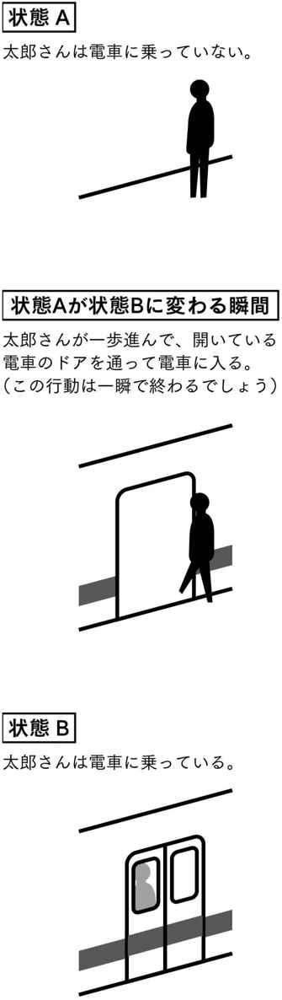
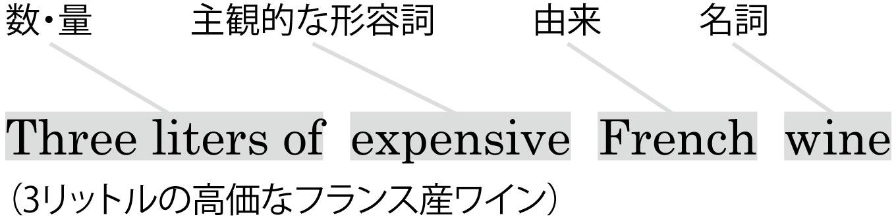
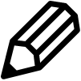

| 英語じょうずになる事典 | |
| デビッド・バーカー | |
| (2008) | |
参照項目から元の箇所に戻るには、お使いのビューワーの仕様に従ってください。または一旦目次を表示し、戻りたい箇所の近くの見出しをタップして戻ってください。
はじめに Preface
こわがらないで──間違いは上達の素！
「日本人は間違いを気にしすぎるから会話ができない」という意見をよく耳にします。確かに私もそう感じたことはあります。日本の中学校や高校の教育は「間違い＝減点」という文化なので、英語をしゃべるときも、文法の間違いを避けることを優先する人は大勢いるようです。しかし、例えば「スノーボードをやりたいけど、転ぶのが嫌だ」と考えている人が永遠に滑れるようにならないのと同様、間違わないで外国語を身に付けるのも不可能な話です。とはいえ、それは分かっていてもやはり間違ってしまうのは恥ずかしいと考える学習者も大勢いると思います。実は私もその一人です。
私は26歳の時に日本語の勉強を始めました。当時、私はシンガポールの英会話スクールで英語を教えていました。その学校は日本語のクラスも提供していたので、私は週に2回、初級のクラスに参加していました。しかし、クラス以外の場では絶対に日本語を使わなかったので、長く勉強を続けてもあまり上達しなかったのです。教室の外で日本語を使うのは本当に嫌でしたし、日本語で話し掛けられると大パニックを起こすので、学校でもなるべく日本人の先生と会わないように努力していました。「それじゃ日本語を勉強する意味ないじゃん！」と言われるかもしれませんが、私はその時、日本語のクラスに出ているだけで満足していたのです。
でもある日、私が学校のエレベーターに乗ろうとした時、ドアが開くと、日本人の先生が何人か乗っていたのです！ 逃げると失礼だと思われるので、私はそのままエレベーターに乗りました。するとやはり日本語で話し掛けられました。
「デビッドさん、新しいズボンを買いましたね」
その日の私は特に調子が良かったのかもしれませんが、なぜかその発言を理解することができました。しかも返事まで思い浮かびました！ 確かに私は新しいズボンを履いていましたが、安い物だったので、そのことを伝えようと思ったのです。それで私はこんなふうに言いました。
「はい。でもとてもヤサイでした」
もちろんエレベーターの中は大爆笑でした。せっかく頑張って返事をしたのに笑われてすごく嫌になった私は、その瞬間、決心しました。
「日本語は単語が似すぎていてバカな言語だ。私はもう勉強したくない！」
そして家に帰ると本当に日本語の本を全部しまいこんで、その後2週間もクラスを欠席しました。
今になってみればその時の自分の考え方を笑えますが、こんな（決してシャイではない！）性格で、外国人に英語を教えている私でも、間違えるのはとても嫌だったのです。ですから皆さんにも簡単に「間違いを気にしないでください！」とは言えませんが、私はその気持ちを乗り越えたおかげで、こうして日本語で本が書けるようになりました。私が初めて日本語での執筆に挑戦したのは2003年のことでした。その時、私のボロボロの日本語を丁寧に直してくれた人がいたので、私は自分が書いた文とその友達が直してくれた文を比べながら、少しずつ日本語が書けるようになりました。今でもやはり気持ち的にはできれば間違えたくないのですが、その経験によって「間違いは上達の素」という意識が強く根付いた私は、頑張って書き続けています。
この本に載っている間違いはほとんどの日本人に共通しています。もちろん100パーセント間違えずに英語で話すのは不可能な話ですが、この本の内容を理解すれば少なくともたくさんの大きな落とし穴を避けることができるはずです。それだけであなたの英語は一気にレベルアップし、より自然になるので、ぜひ読んでいただきたいと思います。
なお、この本の執筆にあたっては、たくさんの学生や先生に意見を聞いたので、草稿段階よりも数倍分かりやすくなっていると思います。しかし本当に理解しやすいかどうかは結局、読んでくださった皆さんにしか分かりませんので、もしお気付きの点、ご意見、改良の提案などがありましたら、アルク英語出版編集部（shuppan@alc.co.jp）にメールでご連絡いただくか、「デビッド・バーカーの英語と仲直りブログ」（http://eng.alc.co.jp/kaiwa/davidbarker/）にコメントを投稿してください。もしご希望でしたら私は頑張って日本語でお返事しますが、その日本語に間違いがあったら教えてくださいね！
2008年秋
David Barker
How to Use this Book
本書の構成と使い方
バーカー先生がこれまでに見つけた「日本人に共通する英語の間違い」をリストアップ。
さまざまな間違いパターンを検証することで、自然な英語感覚が身に付きます。
この本は、デビッド・バーカー先生が16年以上にわたり何万人もの日本人に英語を教えてきた中で繰り返し目にしてきた「日本人に共通する英語の間違い」をリストアップし、どうしたらその間違いを避けられるのかを解説した本です。
この本で取り上げた間違いの多くは、これまで『英語と仲直りできる本』『もしも英語ができたなら...』（アルク）などの書籍や、週刊ST（ジャパンタイムズ）の連載「会話に生かせる英文法」などの記事でも解説されています。今回、それらを一冊にまとめるに当たっては、たくさんのネイティブスピーカーや日本人学習者の意見を取り入れて内容を再検討し、さらに分かりやすくしました。
知りたいことがどこに書いてあるかがすぐに分かるように、事典ふうの構成になっていますので、英語を話したり書いたりしていて「これで良かったっけ？」と迷うことがあったら、ぜひそのたびにこの本を開いて確認してみてください。調べたいことが特になくても、この本を何度も通して読めば、だんだん「英語らしさの本質」がつかめてきて、より自然な英語を発信できるようになります。

本書は「文法編」と「表現編」に分かれています。「文法編」では、日本人の英語学習者が特に苦手とする文法・構文の間違いを、「時制と仮定表現」、「限定詞・形容詞・名詞」、「さまざまな文の形」という3つのカテゴリー・計36項目で解説しています。「表現編」では、英語にしようとすると間違ってしまいがちな日本語の日常表現を、「あいうえお」順に紹介しています。
「文法編」「表現編」とも、① 典型的な間違い例文（「落とし穴はどこ？」）を提示、② 間違ってしまう理由と対策、間違いやすいポイントの解説、③ ① を正しい英語、あるいは、より自然な英語に直した例文（「正しくはコレ！」）という３つの要素で構成されています。また、「表現編」については、④ 解説の中でカギとなるポイントも表示しています。
解説中や例文の後に→XXXX という表示がある場合は、その「XXXX」の項目も参照してください。より理解が深まります。
本書は、どの項目から読んでいただいても構いません。ただ、間違い例文やポイントだけを見て、「私はこんな初歩的な間違いはしないよ！」と思っても、ぜひ解説を最後まで読んでみてください。間違い自体は単純なようでも、なぜそんな間違いをしてしまうかという背景には、英語の中・上級者でも気付きにくい英語と日本語の根本的な違いが隠れていることがあるからです。その違いを意識することが「英語じょうず」になるための第一歩なのです。
巻末には、本書に収録した210の間違いに対応する「チェックリスト」があります。全部読み終えた後も、ときどきこのリストを見直して、知識が定着しているかどうか確認してみてください。記憶があやふやになっている項目については、もう一度解説を読んでおきましょう。
・日本語の見出し
・英語の見出し（日本語の見出しとは必ずしも対応していません）
・英訳したい和文
① 和文を誤って英訳した文（×...間違い △...間違いとまでは言えないが不自然）
② 解説
参照すべき項目を示すマーク
③ 正しい英文
④ ポイント（文法編にはありません）
本書の表記について
本書は特に記述のない限り、アメリカ英語の表記に従っています。
そのほかの表記については下記を参照してください
| ... / ... | スラッシュ（/）の前後は入れ替え可能（入れ替えできる範囲が分かりにくい場合は ... / ...のように該当語句の下に点線を引いてあります） |
| （...） | （ ）内は省略可 |
| ～ | 語が続く |
| ... | 複数の語や節が続く |
| SV | 主語（subject）+動詞（verb） |
| -ing | 動詞の-ing形 |
英語じょうずになる事典
ネイティブ講師が日本人のために書いた
英語あたまをつくる210講
Contents 目次
時制と仮定表現
限定詞・形容詞・名詞
さまざまな文の形
あ-お 会う ｜あきらめる、やめる ｜遊ぶ ｜～後に、後で ｜アルバイトする ｜家に帰る ｜～以外に、～のほかに ｜行く、来る ｜行く、着く ｜痛い ｜一生懸命、ハードに ｜いつも、毎回 ｜いなか ｜今 ｜今から、これから ｜意味 ｜色 ｜歌（を歌う） ｜海（に行く） ｜うらやましい ｜うるさい、怒られる ｜おいしい ｜お酒（に強い・弱い） ｜教える ｜お尻 ｜お薦め ｜遅れてごめんなさい ｜お礼を言う
か-こ ～回 ｜海外 ｜会社 ｜快適な、気持ちいい ｜帰る ｜確認する ｜風邪をひいている ｜家族 ｜学校 ｜髪を切る、車を修理する ｜～から ｜借りる、貸す ｜かわいい、かっこいい ｜感動した ｜頑張る ｜聞く(1) ｜聞く(2) ｜汚い、きれい ｜気付く ｜気にしないで ｜客 ｜休日、休暇 ｜今日は～です ｜薬を飲む ｜クレーム ｜元気
さ-そ サークル ｜最近、このごろ ｜サイン ｜～させる ｜サラリーマン ｜～市、～町 ｜資格 ｜時間がかかる ｜自然 ｜～したいと思う ｜～した方がいい ｜知っている、知る ｜知ってる？ ｜～してほしい、～したい ｜～しながら ｜～しに、～するために ｜～しやすい ｜十分な、足りている ｜趣味 ｜～しよう(1) ｜～しよう(2) ｜ショッピング ｜信じる、信用する ｜好き、嫌い ｜すぐに ｜過ごす ｜スタッフ ｜スポーツをする ｜～するといい、～してほしい ｜狭い、広い ｜先生 ｜先輩、後輩 ｜そして ｜育てる ｜それ、あれ ｜それに、そして
た-と 体重（太る・やせる） ｜大丈夫？ オーケー？ ｜例えば ｜楽しい ｜楽しみだ ｜楽しむ ｜旅、旅行 ｜たぶん ｜違う ｜チャレンジする ｜～(交通手段) で ｜～できた ｜できるだけ ｜テンション ｜～と言う、～と言われる ｜どう、どうする、どうして ｜遠い ｜トーク、話 ｜～と同じ ｜特に ｜年上、年下 ｜とても
な-の なぜなら(1) ｜なぜなら(2) ｜などなど ｜慣れる、慣れている ｜～（時期）に、～（場所）で ｜～に行く途中で ｜～に、～にとっては ｜（～な）においがする、味がする ｜～になる、～してくる ｜～の ｜～の間に ｜（乗り物に）乗る
は-ほ バーゲン ｜入っている、入会している ｜初めて ｜恥ずかしい ｜ハプニング ｜はやい、はやく ｜ピアス ｜ビッグサイズ ｜（不特定の、総称の）人 ｜一人で、自力で ｜増える、減る ｜プレー ｜プレゼント ｜ペンション ｜便利な ｜ほとんど
ま-も まあまあ ｜マイ～（マイカー、マイホーム） ｜毎日 ｜前の、次の、この ｜マスター ｜まだ、もう ｜～までに ｜マネージャー ｜（～のように）見える ｜磨く ｜ミス ｜店 ｜認める ｜見る ｜みんな、全員 ｜メンバー ｜もう一度 ｜持っている
や-よ、ら-わ 約束(1) ｜約束(2) ｜安い ｜休む ｜やめる ｜有名な ｜夢 ｜（～して）よかった、うれしい ｜よく、たくさん ｜よく～する、いつも～する ｜夜中 ｜ライブ ｜分からない ｜忘れる ｜私と～ ｜私は～だった
コラム 英語じょうずになるtips
① 言えますか？ 日にちの表現 ｜② 時刻の表し方 ｜③「ごはん」に冠詞は？ ｜④ 数字って難しい！ ｜⑤ スマートに名前を聞く／名乗る方法 ｜⑥ つづりの聞き方を練習しておこう ｜⑦「完璧な返答」は不自然？ ｜⑧ why質問の語順に注意
1
現在形の本当の意味を押さえよう！
present simple tense
落とし穴はどこ？
・私は自由時間には音楽を聞いています。
×In my free time, I am listening to music.
 「習慣的に～している」は現在形で表す
「習慣的に～している」は現在形で表す
英語の現在形には「永遠に変わらない事実」、あるいは「習慣的にやっていること」という意味があります。日本語の「～をやっている」「～している」を英語に直すときは、間違い例文のような現在進行形→--4 present continuous tense ではなく、ただの現在形になる場合が多いのです。
Ilive in Nagasaki. （私は長崎に住んでいる）
Iplay the piano. （私はピアノをやっている）
Igo out with my friends every weekend. （私は毎週、友達と出掛けている）
Do youski? （あなたはスキーはやりますか？）→sports
ところで、大学の授業では学生が英単語を正しく使えるかどうかを確認するために、その単語を使ったオリジナル例文を書かせることがあります。すると多くの学生は、日本語の「私は～をします」のつもりでIsit on a chair.、Iwash my hair.などのような文を書きます。これらは現在形なので、前述のとおり「習慣」や「変わらない事実」という意味になります。でも、「いすに座る」とか「髪を洗う」といったことは明らかに誰でも普通の生活の中でやることなので、そういう文を読むと英語のネイティブスピーカーは「なぜわざわざこんなことを言っているんだろう？」と不思議に思うはずです。そして、「それはいつの話？」と聞きたくなるでしょう。Iplay tennis.やIlike fish.などは、人類ほぼ全員に共通する事柄ではないので違和感はないのですが、sit、wash、eatのように本当に誰でもやることだと、例えばIsit on a chairwhen I eat dinner.（夕食を食べるときはいすに座る）やIwash my hairevery morning.（毎朝髪を洗う）まで言わないと、意味不明な発言になってしまいます。ですから、こういう動詞を使って例文を作るなら、必ず次のように過去形、未来形、または現在進行形にしないと文が成り立ちません。
Isat on a chair. （私はいすに座りました）
Iam going to siton a chair. （私はいすに座ります）
Iam sitting on a chair. （私はいすに座っています）
現在形が「未来」を表すとき
日本語だと「私は～をします」で未来のことを表現できますが、英語の現在形は基本的に未来を表しません。しかし、特別なケースとして、時刻表や決まったスケジュールに沿って行うことについてであれば、将来の話であっても現在形で表します。
What timedo you finish work tomorrow? （明日は仕事は何時に終わるの？）
What timedoes the bus leave? （バスは何時に出発する？）
My flightarrives at three in the afternoon. （私の便は午後3時に着く）→--3 future forms
上記の例文では現在形でなくwillを使うことも可能ですが、willを使うと不自然に聞こえる場合もあります。スケジュールや時刻表の話をするときは、現在形を使った方が自然な英語になります。
なお、if/whenを使った文章でも、現在形で未来を表せます。→--11 if/when
正しくはコレ!
○In my free time, I listen to music.
2
日本語の「している」と英語の進行形は違う！
continuous aspect
落とし穴はどこ？
(1) 私は3時間も電車に乗っていました。
×I was getting on the train for three hours.
(2) 母は出掛けています。
×My mother is going out.
日本語の「～している」の意味は？
英語の現在進行形と過去進行形は、be動詞（am/is/are、またはwas/were）＋-ing（動詞の進行形）で表します。これらの時制の使い方については現在進行形→--4 present continuous tense と過去進行形→--6 past continuous tense の項目で詳しく説明していますが、ここでは日本語の「～している」と英語の進行形の根本的な違いについて少し説明します。
皆さんは学校で「～している」＝be＋-ingのように教わったと思いますが、この考え方は間違いを招きます。それはなぜかと言うと、「～している」がカバーするシチュエーションの中には、前項の「習慣」のように英語の進行形で表せないものもあるからです。
日本語では「ある状態が変わった」と「その後に新しい状態が続いている」を同じ動詞で表せると思います。例えば事故で誰かが「骨折した」なら、その後、その人は「骨折している」と言えるでしょう。同じように、家から「出掛けた」人のことは「今、出掛けている」と言いますよね。しかし、英語では「状態の変更」を表す動詞を、「～状態が続いている」のつもりでそのまま「＋-ing」にすると、全然違う意味になってしまいます（例えば「骨折している」のつもりでHeis breaking his arm.のように言ってしまうと、ハンマーや石で一生懸命に自分の腕をたたいている人のイメージが浮かびます！）。
例えば太郎さんが今ホームで電車に乗ろうとしているとします。すると状態は下の図のように変わるでしょう。
このプロセスを日本語で説明する場合は、状態A と状態B の両方を同じ「乗る」という動詞で表すことができます。つまり、「太郎さんが電車に乗っていない」と、「太郎さんが電車に乗っている」です。状態Aが状態Bに変わる瞬間 を示す場合にも「乗る」を使いますが、過去形にするでしょう（「太郎さんが電車に乗った」）。
しかし英語では状態Aが状態Bに変わる瞬間 と状態B が続いていることを同じ動詞では表せないことが多いのです。英語のget on the trainは確かに「電車に乗る」という意味ですが、それは「乗る瞬間」だけのことです。
例えば、もし「太郎が電車に乗っている」のつもりでTarois getting on the train.と訳すと、ネイティブスピーカーの頭には、今この瞬間に電車のドアから中に乗り込もうとしている人のイメージが浮かびます。そして、get on the trainは基本的に状態Aが状態Bに変わる瞬間 を意味するので、「太郎さんは1時間電車に乗っていた」のつもりでTarowas getting on the train for one hour.と言ってしまうと、それは「電車に乗り込むのに1時間かかった」という、とても不思議な発言になります。

「～している」を訳す３つの方法
日本語の、「ある状態が続いている」という意味での「～している」を英語で表す方法は、基本的に3つあります。
1.「一瞬の行動」と「状態」を区別するために違う動詞を使う。
2. 状態を表すために、be動詞＋形容詞、またはbe動詞＋前置詞／副詞を使う。
3.現在完了形で「一瞬で終わった状態の変更」を表し、時制の選択で「おまけ」のように現在の状態を同時に伝える。→--5 present perfect tense
使い分けが複雑なのではと心配する読者もいるかもしれませんが、それほど悩む必要はありません。日本人にとってよく問題になる代表的な落とし穴は、以下の説明の中に全部リストアップされているからです。これらの正しい言い方さえ覚えれば、多くの落とし穴を避けることができるでしょう。
1.「一瞬の行動」と「状態」を区別するために違う動詞を使う
このケースの代表的な例はput onとwearです。例えば「服を着る」（着る瞬間）ならput onと言いますが、「着ている状態である」ならput onではなくwearを使います。wearとput onは両方とも進行形で使えますが、Heis wearing a shirt.は「彼はシャツを着ている」という意味で、Heis putting on a shirt.は「彼は今シャツを着るという行動をとっている最中である」という意味になります。
場合によっては完全に別の動詞を使うのではなく、「状態」と「一瞬の行動」を区別するために動詞に何かを付け加える方法もあります。その一例がgo to sleepとsleepです。「眠っている」という状態を表すためにThe babyis sleeping.と言うのは問題ありませんが、「眠りにつく」、つまり、寝ていない状態から寝ている状態に変わる一瞬のことを言いたいなら、sleepはあまり使いません。go to sleepが正しい言い方になります（fall asleepという言い方もできます）。従って「昨日の夜は10時に寝た」と言いたいなら、I slept at ten o'clock last night.ではなくI went to sleep/fell asleep at ten o'clock last night.となります。
2. 状態を表すために be動詞＋形容詞、またはbe動詞＋前置詞／副詞を使う
(1) be動詞＋形容詞
例えばclose（閉じる）は、ネイティブスピーカーの感覚からいえば「一瞬」で終わる行動です。日本語では、「閉じた状態だった」ことを示すために「彼は目を閉じていた」と言えますが、英語で× Hewas closing his eyes.と言ってしまうと、すごくゆっくり目を閉じようとしている最中の人のイメージが浮かびます。正しく英訳するためにはbe動詞と形容詞（または過去分詞）を使います。
もう一つ例を挙げると「結婚する」と「結婚している」の区別があります。英語だと「結婚する」は一瞬の行動（「結婚していない状態」が「結婚している状態」に変わる瞬間の行動）なので、marryまたはget marriedと言います。しかし「結婚している」は「一瞬の行動」ではないので、形容詞のmarriedを使ってbe marriedと表現します（「お姉さんは結婚している」のつもりでMy sister is getting married.と言ってしまうと、未来の意味［「これから結婚する」］になり、誤解を招くでしょう→--3 future forms）。
My sister (got)marriedlast year. （姉［妹］は去年、結婚した）
Mybrother is married. （兄[弟]は結婚している）
My parentshave been married for 30 years. （両親は結婚して30年になる）
(2) be動詞＋前置詞
人の居場所について言いたいなら、英語では単に～is in＋場所（部屋・建物・車など）や、～is on＋乗り物（電車・バス・飛行機など）のように言います。例えば、「お母さんがいま車に乗っている」と言いたいならMy motheris in the car.と言います。同じく「電車に乗っている状態」のことを言いたいならMy motheris on the train.です。
Igot on the train at four p.m. （私は午後4時に電車に乗った）
"Where are you?"─ "Iam on the train." （「どこにいるの？」──「いま電車だよ」）
Ihave been on the train for an hour. （私は1時間も電車に乗っている）
(3) be動詞＋副詞
誰かが家やオフィスなど本来の居場所から離れているとき、日本語では「○○は出掛けている」のように言えますが、これをShe/He is going out.のように訳してしまうと「その人は出掛けようとしている」という意味になります。go out は「出掛ける」一瞬の行動で、「出掛けている」状態を表すならbe outを使います。
Asakowent out. （あさこさんは出掛けた）
Asakois going out. （あさこさんはちょうどいま出掛けようとしている）
Asakois out. / Asakois not here. （あさこさんは出掛けている）
ちなみに、「あさこさん」というのは私がシンガポールに住んでいた時の友達です。ある日あさこさんの家に電話をすると、彼女のお母さんが出ました。お母さんはあまり英語ができないのですが、私も当時はまったく日本語ができなかったので、Can I speak to Asako please?（あさこさんとお話できますか？）と英語で尋ねました。あさこさんはその時出掛けていたので、お母さんはそれを伝えるつもりで、Asakois going out.と言いました。当時まだ「文法の落とし穴」を意識していなかった私は、お母さんの発言を完全に誤解してしまい、Can I speak to her before she goes?（じゃあ、出掛ける前にお話をしてもいいですか？）とお願いしました。するとお母さんはちょっと焦った様子で、But sheis going out!と言うのです。それで私はまたI know! So please stop her!（分かってますよ！ だから、彼女を止めてください！）とお願いし......こんな調子でかなり長くやりとりが続きました！ 英語で自分の言いたいことを正確に伝えるためには、やはり時制を勉強する必要がありますね。
3. 現在完了形で「一瞬で終わった状態の変更」を表し、時制の選択で「おまけ」のように現在の状態を同時に伝える。
現在完了形→--5 present perfect tence の特徴は、過去の出来事を述べると同時に、その出来事の結果として残っている現状を伝えられることです。例えば、上記の「あさこさん」の例に戻ると、Sheis out.のほかにShehas gone out.という言い方もできます。現在完了形を使うことによって、「彼女は出掛けた」と「その行動の結果がまだ残っている」（つまり「彼女はまだ出掛けている」）の2つの情報が伝わります。それと同様に、「彼は目を閉じている」ならHehas closed his eyes.（彼は目を閉じて、まだそのままの状態である）と言えます。
しかし、基本的に現在完了形は過去形と同じように過去の出来事を表す時制なので、新しい状態の「継続時間」などに言及したいなら、be動詞＋形容詞／前置詞／副詞を使わなければなりません。例えば「彼はもう20分も電車に乗っている」なら× Hehas got on the train for 20 minutes.ではなく○ Hehas been on the train for 20 minutes.ということです。
「～している」の話が長くなりましたが、要約すると、皆さんが日本語の動詞の英訳として覚えた英語の動詞が「一瞬の行動」しか意味しないケースは多いのです。その英語の動詞を進行形にすると、行動をしている最中のイメージになるか、未来の行動を表すことになってしまうので、「～の状態になっている」と言いたいなら別の言い方を考える必要がある、ということです。
なお、場合によっては自然な英語に直すために日本語の発言自体を変えなければならないこともあります。例えば「車は止まっている」なら、The cars are stopped.よりもThe cars are not moving.（車は動いていない）と言った方が自然に聞こえます。
正しくはコレ!
(1)○I was on the train for three hours.
(2)○My mother is out.
3
未来を表すwillとgoing toを正しく使い分ける！
future forms
落とし穴はどこ？
・君、今夜は何をするの？
△What will you do tonight?
be going toと進行形の表す「未来」
ほとんどの日本人は、「英語の未来形＝will」というふうに教わっていると思いますが、本当のことを言うと英語には「未来形」はありません。英語で将来の話をするときは、状況に合わせていくつかの言い方を使い分けなければなりません。willと be going toは未来についてよく使いますが、これらはまったく同じとはいえないのです。
まずは2種類の「未来」について考えましょう。それは未来についての「予測」と人間の「計画」です。「予測」についてであれば、willとbe going toは両方使えるし、どちらでもいいというケースも多いですが、「今の状況を見てそう思う」という場合はwillよりbe going toを使うことが多いのです。例えば以下の文ではwillを使うと不自然に聞こえます。
Look at those clouds!It's going to rain. （あの雲を見てよ！ 雨が降るんじゃないかな）
また、人の「計画」や「予定」などについては、多くの場合、willではなくgoing to、またはbe＋-ing（＝現在進行形→--4 present continuous tense）を使います。例えば、下記のようなパターンです。
I'm going to play tennis tomorrow.
I'm playing tennis tomorrow.
この2つのパターンの意味は近いのですが、後者の進行形の方には「そうするつもり」というより「そうすることになっている」というニュアンスがあります。つまり、場所、時間などの詳細が全部決まっている、ということです。次の例文を比べてみてください。
I'm going totake my driving test next summer.
I'm taking my driving test next summer.
前者はただ「来年の夏ごろ免許をとるつもり」という印象になります（つまり発言者の意思が分かります）が、後者は「来年の夏に免許を取ることになっている」のような具体的な計画に聞こえます。だからネイティブスピーカーは近い未来のスケジュール等について話すとき、ほとんど進行形を使います。
Whatare you doing tonight / tomorrow / next weekend? （今晩は／明日は／来週末は何をするの？）
I'm studying on Saturday, and thenI'm playing baseball on Sunday. （土曜日は勉強をして、日曜日は野球をやることになっているんだ）
将来のことについて英語で自然に話すのは決して簡単なことではありませんが、プランやスケジュールについてはwillではなくgoing toか現在進行形を使ってみるだけで一気にレベルアップできるので、ぜひ挑戦してみてください。
willの持つ「決意」のニュアンス
なお、未来形としてのwillにはもう一つ使い方があります。それはその場でやると決めたことについて話すときです。
A: I left my wallet at home! （財布を家に忘れた！）
B:I'll lend you some money. （お金をいくらか貸してあげるよ）
BはAの発言を聞いた時にその後の自分の行動を決めたので、willを使っています。ここでbe going toを使うと、BはAが財布を忘れたことを聞く前からお金を貸そうと思っていたということになるので、不自然に聞こえます。また、willは強い決心を示すときや人に約束をするときにも使えます。そういう場合は必ずwillを強調して発音するようにしましょう。
Iwill lose weight before the summer. （私は絶対に夏までにやせる！）
正しくはコレ!
○What are you doing tonight?
4
現在進行形の「臨時的」なニュアンスをつかめ！
present continuous tense
落とし穴はどこ？
・私は今週は毎晩残業している。
×I work late every night this week.
現在進行形は「今の時期に限ってやっている」
英語の「現在進行形」は、主語＋be動詞＋-ingの形です。例えば、I am going、I am playingなどです。英語の進行形は日本語の進行形と似ているところもありますが、使い方が異なる場合もあります。習慣的に「いつもやっている」ことを英語で言うなら、ただの現在形にします。→--1 present simple tense 例えば、I play baseball.（私は野球をやっている）、I go to school every day.（私は毎日学校に行っている）などです。それに、「ある状況が続いている」（「結婚している」、「腕を骨折している」など）ことを英語で表現するときも要注意です。これはそれぞれ、Sheis married.、Hehas broken his arm.になります。→--2 continuous aspect
基本的に英語の進行形は「臨時的」な行為や状態を示します。例えば、I live in Japan.とI am living in Japan.はほぼ同じ意味ですが、後者の方が「でも、それは臨時的なものだ」というニュアンスを伝えます。もちろん日本語と同じように、英語の現在進行形にも「今やっている最中」という意味があります。I am studying.（勉強しているところだ）、I am watching TV.（テレビを見ている）などです。
それから、今この瞬間ではないけれど「その時期に限ってやっている」という意味で現在進行形を使うこともできます。
I'm on holiday this month, soI'm sleeping late every day andgoing out with my friends at night. （私は今月は休暇を取っているので、毎日遅くまで寝ているし、夜は友達と出掛けている）
また、「未来」を表すのにも現在進行形を使うことができます。→--3 future forms
正しくはコレ!
○I am working late every night this week.
5
日本語にない時制、現在完了を極める！
present perfect tense
落とし穴はどこ？
・私は大阪に15年住んでいます。
×I am living in Osaka for 15 years.
現在完了形は「過去を区別する」ためにある
現在完了形はhave＋過去分詞（I have done/seen ... など）で作る時制です。英語の現在完了形に当たる日本語の時制はないので、この時制の使い方で悩む日本人は多いと思います。基本的に現在完了形は「過去の時制」ですが、「過去」と「現在」を結び付けようとするときに使います。要するに同じ「過去」でも「完璧に終わってしまって、現在とはもう関係ない過去」と「ある意味ではまだ現在とも関係がある過去」を区別するために現在完了形が存在しています。
「過去」と「現在」が結び付いているケースは主に3種類あります。
1. 過去の話だが、いつのことかを明確にしないとき
今も生きている人が「～をしたことがある」と言うと、その経験がいつのことかは不明でも「その人が生まれてから今までの間」であることは分かるでしょう。その期間は現在まで続いているので、英語ではそれを表すために現在完了形を使います。このように「過去の話だけれど、いつのことかを明確にしない」意味で現在完了形を使う場合は、everやnever→--10 ever/never と一緒によく使います。下記の例文を比べてみてください。
My fatherhas visited a lot of countries.
My grandfathervisited a lot of countries.
これらの例文を読むと、お父さんはまだ生きているが、おじいさんはもう亡くなっている、と解釈する人が多いでしょう。それは時制のためです。お父さんについての文は現在完了形なので、「現在に至るまでの期間」というニュアンスになります。一方、おじいさんについての文は過去形なので、その期間は現在に至らないということになります。
もし文の最後に期間を指定する節などがあれば（例えば、My grandfather visited a lot of countrieswhen he was young.）、ただ「その期間（いろいろな国を訪れていた若かりしころ）がもう終わっている」としか解釈しませんが、それがなければ、おじいさんの人生自体が終わっているように聞こえます。生きているなら現在完了形を使うからです。
というわけで、英語の文では過去の期間を限定するような表現（yesterday、last year、when I was in junior high schoolなど）があると、現在完了形ではなく、普通の過去形に変わります。
「現在完了形」と同じ形（つまりhave＋過去分詞）の時制は英語以外の言語にもありますが、意味はその言語によって変わります。例えば、フランス語の現在完了形は英語の過去形と同じ意味になります。ですから、フランス人英語学習者は期間を限定している文なのに、誤って現在完了形を使ってしまうことがあります。例えば、カナダのケベック州出身でフランス語が母語である歌手のセリーヌ・ディオンは、数年前のコンサートで次のように発言しました。
×Last year, Ihave been to Japan, and Ihave met a wonderful musician.
最初にlast yearで期間を限定しているのですから、正しくはI went to Japan, and I met ... と言えばよかったのです。
2. 人の習慣や以前の状態が今も続いているとき
「過去に始まり現在に至っている」、または、「ある過去の時点から今まで何回も繰り返されている」ことを表すのも現在完了形の仕事です。
Ihave been learning Japanese since I was 26. ［現在完了進行形＝今も勉強している］
Ihave lived in Japan for 12 years. ［現在完了形＝今も住んでいる］→since/for
Ilived in Singapore for two years. ［過去形＝今はもう住んでいない］
この意味ではhave livedとhave been livingをどう使い分けるかが気になる人もいると思いますが、どちらでもOKである場合も多く、はっきりとしたルールを示すのは難しいのです。ただ、傾向としてはhave been＋動詞の-ing形（現在完了進行形）の方はその「行動」に重点を置き、have＋過去分詞（現在完了形）はその行動の「結果」を強調すると言えます。例えば、「顔に絵の具が付いてるよ。なぜ？」と聞かれてI've been painting.（絵を描いていたから）と答える場合。これは「絵を描いていた」という行動自体を強調しているから現在完了進行形なのです。その人が努力の結果完成した絵を自慢したければ、I've painted three pictures!のように現在完了形で付け加えることができます。
「現在完了進行形とただの現在完了形の違いは、その行為が終わっているかどうかだ」という説明を時々耳にしますが、それは間違いです。終わっているかどうかではなく、「何をやっていたか」を強調したいか、「やったこと（行動）の結果」を強調したいかの違いなのです。「僕は中学校の時から野球をやっているよ」と言いたいときは、どちらかというと結果よりも行動に重点を置いているので、I've been playing baseball since junior high school.のように言う場合が多いでしょう（しかし、I've played baseball since junior high school.も決して間違いではありません）。
ただ、「数回～をしたことがある」のように結果だけを言いたいときは、現在完了進行形は使えません。
○ Ihave been playing tennis since I was 14. （私は14歳からテニスをやっている）
○ Ihave played in three national championships. （私は3回も全国大会に出場したことがある）
× Ihave been playing in three national championships.
3. 過去の出来事の結果が現在の状況に直接影響を与えているとき
現在完了形は、現在の状況に過去の出来事が直接影響を与えているときにもよく使われます。例えば、Davidhas broken his arm.（デビッドは腕を骨折した、今も骨折している）、Johnhas gone home.（ジョンは家に帰った、今はここにいない）などです。→--2 continuous aspect
Ihave forgotten my telephone number. （自分の電話番号を忘れた、今も思い出せない）
Iforgot my telephone number last week. （先週、自分の電話番号を忘れたけど、今は思い出している）
なお、つい最近の出来事が今ニュース（新情報）になっているときも、現在完了形を使います。
Three peoplehave been rescued from a fire in a house in Osaka. （大阪の住宅火災で3人が救出された）
これが「つい最近」でなくなったら下記のように過去形に変わります。
Three peoplewere rescued from a fire in a house in Osaka on Friday night. （金曜日の夜に起きた大阪の住宅火災で、3人が救出された）
「つい最近」を強調するためには、Ihave just seen our new teacher.（さっき新しい先生を見た）のように、よくjustを使います。これも「つい最近」の話ではなくなったら、Isaw our new teacher yesterday.（昨日、新しい先生を見た）となります。訳を見れば分かりますが、日本語ではどちらも過去形で表します。しかし英語でははっきりした時間は言わずに「それはつい最近のことである」ということを伝えるときに、現在完了形を使います。
なお、現在完了形はアメリカ英語でもイギリス英語でももちろん使われますが、アメリカ人は、イギリス人なら現在完了形を使うところで過去形を使うことがあります。
英：Have you heard the news? /
米：Did you hear the news?
英：Have you eaten dinner yet? /
米：Did you eat dinner yet?
正しくはコレ!
○I have lived in Osaka for 15 years.／I have been living in Osaka for 15 years.
6
過去進行形は「背景」を描写する時制
past continuous tense
落とし穴はどこ？
・君がメールをくれた時、僕は寝ていた。
×I slept when you sent me an e-mail.
過去進行形と過去形の違いは行為の「起点」
英語の過去進行形は、ある過去の時点で何をしていたかを説明するときに使います。
"What were you doing at ten o'clock last night?" ─ "Iwas watching TV." （「昨夜10時は何をしていましたか？」――「テレビを見ていました」）
この場合、「テレビを見る」行為が10時より前から始まっていたという意味になります。これが過去進行形とただの過去形との大きな違いです。次の例文の意味を考えてください。
When the teacher came into the room, the studentsstood up.
When the teacher came into the room, the studentswere standing up.
前者は先生が教室に入ってから学生が起立したということですが、後者は先生が教室に入る前から学生が立っていたという状態を表します。過去進行形はこのように「背景状況」を表すためによく使われます。そして、その背景状況に「割って入った」出来事は過去形で示します。
Iwas making dinner when the telephonerang. （電話が鳴った時、私は夕食を作っていた）
The childrenwere fighting when their mothercame home. （母親が帰ってきた時、子どもたちはけんかをしていた）
なお、私の経験から言うと多くの日本人の学習者は「昔～をやっていた」と言いたいとき、× Iwas playing volleyball when I was in high school.のように過去進行形で言いますが、これは間違いです。「過去に～をやっていた」と英語で言いたいなら、2つのパターンがあります。
1.「いつ」の話かをはっきり示すなら普通の過去形を使います。
Iplayed volleyballwhen I was in high school.
2.「いつ」の話かはっきりさせないならused toを使います。
Iused to play volleyball.
ただ、この言い方でも、when I was in high schoolなど時期を表す表現を付け加えるのは問題ありません。→--9 used to (1)
正しくはコレ!
○I was sleeping when you sent me an e-mail.
Column 英語じょうずになる tips ①
言えますか？ 日にちの表現
「明日」や「昨日」の言い方はご存じだと思いますが、「あさって」や「おととい」はどうですか？ 以下の日にちの表現を覚えておきましょう。
the day before yesterday （おととい）
the day after tomorrow （あさって）
the year before last （おととし）
the year after next （再来年）
a week（on/from）Friday （来週の金曜日）
「毎週、同じ曜日に」を表現したいときは、on Saturdaysのように、その曜日を複数形にしなければならないので注意してください。ただしevery Saturdayのように言うこともできます。
また、「その日、雨が降っていた」をThe day, it was raining.などと言ってしまう学習者はたくさんいますが、正しい言い方はthat dayです。「先日」の正しい英訳もよく尋ねられますが、a few days agoや the other dayとするのがお勧めです。
I bought a new shirtthe other day/a few days ago. （先日、私は新しいシャツを買いました）
7
過去完了形は「大昔」という意味ではない！
past perfect tense
落とし穴はどこ？
(1) 私は高校のころ野球をやっていました。
×I had played baseball when I was in high school.
(2) 私はピアノを11年間習っていました。
×I had learned the piano for 11 years.
(3) 私の祖父は昨年亡くなりました。彼は生涯、大阪住まいでした。
×My grandfather died last year. He has lived in Osaka all his life.
過去の時点から振り返る過去＝過去完了
過去完了形は「大昔」の意味だと思っている日本人は多いようですが、これは勘違いです。まずは現在完了形の意味を考えましょう。現在完了形は「現在の時点から見た過去」の話をしたいときに使います。→--5 present perfect tense 例えば、Ihave lived in Seto for two years.という文では、「私」が瀬戸に移り住んだのは現在の時点から見ると過去の話ですが、瀬戸に住むという行為は「現在の時点」まで続いているので現在完了形を使うのです。
「現在の時点から」ではなく「過去の時点」から見てその前のことを言いたいなら過去完了形を使います。
When Icame to Seto, Ihad already been in Japan for seven years. （私は瀬戸に来た時点ですでに日本に7年間住んでいた）
この文では、「瀬戸に来た」のは過去の時点で、「その時点までに～していた」と言いたいから過去完了形を使っています。（3）の間違い例文でも、おじいさんが亡くなったのは過去の話なので、その過去の時点（つまり「亡くなった時点」）まで彼が大阪に住んでいる状況が続いていたということを言いたいなら、過去完了形にするのが正しいのです。
過去完了形は「時系列」を整理する
過去完了形のもう一つの使い方は過去の出来事の順番を明確にすることです。例えば、以下の文の意味を考えてください。
Hanakohad made lunch, and she and Taroate it on the beach.
この場合、2人がお昼ごはんを食べたのは過去の話なので、eatを過去形にしてateと言います。そして、その「食べた時点」を起点として考えると、花子さんがごはんを作ったのはそれより前の話になりますよね。これを明確にするために過去完了形を使うのです。では、以下の文ではどうでしょうか？
Hanakomade lunch, and she and Taroate it on the beach.
この文の場合は「花子さんが海辺でごはんを作った」というふうにも解釈できるのです。上の例と違って「お昼ごはんを作った」と「食べた」は、同じ状況下での連続する行為です。
場合によってはわざわざ過去完了形を使わなくても、before that、after thatなどのフレーズで出来事の順番が分かることもありますし、常識的に分かることもあります。このようなときは過去完了形を使っても使わなくてもかまいません。
Marylived in Hong Kong for four years.Before that, she（had）lived in Spain for three years. （メアリは香港に4年住んだ。その前は、スペインに3年間住んでいた）
ポイントとして覚えてほしいのは、過去完了形は過去の出来事を2つ述べたいとき、あるいは過去のある時点を示してからその前の期間について話すときにしか使わない時制だということです。これらの条件のどちらかを満たさなければ、いくら大昔の話であっても過去完了形は使いません。例えば、「昔、ピアノを習っていた」は「現在まで続いていないから過去完了形で訳す」と勘違いする学習者も大勢いますが、これもただの過去形にすればいいのです。また、次の文は過去の出来事が並んだ文ですが、I had been learningの部分はI had learnedと言ってもかまいません。
I started playing the guitar in high school, butI had been learning the piano for six years before that. （私は高校のころにギターを習い始めたが、それまでに6年ピアノを習っていた）
その違いについては現在完了形の説明→--5 present perfect tense を参照してください。また過去完了形のもう一つの役割については間接話法の説明→--35 reported speech も参照してください。
正しくはコレ!
(1)○I played／used to play baseball when I was in high school.
(2)○I learned the piano for 11 years.
(3)○My grandfather died last year. He had lived in Osaka all his life.
8
シンプルな過去形に潜む罠
past simple tense
落とし穴はどこ？
・男が電車に乗って座席に座った。彼は非常に疲れているのだ。
×A man got on a train and sat down. He is very tired.
英語は時制の統一にうるさい言語
普通の過去形は日本語にもあるので、英語の過去形（past simple tense）も日本人にとってそれほど難しくないと思います。しかし落とし穴が２つあります。１つ目の落とし穴は、本当はただの過去形でいいのに、学習者が混乱して、現在完了形、過去完了形、過去進行形などを誤って使ってしまうことです。例えば、ここまで何度も出てきた「昔～をやっていた」の英訳です。過去の習慣について言うなら、英語ではwas/were＋-ing（＝過去進行形）ではなく、ただの過去形を使います。例えば、「私は小学校のころ書道をやっていた」なら、Ilearned calligraphy when I was in elementary school.です（used to learnも使えます。→--9 used to (1)）。
英語の過去形の２つ目の落とし穴は、間違い例文のように、最初の動詞は過去形にしたのに、その後、現在形に戻ってしまうことです。例えば、× The boyopened the door. Heis surprised.などです。英語は時制の統一についてかなりうるさい言語なので、過去の話をするときはすべての動詞が過去形になっていることを確認しましょう。
過去形のストーリーの中に現在の事実が出てくる場合は、現在形と過去形を混在させることもありますが、英語ではすべての動詞を過去形に統一する方が一般的です。
例えば、Istayed in a big hotel in Hawaii. Itwas really nice. The hotel westayed inwas called "La Plaza."という文の場合、このホテルが今でもこの人が泊まった時と変わらずステキなホテルで、名前も変わっていなくても、ほとんどの人はこのように動詞を過去形にすると思います。現在形を混ぜて使うのは、そうしないと重大な誤解を招く可能性があるときです。例えば、Iwent to my grandfather's house. My grandfather's namewas Taro.のように言ってしまうと、「おじいさんである太郎さんは亡くなった」というふうに聞こえますから、おじいさんが生きているなら、ここはisにします。
過去の話の中でどういう場合に現在形を使うべきなのかは難しい問題ですが、過去形にしても相手が大切な情報や事実を誤解する可能性がなければ、ネイティブスピーカーは時制を過去形に統一したがることを意識しましょう。
正しくはコレ!
○A man got on a train and sat down. He was very tired.
9
「過去の習慣」を表すused to doのニュアンス
used to（1）─ used to do/be
落とし穴はどこ？
・僕は高校のころ野球をやっていた。
×I was playing baseball in high school.
「昔、何度も／長くやっていた（けど、もうやっていない）」
まず、used to doとget/be used to doing→used to (2) は完全に別物なので要注意です。used to do/beは過去の習慣や生活、また、何かの「かつての状態」について話すときに使う言い方です。「今はもうやっていない・そうではない」という意味も含まれます。used to doの便利なところは時期や期間を指定する必要がない点です。例えば、I used to play baseball when I was in high school.とも言えますが、I used to play baseball.だけでもOKなのです。これはused to doと普通の過去形の違いの一つです。「いつ」を特定せずI played baseball.とだけ言うと、「過去の習慣」を表すのではなく「私は野球をしました」という「1回限りの行為」を表すことになります。
また、used to doは普通の過去形よりも「その行動が繰り返された」とか「その状況が長く続いた」という印象を与えます。
My familyused to go to Hokkaido in the summer. （私の家族は夏になると北海道に行ったものだ）※wentなら1回きりのことになる
This buildingused to be a school. （この建物はかつて学校だった）
なお、used toと同じ意味でwouldも使うことができます。wouldを使うと話し手が「昔を懐かしんでいる」というニュアンスになります。
Iused to play in the fields near my house with my friends when I was young. Every morning,we'd (=we would) meet outside the gate ... （私は若いころ、よく家の近くの野原で友達と遊んだものだ。毎朝門の外で待ち合わせて......）
上の文のように「昔の行動」を表す場合にはwouldとused toは同じ意味になりますが、「昔の状況」について語るときにはwouldは使えません。つまり、Iused to have long hair.とは言えても、× Iwould have long hair.とは言えません。
スペルの落とし穴
used toの発音は要注意です。最後のdは肯定文では発音しないので、否定文や疑問文にしたときに過去形のdが不要になるかどうかについて悩むネイティブスピーカーもたくさんいます。正解は、考え方によります。「use toが動詞で、dが過去形を表している」のように考える人もいれば、「used toはそのまま1つのユニットになっている」と考える人もいます。前者なら否定文や疑問文ではdが不要になり、後者ならどんな形の文でもused toになります。学習者は単純に後者のように考えてもいいと思いますが、それを正しくないと思う人もいることは覚えておきましょう。
［疑問文］ What games did you use(d) to play when you were a child?
（子どものころ、どんなゲームをして遊んだ？）
［否定文］ I didn't use(d) to like coffee, but now I do.
（以前はコーヒーが好きではなかったけど、今は好きだ）
正しくはコレ!
○I used to play baseball in high school.
10
everとneverは完了形のパートナー
ever/never
落とし穴はどこ？
(1) 私はこれまでにニューヨークに行ったことがあります。
×I have ever been to New York.
(2) 今年はまだディズニーランドに一度も行っていません。
×I have never been to Disneyland this year.
everは「生まれてから今まで」の意味
everとneverは現在完了形→--5 present perfect tense と一緒に使う単語です。everは基本的に疑問文で使う単語なので、I have ever ... という言い方はできません。なお、everは「生まれてから今まで」の人生すべてのことを意味するので、どう考えても最近のことに限定されるような内容の質問（例えば「最近出た本を読んだかどうか」など）には使いません。つまりHave youever been to Hawaii?は問題ありませんが、Have youever seen Will Smith's new movie?はとても不自然に聞こえます（everを取れば問題ありません）。
疑問文以外の文でeverを使うときは「一番～、最も～」と言いたいときです。また、If you ever ..., I will ...（もし...したら...するよ）という脅しのような表現でも使えます。→--11 if/when
That was the best food I haveever eaten! （今の食事は私がこれまで食べた中で最もおいしかった！）
If youever leave me, I will die. （もしあなたが私を捨てたら、私は死ぬ）
neverはeverの否定版
neverは否定文に使う単語です。意味は「一度も～ない」です。neverもeverと同じように「これまでの人生で～ない」という意味なので、最近の出来事については使いません。つまり、I havenever ridden a horse.（私はこれまで乗馬をしたことがない）はOKですが、× I have never ridden a horse this week/this month/this year.のように「最近」を表す表現と一緒には使えないのです（正しくはneverなしで、I haven't ridden a horse this year.などとします）。
なお、「行ったことがある／ない」と言いたいときは動詞の選択に要注意です。「行く」の過去分詞はgoneですが、〈人〉has gone to〈場所〉のように言ってしまうと「そこに行きっぱなしでまだ帰ってきていない」という意味になります。「行ったことがあるか」を聞きたいなら、goneではなくbeenを使うのが正しい言い方です。
Have you ever been to China? （あなたは中国に行ったことがある？）
I've been to Taiwan, butI've never been to China. （台湾ならあるけど、中国には行ったことがない）
正しくはコレ!
(1)○I have been to New York.
(2)○I haven't been to Disneyland this year.
11
if、whenの使い分けと「仮定法のレシピ」
if/when
落とし穴はどこ？
(1) 行けたら行くよ。
×If I can go, I would.
(2) 寒かったら言ってね。
△When you feel cold, please tell me.
必ずそうなるwhen、そうなるか分からないif
if/whenの文は特別な文法を必要とするので、これらの単語から始まる文章は決まったパターンに従わなければなりません。まずはifとwhenの違いを考えてみましょう。両方とも基本的に「～をしたら...、～のようになったら...」のように条件を示す表現ですが、whenは「いつかはそうなる」ことが前提で「そうなったときには」という意味です。ifは「そうなるかどうかはまだ分からない」けれど「もしそうなったときには」という意味になります。
例えば、普通は「今夜、家に帰ったら電話します」と言う場合、自分がいずれ家に帰り着くことはほぼ確実なのでWhen I get home, I'll call you.とすればいいわけです。もしここでIf I get home, ...（もし家に帰れたら...）のように言ってしまうと、それはかなり悲観的な考え方を示します！
ちなみに、私のお母さんはいつもWhen I win the lottery ... と言います。家族はみんな「If I win でしょ！」と突っ込みを入れるのですが、お母さんは「必ず当たるんだからWhenでいいのよ！」と言い返します。
「仮定の話」か「現実的な話」か
例文を見ると、ifとwhenのある文法的な特徴に気が付くと思います。両方とも基本的に将来の話なのに、if/when節の主語の後に続く動詞は現在形になっています。ここで間違ってしまう日本人はたくさんいるので、気を付けてください。
When Iget my driver's license, I'm going to buy a car.
（免許証を取ったら、車を買うつもりだ）...× When I will get ...
If Ihave enough money, I will buy a new one.
（もし十分なお金が手に入ったら、新しいのを買おうと思う）...× If I will have ...
「そうなるかどうか分からない」ときはifを使えばいいと説明しましたが、ifを使う文の中にもまた区別があります。話している人はその話が「現実的な話」か、そうでない「仮定の話」かを判断し、それぞれを表すのにふさわしいif文の種類を選ばなければなりません。
・現実的な話
レシピ If＋主語＋現在形, 主語＋will＋動詞の原形
If itrains tomorrow, the matchwill be cancelled. （明日雨が降ったら、試合は中止になるだろう）
・現実的でない、ただの「もしも話」
レシピ If＋主語＋過去形, 主語＋would＋動詞の原形
If Ihad a million dollars, Iwould buy a Ferrari. （もし100万ドル持っていたら、フェラーリを買うだろう）
その話題が「現実から離れている」という「距離感」を強調するために、現在から「離れている」過去形を使います。つまり、if 文で動詞を過去形にすることによって「でもこれは現実から離れている、ただの仮定の話だから」というニュアンスが伝わります。時制の選択によって、その話が自分にとって現実的なのか仮定に過ぎないのかを相手に伝えられるのです。
・過去についての「もしも話」
レシピ If＋主語＋had＋過去分詞, 主語＋would/couldなど＋have＋過去分詞
（＝If＋過去完了形，主語＋would/couldなど＋現在完了形）
If Ihad studied harder in school, Icould have gone to a better university. （学校でもっと勉強していたら、もっといい大学に行けたのに）
If Ihad woken up earlier, Iwould have made it to the station on time. （もっと早く起きていたら、時間通りに駅まで着けたのに）
このif文は、「過去がもし現実と違っていたら...」という意味です。レシピは少し複雑になりますが、意味は「過去がもしこうだったら（本当は違うけど）...」です。
なお、ifとwhenの文はどれも節の順番を逆にすることができます。if/when節が後に来るときはコンマが要らなくなります。
The match will be cancelledif it rains tomorrow. （もし明日雨が降ったら試合はキャンセルになる）
I could have gone to a better universityif I had studied harder in school. （学校でもっと勉強していたら、もっといい仕事に就けたのに）
正しくはコレ!
(1)○If I could go, I would.／If I can go, I will.
(2)○If you feel cold, please tell me.
12
even ifとeven though
even if/even though
落とし穴はどこ？
・私はその映画の1作目を見ていなかったのに2作目を見た。
×I watched the second movie even I hadn't seen the first.
even if～/even though～は、基本的に「～なのに」または「～だとしても」という意味です。even though～は「～のようになっている。それなのに...」という意味ですが、even if～は「～のようになるかどうかは分かりませんが、もしそうなったとしても...」となります。つまり、evenの後に続く文が事実（過去の話やいま起きていること）ならeven thoughを使います。一方、evenの後に続く部分がただの仮定の「もしも」話（主に将来の話）ならeven ifが正しい選択になります（どちらを使ってもいいケースもありますが、学習者ならこのように使い分けておけば間違いを避けられます）。
Even though it was raining, I had to take the dog for a walk. （雨が降っていたのに、犬を散歩に連れて行かなければならなかった）
Tomorrow's game will not be cancelledeven if it rains. （明日の試合は、雨が降ったとしても中止されない）
なお、even ifを使うときは、前述のif文と同様に、その「もしも」のことが起こる確率を考えて時制を使い分けなければなりません。→--11 if/when 現実的にありそうなことならeven ifの後に使う動詞は現在形になります。しかし、even ifの後に続く話が非現実的で、本当にただの「もしも話」だったら、それを明確にするために過去形を使います。
Even if hefinishes his report tonight, it will be too late. （もし彼が今夜までにレポートを書き終えることができたとしても、それでは遅すぎる）
Even if Ihad a million dollars, I wouldn't lend him any money. （もし私が100万ドルを持っていたとしても、それでも彼にお金は貸さない）
正しくはコレ!
○I watched the second movie even though I hadn't seen the first.
Column 英語じょうずになる tips ②
時刻の表し方
英語で時刻を表すときは、2つの方法があります。
1. デジタル時計のように、数字だけを言う
10:15 = ten fifteen、12:30 = twelve thirty、5:07 = five oh seven
2.「何分前」「何分過ぎ」と表現する
どちらかといえばイギリス英語に多いようですが、アメリカ人も使います。考え方としては、例えば、3時を過ぎても3時30分まではまだ4時より3時の方が近いので、「3時を～分過ぎている」（～past three）のように表現します。でも3時30分を過ぎると4時の方が近いので、「4時～分前」（～to four）という言い方に変えます。基本は5分単位で、正時の何分前／後かを表しますが、15分はquarter（60分の1/4）、30分はhalf（同1/2）と表現します。ちょうど5分単位では表現できない場合は、minutesを付け加えます。pastの代わりにafter、toの代わりにbeforeを使うこともできます。
5:00 = five o'clock
5:05 = five past five
5:10 = ten past five
5:15 = quarter（1/4）past five
5:20 = twenty past five
5:25 = twenty-five past five
5:30 = half（1/2）past five
5:35 = twenty-five to six
5:40 = twenty to six
5:45 = quarter to six
5:50 = ten to six
5:55 = five to six
5:57 = three minutes to six
なお、「1時」「12時」など数字だけでは、午前なのか、午後なのかが分からないので、in the morning、in the evening、at nightのような表現を使って特定します。
I was working untilone in the morning. （私は午前1時まで働いていた）
13
英文法の最難関！ 冠詞a/theの使い方
a/the
落とし穴はどこ？
(1) 僕は犬を飼っている。その犬の名前はタローだ。
×I have a dog. A dog's name is Taro.
(2) 私は東京駅へ行った。
×I went to the Tokyo Station.
◎ 冠詞の基本ルール
aとtheの使い分けは多分、英語学習者を悩ませる英文法の最大のポイントでしょう。英語の名詞を使うときは、aかtheが必要かどうか、そして、もし必要ならどちらが正しいかを考えなければなりません。すべての例や例外をここで説明するのは不可能ですが、いくつかの基本的ルールさえ覚えれば、多くの落とし穴を避けることができるはずです。
◎ aもtheも要らないケース
aは基本的に「特定していない1つ」です。theは特定したものに対して使います（単数・複数・数えられない名詞［不可算名詞］すべてに対応可能）。従って「一つ」でもないし「特定もしていない」ならaもtheも要りません。例えば、数えられない不可算名詞→-17 uncountable nouns はもちろんのこと、数えられる名詞でも、その「もの」のグループ全体について一般的に話す場合にはaとtheは要りません。
I like dogs. （私は犬が好きだ）
Cars are expensive. （車というのは高価なものだ）
I read comic books. （私は漫画を読む）
△ I reada comic book.、△ I singa song.などのように言ってしまうと、同じ漫画を何回も読み直したり、同じ曲を歌い続けたりしている、という意味になります。
なお、aとtheは基本的に「限定詞」というグループのメンバーです。限定詞にはaとtheのほかに、my、your、his、her、this、that、someなどがあります。名詞の前にほかの限定詞があればaとtheを付ける必要はありませんが、×the my carや、×a this trainのように両方付けてしまう日本人は大勢います。
◎ aかtheのどちらかが必要なケース
通常、数えられる名詞（可算名詞）の前にはよく限定詞を使います。ほかの限定詞（my、his、some、each）などがない場合は、たいていaかtheが必要になります。名詞の前に形容詞を置くとa/theを付けるのを忘れる人は大勢いますが、例えばa shirt、the dogなどの冠詞は形容詞が入ってもなくなりません。a white shirt、the big black dogとなります。
aとtheのどちらを使うかを判断するためには、aとtheの違いを押さえましょう。aとtheの違いを理解するには、「特定」の意味を把握しなければなりません。例えば、お店のカウンターの後ろの棚にたくさんの商品が載っていたとします。お客さんは棚の商品を指差しながら、お店の人に「1つください」と頼みます。もし棚にその欲しい物が複数並んでいて、「どれでもいいから、その中の1つ」と頼みたいなら、それは「特定していない」ものということになります。しかし、例えば果物であれば、たくさんある中でも一番新鮮でおいしそうなものが欲しいでしょう。その場合は「一番右のもの」や「シールが貼ってあるもの」などのように「特定する」でしょう。
基本的にaは特定していない「1つ」という意味です（「1つ」だから、数えられない名詞と一緒には使えません→-17 uncountable nouns）。一方、theは特定された「どれのことかが自分と聞き手の間で共通認識になっている」物や人のことになります。
aとtheの具体的な例を挙げると、少し違いが分かりやすくなるかもしれません。例えば、新聞記事などで人物を紹介する場合に次のような表現が使われます。
David Barker,an English teacher, ... ［ある英語の先生］
しかし、それが誰でも知っているような有名人だったら言い方が変わります。
Michael Jordan,the basketball player, ... ［あのバスケットボール選手］
Tom Cruise,the Hollywood actor, ... ［あのハリウッド俳優］
このようにtheを使うと「誰でも知っている、あの人だよ！」という意味になるのです。もし記事にMichael Jordan,a basketball player, ... のように書いてあれば、ネイティブスピーカーは有名なMichael Jordanとは違う人物だと解釈します。しかしそれはもちろん、新聞を読んでいる人の知識にもよります。例えば日本やアメリカの新聞ならIchiro Suzuki,the baseball player, ... のように言うと思いますが、私の国イギリスでは野球はまったく人気がないのでイチロー選手のことを知っている人は少ないと思います。従って、イギリスの新聞だったら多分a baseball playerにするでしょう。つまり「誰のこと」かが記事を書いた人と記事を読んでいる人の共通の知識になっていないから、theではなくてaを使う、ということです。
数えられない名詞の場合、特定していないものについてはaの代わりにsome、a lot ofなどを使えます。当然theも使えますが（the money、the waterなど）、前述のように話し手と聞き手の間で「どれのことか」が共通認識になっていることが条件です。
◎ theを使うべき5つの状況
さて、〈物〉や〈人〉が話し手と聞き手の間の共通認識になっていると考えられる理由・状況（つまりtheを使う理由・状況）は、少なくとも5つあります。
1. それが１つしかない（あるいは残っていない）から
物理的に１つしかない物には、決まりとしてtheが付きます。the sun（太陽）、the moon（月）、the earth（地球）、the environment（環境）、the sea（海）、the sky（空）などです。それから、決まった範囲内に1つしかない物について話すときもtheが付きます。例えば、the door of my apartment（私のアパートのドア）、the bedroom window（寝室の窓）、the top of page 12（12ページの冒頭）、the bottom of my bag（かばんの底）などです。位置としての「右・左」も「１つしかない」と考えるので、必ずthe girl onthe left（左側の女の子）、the turning onthe right（右側にある曲がり角）のように言いましょう。ちなみに〈人〉の右側・左側について話すときは、on my left、on the man's rightなどのように言えます。
なお「最大」、「最低」、「一番」などの〈物〉や〈人〉も当然1つ（1人）しかないので、必ずtheが付きます。従って、以下のような言い方をするときは注意しましょう。
the best／the worst／the first（「～番目」という表現も基本的にそれぞれ１つしかないのでthe fourth、the tenthなどのように言う）／the last／the biggest／the fastest／the most beautiful／the other→-15 another/the other／the only（onlyは「１つしかない」ことを強調する語なので、必ずthe only time、the only one、the only thingなどのように言う）
2. すでに紹介をしているから
冒頭（1）の間違い例文は、正しくはI havea dog.The dog's name is Taro.となります。最初のdogは「まだあなたに紹介していないから、あなたの知らない1匹」という意味でa dogです。2回目になると「さっき私が話したあの犬だよ」ということだから、the dogに変わります。もちろんそれ以降も全部the dogになりますので、もしa dogになったら、それはまた別の、まだ話に出ていない犬という意味になります。
例えば、写真や絵の内容について描写するときは（よく英検などのスピーキングテストにこういう問題が出てきますね）次のように言えます。
There is a man on the left of the picture. He is standing by a black car.
（写真の左側には男性が1人います。彼は黒い車の横に立っています）
man（男の人）もcar（車）も初めて紹介しているので、両方ともa～になります（the left of～となっているのは「左側」は1つしかないから、the pictureになっているのはどの写真のことかが話し手と聞き手の間の共通認識になっているからですね）。しかしこの後に続く文では、aとtheのどちらを選択するかで、話し手がその人やその車のことをもう1回言っているのか、別の人や車を紹介しているのかが変わります。以下の4つの文は似ているようですが、実はまったく違う写真を説明しています。まずは後の説明を読まずに、自分でその文が描写している写真を想像できるかどうか挑戦してくださいね！
① There is a man on the left of the picture. He is standing by a black car.The man is washingthe car.
② There is a man on the left of the picture. He is standing by a black car.The man is washinga car.
③ There is a man on the left of the picture. He is standing by a black car.A man is washingthe car.
④ There is a man on the left of the picture. He is standing by a black car.A man is washinga car.
① 最初の文で紹介した男が、黒い車を洗車している
② 最初の文で紹介した男が、黒い車ではなくて、別の車を洗車している
③ 最初の文で紹介した男ではなく別の男が、黒い車を洗車している
④ 最初の文で紹介した男ではなく別の男が、黒い車ではなく別の車を洗車している
aとtheの違いは確かに分かりにくいですが、小さな単語なのにこんなに大きく発言の意味を変えることができるので、やはり頑張って理解する価値がありますね。実は私も「が」と「は」の違いにずっと悩まされているのですが、その区別を完全には理解できなくても、使っているうちに「なんとなく」使えるようになるものなので、皆さんもあきらめないでくださいね。
3. 聞き手が、話し手の指しているもののことを前から知っているから
もしAさんがBさんにI'm going to finishthe report tomorrow.のように言っていたら、その会話を聞いているあなたは、「BさんはAさんがレポートを書いていることを前から知っていたんだな」と判断できるでしょう。同じく、もしAさんがBさんにI saw Sam atthe party last night.のように言うなら、Aさんが昨日パーティーに行ったということをBさんが知っていたということになります。もしBさんにとってパーティーの話が初耳なら、Aさんはthe partyではなくて、a partyのように言うはずだからです。
4. 聞き手が、話し手が特定したものについて話していることを常識で推測できるから
もしAさんの会話に出てくるものがBさんにとって初耳だとしても、Bさんが常識的にこれは特定のものの話だと推測できるはずであれば、Aさんはいきなりtheを使います。例えばAさんが車を持っていることをBさんが知らなくても、AさんはI'm going to washthe car tonight.のように言うでしょう。それはもしI'm going to washa car tonight.のように言うと「どれでもいいから、適当にその辺にある車を洗車する」という、とても不思議な発言になってしまうからです。
これと同じようにMary has gone tothe bank.と言うと、theがあるおかげで、聞き手はそれが「Maryがいつも使っている特定の銀行のことだ」と推測します。一方、もし旅行中に急にお金が必要になって、「銀行に行かないといけないけど、どこの銀行でもいい」というような場合は、I need to go toa bank.となります。
5. 形容詞や関係節などにより特定されているから
形容詞や関係節などで〈人〉や〈物〉を特定するときも、theが付きます。→-33 noun clauses 例えば、以下の会話を見てください。
A: Can you pass me that pen? （そのペン取ってくれる?）
B: Which one? （どれ？）
A:Theblue one. （青いやつ）［←形容詞で特定している］
A: That woman over there was smiling at you. Do you know her? （あそこにいる女性が君に微笑みかけてるよ。知ってる人？）
B: Which woman? （どの女性？）
A:The woman（who is）wearing the blue jacket. （あの青いジャケットを着た人だよ）［←関係節で特定している］
なお、話題になっている〈場所〉、〈人〉、〈物〉などが何らかの方法で特定されているときは、当然その所属品、持ち物、周囲の物なども自動的に特定されるのでthe～になります。例えば、以下の例ではthe moon、the bank、my mother's garden、Odori Parkなどはすべて特定された物なので、それらに関連して述べられている物（「月の～」、「銀行の～」、「母の庭の～」「大通公園の～」の「～」部に入る物）にもtheが付きます。
the surfaceof the moon （[1つしかない]月の地面）
the treesoutside the bank （[特定した]銀行の外にある木）
the flowersin my mother's garden （母の庭にある花）
the illuminationsin Odori Park （大通公園のイルミネーション）
◎ aとtheの使い分けの特別なケース
ここまで基本的な考え方を説明してきましたが、aとtheの使い方には例外も多くあり、これは一つ一つ覚えるしかありません。日本人がよく間違ってしまう例をいくつか挙げましょう。
1. 場所の名前
×the Tokyo station
○the stationまたはTokyo station
theは名詞を特定する役割を果たしますが、場所の名前はそれだけで「どこであるか」が特定されるのでtheは不要です。従って、Nagoya Dome、Tokyo Tower、Sapporo Beer Gardenなどは皆theが付きません。愛知、岐阜などの「県」の前にもtheは置きませんし、新宿、秋葉原といった「町」の名前も同様です。
でも、川、海の名前にはだいたいtheが付きます。湖の名前にはほとんどtheが付きません。
the Shinano River（信濃川）／the Sea of Japan（日本海）／Lake Biwa（琵琶湖）
山脈の名前にもtheが付きますが、１つだけの山ならtheは不要です。
the Southern Alps（南アルプス山脈）／Mt. Fuji（富士山）
2. 交通手段
電車とバスについてはaでもtheでもどちらでもOKです（take a/the train、take a/the bus）。意味もまったく一緒になります。しかし、電車や線路の名前を言う場合はtheが必要になります。
takethe bullet train（新幹線で行く）／takethe Yamanote Line（山手線で行く）
3. 楽器
口語だとネイティブは時々theを省略しますが、楽器については基本的にtheが必要だと思ってください。
playthe piano（ピアノを弾く）／playthe guitar（ギターを弾く）／playthe drums（ドラムを叩く）
4. 職業
人の職業を言う場合は基本的にaが付きます。
My mother isa nurse. （母は看護士だ）／My father isa policeman.（父は警察官だ）／I ama student.（私は学生だ）
しかし、人を特定するときは当然theを使うこともできます。
That'sthe teacher who taught me English in junior high school. （あの人が中学のころ私に英語を教えてくれた先生だ）
5. 施設・場所の名前
school、hospital、prison、churchは特別なグループになりますので注意してください。その場所や施設に行く人の目的によってtheが付いたり付かなかったりするからです。イギリス英語とアメリカ英語でも違いがあるので100パーセントこうだというルールはありませんが、傾向としてはその施設が提供するサービスを受けるために行く場合はtheを使いません。一方、theを付けると単に「その建物を訪問する」というニュアンスに変わります。
つまり、礼拝に参加するために教会に行くならI am going tochurch.となり、例えば写真を撮るために教会に行くならI am going tothe church to take pictures.となります（傾向としてイギリス英語ではtheを省略することが多いので、イギリス人ならI am going tohospital.と言うところを、アメリカ人はI am going tothe hospital.と言ったりすることもあります）。ちなみにshrine（神社）はどんな目的で行ったとしても必ずtheが付きます。
これと同じように学校の建物を訪れる場合（例えば親が子どもの運動会を見に行くときなど）はgo tothe schoolと言えますが、教育を受けるために行くなら（アメリカ英語でもイギリス英語でも）theは付きません。従って「高校／大学の時」などと言いたいなら、単にWhen I was inhigh school、when I was inuniversityが正しい言い方になります。→school
正しくはコレ!
(1)○I have a dog. The dog's name is Taro.
(2)○I went to Tokyo station.
14
aを使うか、anを使うか──発音とつづりの落とし穴
a/an
落とし穴はどこ？
(1)会社員
×a office worker
(2) 1時間半
×a hour and a half
◎ anは後ろの母音に子音を貸す
「えぇ！ これくらいは分かるよ！」と思う人もいるかもしれませんが、学生が書いたレポートなどを見るとa/anの間違いをやってしまっている人が大勢います。基本的にaの後に来る単語（名詞または形容詞）が母音（a、e、i、o、u）になっているときは、aではなくanを使います。
この理由は英語の発音の根本にあります。母語が英語である人にとっては、単語を連続して発音する場合、それぞれの単語が子音から始まる方が言いやすいのです。理由はとても専門的な話になるのでここでは省きますが、とにかくそういう現象があるということを知っておくだけでa/anの区別が分かりやすくなると思います。
実はこの現象はすべての英語の文書に見られます。もし母音から始まる単語（例えばaccidentなど）の前に来る単語の最後の音が子音（例えばroadなど）だったら、発音するときは、その最初の単語の最後の子音を後に来る単語の頭に移動します。だから、ネイティブスピーカーはroad accidentを発音するとき、 のように言います。同じようにaの後ろに来る単語が母音から始まるときには、そのaにnを付けてanにすると、後ろの名詞がnを借りられるので発音しやすくなります。それだけがanの役割です。
◎ 同じ文字でも発音が違う！
しかし、発音の問題を考えると、いくつか落とし穴が見えてくると思います。例えば、iPodなどのMP3 playerは最近とても人気がありますね。このMP3 playerの頭文字はm（文字としては子音）ですが、発音すると'em'になるので、an MP3 playerが正しい言い方です。つまり、頭の文字がa、e、i、o、uでなくても、発音が母音からスタートをするときはanを使います（これは発音記号を見ればすぐに分かります）。また、逆に母音の文字が子音として発音されるケースもあります。例えば、uという字は普通は母音として考えますが、単語の頭に来ると、その単語によって発音が変わります。a/anの使い方も、それによって変わります。
an umbrella（かさ）／a university（大学）／a UFO（UFO）
hから始まる名詞、または形容詞も要注意です。uと同じようにhから始まる単語には、そのhを母音のように発音する単語もあれば、子音として発音する単語もあります。従って、hから始まる名詞や形容詞は単語によって、前にaを付けるときもあれば、anになるケースもあります。とはいえ、hから始まるのにhを発音しない単語で皆さんがよく使うのはhourくらいしかないでしょうから、それだけ覚えておけばいいでしょう。例えば、hourとhalfは同じhから始まりますが、発音は違うので、a/an の使い方も異なります。
It took mean hour anda half to get here.（ここに着くのに1時間半かかった）
形容詞のhonestもhを発音しないので、an honest manのように言います。
私は普段、英語を勉強する日本人には「なるべくカタカナを忘れた方がいい」とアドバイスしています。英語を正しく発音するためには確かになるべくカタカナで考えない方がいいのです。でも、a/anの区別に限っては「カタカナ読み」で単語を考えてみると分かりやすいかもしれません。例えば、先ほどの例だとumbrella（「アンブレラ」）は母音の「ア」から始まりますが、university（「ユニバーシティー」）は子音の「ユ」になりますね。
しかし、カタカナで考えることが逆に落とし穴になる文字もあります。それはwとyです。例えば、woman、year、yellowをカタカナ読みすると「ウーマン」、「イヤー」、「イエロー」になるのでanを使ってしまう人もいるかもしれませんが、英語のwとyは子音です。従ってa woman、a year、a yellow dressなどが正しい言い方です。
正しくはコレ!
(1)○an office worker
(2)○an hour and a half
15
意外な盲点、anotherとthe other
another/the other
落とし穴はどこ？
・私のもう1人の姉は歯科医です。
×My another sister is a dentist.
◎ anとtheの区別を応用
まずはanotherとthe otherの基本的な使い方について説明します。another とthe otherの区別は、基本的にaとtheの区別と同じです。→-13 a/the 従って、「どれか」を特定せずに「もう1つ」の〈物〉や〈人〉を紹介したいときはanotherで、特定された他の〈物〉や〈人〉などについて述べるときはthe otherが適切です。
もしその〈物〉あるいは〈人〉が2つ（2人）しかなければ、１つについて言えば残りの１つは自然に特定されます。そうなると、もう１つのことを言うときはthe otherになります。「2つしかなくて、そのうちの1つについて言ったので、いま話しているのは残りの1つの方」ということが共通認識になるからです。つまり、1つの〈物〉、1人の〈人〉を紹介した後にthe otherと言うと、「ああ、2つ／2人だけなんだな」ということが言われなくても分かるのです。
もちろん、たくさんの〈物〉や〈人〉があっても、最後の1つ（1人）まで順番に説明していけば、その最後の〈物〉や〈人〉は、自動的にtheになります。
例えば、I have three younger sisters.One lives in Tokyo,another（one） lives in Kyoto, andthe other（one） lives in Sapporo.という文を考えてみましょう。3人の妹の中の2人目を紹介するときは、まだ彼女以外にも紹介していない妹が残っています。従って2人目の京都に住んでいる妹を紹介するときは、会話の流れでは「1人目の東京に住んでいる妹のほかにもまだ2人いて、私がいま話しているのはその2人のうちの1人」ということしか推測できないので、特定をしないanotherを使います。
しかし、2人目について言ってしまえば、残りは1人だけになるので、その人は自動的に特定されます。ですから、その人のことを言うときはanotherではなくthe otherに変えます。このように会話の流れで自動的に特定されるのは、最後の1人（1つ）だけなので、その人（物）だけがthe otherになります。
もう1つ例を挙げましょう。ある街に5つのお寺があるとします。それらの場所を観光客に説明するときは、One temple is ...,another（one） is ...,another（one） is ...,another（one） is ..., andthe other（one） is .... のようにします（oneはあってもなくても大丈夫です）。
なお、「残りのすべて」をまとめたいときも、theを使ってthe othersとすることができます。「残りの」を意味するthe restもよく使います。
There are five temples in this city.One of them is very big, butthe others are quite small. （この街には5つ寺院がある。1つはとても大きいが、残りはとても小さい）
One of my friends is single, andanother is divorced, butthe restare married. （私の友人の1人は独身で、もう1人は離婚したが、残りは全員結婚している）
◎ 「～のもう1つ別の...」を訳すとき
another/the otherに関して日本人にとって一番大きい落とし穴になるのは「（人の）もう1つの」の英訳です。a/theの説明の中で、名詞がほかの限定詞によって特定されているときにはaやtheは使用しないと述べましたが、anotherとthe otherについても同じことが言えます。英語だと、例えばSimon's penのように言うなら、Simon'sがそのpen を特定します（どのペンのことか分かる）。従って、「サイモンのもう1つのペン」と言いたいなら× Simon's another penや× Simon's the other penという言い方は間違いになります。
「（人の）もう1つ（別）の～」のような表現を正しく英訳するには、「妹」の説明と同じように、話題になっている〈物〉の全体の数を考えなければなりません。もし最初から2つしかないなら、「サイモンのもう1つのペン」は単にSimon's other pen.になります。しかし、3つ以上ある場合は、「もう1つ」のことを言っても、まだその他にもいくつかあるということになるので、自動的には特定されません。この場合はone of Simon's other pens、またはanother one of Simon's pensという言い方になります。
「英語はなんでこんなに細かい区別にこだわるんだろう！」とお悩みの読者もいらっしゃるかもしれませんが、この「もう1つ」についての説明を書いた時、私はすべての対象をカバーできるone moreという簡単な英語の表現を使いたくなるたびに日本語では数える対象によって数え方が変わるということを思い出し、わざわざ「もう1つ」「もう1人」のような別の言葉を使わなければなりませんでした。「英語は難しい！」と思っている方は、ぜひあなたの母語である日本語にもわれわれ英語圏の人を悩ませる区別がたくさんあることを忘れないでください！ これは語学の難しいところでもありますが、面白さでもあるでしょう。最初は違和感があっても、使っているうちに普通のことだと思えるようになりますから、頑張ってください。
正しくはコレ!
○Another (one）of my sisters is a dentist.／My other sister is a dentist.／One of my other sisters is a dentist.
Column 英語じょうずになる tips ③
「ごはん」に冠詞は？
breakfast、dinner、lunchの前にa/theは置けないので、× I had a breakfast at eight o'clock.のような言い方は間違いです。しかし、下記の例のように形容詞をつける場合はaが必要になります。
I hada smallbreakfast. （軽い朝食をとった）
We hada wonderfuldinner. （私たちは素晴らしい夕食を食べた）
16
限定詞bothの使い方の間違い
both
落とし穴はどこ？
・私の両方の兄弟
×my both brothers
◎ 「両方の～」を置く位置は？
bothは「両方」を意味する限定詞です。ほかの限定詞（my、the、hisなど）と一緒に使うなら、both（of）はその限定詞の前に起きます。
I have lostboth（of）my shoes. （私は靴を両方ともなくした）
My brother brokeboth（of）his legs in a skiing accident. （兄がスキーの事故で両足を骨折した）
「私たち両方」、「彼ら両方」を表すためにusやthemと一緒に使うなら、bothの後に必ずofが必要です。
Both of us like tennis. （私たちはどちらもテニスが好きだ）
My brothers are very clever.Both of them went to good universities. （私の兄弟はとても賢い。どちらもいい大学へ行った）
特定した2つのことを言いたいときにbothとtheを一緒に使うなら、theはbothの後に置かれます。例えば、× the both carsでなく、○ both the carsとしましょう。
なお、「両方～ではない」を言うときはthey both do not likeではなくて、neither of them like(s)と言います。→-27 negative sentence word order bothは「2つ」のことなので複数扱いになりますが、neitherは「AもBもそうではない」という意味なので単数扱いするのが本則です。従って、動詞には本来、三人称単数のsが必要なのですが、アメリカ英語ではsなしで済ませますし、イギリス英語でも会話ならsなしでOKです。
正しくはコレ!
○both (of) my brothers
17
数えられる？ 数えられない？──不可算名詞
uncountable nouns
落とし穴はどこ？
(1) 少し情報をください。
×Please give me some informations.
(2) 牛乳を飲んだ。
×I drank a milk.
(3) いいニュースがあるんだ！
×I have a good news!
(4) そこにはおいしい食べ物がたくさんあった。
△There were many delicious foods.
(5) 僕はフルーツが好きだ。
△I like fruits.
◎ 数えられるかどうかで扱いが変わる
英語の名詞は「数えられるもの」と「数えられないもの」に分かれます。どちらの種類にもなる名詞もあります。名詞の種類は使い方にも大きく影響しますが、日本語にはこの区別がないので間違ってしまう人が大勢います。重要なポイントは以下の2点です。
1. 数えられない名詞には複数のsが付かないこと
2. 数えられない名詞の前には「1つ」を意味するaは置けないこと
「数えられるもの・数えられないもの」の区別については皆さんも学校で習ったと思います。簡単な例で言えば「リンゴ」と「水」の違いがあります。リンゴは簡単に数えることができるので、「数えられる名詞」になります。一方、水は部分的に分けて数えられる物ではないので、「数えられない名詞」と呼ばれます。しかし、もっと分かりにくい物もたくさんあります。例えば髪の毛のhairです。髪の毛は、やろうと思えば1本ずつ数えることもできるかもしれませんが、ほとんどの場合は数えられない名詞扱い（複数形なし）になります。
辞書を調べるとわかりますが、多くの名詞が「数えられる・数えられない」両方のタイプになることができます。それは意味が2つあるから、という場合もあります。例えばironは「鉄」という意味なら数えられませんが、「アイロン」ならもちろん数えることができるので、複数形を取ります。意味は同じでも、数えられる物・数えられない物のどちらとしても考えられる場合もあります。例えば、先ほど数えられない名詞として例に出したhairは、実は数えられる名詞として使うこともできます。I have a lot of grayhairs.（白髪がたくさんある）のように、髪の毛一本一本を個別のものとして考えて複数形にできるというわけです。
「数えられる名詞・数えられない名詞」の区別は日本語にないので分かりにくいかもしれませんが、英語の名詞を正しく使うためには常に意識しなければなりません。ですから、辞書で名詞を調べるときは、ぜひチェックしましょう。
◎ 間違えやすい不可算名詞の代表例
普通は数えられない名詞として使う単語なのに、多くの日本人が誤って数えられる名詞として扱ってしまうものにはadvice（アドバイス、助言）、information（情報）、news（ニュース）、homework（宿題）などがあります。また、dollar（ドル）やpound（ポンド）は数えられますが、money（お金）には複数形はありません。
foodとfruitも要注意です。これらは主に数えられない名詞として扱います。数えられる名詞として扱ったmany foods、a lot of fruitsなどという言い方を耳にすることもありますが、ほとんどの場合、それはある食物・果物の個数について言っているのではなく、例えばスーパーに並んでいる「いろいろな種類の」食物・果物のことを言いたい場合に使います。
もう一つの落とし穴が「魚」と「肉」です。例えば、「生き物」として扱うならchickenは数えられる名詞ですが、「肉（鶏肉）」として扱うなら数えられません。
There are fivechickens in the garden. （庭に5羽ニワトリがいる）
I likechicken. （私は鶏肉が好きだ）
この「生き物として」と「肉として」の区別は特に要注意です。例えば犬でも、I likedogs.と言えば「動物として犬が好き」ですが、I likedog.だと「犬の肉が好き」ということになってしまいますからね！→like/hate
牛と豚については、「生き物としての牛・豚」（「数えられる名詞」）と「牛肉・豚肉」（数えられない名詞）を区別するために、別の呼び方を使います。
There are fourcows in the field. （野原に牛が4匹いる［＝数えられる］）
I likebeef. （私は牛肉が好きだ［＝数えられない］）
There are threepigs in the barn. （納屋には豚が3匹いる［＝数えられる］）
Some people don't eatpork because of their religion. （宗教のために豚肉を食べない人もいる [＝数えられない]）
魚の場合も同じく「生き物」としては数えられますが、「肉」としては数えられません。でも魚（fish）は単数形でも複数形でも形が同じなので、その違いに気付かない人も多いでしょう（fishの複数形はfishesと言うこともありますが、使われる頻度は低いです）。
There are twofish in the pond. （池には魚が2匹いる［＝数えられる］）
I hadfish for breakfast. （私は朝食に魚を食べた［＝数えられない］）
なお、数えられない名詞の物を数えるときは、それを別の形にして数えることもあります。例えば、bread（パン）は数えられないのでsome breadsやtwo breadsのような言い方はできませんが、loaf（一塊、一切れ）という単語を使えば、a loaf of bread、two loaves of breadと言えます。これはbreadを数えているわけではなく、loafを数えているという感覚になります。ケーキの場合も丸ごと1つ食べるならa cakeと言いますが、例えば誕生日ケーキなどの大きいケーキの一部だけを食べるならsome cake、またはa piece/a slice of cakeと言います。
正しくはコレ!
(1)○Please give me some information.
(2)○I drank some milk.
(3)○I have some good news!
(4)○There was a lot of delicious food.
(5)○I like fruit.
18
muchとmany、どっちを使う？
much/many
落とし穴はどこ？
(1) 私にはたくさん時間がある。
×I have many time.
(2) 私はたくさんお金が欲しい。
△I want to get much money.
◎ muchとmany、万能のa lot of
muchとmanyは、後に続く名詞が数えられるか数えられないかによって使い分けなければなりません。→-17 uncountable nouns 数えられる名詞ならmany、数えられない名詞ならmuchを使います。
many people/cars/tall buildings （多くの人／車／高層建築物）
much time/orange juice/money （たくさんの時間／オレンジジュース／お金）
また、there are many＋〈数えられる名詞〉のような言い方は間違いではないのですが、「たくさんの～」という意味だったら、ネイティブスピーカーならほとんどa lot of～かlots of～を使います（lots of～は少しカジュアルな言い方になるので文書では使いません）。a lot of～は、～の部分の名詞が数えられるか数えられないかに関係なく使うことができるので、much やmanyより使いやすいのかもしれません。ネイティブスピーカーなら、muchとmanyは主に疑問文と否定文で使います。
Howmany people are coming tomorrow? （明日は何人が来る？）
Howmuch money do you have? （お金、いくら持っている？）
There were notmany people at the party. （そのパーティーは人が少なかった）
I don't havemuch time. （私にはあまり時間がない）
正しくはコレ!
(1)○I have a lot of time.
(2)○I want to get a lot of money.
Column 英語じょうずになる tips ④
数字って難しい！
「5万」など万単位の数字を英語で表す際、日本人はよく間違えます。英語には「万」という単位がないので、少し工夫する必要があるのです。
第一の作業は「万」の前に付く数字に10を掛けることですね。例えば「8万」と言いたいなら、「8」ではなく、8×10=80（eighty）がスタート地点になります。それに、thousandを付ければいいわけです。
10万単位は10×10=100（hundred）にthousandをつけてhundred thousandと言います（この場合のthousandは単位なので、複数形にはしません）。従って11万円は、one hundred（and）ten thousand yenです。
100万単位になると、そのままmillionになります（100万＝1 million）。143万はone million, four hundred（and）thirty thousandとなります。one point four three million（1.43 million）という言い方もあります。
19
漠然とした数量を表すsome、any
some/any
落とし穴はどこ？
・ハワイについて何か情報をくれませんか？
△Can you give me any information about Hawaii?
◎ someは主に肯定文で、anyは否定文・疑問文で使う
someとanyは「数」や「量」を漠然と表す言葉です。どちらも数えられる名詞・数えられない名詞の両方と一緒に使うことができます。特に数えられない名詞の場合は、「1つ」を意味するaが使えないので、someをよく使います。下記のような言い方だと量ははっきりしていません。
Can I havesome water, please? （お水を少しいただけますか？）
Would you likesome tea? （お茶を少しいかがですか？）
I need to go to the bank to getsome money. （お金をいくらか引き出すために銀行に行かなくてはならない）
数えられる名詞の場合、それが1つであればa/an、複数であればsomeを使います。
Would you likean apple? （リンゴを１ついかが？）
I boughtsome cakes yesterday. （昨日、ケーキをいくつか買った）
someは肯定文に使うことが多いのですが、疑問文でもCan I get yousome coffee?のように、肯定的な返事を期待している質問の場合（または肯定的な返事を促したい場合）はsomeを使います。
一方、anyは通常、疑問文と否定文に使います。以下の例文で肯定文のsomeと比較してください。
"Do you haveany wine glasses?"─"There aresome green ones on the table." （「ワイングラスを持っていない？」──「テーブルに緑色のがいくつかあるよ」）
I need to getsome money because I don't haveany. （お金をいくらか手に入れなきゃいけない、なぜなら、まったく持っていないから）
なお、否定語notが使われない文でも、文意が否定的であればanyを使います。
My parents never give meany money. （両親は私にお金を全然くれない）
I hardly haveany time to do my homework. （私には宿題をする時間が全然ない）
正しくはコレ!
○Can you give me some information about Hawaii?
20
形容詞の2つの形、-ingと-ed
-ing/-ed adjectives
落とし穴はどこ？
・私は今日、学校で退屈だった。
×I was boring in school today.
◎ 元が一緒でも意味が大きく変わる！
英語の形容詞の中には、-ed形と-ing形を区別しなければならないものがいくつかあります。例えば、bored/boring、interested/interesting、frightened/frighteningなどです。-edは動詞の受け身に近い意味で、人の気持ちや状態を示します。-ingは人をその気持ち、またはその状態にさせる〈物〉・〈人〉のことを表します。ですから、自分の気持ちを表現したいときは-ed形を使いましょう。そして、その気持ちの原因となった物事の話をするときは-ing形に変えればいいのです。「授業がつまらなかったので、私はつまらなく感じた」と言いたいならThe class wasboring, so I wasbored.となります。×例文のようにI was boring.と言うと、「私はつまらない人でした」という意味になってしまうので要注意！
I went to the cinema last night, but the movie was veryboring, so I wasbored. （昨日、映画館に行ったけれど、映画がとてもつまらなかったので私は退屈だった）
Getting lost in a foreign country can be afrightening experience. You will befrightened if it happens to you. （外国で迷子になるのは、とても怖いものなんだ。あなたもそうなったら絶対怖いと思うよ）
I went to the Grand Canyon last summer. It wasamazing! I wasamazed by the beauty of the scenery. （僕は去年グランドキャニオンに行った。それは素晴らしかった！ 僕は景観の美しさに驚いた）
正しくはコレ!
○I was bored in school today.
21
比較級・最上級の作り方をおさらい！
comparative and superlative forms
落とし穴はどこ？
・もっと長い時間
×a more long time
◎ 音節の数が作り方の決め手
英語の形容詞と多くの副詞には比較級と最上級があります。その作り方は2つあります。
・音節が１つの単語......-er/-est
big→bigger→the biggest
tall→taller→the tallest
・音節が２つ以上の単語......ほとんどの場合、more/mostで比較形と最上級形を作ります。
famous→more famous→the most famous
interesting→more interesting→the most interesting
ただしy/-er/-le/-owで終わる２音節以上の単語は-er/-estになります。
happy→happier→the happiest
narrow→narrower→the narrowest
２音節の単語には、-er/-estとmore/mostのどちらで比較級・最上級を作ってもいい語もいくつかあります。例えば、clever、gentle、friendly、quiet、simpleなどです。
もちろん、goodやbadなど不規則に変化する形容詞の比較級・最上級も覚えておきましょう。
正しくはコレ!
○a longer time
22
「最も○○なものの1つ」
one of the ...
落とし穴はどこ？
・剣道は日本でも最も人気のあるスポーツの１つです。
×Kendo is one most popular sport in Japan.
◎ 最上級の後の名詞は複数になる
英語で「一番～な〈物〉・〈人〉の中の1つ・1人」と言いたいなら、「one of the＋形容詞の比較形の最上級」というパターンになります。音節が1つしかない形容詞、またはyなどで終わる形容詞なら、最上級の語尾は-estになるので、one of the cheapest、one of the happiestなどのように言います。文章の主題は単数ですが「たくさんの○○の中で最も～」ということなので、その○○は複数形になります。
one of the cheapestcars （かなり安い車の1つ）
one of the happiestpeople （最も幸せな人の1人）
前項で見たとおり、音節が2つ以上ある形容詞のほとんどは-estでは最上級が作れませんので、one of themost exciting、one of themost interestingのように言います。また、goodとbadの場合は、それぞれone ofthe best、one ofthe worstとなります。これらは「今まで私が～したものの中でもベストな/ワーストなものの1つ」のような文章で使うことが多いです。
She isone of the most interesting people I have ever met. （彼女は私がこれまで会った中でも最も面白い人の1人だ）
That wasone of the most delicious things I have ever eaten. （あれは私がこれまで食べたものの中でも最もおいしいものの1つだ）→-10 ever/never
正しくはコレ!
○Kendo is one of the most popular sports in Japan.
23
形容の順番にはルールがあった！
adjective order
落とし穴はどこ？
(1) 日本の伝統的な着物
×Japanese traditional clothes
(2) 白い大きな犬
×a white big dog
◎ 形容詞の並べ方の基本
英語の形容詞を2つ以上並べる場合は、順番を考えなければなりません。詳しく説明するととても複雑な話になるので、ここでは基本的な法則だけを紹介します。基本的な順番は以下のようになります。
数・量 は、one、two、a kilogram of、two liters ofなどです。
主観的な形容詞は、物理的な特徴ではなく魅力や価値など、人によって判断基準が異なる性質を表す形容詞のこと。例えば、nice、horrible、good-lookingなどです。
客観的な形容詞は、形など、誰が見てもそう思う性質を表す形容詞のことです。例えば、round、square、flatなどです。
色は、yellow、green、light-blueなどです。
由来は、Japanese、Australian、Europeanなど国／地域のこともありますが、例えばVictorian（ビクトリア朝の）、medieval（中世の）など、時代を表す形容詞もここに入ります。
素材は、metal、plastic、wooden、cottonなどです。
使う目的は、piano stool、dining table、wine glassの下線部のような語のことです。このように、名詞が形容詞のように後に来る名詞の種類をはっきり指定するときは、形容詞の後（本名詞の直前）に置きます。
上記すべての項目の形容詞が1つの名詞に対して使われることはめったにありませんが、four beautiful round red French wooden jewel boxesのような言い方も一応は可能です。これより少ない場合でも、形容詞が複数あるときは、それらをこの順番に従って並べればいいでしょう。

「主観的」と「客観的」の違いが少し分かりにくいかもしれませんが、もしそういう形容詞が２つ以上あったとしたら、「人によってはそう思わないかもしれない」と思われる形容詞を先に置きましょう。例えば、「大きくて四角い」物の場合だと、どちらかというと「大きさ」の方が主観的な意見を表す形容詞なので、a big square tableと言えばいいでしょう。△ a square big tableとしてしまうと不自然に聞こえます。
ちなみに、名詞の前に形容詞を置くとaやtheを忘れる人が大勢います。元の名詞がa dogだったら、名詞の前に形容詞を置いても当然a big dog、a big black dogなどのように言わなければなりません。→-13 a/the
正しくはコレ!
(1)○traditional Japanese clothes
(2)○a big white dog
24
ありがち！ 複合形容詞の間違い
compound adjectives
落とし穴はどこ？
(1) 13才の少女
×a 13-years-old girl
(2) 20キロの道のり
×a 20-kilometers journey
◎ 複数形にしなくてOK
X-year-old（X才の）は、この3語で1つのユニットとして形容詞になるので、yearに複数のsを付ける必要はありません。これに似たような表現はほかにもいくつかあるので注意してください。
a three-hour bus journey （3時間のバスの旅）
a five-day business trip （5日間の出張）
a five-year plan （5カ年計画）
a seven-hour delay （7時間の遅れ）
正しくはコレ!
(1)○a 13-year-old girl
(2)○a 20-kilometer journey
25
助動詞の選択──否定文・疑問文の作り方
auxiliary verbs
落とし穴はどこ？
・そのズボンはいくらするんですか？
×How much are these trousers cost?
 動詞を助けて文を変化させる
「助動詞」（auxiliary verb）と聞くと多くの日本人はcan、should、mustなどのことを思い浮かべると思いますが、それらは正確に言うと助動詞というグループの１つのタイプです（modal auxiliary verb［法助動詞］といいます）。ですから、以下の説明の中では「助動詞」とはdo、have、beなども含めた助動詞全体のことだと思ってくださいね。
英語の助動詞の使い分けは日本人にとっては少し分かりにくいかもしれませんが、じっくり考えれば正しい助動詞を選択することができるはずです。助動詞は普通の動詞と違って、意味を持って文の主役になるのではなく、文の中で本動詞の意味を微妙に変えたり、文法的な役割を果たしたりするのが仕事です。だから、helping verb（本動詞を助ける動詞）と呼ばれることもあります。助動詞があっても本動詞がなければ英語の文章は成り立ちません（ただしbe動詞は例外で、同時に助動詞にも本動詞にもなれるため、それだけでも文が成り立ちます）。
助動詞の文法的な役割は4つあります。
1. 疑問文を作ること（Do you have a pen?）
2. 否定文を作ること（Idon't have a pen.）
3. 返事をするときに、本動詞を略すこと（Yes, Ido.）
4. 時制を作ること（Ihave been to Sweden.）
1.～4.のような文を作るときは、その文に合う適切な助動詞を選ばなければなりません。この選択で悩む人は大勢いますが、肯定文を意識して「計算」すれば、それほど難しくありません。基本的に選択肢は4つあります。
（1）肯定文の動詞が一般動詞（助動詞以外の普通の動詞）なら、do（主語や時制によってはdo/does/don't/doesn't/didn't）を使います。
He plays tennis. →Does he play tennis?
→ Yes, hedoes. / No, hedoesn't.
→ Hedoesn't play tennis.
（2）肯定文の動詞がbe動詞なら、be動詞を使います（先述のとおり、beは本動詞の役割だけでなく助動詞の役割も果たすことができるからです）。
She is from China. →Is she from China?
→ Yes, sheis. / No, sheisn't.
→ Sheisn't from China.
（3）肯定文がcan、should、must、shallなどの助動詞を使っていれば、その助動詞をそのまま使います。
I can come tomorrow. →Can you come tomorrow?
→ Yes, Ican. / No, Ican't.
→ Ican't come tomorrow.
（4）肯定文が時制を作るための助動詞を使っていれば、その助動詞を使います。
I have finished my homework. →Have you finished your homework?
→ Yes, Ihave. / No, Ihaven't.
→ Ihaven't finished my homework.
have got～を疑問文にするには？
「～を持っている」の英訳は、助動詞の使い分けがはっきり見えてくる例です。これには2つの言い方があります。
Ihave a dog.
Ihave got a dog.
これらは意味はまったく一緒ですが、文法的な作りが違うため、疑問文や否定文の作り方も異なります。I have a dog.だとhaveは「持つ」を意味する本動詞です。従って疑問文や否定文を作るにはdoを使い、Do you have a dog?、Idon't have a dog.とします。一方、I have got a dog.なら「持つ」を意味する部分はgotで、haveは助動詞として登場しています。ですから、疑問文と否定文を作るにはそのままhaveを使い、Have you got a dog?、Ihaven't got a dog.となります。
正しくはコレ!
○How much do these trousers cost?
26
語順を間違えやすい疑問文・否定文
Do you know ... / I don't know ...
落とし穴はどこ？
(1) 駅はどこにあるかご存じですか？
×Do you know where is the station?
(2) どうしたらいいか分からない。
×I don't know what should I do.
疑問・否定部分が前に出ると...
英語の疑問文は、普通の文と違って、助動詞→--25 auxiliary verbs が主語の前に置かれることは皆さんもご存じだと思います。例えばThe station is near the bank.という普通の肯定文を疑問文に変えたいなら、Is the station near the bank?のように、isとthe stationの順番を逆にしなければなりません。しかし、Do you know ...? から始まる疑問文は、このDo you know?（知っていますか？）という部分が疑問を表すので、その後の主語と動詞は肯定文と同じ順番に戻ります。
Do you knowwhere Peter is?（× Do you know where is Peter?）
Do you knowwhere John lives?（× Do you know where does John live?）
同じように、「どうすればいいの？」をWhat should I do?と訳すことに問題はありませんが、「どうすればいいか分かりません」と否定文にするなら「どうすればいい」の部分は疑問文ではなくなるので、語順は肯定文と同じになります。すなわち、What should I do? → I don't knowwhat I should do.となります（ただ、「どうすればいいか分からない」と言いたいならI don't know what to do.が一番自然な表現でしょう）。
正しくはコレ!
(1)○Do you know where the station is?
(2)○I don't know what I should do.
Column 英語じょうずになる tips ⑤
スマートに名前を聞く／名乗る方法
相手の名前を聞く際に丁寧なつもりでMay I have your name, please? と聞く日本人が多いようですが、この表現はあまりフレンドリーに聞こえないのでWhat's your name? の方がいいでしょう。May I have your name, please? は、ホテルやレンタカー会社などサービス業の人が使う硬い言い方です。
ただ、サービス業でもWhat's your name? は普通に使われます。英語では日本語の敬語のように敬意を表すためだけに特別な言葉遣いをするという考え方はなく、言葉の選択よりも声のイントネーションや顔の表情を大切にするからです。
でも、英語のネイティブスピーカーであれば、初対面の人にはWhat's your name? といきなり聞くより、まず自分の名前を言って（Hi. I'm David.）相手が自分から名乗るのを待つ方が多いのです。
また、電話で名乗るときにI am ... と言う日本人も多いようですが、正しくはThis is ...、またはIt's ... になります（メールでも同じ言い方です）。それほど親しい人でない場合はThis is ... がお勧めですが、親しい相手に「私だよ！」と言いたいなら、It's me.が一番自然な言い方でしょう。ネイティブ同士の電話での会話はたいていHi Susan, it's me.（やあ、スーザン、僕だよ）のように始まります。
27
否定部分は前の方に置く！
negative sentence word order
落とし穴はどこ？
(1) それは面白くないと思います。
△I think it is not interesting.
(2) 私たちがやったことは特別なことではないと思いました。
△We thought what we did was not special.
(3) 私は今、お金を全然持っていません。
△I haven't any money now.
英語は「先に否定する」言葉
英語には文の中の「否定」を示す部分をできるだけ文頭に近いところに置く傾向があります。当然、必ずしも常にそうなるとは限りませんが（例えばI hope it won't rain tomorrow.などは、否定が後ろで問題ありません）、特にI thinkを否定文にする場合にはその傾向が見られます。例えば、△ I think hecan't、I think shewon't よりも、Idon't think he can、Idon't think she willの方が自然に聞こえます。また、「持っていない」と言うときも同様に、haven'tよりもdon't haveとした方が自然です。
日本語の「ほとんどが～だ」を英語に訳すときも、この点には要注意です。英語では「ほとんどの人が～していない（～ではない）」よりも「～している人（～である人）が少ない」に変えるために副詞のhardlyを使った方が自然に聞こえます。例えば、△ Almost all of my friends do not like soccer.よりもHardly any of my friends like soccer.の方がいい、ということです（このように言うと「否定」を表す部分［hardly］が文頭に置けるからです）。
正しくはコレ!
(1)○I don't think it is interesting.
(2)○We didn't think what we did was special.
(3)○I don't have any money now.
Column 英語じょうずになる tips ⑥
つづりの聞き方を練習しておこう
日本人の英語学習者は、「聞きとれないけれど見れば分かる」単語が多いようです。ですから、相手の言っていることが分からなくなったときはつづり（スペル）を聞きましょう。How do you spell it?（どうつづるのですか？）、How do you spell your first name?（あなたのファーストネームはどういうつづりですか？）のように聞くといいでしょう。
また、自分の名前のスペルを言おうとして× My name's spell is ... のように言ってしまう人も多いですが、正しくは受け身を使って○ My name is spelt ... のように言います。
ところで、「アメリカ英語」と「イギリス英語」ではスペルが異なる単語が結構あります。私はよく学生に「先生、スペル間違ってるよ！」と言われますが、皆さんはそんなふうに決め付ける前に、先生の国籍を確認しましょう！
・多くの場合イギリス英語の-our-はアメリカ英語では-or-と書かれます。
| 英 | 米 | |
| 色 | colour | color |
| 労働 | labour | labor |
| 一番好きな | favourite | favorite |
・イギリス英語の-re-は、アメリカ英語だと逆になる場合があります。
| 英 | 米 | |
| 劇場 | theatre | theater |
| 中心 | centre | center |
・スペルの一文字が異なる単語もあります。
| 英 | 米 | |
| タイヤ | tyre | tire |
・イギリス英語では品詞によってスペルが変わるのに、アメリカ英語では変わらない単語もあります。
| 英 | 米 | |
| 練習 （名詞） |
practice | practice |
| 練習する （動詞） |
practise | practice |
28
否定疑問が使えるとき、使えないとき
negative questions
落とし穴はどこ？
・［「自分は泳げない」と匂わせるようなことを言った人に質問するとき］
△Can you swim?
答えを予測して質問する
英語の否定疑問文は自分の質問に対して相手の返事が否定になると予測されるときに使います。例えば、全然知らない相手に泳げるかどうかを聞くときはCan you swim?と聞きますが、相手が先にI was really frightened when I fell in the water.（水に落ちた時は本当に怖かった）などと言った場合は「え？ 泳げないの？」と考えるので、Why? Can't you swim?と聞いた方が自然です。
A: I'm really tired today. （今日は本当に疲れてるんだ）
B:Didn't you sleep well last night? （昨夜はあまり眠れなかったの？）
A: I'm really hungry. （すごくおなかが空いたよ）
B:Didn't you have breakfast? （朝ごはん食べなかったの？）
この感覚は日本語の「終わっていないの？」や「彼はまだ来ていないの？」に近いので、日本人は英語の否定疑問文も正しく使えるはずです。なお、否定疑問文への答え方についても要注意です。→--30 yes/no
正しくはコレ!
○Can't you swim?
29
付加疑問の作り方・使い方
tag questions
落とし穴はどこ？
・あなたはまだ日本にいらっしゃるんですよね？
×Are you still in Japan, aren't you?
疑問文にするのは「尾」だけ
This is your pen,isn't it?のように文の最後に追加するisn't it?やdon't you?などの疑問文をquestion tag（付加疑問）と言います。これは日本人に限らず多くの英語学習者を悩ませている落とし穴です。タグ（tag、コンマの後の最後の部分のこと）が質問になっているので、その前の部分の語順は普通の肯定文と同じです。×例文のように疑問文にタグを付けることはできません。
付加疑問文の基本的な使い方は2つです。1つは、相手がどんな返事をするか予想はついているけど100パーセントの自信はないので一応確認したいときです。日本語の「ですよね？」に近いかもしれません。この質問を口頭でする場合、タグの部分では普通のyes/no質問と同じように語尾を上げ、相手の答えを待つことになります。

（あなたは英語を話せますよね？［＝できると思うけど、確認したい］）
もう1つの付加疑問文の使い方は、話題を切り出すことです。こちらの場合はタグの部分の最後で声を下げるので、意味的にもイントネーション的にも、本当の質問ではないといえます。
（あなた、ニューヨーク出身なんですよね［＝相手がニューヨーク出身だと分かっていて、その街の話をしたい］）
この質問ではない付加疑問文にはもう1つ使い方があります。それは「お願い！」と念押しをする使い方です。以下はその例文です。イントネーションは前述のように相手がそうしてくれる見込みがある、あるいはそれが前提であるときは下がり（この場合は命令形に近い）、本当に「お願い！」と頼んでいるときは上がります。
You won't tell anyone,will you? （誰にも言わないでよ、ね？［＝Please don't tell anyone!］）
You can help me tomorrow,can't you? （明日、手伝ってくれるよね［＝Please help me tomorrow!］）
付加疑問を作るときの注意
タグは肯定文と否定文どちらにも付けることができますが、肯定文に付けるタグは否定になり、否定文に付けるタグは肯定になります。
Youcan swim,can't you? （あなたって、泳げるよね）
Youcan't swim,can you? （あなたって、泳げないよね）→--28 negative questions
タグを作るためには、助動詞→--25 auxiliary verbs を使う必要がありますが、タグの前の部分の動詞が一般動詞であればタグの助動詞はdoになります（Youlike swimming,don't you?［君、水泳好きだよね？］、Youhave a dog,don't you?［あなた犬を飼ってたわよね？］など）。助動詞（be動詞含む）が使われている場合は、それをそのままタグに使います（Youare coming,aren't you? ［あなたも来るよね？］、Ishouldn't go,should I?［僕は行かない方がいいんだよね？］など）。
正しくはコレ!
○You are still in Japan, aren't you?
30
疑問への答え方
yes/no
落とし穴はどこ？
・［Bさんが納豆が嫌いな場合の返答］
A: Don't you like natto?
×B: Yes.
どう聞かれても、NoならNo！
英語のyes/noの使い分けは日本語の「はい・いいえ」の使い分けとは異なるので、質問に答えるときには要注意です。日本語の場合は基本的に相手の質問に自分の答えを合わせます。例えば「あなたはおすしが好きですか？」と聞かれたら、おすしが好きじゃない人は「いいえ」と答えればいいですね。でも、もし「おすしは、好きじゃないの？」と否定形で聞かれたら、日本語の返事は「ええ、好きじゃないんです」となるでしょう。英語の場合は「おすしが好きではない人」はどのように聞かれてもNo.と答えればよいので、ある意味、簡単だと言えるかもしれません。例えば、「泳げますか？」という質問をどんな形でされても、泳げなければNo.と言えばいいのです。下記を見てください。
Can you swim? ─ No.
Can't you swim? ─ No.
You can swim, can't you? ─ No.
You can't swim, can you? ─ No.
もう１つの落とし穴は返事を再確認されたときの答え方です。これも、どのように言われても最初の答えのままでいいのです。
A: Have you ever been to Tokyo? （東京に行ったことはある？）
B: No. （いいえ）
A: Never? （一度もないの？）
B: No. （いいえ［＝はい、一度もありません］）
正しくはコレ!
A: Don't you like natto?
○B: No.
Column 英語じょうずになる tips ⑦
「完璧な返答」は不自然？
皆さんは中学校の英語の授業で、次のような会話練習をしていたのではないでしょうか。
"How old are you?" （あなたは何歳ですか？）
―"I am 14 years old." （私は14歳です）
"Where do you live?" （あなたはどちらにお住まいですか？）
―"I live in Kumamoto." （私は熊本に住んでいます）
この返事はもちろん間違いではありませんが、こんなに完璧な文章で話すネイティブスピーカーはいません。先生はおそらく文法の練習をさせたかったのでしょうが、本当の会話をするときは（練習するときも含めて）以下のように言いましょう。
"How old are you?"―"14."
"Where do you live?"―"（In）Kumamoto."
「これだと失礼に聞こえるでしょう？」とよく学生に言われますが、そんなことはありません。すべての質問にカタコトで答えていたら少し変な目で見られるでしょうが、返事にプラスアルファの情報を加えれば、その心配はなくなるでしょう。
"Where do you live?" （あなたはどこに住んでいますか？）
"In Yokohama. It's near Tokyo." （横浜です。東京の近くです）
31
「私も！」の2つの言い方
me too/me neither
落とし穴はどこ？
・［Bさんもおすしが嫌いな場合の返答］
A: I don't like sushi.
×B: Me too!
否定的な発言に同意するときは
英語のMe too.はとても便利な表現ですが、相手の肯定的な発言に賛成するときしか使えません。相手の否定的な発言に賛成したいならMe neither.が正しい言い方になります。Me either.という言い方もできますが、これは少し俗語っぽい言い方です。学習者はneitherを使った方がいいでしょう。
A: I don't do any sports. （私はスポーツをやっていないんです）
B:Me neither. （私もですよ）
なお、neverは否定の意味なので、この単語を使うと肯定文の形でも否定文になります。だからその文に答えるときも、Me too.でなくMe neither.にします。
A: I have never been to Korea. （私は韓国に行ったことがありません）
B:Me neither. （私もです）
実は、Me too./Me neither.は少しカジュアルな言い方で、正確にはSo～I.、Neither～I.です。これも助動詞の選択が必要です→--25 auxiliary verbs。
"I can swim."─"Socan I." （「私は泳げます」──「私もです」）
"I am tired."─"Soam I." （「私は疲れました」──「私もです」）
"I don't like baseball."─"Neitherdo I." （「私は野球が好きではありません」──「私もです」）
ちなみに、「私の～もそうです」、「私の～もそうではありません」と言う場合は、Mine too.、Mine neither.とします。
A: My mother comes from Aomori. （私の母は青森出身なんです）
B: Really?Mine too!（＝So does mine!） （そうなんですか？ うちの母もですよ！）
逆に「私は違います」と言いたいときは、いったん相手の話を「そう？」と受けたあと「私は...」のように言うといいでしょう。例えば、下記のような感じです。
A: I like sushi. （私はおすしが好きなの）
B:Do you? I don't. （そうなんだ。私は好きじゃないわ）
A: I don't like sushi. （私はおすしが好きじゃないの）
B:Don't you? I do. （そうなんだ。私は好きよ）
正しくはコレ!
A: I don't like sushi.
○B: Me neither!
32
本当は難しいwh-疑問文
wh- questions
落とし穴はどこ？
・スポーツは何がお好きですか？
×What do you like sports?
基本を覚えれば何でも聞ける
wh-疑問文（where、when、why、what、who、howから始まる質問文）は会話をするのに不可欠なので、正しい尋ね方をぜひ覚えてください。
基本レシピ wh-＋助動詞＋主語＋動詞
［What time］［will］［you］［be］ home?
（何時に帰ってくる？）
［How many languages］［can］［your brother］［speak］?
（お兄さんは何カ国語を話せる？）
［Which high school］［did］［you］［go］ to?
（どこの高校に行ったの？）
［What part］［don't］［you］［understand］?
（どの部分が分からないの？）
［What type of jacket］［was］［the woman sitting next to you on the train］
［wearing］?
（電車の中であなたの隣に座っていた女性はどんな上着を着ていたの？）
wh-の部分が疑問文の主語になっているとき（wh-の後に動詞が続くとき）はこのレシピが一部変わります。これは主にwhoや whichの疑問文（「誰が～？」、「どれが～？」）の場合です。
Who gave you that watch? （誰がその時計をあなたにくれたのですか？）
Which car is faster─this one or that one? （どちらの車が速いですか──この車、それともあの車？）
「どういう～が好きですか？」の落とし穴
wh- questionsの中で特に役立つ基本の形は、What～do you like?（どういう～が好きですか？）ですが、「どのような～」、「何の～」などと聞くなら、その「～」に当たる部分はWhatsportsやWhatmusicのようにwh-の後に置きます。誤って×What do you like sports? としてしまう人が大勢いますが、sportsやmusicの部分はwh-の一部として考えるので助動詞の前になるのです。
ちなみに、音楽や映画など、いろいろな種類があるものに関して「どれが好き？」と聞きたいときはWhat kind of～do you like?とも言えますが、「どんなスポーツが好き？」と聞くときは単にWhat sports do you like?とするのが普通の言い方になります。What kind of sports do you like?は、例えば「アウトドアスポーツ」や「チームスポーツ」など、好きなスポーツのジャンルを聞くような、あまり一般的ではない質問になります。
正しくはコレ!
○What sports do you like?
Column 英語じょうずになる tips ⑧
why質問の語順に注意！
「なぜあなたは...」を直訳するからか、多くの日本人がwhyから始まる疑問文の語順を間違えます。例えば「なんであなたはスポーツが好きじゃないの？」を× Why you don't like sports?としてしまうのです。でも、これも普通のwh- questionのレシピに従って作ればいいので、Whyの後に来るのはyouではなく、助動詞のdon'tです（Why don't you like sports?）。
また、相手の否定的な発言に対して「なぜ？」と聞きたいときは、Why?ではなくて、Why not?が自然な言い方です。
A: I don't want to go out tonight. （今夜は出掛けたくないな）
B:Why not? （なんで？）
33
名詞節は"頭"を見つけて訳す
noun clauses
落とし穴はどこ？
(1) 新聞を読んでいる男
×the reading newspaper man
(2) 彼の周りにいる人たち
×his around people
日本語と英語では「頭の位置」が逆！
noun clauseとは「名詞節」のことです。名詞節とは「新聞を読んでいる男」、「お兄さんが運転している車」のような節のことです。要するに、「どの男」か、「どの車」かを特定する言い方ですね。間違い例文を分析すると、節で最も重要な名詞はそれぞれ「男」と「車」になるでしょう。「新聞を読んでいる男」は「ある新聞」ではなく「ある男」のことを指しているわけです。この場合、「男」と「車」はそれぞれの名詞節の「頭」（主題）である、と言います。日本語ではこの「頭」になる単語を節の最後に置きますが、英語では節の最初に置きます。
The man (who is) reading a newspaper （新聞を読んでいる男）
The car (that) my brother drives （弟が運転している車）
実は世界中のどの言語を見ても、節の「頭」は節の最初か最後に置かれており、真ん中などに置かれる言語はありません。つまり、すべての言語はhead-first languageとhead-last languageに分かれているのです。日本語はhead-lastのグループに入りますが、英語はhead-firstです。要するに、英語の言い方は日本語の言い方と真逆だということです。こういう名詞節を日本語から英語に訳すときは最初に節の「頭」を見つけて文頭に持ってくると言いやすくなるはずです。
正しくはコレ!
(1)○the man reading the newspaper
(2)○the people around him
34
「私は～された」を訳すには？──受け身の使い方
passive
落とし穴はどこ？
・私は時計を盗まれました。
×I was stolen my watch.
主語でも目的語でもない「私」
英語の受け身（passive）というのはDavidwrote this book. → This bookwas written by David.のような文の変形です。間違いの原因となるのは日本語の「私は...」という言い方です。例えば、泥棒があなたのかばんを盗んだとしたら、英語では主語（＝盗んだ人）はa thief（泥棒）で、目的語（＝盗まれた物）はbagですから、A thief stole my bag. / My bag was stolen by a thief.のように2つの言い方が考えられます。しかし日本語では「私は泥棒にかばんを盗まれた」と言いますよね。この「私は」の部分は英語で表現できません。例えばI was ... から文を始めると、Iが「盗まれたもの」になってしまいます。要するに、I was stolen ... だと「自分が泥棒に持って行かれた」という意味になってしまうのです。だから×例文を正しく言うためには、「影響を受けたけれど、主語でも目的語でもない」私（I）の部分を除けばいいのです。
受け身の役割は「重要度の調節」
また、どんなときに受け身を使えばいいか分からないと迷う人も多いと思います。普通の文章を受け身の文章に変えても意味自体は変わりませんが、その文の主語と目的語それぞれの重要度が調節されます。普通の文で目的語になっているものが、その話題の中で実は主語よりも重要になっている場合には受け身が便利です。
例えば、Alexander Bell invented the telephone.（アレキサンダー・ベルが電話を発明した）という文章に問題はありませんが、話の流れで「電話」が主題になっている場合には、telephoneを前に持ってきて受け身にした方が文章全体がスムーズに流れます。次の例を見てください。
The telephone is one of the most important things in modern life. Almost every home has a telephone, and in many countries, most people have mobile phones as well. （電話は現代の暮らしの中でも最も重要なものの1つです。ほとんどの家庭に電話があり、多くの国では携帯電話も持っている人が多いです）
上のような流れであれば、次にくる文章はAlexander Bell invented the telephone.よりThe telephone was invented by Alexander Bell.がいいでしょう。なぜかというと、そこまでの文の主題が全部telephoneになっているからです。Alexander Bell invented the telephone.でも決して間違いではありませんが、この文脈だと受け身の方が自然に聞こえるということです。逆に、もしそこまでの文脈でAlexander Bellの方が重要だったら、受け身にせずにBellの話を続ければいいでしょう。
Alexander Bell was born in 1847 in Edinburgh, Scotland. Together with his assistant Thomas Watson,he invented the telephone. （アレキサンダー・ベルは1847年、スコットランドのエジンバラに生まれました。助手のトーマス・ワトソンと共に、彼は電話を発明しました）
つまり、受け身を使うかどうかは文章や会話の流れによるということです。
受け身は「主語を隠したいとき」にも便利
なお、英語の受け身は文章の本当の主語を知らない・言いたくないときにも役立ちます。例えば、有名な人が無名の一般人に殺された場合、somebody killed○○よりも○○was killed last night（by somebody）と言った方が自然です（ニュースとして重要なのは、殺した人でなく殺された人の方だから）。また、「主語を言いたくないときに受け身を使う」というのは、例えば責任を取りたくない場合などです。例えば、レーガン元米大統領のあるスキャンダルについてのコメントは有名です。彼は、自分に責任があるように聞こえる表現を避けるためにMistakes were made.（過ちが犯された）と言いました。この言い方では「誰がそのミスをしたか」が明確になっていません。政府、会社、組織などが直接責任を取りたくないときによく使う言い方ですね。
なお、進行形も受け身にすることができます。A crane is lifting a container.（クレーンがコンテナを持ち上げている）ならA containeris being lifted by a crane.、Mr. Sato was driving the bus.（佐藤さんがバスを運転していた）ならThe buswas being driven by Mr. Sato.です。
正しくはコレ!
○My watch was stolen.
35
人の話を伝えるとき──間接話法
reported speech
落とし穴はどこ？
・彼は、僕は行きたくない、と言った。
×He said that I don't want to go.
人の発言を他の人に伝える方法
人の発言を英語で他人に伝えたい場合、方法は2つあります。それはdirect reported speech（直接話法）とindirect reported speech（間接話法）です。簡単なのは直接話法の方です。これはHe/She said, "..."のように、伝えたい発言内容をそのまま" "に入れる単純な言い方です（" "の前にコンマを入れます）。間接話法はもう少し複雑になります。これは、例えば、"I want to go."をHe said（that）he wanted to go.のような形にすることです。この方法の難しいところは、人が「過去に言ったこと」を後で他人に伝えるために文のいろいろな部分を変えなければならないことです。特に落とし穴になるのは時制と代名詞です。例えば、裕子さんが学校でこんなことを言ったとします。
"I'm bored.I hate this class, andI'm not going to cometomorrow." （退屈だわ。この授業は嫌いだから明日は来ないことにする）
この裕子さんの発言を後で他人に伝えたいなら、下線部は全部変えなければなりません。
Yuko said (that)she was bored. She said (that)she hated the class, andshe wasn't going to comethe next day. （裕子が退屈したと言っていた。彼女はその授業が嫌いだから次の日は来ないと言っていた）
しかし、引用したい話の内容がまだ新しく、その話を聞いた時点から状況がまったく変わっていない場合は、時制はそのままでも大丈夫です。例えば、裕子さんの発言を聞いた誰かがその後すぐに隣のクラスメートにその内容を伝える場合は、Yuko said thatshe is bored. She saidshe hates this class, andshe isn't going to come to schooltomorrow.と言うでしょう。
疑問文を引用するときは？
人から聞かれた質問を別の人に伝えるのは、もっと複雑な作業かもしれません。疑問文の場合は、単語の順番を普通の肯定文の順番に戻さなければならないからです。
"Why aren't you coming?" （「あなたはなぜ来ないの？」）
→ He asked me why Iwasn't coming. （彼は私になぜ来ないのかと聞いた）
（× He asked me whywasn't I coming.）
さらに、yes/noの返事を導く質問を伝える場合は、ifかwhetherを使わなければなりません（どちらでも同じ意味です）。
"Are you ready?" （「準備はいいですか？」）
→ She asked meif/whether I was ready.（彼女は私に準備はいいかと聞いた）
"Have you finished?" （「終わりましたか？」）
→ He asked meif/whether I had finished.（彼は私に終わったかと聞いた）
同様に、人のお願いや命令を伝える場合は、それぞれask、tellを使います。
Kenta: "John, could you help me with my homework?" （健太：「ジョン、僕の宿題を手伝ってくれない？」）
→ Kentaasked John to help him with his homework. （健太はジョンに宿題を手伝ってくれと頼んだ）
Simon: "Peter, stop making so much noise!" （サイモン：「ピーター、あんまり大きな音を立てないでくれよ！」）
→ SimontoldPeter to stop making so much noise. （サイモンはピーターにあまり大きな音を立てるなと言った）
「お願い」と「命令」の境目ははっきりしないときがあります。例えば、上記のSimonの例では、もし彼の元の発言にpleaseが付いていれば、その発言を伝える際はtellではなくaskを使う方が適切でしょう。askは「尋ねる」と「頼む」の2つの役割を果たします。
1.〈人〉が〈人〉に～のような質問をした
Mike: "Where do you live?" （マイク：「あなたはどこに住んでいますか？」）
→ Mikeasked me where I lived. （マイクは私にどこに住んでいるか尋ねた）→--8 past simple tense
2.〈人〉が〈人〉に～のような頼みごとをした
Richard: "Can you lend me your pen?" （リチャード：「君のペンを貸してくれる？」）
→ Richardasked me to lend him my pen. （リチャードは私にペンを貸してくれと頼んだ）
同様に、tellにも2つの使い方があります。
1.〈人〉が〈人〉に～を伝えた
Mark: "I'm going shopping." （マーク：「僕は買い物に行くよ」）
→ Marktold me that he was going shopping. （マークは僕に買い物に行くと言った）
2.〈人〉が〈人〉に～のように命令した
Teacher: "Stop writing." （教師：「書くのをやめなさい」）
→ The teachertold the students to stop writing. （教師は生徒に書くのをやめるように言った）
なお、「方法」について聞いたり教えたりするときもtellとaskを使うことができます。
Iasked the man how to get to Tokyo Station. （私は男性に東京駅への行き方を尋ねた）
The mantold me how to get to Tokyo Station. （男性は私に東京駅への行き方を教えてくれた）→teach
正しくはコレ!
○He said that he didn't want to go.
36
存在を紹介するthere is/are ...
there is/are ...
落とし穴はどこ？
(1) 丘の上に私の家があります。
×There is my house on a hill.
(2) 私の家の近くに大通公園があります。
×There is Odori Park near my house.
(3) そこには私の欲しい本はなかった。
×There wasn't the book I wanted.
there is/are ... が紹介できるのは「特定していない人・物」！
存在を表すthere is/are ... は、〈人〉や〈物〉などの「存在を紹介する」表現です。この表現が使えるのはまだ特定していない人（物）を紹介する場合に限られます。
Thereis a house on the hill. （あの丘の上に家がある）
There is the ... のような言い方は可能ですが、これは下記のように質問に答えるときにしか使いません。
"Are there any good restaurants near here?"─"Well,there's the Indian on Main Street, or the Chinese by the station." （「この近くにどこかいいレストランはありますか？」──「そうですね、メインストリートにインド料理屋があるし、駅の隣に中華料理店がありますよ」）
さて、There is a house on the hill.では、There is a ... が紹介している家はまだ特定していない、ただの「ある家」ですね。これは問題ないのですが、×There is my house on the hill.は「私の家（＝特定した家）」をthere is ... で紹介しているので間違いになります。まだ特定していない物であればthere is ... で紹介できますが、すでに特定した物（my～、Simon's～、the～など）はthere is ... を使わず、その「特定した物」を文の主語にします。
×There is my house on a hill. →○My house is on a hill.
×There is the airport near my house. →○The airport is near my house.
人物の話をするときも、特定していない「誰か」の存在を紹介するならthere is ... でいいのですが、その人を名前などで特定するなら、やはりその〈人〉が文の主語になるでしょう。
× There is Peter by the window.
○ There is somebody by the window. It's Peter.
○ Peter is by the window.
ちなみに、上の×例は、Peterという人物の存在を紹介するのでなく、単にPeterの居場所を指し示す場合にはOKです。
特定した物をthere is/are ... の文で紹介したいときは、まず「特定していない物」として紹介して、その後に改めて特定しなければなりません。例えば自分のホームタウンについて英語の文章を書くとき、学生たちは必ず特定した近所の名所をthere isで紹介するという間違いをします。「家の近くには大通公園がある」を×There is Odori Park near my house.としてしまったりするわけです。この場合、正しくはThere is a park near my house called Odori Park.と言いましょう。本当に有名なところなら、My house is near Tokyo Tower.などのようにも言えます（東京タワーは誰でも知っている、という前提で話していいからです）。
同様に、特定した人（物）が「いなかった（なかった）」と言う場合もthere is/are ... では表現できません。例えば、There were no people in the cafe.は問題ありませんが、×There was no Peter in the cafe.とは言えません。この場合は特定した人（物）を文の主語にして、Peter was not in the cafe.と言わなければいけません。
従って、×There was not the book I wanted.は、the book I wanted（私が欲しかった本）が「特定した物」であるという点が間違いです。正しくは、The shop didn't have the book I wanted.あるいはI couldn't find the book I wanted in the shop.になります。
正しくはコレ!
(1)○My house is on a hill.
(2)○Odori Park is near my house.／There is a park called Odori Park near my house.
(3)○The shop didn't have the book I wanted.／I couldn't find the book I wanted.

Tea Break 英語じょうずになるエッセー
How do you say this in English?
(これ、英語でなんて言うの？)
Remind me.の日本語版は？
私は英語の先生なので、当然日本人に「～は英語でどう言いますか？」とよく聞かれます。思えば私も初めて日本に来たころは、日本人の友達に英語の表現の日本語訳をたくさん聞いていました。もう14年くらい前の話ですが、今でもその時に聞いた質問の１つが記憶に残っています。それはremind meについての質問です。この表現は「私が忘れるかもしれないから、後で思い出させてね」という意味になります。例えば、Remind me to call my father tonight. It's his birthday. （今夜お父さんに電話するのを私にremindしてね。今日は彼のお誕生日なの）のように使います。私は何でも忘れやすい人なので、ぜひremind meの日本語版が知りたかったのです。
でも、友達に聞くと「直訳すると『思い出させてください』になるけど、日本人はあまりそういう言い方をしないよ」と言われました。私は「じゃあ、なんて言うの？」ともう一度尋ねましたが、友達は「『忘れないで』とか『後で...するように言ってね』とは言えるけど、remind meの直訳になる表現はないと思うよ」と答えました。
このやり取りは語学のとても重要な原理を表しています。私は、このポイントを理解しないと外国語をマスターするのは永遠に不可能だと思います。つまり、いくら母語で便利に頻繁に使っている表現でも、それを違う言語に訳せば同じように使えるかといえば必ずしもそうではないということです。
remind meは英語の便利な表現が日本語にないケースですが、もちろん逆のケースもたくさんあります。例えば「やっぱり」です。日本に来たばかりの時、私はこの単語を頻繁に聞いていましたが、意味は理解できませんでした。辞書で調べると英訳はnot surprisinglyやas I expectedとなっていました。これらは別に変な英語ではありませんが、決して日常的な表現でもないので、これらを「やっぱり」の訳であると考えたら、永遠に「やっぱり」を使いこなせない気がしました。友達に聞いても「やっぱり」は英語に訳しにくいと言われたので、私はあきらめて「じゃあ、日本人がどんなふうに使っているかに注目しよう」と決めました。
いま考えるとその瞬間の「頭の切り替え」が、私の言語学習歴の中で最も重要な転換点だったと思います。私はそこで「この表現は英語で何と言うのだろう」という考え方を卒業して、「日本人はこの表現をどのように使っているか」と考えるようになったからです（ちなみに、これだけ長く日本語を日常語として使っているので、私も今は「やっぱり」の便利さを十分に意識しているし「英語にもあればいいな」とも思いますが、〝やっぱり〟ないですね！）。
「A言語の便利な表現がB言語にない」ということは本当に多いので、2カ国語以上話せる人が、A言語で会話をしているときに、いきなりB言語の表現を使ってしまうことはよくあります。例えば、日本にいる外国人の英語の先生同士の会話を聞いていると、Those students are very genki.のような発言をよく耳にします。「元気」の英訳としてはactive、energeticなどもありますが、My students are very active.のような言い方はあまりしないので、ネイティブスピーカー同士でもこの便利な日本語の表現を借りたりするのです。
「決まり文句」の背景には文化がある
なお、「～は英語でなんと言いますか？」と聞くときは、異文化や生活習慣の違いを意識する必要があります。例えば、日本では靴を履いたままで家に入らないでしょう。そういう文化だから「土足禁止」という表現はよく使いますが、イギリスでは（訳すことができたとしても）この表現の直訳を使うことはほとんどありません。そして、私が日本人によく聞かれる表現ランキングの中のトップは間違いなく「いただきます」です。「いただきます」の英訳を聞かれたら、私は「英訳はないよ」と言いますが、必ず「えっ！ じゃあ、食べる前にはなんて言うの？」と聞かれます。しかしよく考えればこの反応は少しおかしいですよね。なぜなら「自分は食べる前に何かを言う習慣があるから世界中の人々にもその習慣がある」という思い込みは、異文化に対する意識の低さを表しているからです。例えば、アラブの人はよく「アラーの恵み」と言いますが、その日本語バージョンを聞かれたら困りますよね。それは日本に「アラーに感謝する」という習慣がないからです。「いただきます」の英訳を聞かれると私たちも同じように困ります。実は多くの日本語の決まり文句についても同じことが言えます。従ってHow do you say ... in English?よりも、（特に決まり文句の場合は）Do you have an expression like ... in English?（...のような表現は英語にありますか？）と聞いた方が正しいでしょう。
ここではそういったことを踏まえた上で、日本人がどうしても気になる表現を一応英語にしてみました。でも、あくまで参考程度にとどめておいてください。日本語の表現にぴったり合う英訳がたとえあったとしても、その表現を「決まり文句」のように使えるわけではありません。欧米の文化は個性的であることを大事にしますから、決まり文句をなるべく避ける傾向があります。例えば、結婚式のスピーチで決まり文句ばかり並べるのは、日本では問題ありませんが、欧米の結婚式ではかなり嫌がられます。それは個性がなさ過ぎて「つまらない」からです。
皆さんももし本当に英語をマスターしたいなら、ぜひ私と同じように頭を切り替えて、「この日本語は英語で何と言うのだろうか」を卒業し、「英語を使っている人はこういうときに何か言うだろうか」というふうに考えるようにしましょう。
「いただきます」
英語圏では、キリスト教徒の一部の人は食事の前に神様への感謝の言葉を口にしますが、ほとんどの人は何も言わないで食べ始めます。もし何か言うとしても、フランス語から借りたBon appetit.（食事を楽しんで）をたまに聞くくらいです。一般的には「いただきます」の英語版はないと思ってください。
「ごちそうさまでした」
食べる前に「いただきます」を言わないのと同様、食べ終わったときも特に何も言わない人が多いと思います。しかし、もし食事を作ってもらったなら、That was great./That was delicious./Thank you.などのように言えばいいです。そして、おごってもらったらThank you for dinner/lunch.とお礼を言いましょう。
「よろしくお願いします」
私は日本語の勉強を始めたころ、「よろしくお願いします」という表現によく悩まされました。Nice to meet you.のことかな、とも思いましたが、それは「はじめまして」だし、じゃあ「よろしくお願いします」はいったいどういう意味だろう、と、ずーっと気になっていました。今は日本語に慣れたので、この表現を自然に使っています（一度ニュージーランドでアメリカ人と会った時に、英語でも言いたくなったくらいです！）。でも、「よろしくお願いします」は、日本人が初めて人と会うときや、人に頼みごとをするときに使う表現であって、英訳はありません。
「お世話になります」
これは日本の文化の特徴を表す表現です。欧米人にはこのような発想がないので、これに当たる英語の表現はありません。お礼として「お世話になりました」と言いたいなら、単にThanks for your help.などのように言えばいいのです。
「お先に失礼します」
日本では「先に帰ること」を申し訳ないと思う人が多いので、「すいませんが今日はお先です」のような表現が出てくるのですが、欧米には「人の前に帰るのは申し訳ないことである」という感覚はありません。ですから、職場でも（上下関係を気にせず）普通にBye.（さようなら）やSee you tomorrow.（また明日）、I'm going home.（帰ります）のように言います。
「お疲れさまです」・「ご苦労さまです」
私は昔、日本のある中学で1週間だけ働いたことがあります。その時のスケジュールはとても楽だったので、いつも2時くらいに帰っていました。しかし、毎日、帰ろうとするたびに校長先生にYou must be tired.と言われていたのです。私はその1週間は本当に授業が少なかったため、どう考えても疲れているはずがなかったので、校長先生の言葉は皮肉かイヤミではないかと少し考えました。しかし彼は別に嫌な顔をしていなかったので、気にしないことにしました（でも、やっぱりちょっと嫌な気分になりました）。後で気付いたのですが、その先生はきっと「お疲れさまです」の英訳のつもりでそのように言っていたんですね。英語にはそのような決まり文句がないので、私は文字通り解釈してしまいました。英語圏では人と別れるときは、Have a nice evening.（いい夜を）、Bye.（さようなら）、See you tomorrow.（また明日）、Take care.（気を付けて）のようにしか言わないので、日本語の決まり文句をわざわざ英語に訳して言うと誤解されることが多いようです。英語で話すときは英語らしいあいさつを使いましょう。
「行ってきます」・「行ってらっしゃい」
家などから出発するときには英語圏の人も日本人と同じようにお別れのあいさつをしますが、決まり文句になるようなものはありません。多くの場合は単にBye!やI'm going now.（もう行くよ）、See you later.（あとでね）などになります。「行ってらっしゃい」も英語の決まり文句はないので、「行ってきます」と同様、Bye.やSee you later.、Have a nice day.（いい日を）などを使いましょう。Take care.は「気を付けてね」と同じ意味ですが、これも決まり文句というほどのものではなく、言ったり言わなかったりします。
「ただいま」・「お帰りなさい」
「ただいま」にもぴったり合う英語の決まり文句はなく、Hi.（やあ）やIs anyone home?（誰かいる？）のような普通の言葉になります。I'm back.（帰ったよ）は「ただいま」に近いですが、家に帰ったら誰もが必ずこのように言っているというわけではありません。「お帰りなさい」の表現も相手と場合によって変わります。Did you have a good day?（いい1日だった？）やHow was your day?（今日はどんな日だった？）などと聞く人もいれば、単にHi.とだけ言う人もたくさんいます。
表 現 編
あ
会う
meet/see
落とし穴はどこ？
・君に会いたい！
△I want to meet you!
ポイント
知っている人に「会いたい」ならmeetではなくseeを使うことが多い。
meetには「会って一緒に過ごす」の意味はない。
meetは「会う」という意味ですが、すでに知っている人に「会いたい」「会えてうれしい」と言う場合は、seeを使う方が自然です。まだ会ったことがない人に「会ってみたい」「会えてうれしい」という場合はmeetです。ただし、インターネットやメールで知り合ってオンライン上でしか交流がなかったような相手と会う場合は、「面と向かって会う」のは初めてなので、seeではなくmeetを使います。
Nice tomeet you. ［初対面の人に］（会えてうれしいです）
Nice tosee you. ［会ったことがある人に］（会えてうれしいです）
Your sister sounds very interesting. I want tomeet her. （お姉さんは面白い人のようですね。会ってみたいな）
I've been really busy this week, but I want tosee you this weekend. （今週はずっとすごく忙しかったけど、今週末はあなたに会いたいな）
日本語の「会う」は「時間と場所を決めて会う」と、その後「一緒に時間を過ごす」の両方をカバーします（例えば「週末は何をしたの？」と聞かれて「友達と会った」と言えます）が、英語のmeetが意味するのは主に前者です。
「〈人〉と会った」ことを英語で言うとき、I met〈人〉last night.と言うと「偶然に会った」、または「時間と場所を約束して待ち合わせをした」のどちらかのニュアンスになります。例えば、Imet your sister in the supermarket yesterday.（昨日、君のお姉さんにスーパーで会ったよ）なら「ばったり会った」ということで、Imet my teacher to talk about my grades.（成績について話し合うために先生に会った）なら、「わざわざ時間と場所を決めて会った」ということです。一方、単に「友達と会った」と言うなら、meetを使うより、Ihad dinner with my friend.（友達と夕食を食べた）やIwent shopping with my friend.（友達と買い物をした）のように、友達と会って一緒に何をしたか（どこに行ったか）を表現した方が自然な英語に聞こえます。会った場所や時間を特定したいなら、I met my friend in Shinjuku at seven, and then we went to karaoke.（新宿で友達と合流して、それからカラオケに行った）のように言いましょう。
「これから〈人〉に会う」と未来の予定について言う場合にも同じことです。正式な打ち合わせをするのであればI'm meeting〈人〉.と言ってもいいのですが、普通に「友達と会う」なら、meetは（間違いではないとはいえ）あまり使わないと思います。「友達と待ち合わせている」なら I'm meeting my friends after work.のように言えますが、これは合流することに重点を置いた発言になります。
というわけで、日本語の「友達と会う」を自然な英語で言いたいなら、「一緒にどこに行くか」や「何をするか」を表現した方がいいと思います。「友達と遊ぶ」なら、I'm going tohang out with my friends.という言い方もあります。→play（verb）
I'mgoing out for dinner with Tom. （トムと夕食を食べに行く）
I'mgoing bowling with my friends. （友達とボウリングに行く）
正しくはコレ!
○I want to see you!
あ
あきらめる、やめる
give up
落とし穴はどこ？
（1）あまりにも高くつくので、私は海外で学ぶことをあきらめた。
×I gave up to study abroad because it was too expensive.
（2）私はタバコをやめたい。
×I want to give up to smoke.
ポイント
give upが目的語にとるのは名詞か動名詞！
give upには3つの意味があります。1つ目は「やめる」です。give upの目的語は名詞になるのでgive up chocolate、give up beerなどのように使えます。動詞を使う場合は動名詞の-ing形にし、give up eating chocolate、give up drinking beerのように言います。
2つ目の意味は「あきらめる」です。上記同様、give upの後に続くのは名詞か動名詞なので、計画などを「あきらめる」というときは、give up to do～ではなくて、下の例文のように必ずgive upの後に(on) the idea of～、またはmy plan to～といった名詞を入れなければなりません。
Igave up(on)my plan toget a part-time job because I have too much work to do at university. （バイトをしようと思っていたけど、大学の課題が多すぎるからあきらめた）
give upの3つ目の意味は軍隊やレスラーなどが「屈服する、降参する」という意味です。この言い方は、例えば質問が難しくて答えが分からないから「もういいよ。教えて！」と言いたいときにも使えます。
I have been trying to answer this math problem, but I just can't do it. Igive up! （この算数の問題をずっと解こうと頑張ってたけど、やっぱり無理だ。降参するよ！）
正しくはコレ!
(1)○I gave up the idea of studying abroad because it was too expensive.
(2)○I want to give up smoking.
あ
遊ぶ
play（verb）
落とし穴はどこ？
・昨日の夜は友達と遊んだ。
△I played with my friend last night.
ポイント
playは10歳くらいまでの子どもが「遊ぶ」イメージ。
playは「遊ぶ」という意味ですが、「友達と遊ぶ」の訳としてplay with my friendsと言うと非常に幼いイメージになってしまいます。大体10歳を過ぎるとこの言い方は不適切になります。大人が「遊んだ」と言うなら、具体的にどこに行ったか、何をしたかを明確にするか、特に何をすることもなくただおしゃべりをしたり町を歩いたりして時間を過ごしたのなら、単にhang out with、または spend time withを使えばいいでしょう（→spend。「スポーツのplay」については→sports）。
正しくはコレ!
○I hung out with my friends last night.／I went to～with my friends last night.
あ
～（期間・時間）後に、後で
later/after/in
落とし穴はどこ？
・2週間後にグアムに行くんです。
×I am going to Guam two weeks later.
ポイント
afterやlaterは「過去・将来のある時点から～後に」。
「今から～後に」にはin。漠然とした「後で」ならlaterも可能。
日本語だと「5分後に」、「1週間後に」のように言いますが、英語で「現時点から～（時間・期間）後」と言いたい場合、afterやlaterは使えません。正しい言い方はin～です。
Hurry up! The movie startsin 10 minutes. （急いで！ 映画はあと10分で始まるよ）
I will find out the results of my testin two weeks. （テスト結果は2週間後に分かる）
withinという語もありますが、これは「～以内」という意味になります。
We will contact youin two weeks. （2週間後に連絡をします）
We will contact youwithin two weeks. （2週間以内に連絡をします）
一方、laterは「その時より後」という意味なので、過去、または将来の時点より「数分／数時間後」と言いたいときに使います。
I left home at six, and I arrived in Tokyo three hourslater. （私は家を6時に出て、3時間後に東京に着いた）
The meeting starts at three, and it ends two hourslater. （会議は3時に始まり、2時間後に終わる）→-1 present simple tense
この場合には、laterの代わりにafter thatも使えます。
何分／何時間後かなどを指定しない場合──要するに、ただ漠然とした「後で」──なら、現在が起点であってもlaterが使えます。
I'm going out. I'll be backlater. （出掛けるよ。また後で戻ってくるよ）
See youlater! （また後でね！）
afterは、主に「～の後」という意味で使われます。
I'll call youafter the meeting. （会議が終わった後に電話するよ）
We arrivedafter the train had already left. （私たちは電車が出てしまった後に到着した）
従って、「数分／数時間後」と言いたいときにはafterではなく、laterかinを使いましょう。
正しくはコレ!
○I am going to Guam in two weeks.
あ
アルバイトする
part-time job
落とし穴はどこ？
（1）今週末はアルバイトをします。
△I will do my part-time job this weekend.
（2）私はパチンコ屋でアルバイトしています。
×My part-time job is pachinko parlor.
ポイント
英語では、アルバイトでも本職でも仕事は仕事！
「私のアルバイトは...」を直訳しない！
仕事の話をするとき、英語では「採用形態」で区別せず、普通にworkと言った方が自然に聞こえます。
I amworkingthis weekend. （今週末は仕事があるんだ）
Iworked last night. （昨夜は仕事をしていた）
I have towork tomorrow. （明日は仕事をしないといけない）
また、「私のアルバイトは～」のつもりでMy part-time job is～と言ってしまう人が多いのですが、正しい言い方はI have a part-time job in～、またはI work part-time in～（このpart-timeは副詞）です。
（私はイタリアン・レストランでアルバイトをしている）
Ihave a part-time job in an Italian restaurant.
Iwork part-time in an Italian restaurant.
（私はマクドナルドでバイトしている）
Ihave a part-time job in McDonald's.
Iwork part-time in McDonald's.
「～として働いている」なら、inの代わりにasを使えば良いでしょう。
Iwork as a home tutor. （私は家庭教師として働いている）
Iwork as a teacher in a cram school. （私は塾で教師として働いている）
正しくはコレ!
(1)○I'm working this weekend.
(2)○I work part-time in a pachinko parlor.
表 現 編
い
家に帰る
home
落とし穴はどこ？
（1）私は5時に家に帰った。
×I went to home at five o'clock.
（2）私は家に帰ります。
×I'm going to my home.
（3）学校の後、家に帰った。
×After school, I got home.
ポイント
副詞のhomeの前には前置詞は付かない！
建物の「家」を意味するhomeは名詞ですが、go homeのhomeは副詞になります。従って、goやon my wayの後にhomeを置く場合、前置詞は不要です。
On my wayhome from school, I met my brother. （家に帰る途中、兄に会った）→on my way
「家に帰る」を英語で言うときは、副詞のhomeを使うのが普通なので、「今から家に帰る」と言いたいなら、単にI'm going home.と言えばいいでしょう。他人の家ではなく、「（建物としての）自分の家」のように区別をつけたいときは、homeよりもhouseを使った方が自然に聞こえます。
I invited everyone to myhouse for dinner. （私はみんなを自宅での夕食に招いた）
なお、got homeは「家に着いた」という意味なので、「家に帰った」と言いたいなら、単にwent homeと言いましょう。→go to/get to
正しくはコレ!
(1)○I went home at five o'clock.
(2)○I'm going home.
(3)○After school, I went home.
い
～以外に、～のほかに
except/apart from/besides/other than
落とし穴はどこ？
（1）私のオフィスには私以外に4人いる。
×There are four people in my office except me.
（2）大阪のほかにどこへ行きましたか？
×Where did you go except Osaka?
ポイント
「以外」に当たる英語は複数ある。「追加」と「除外」のどちらの意味かを考えて使い分けよう。
日本語の「以外」に当たる英語の表現はいくつかあります。例えば「A以外にも～」のように追加したいときはexceptではなくbesidesを使います。
BesidesJapan and China, I have also been to a lot of other countries in Asia. （私は日本と中国以外にもたくさんのアジアの国に行ったことがある）
上の文のように、「～のほかにも」という「追加」の意味であれば、as well as～という表現も使えます。
As well as climbing mountains, I also enjoy taking photographs. （私は山登りのほかに写真を撮るのも好きだ）
一方、exceptは、「A以外は～」のようにAだけを「除外」したいときに使います。
Everyone in my familyexcept me likes sports./likes sportsexcept me.（私を除く家族全員がスポーツ好きだ）
両方の意味で使える表現はapart from～とother than～です。
［追加］Apart from the shops, there are many other interesting things to see in Tokyo. （東京には、お店以外にも面白いものがたくさんある）
［除外］Other than me, everyone in my club loves karaoke. （私のクラブのメンバーは、私以外みんなカラオケが好きだ）
正しくはコレ!
(1)○There are four people in my office besides me.
(2)○Where did you go apart from／other than／besides Osaka?
い
行く、来る
go/come
落とし穴はどこ？
（1）［家にいる相手に対して］明日、君の家に行くよ。
×I'll go to your house tomorrow.
（2）すぐに行きます。
×I'll go there soon.
ポイント
自分・相手のいる場所に向かう移動はcome。
自分・相手のいる場所から離れる動きはgo。
comeとgoは話し手と聞き手の居場所を考えて使い分けなければなりません。発言者、または聞き手の居場所の方に向かう移動に対してはcomeを使います。
Can youcome here for a minute? （ちょっとここに来てくれる？）［＝話し手の居場所への移動］
I'llcome to your office later. （あとで君のオフィスに寄るよ）［＝聞き手の居場所への移動］
This is a nice place. We shouldcome here again. （ここはいい所だね。僕たちはまたここに来るべきだね）［＝話し手と聞き手の居場所への移動］
goは話し手や相手から離れるような動きに対して使います。
My brothergoes to school by bicycle. （弟は自転車で学校に行く）
I want togo to France next summer. （私は来年の夏フランスに行きたい）
That restaurant wewent to last night was great. We shouldgo there again. （夕べ行ったレストランはすごく良かったね。またぜひ行こう）［＝話し手と聞き手の居場所から離れる移動］
誰かに呼ばれたときに、日本語では「今、行きます！」と言いますが、これは聞き手の居場所に話し手である自分が移動する動きなので、英語ではI'm coming!と言います（I'll be right there!とも言えます）。話し手の居場所から離れるということで、誤ってgoを使いがちですから注意しましょう。
では、「将来の居場所について話す場合」はどうでしょう。例えば、AさんとBさんが今、職場にいるとします。Aさんは土曜日の夜にBさんの家に行こうと思っています。Bさんは、今は職場 にいるけれども、土曜日には家にいることを想定しています。つまり、Bさんがそのときにいるであろう場所の方にAさんが移動するということになるので、AさんはBさんに、I'llcome to your house at about seven on Saturday.（土曜日は7時に君の家に行くね）と言うわけです。
正しくはコレ!
(1)○I'll come to your house tomorrow.
(2)○I'm coming.／I'll be right there.
い
行く、着く
go to/get to
落とし穴はどこ？
・あなたの家までの行き方を教えてください。
△Please tell me how to go to your house.
ポイント
go（to）～は「～へ向かう」、get（to）～は「～に着く」。
「行き方」＝「着く方法」なのでget（to）～。
go（to）～は「～に向かうために出発をする」という意味で、get（to）～は「～に着く」ことを表します。
Iwent home at six p.m. （午後6時に［学校・会社などを］出て家へ向かった）
Igot home at seven p.m. （午後7時に家に着いた）
ですから、同僚に「昨日は何時に帰った（オフィスを出た）？」と聞きたいならWhat time did yougo home?ですが、家に着いた時間を知りたいならWhat time did youget home?に変わります。また、道などを尋ねるときは「どうすれば着くか」を聞いていることになるので、get toを使います。
Can you tell me how toget to the station? （駅までの行き方を教えていただけますか？）
I told the delivery man how toget to my house. （配達の人に家までの道を教えた）
しかし、例えばJennifer and Jill have gone to Holland.、I'm going to Spain next week.などの文だと、go toが「行く」と「着く」の両方をカバーします。つまり、日本人にとってgo to/get toの落とし穴は、例文のようなWhat time ... ?とHow ... ?の疑問文にあるといえるでしょう。
正しくはコレ!
○Please tell me how to get to your house.
い
痛い
pain
落とし穴はどこ？
（1）足が痛い。
×My leg is pain.
（2）痛みがある。
×I have pain.
ポイント
「痛い」は動詞のhurtか形容詞のpainfulで表現しよう。
「痛み」は英語で言うとpainになりますが、「痛む」はhurtという動詞になります。また、動詞のhurtには「けがをする」という意味もあります。
Where does it hurt? （どこが痛い？）
I hurt my finger playing volleyball yesterday. （昨日、バレーボールをしている時に指をけがした）
形容詞のpainfulという言い方もあるので、体の一部が痛いときはMy～hurts.またはMy～is painful.のように言いましょう。ずきずきする痛みならMy～is sore (from ...).のように言えます。この言い方はMy legs are sore from playing soccer yesterday.（昨日サッカーをやったから脚が筋肉痛になっている）のように、筋肉痛を表すときによく使います。「動かすと痛い」体の一部についてはMy knees are stiff from kneeling all day.（一日中正座をしていたからひざが痛い）のように、soreの代わりにstiffが使えます。
正しくはコレ!
(1)○My leg hurts.
(2)○It's painful.
い
一生懸命、ハードに
hard/hardly
落とし穴はどこ？
・私はテストのために一生懸命勉強した。
×I studied hardly for my test.
ポイント
hardはそのままで副詞。hardlyは「ほとんど～ない」の意。
英語では、例えばsoft、quickなどの形容詞に-lyをつけると、ほぼ同じ意味を持つ副詞になりますが、hardの場合はそのまま副詞として使うことができます。hardlyという副詞もありますが、意味は「ほとんど～しない」です。
Ihardly studied for my test. （テストのために、ほとんど勉強しなかった）
Ihardly ever go to karaoke. （私はほとんどカラオケに行かない）
なお、「～がほとんどない」という意味でもhardlyを使えます。
There washardly any food left in the supermarket. （スーパーには食べ物はほとんど残っていなかった）→almost
正しくはコレ!
○I studied hard for my test.
い
いつも、毎回
every time
落とし穴はどこ？
・私はいつも疲れている。
△Every time, I'm tired.
ポイント
「いつも」の意味を考えて訳し分けよう。
「～するたびいつも」なのか、「常に、いつでも」なのか？
本当に「毎回」または「～をするたびいつも」という意味だったらevery timeは間違いではありませんが（every time I see her、every time it rainsなど）、「常に、いつも」ならall the timeが正しい言い方になります。「いつも疲れている」という意味であれば、下記の言い方も可能です。
I'malways tired. （私はいつも疲れている）
Ioften feel tired. （私はしばしば疲れを感じる）
正しくはコレ!
○I'm tired all the time.／I'm always tired.／I often feel tired.
い
いなか
countryside
落とし穴はどこ？
（1）私の故郷は田舎です。
×My hometown is countryside.
（2）私のうちはすごい田舎なんです。
×My house is very country.
ポイント
「田舎＝カントリー」ではない。場合によって訳し分けよう。
「田舎」は英語に訳しにくい単語です。I live in the country./a rural area.のような言い方が一番適切だと思います。countrysideは一般的に特定の場所でなく、「街から離れているところ全般」を指すので、I love the English countryside in summer.（夏のイギリスの田園地帯が好きだ）のような表現で使うことが多いです。
「家は本当にど田舎だよ！」というふうに強調したいなら、どの街や店からも遠く離れているという意味の、My house is in the middle of nowhere.という表現がお勧めです。
なお、日本人の中には「あなたの地元は田舎だね！」と言われると少し嫌な気分になる人もいると思いますが、欧米では田舎で暮らすことが多くの人の憧れなので、日本語を習っている外国人があなたの地元に対して「田舎」という言葉を使ってしまっても、その人は褒めるつもりで言っていると思って、怒らないでくださいね！
正しくはコレ!
(1)○My hometown is in a rural area.
(2)○My house is in the middle of nowhere.
い
今
now
落とし穴はどこ？
・私は今とても忙しくて、毎晩遅くまで仕事をしなければいけません。
△Now, I am very busy, so I have to work late every night.
ポイント
nowは「今すぐ」などの意味。
「ここのところ」と言いたいならat the momentの方が自然。
「今現在」、「このところ」の話をしたいなら、nowよりもat the momentと言った方が自然に聞こえます。at the momentは「このごろ」という意味で、「臨時的」なニュアンスを持つ言い方です。
I'm living by myselfat the moment. （私は今は一人暮らしをしている）［＝しかし、これは臨時的な状況である］
I can't go out this weekend because I have a lot of homeworkat the moment. （今は宿題をたくさん抱えているから、この週末は遊びに行けない）［＝でもそのうちに宿題の量は減るだろう］
一方、nowは「今」を過去や未来と対比したいとき、または「今すぐ」と言いたいときによく使います。例えば、I used to hate English, but I like itnow.（以前は英語が嫌いだったけど、今は好きです）、I'll call himnow.（今すぐに彼に電話をする）のような感じです
正しくはコレ!
○At the moment, I am very busy, so I have to work late every night.
い
今から、これから
from now
落とし穴はどこ？
・私たちは今からボウリングに行きます。
×We are going bowling from now.
ポイント
「今から」の「から」は英語に訳さない。
時制自体がそれを表してくれる。
「今から～」の「から」は英語に直す必要はありません。英語では時間についての詳細は時制表現に頼るからです。つまり、I'm going shopping.と聞くと、人はそれが「今から」のことだと勝手に推測します。from now onという表現もありますが、これは「今からずっと」という意味です。
From nowon, I am going to study English much harder. （今後は英語をもっと頑張ろうと思う）
正しくはコレ!
○We are going bowling.
い
意味（どういう意味ですか？）
mean
落とし穴はどこ？
・この意味は何ですか？
×What means this?
×What is this mean?
ポイント
meanは一般動詞なので、質問文にするときはdoを助動詞に取る。
meanは語学学習者にとって不可欠な動詞であるにもかかわらず、使い方で混乱している人が多いようです。特に、例文のようにWhat means～？と言ってしまう学習者は大勢います。meanはplay、walkなどと同じ一般動詞なので、「Ameans B」、「Whatdoes～mean?」のように使います。以下の言い方をぜひ覚えてください。
Whatdoes this wordmean? （この単語はどういう意味ですか？）
"Whatdoes kurumamean?"─"Itmeans 'car'." （「『クルマ』とはどういう意味ですか？」──「"car"という意味です」）
Whatdo youmean?（あなたは何が言いたいのですか？）
もし「あなたの言っていることの意味が分かりません」と言いたいなら、I don't understand what you mean.と言いましょう。
正しくはコレ!
○What does this mean?
い
色
color
落とし穴はどこ？
・私の車は赤い色です。
×My car is red color.
ポイント
redそのものが「赤色」の意味。colorを付ける必要なし。
日本語では「赤い色」、「青い色」、「白い色」のように表現することがありますが、英語の場合は色の名前の後にcolorをつけると繰り返しになるので、不自然に聞こえます。red、blue、whiteなどだけでいいのです。
正しくはコレ!
○My car is red.
表 現 編
う
歌（を歌う）
sing
落とし穴はどこ？
・私は歌を歌うのが好きです。
△I like to sing a song.
ポイント
singできるものは歌しかないから、a songは余計。
日本語では「歌を歌う」という言い方をしますが、「英語人」の感覚から言えば、そもそも歌えるものは歌しかないので、わざわざsinga song まで言ってしまうと少しくどい感じがします。要するに、「歌う」ならsingだけでいいということです。
正しくはコレ!
○I like to sing.／I like singing.
う
海（に行く）
sea
落とし穴はどこ？
・友達と海に行きました。
△I went to the sea with my friends.
ポイント
遊びに行く「海」はseaでなくbeachかseaside
日本語では「海に行く」と言いますが、英語ではgo to the seaとはほとんど言いません。正しい言い方はgo to the beach、または go to the seaside（イギリス英語）です。
正しくはコレ!
○I went to the beach／the seaside with my friends.
う
うらやましい
envy
落とし穴はどこ？
・うらやましい！
△I envy you!
ポイント
実はそれほど頻繁には使われない表現。状況に応じてほかの言い方も試してみよう。
「うらやましい！」の英訳として真っ先に思い浮かぶのはI envy you!でしょう。これはもちろん英語としては間違いではありませんが、こういう言い方をするネイティブスピーカーはほとんどいません（英語の映画で日本語字幕が「うらやましい！」となっていても、そのせりふがI envy you!である例は、私は一度も見たことがありません）。英語の場合「うらやましい！」に当たる言い方はいろいろあるので、I envy you!ばかりを使っていると不自然に聞こえます。○例文のような表現もぜひ使ってみましょう。
英語でenvyを使うときは、I don't envy you!のように、否定形で使うことが多いようです。例えば下記のような具合です。
"I have to get up at five a.m. tomorrow."─"I don't envy you!" （「明日は朝5時に起きないといけないんだ」──「それは気の毒だね！」）
肯定文で何をうらやましく思っているのかを言いたい場合は、例えばI envyyour energy.のように言うこともできます。
正しくはコレ!
○I'm so jealous! （嫉妬しちゃうよ！）／Wow! That's great! （わあ！ それはすごいね！）／Lucky you! （君、ラッキーだね！）／I wish I had a boyfriend like yours! （私にもあなたの彼みたいな人がいたらいいのに！）
う
うるさい、怒られる
noisy/scold
落とし穴はどこ？
（1）うちの母は私の帰りが遅いとうるさい。
×My mother is very noisy if I come home late.
（2）先生は僕たちが宿題をやらないと怒る。
△Our teacher scolds us if we don't do our homework.
ポイント
noisyは「音が大きい」。「口うるさい」はnag、go on at。
scoldは古い表現。tell〈人〉offなどを使いこなそう。
日本語の「うるさい」は「音が大きい」という意味もあるし、「口うるさい、しつこく言う」という意味でも使えるでしょう。しかし、英語のnoisyは前者にしか当てはまりません。「しつこく言う」と言いたいときはnagという動詞を使うことをお勧めします。go on at～という言い方もあります。
My mothernags /goes on at me about my studies. （母は僕の勉強について口うるさい）
「怒る・怒られる」を言いたいとき、多くの日本人は辞書を引いてscoldと言ってしまいますが、これは少し古い言い方で、現代ではあまり使われていません。自然な言い方はtell〈人〉off、またはshout at〈人〉になります。
My father used toshout at me when I hit my brother. （父は私が弟をぶつと私を怒ったものだ）
My sistertold her kidsoff for making too much noise. （姉は自分の子どもたちがうるさかったのでしかった）
正しくはコレ!
(1)○My mother nags me if I come home late.
(2)○Our teacher tells us off if we don't do our home-work.
表 現 編
お
おいしい
delicious
落とし穴はどこ？
（1）それ、おいしい？
△Is it delicious?
（2）それはあんまりおいしくなかった。
△It was not delicious.
ポイント
deliciousは「すごくおいしい」という意味。
疑問文や否定文では使わない。
deliciousは確かに「おいしい」の英訳ですが、ネイティブスピーカーの英語を聞いていると、この単語の使用頻度はかなり低いような気がします。一般的に、食べ物の話をする場合はほとんどgood、fantastic、lovelyのような形容詞を使います。
それに、deliciousは「とてもおいしい」という意味なので、いきなりIs it delicious?と聞くのはかなり不自然に聞こえます（日本語でも「それはとってもおいしいですか？」とは聞かないでしょう？）。従って、誰かに料理を作ってあげたときにこんなふうに聞くと、かなり褒められたがっているように聞こえます。料理の感想を聞きたいときはHow is the food?やIs it alright?のような尋ね方が適切です。
yummyの使い方についても聞かれることがありますが、この単語は「おいしい」という意味ではあっても、かなり子どもっぽい言い方なので、大人はふざけているときにしか使いません。
正しくはコレ!
(1)○Is it good?
(2)○It wasn't very nice.
お
お酒（に強い・弱い）
alcohol
落とし穴はどこ？
・私はお酒に強くないんです。
×I am not strong for alcohol.
ポイント
「（酒に）強い・弱い」はstrong/weakに直訳できない。
「お酒に強い・弱い」を英語で表現するのにstrong/weakは使えません。お酒に強い人はI can drink a lot.（私はたくさん飲める）、It takes a lot to get me drunk.（たくさん飲まないと酔わない）など、弱い人はI can't drink a lot.（あまり飲めない）、It doesn't take much to get me drunk.（すぐに酔ってしまう）、またはI get drunk very easily.（簡単に酔ってしまう）などと言えばいいでしょう。→easy
なお、英語ではdrinkという動詞の後に目的語が続かない場合（状況にもよりますが！）、「お酒を飲む」と解釈されるので、drink の後にわざわざalcoholを付け加える必要はありません。付けるとかえって不自然な印象を与えます。
（昨夜はたくさんお酒を飲んだ）
Idrank a lot last night.
（△ Idrank a lot ofalcohol last night.）
お酒については以下の表現もあります。
Iwent out for a drink with some friends. （友達と飲みに行った）
Let'sgo (out)for a drink. （飲みに行こう！）
Ineed a drink! （お酒が必要！）
I neverdrink and drive. （私は決して飲酒運転をしない）
「飲み会」を英語に訳すときも要注意です。大人のパーティーではお酒を飲むのが当たり前のことなので、drinking partyとは言わず、ただのpartyにするか、go out for a drinkという動詞表現を使います。
正しくはコレ!
○I can't drink very much.／I get drunk very easily.
お
教える
teach
落とし穴はどこ？
・あなたの電話番号を教えてください。
×Please teach me your telephone number.
ポイント
teachは「教育する」。「情報を伝える」ならtellやgive。
日本語の「教える」と英語のteachは使い方が異なります。teachは「技術を教える、教育する」などの意味になります。単に「情報を伝える」という意味ならtellが正しい訳です。
（駅までの行き方を教えてください）
Pleasetell me how to get to the station.
（× Please teach me how to get to the station.）
（男性はどれが東京行きの電車かを教えてくれた）
The mantold me which was the train for Tokyo.
（× The man taught me which was the train for Tokyo.）
なお、電話番号、住所、アドレスなどを「教える」ときは、tellのほかにgiveもよく使います。Give me your address, and I'll e-mail you later.（アドレスを教えてよ、後でメールするから）のように使います。
正しくはコレ!
○Please tell／give me your telephone number.
お
お尻
hip
落とし穴はどこ？
・あなた、いいお尻してるね。
×You have a nice hip.
ポイント
hipは腰の周囲、または股関節。
女性のスリーサイズは、上からbust、waist、hipです。そのせいで、多くの日本人は「お尻」＝hipと誤解しているようです。英語のhipは、お尻も含めて、腰の一番出っ張っているところの周囲（臀囲）のこと、または足と骨盤の関節（股関節）のことを示します。年配の人に多いけがですが、hipの骨折もあり得ますし、それで人工関節を入れる人もたくさんいます。
My grandmother had ahip replacement last year, and she can walk much more easily now. （祖母は去年、人工股関節を入れる手術をし、今はもっと自由に歩けている）
人の「お尻」にはいろいろな言い方がありますが、bottom（イギリス英語）やrearが一番丁寧だと思います。医学的な言い方でbuttocks（左右出っ張っているところをそれぞれ数えるので複数）という単語もあります。映画などではassという言い方も聞きますが、俗語なので避けた方がいいでしょう。
というわけで、英語で人のお尻の形を褒めるならYou have a nice bottom.が正しい言い方です。でも、人のお尻を褒めること自体セクハラだと思われる可能性が高いので、本当に親しい相手でない限りは言わない方がいいでしょう。
正しくはコレ!
△You have a nice bottom／rear. （言う相手は慎重に選ぼう！）
お
お薦め
recommend
落とし穴はどこ？
・私のお薦めの映画は～です。
×My recommend movie is～.
ポイント
recommendは動詞。また、名詞のrecommendationも使用頻度が低い。
× my recommendという間違いはおそらく「私のお薦め」の直訳から来ると思います。しかし、recommendの名詞形はrecommendationです。また、recommendationはあまり日常的な単語ではありません。
「お薦め」の話をしたい場合、I recommend（that）you read this book.のような言い方もできますが、You (really) should read this book.の方が自然な言い方になります。しかし、「お薦めは？」と尋ねる場合はWhat do you recommend?で問題ありません。
I am going to the cinema tonight. Can yourecommend any good movies? （私は今夜、映画館に行くんです。何かお薦めの映画はありますか？）
I don't know this area very well. Can yourecommend any good restaurants? （私はこの辺をよく知りません。どこかお薦めのレストランはありますか？）
正しくはコレ!
○～is a great movie. You should watch it.
お
遅れてごめんなさい
late
落とし穴はどこ？
・遅くなってごめんなさい。
×Sorry for late.
ポイント
定型表現はSorry I'm late.。理由も添えるとなおいい。
授業や会議などに遅刻したときは、Sorry I'm late.と言います。その後は遅刻した理由を言い添えるといいでしょう。
Sorry I'm late. I overslept. （遅れてすみません。寝坊しました）
Sorry I'm late. I missed the bus/train. （遅れてすみません。バス／電車に乗り遅れました）
Sorry I'm late. The bus/train was delayed. （遅れてすみません。バス／電車が遅れていたんです）
正しくはコレ!
○Sorry I'm late.（＋理由）
お
お礼を言う
thank
落とし穴はどこ？
・私はお母さんにお礼を言いました。
×I thanked to my mother.
ポイント
thankの目的語の前に前置詞は不要。
お礼を言うときは動詞のthankを使えばいいのですが、目的語の前に前置詞は不要です。何についてのお礼であるかをはっきり言いたいなら、目的語の後にforを続けてIthanked my friend for driving me home.（友達に車で送ってもらったお礼を言った）のように述べればいいでしょう。
thank you for ... には決まり文句もたくさんあります。Thank you for dinner.（夕食をごちそうしてくれてありがとう）、Thanks for having me.（お招きくださってありがとう）、Thanks for your help.（助けてくれてありがとう）などを覚えておきましょう。
また、誰かに何かを尋ねたり頼んだりしたとき、相手が協力する姿勢を見せてくれたものの、自分が望むものは結局得られなかった、というような場合は、Thanks anyway.（いずれにしてもありがとう）と言えばOKです。Thanks for nothing!という言い方もありますが、それは相手が協力的でないときに使うイヤミなので、普通は使いません。
正しくはコレ!
○I thanked my mother.
表 現 編
か
～回
times
落とし穴はどこ？
・私は週に3回働いています。
×I work three times in a week.
ポイント
「期間」の前にinなどの前置詞は不要。
週や月など、ある期間中に「～回」何かをやる、と言いたいなら、〈数字〉＋times a＋〈期間〉だけでOKです。なお、「1回」と「2回」は、one time、two timesではなく、once、twiceが普通の言い方です。
three times a month （月に3回）
four times a year （年に4回）
I go swimmingonce a month. （私は月に1回泳ぎに行く）
I worktwice a week. （私は週に2回働く）
ある期間内で～日、～週、～カ月と言いたいときは、timesの代わりにdays、weeks、monthsを使うこともできます。例えば、1週間に3日ならthree days a weekです（"Eight Days a Week"［1週間に8日］というビートルズの名曲もありますね）。数日、数週、数カ月間に～回のペースで、ということを表現したいなら、aの代わりにeveryを使ってtwiceevery three weeks（3週間に2回）、five timesevery two months（2カ月に5回）のように言えばいいでしょう。twicein three weeks、five timesin two monthsとすると、それはその3週間、2カ月間だけのことになります。
ちなみに、現代社会では24/7という表現もよく使われます。これは24 hours a day, 7 days a weekの省略で、「年中無休」という意味です。
正しくはコレ!
○I work three times a week.
か
海外
abroad
落とし穴はどこ？
・私は海外に行きたい。
×I want to go to abroad.
ポイント
abroadは副詞なので手前にtoは不要。
abroadは「海外に・で」を意味する副詞です。go to abroadのように言う学習者はたくさんいますが、副詞だから前にtoは置きません。→home goのほかにabroadと一緒によく使う動詞は、study、live、workなどです。
I'm going to studyabroad next year. （来年、海外に留学する）
Taro livedabroad when he was a child. （太郎は子どものころ海外に住んでいた）
My father workedabroad before he got married. （父は結婚する前、海外で働いていた）
正しくはコレ!
○I want to go abroad.
か
会社
company
落とし穴はどこ？
（1）私は毎日、電車で会社に通います。
△I go to my company by train every day.
（2）会社の友人と飲みに行きました。
△I went drinking with friends from my company.
ポイント
companyには「職場」の意味はない。
日本語の「会社」には2つ意味があると思います。それは「組織としての会社」と「職場としての会社」です。「会社」の英訳は確かにcompany ですが、これらの単語の意味の範囲はそれぞれ違うため、日本人にとっての落とし穴になります。→cheap 例えば、「大きい／小さい会社」ならa big/small company、「出版社」ならa publishing company、「入社する」ならjoin a companyなどと言いますが、「職場」という意味で「会社へ行く」、「会社の友達」などと言う場合、companyという訳は適切ではありません。この意味なら、英語のネイティブスピーカーはworkやofficeを使います。→'ｓ つまり英語のcompanyは、「職場」という意味が含まれない分、日本語の「会社」より使用頻度が低いということを意識しましょう。
正しくはコレ!
(1)○I go to work／the office by train every day.
(2)○I went drinking with friends from work.
か
快適な、気持ちいい
comfortable
落とし穴はどこ？
・今日は気持ちのいい日ですね。
△It's a comfortable day, isn't it?
ポイント
comfortableは「（物の）使い心地がいい」、あるいは「（人の）体が楽」。
「天候・気候が快適」ならpleasantなどを使う。
和英辞書で「快適な」を調べると、comfortableが訳の一つとして出てきますが、comfortableは人の気持ちを示すよりも物や道具の特徴を表すために使うことが多い形容詞です。例えば、These shoes are really comfortable.（この靴は非常に履き心地がいい）、I like this chair because it is really comfortable.（このいすは、すごく座り心地がいいから好きだ）などです。
人の気持ちに対して使うならcomfortableは「心地がいい」、または「体・姿勢などが楽」という意味になります。例えば以下の例文のようなシチュエーションで使います。
Are youcomfortable? Would you like another cushion? （体は楽？ クッションをもう一つほしい？）
Come in and make yourselfcomfortable. （どうぞ入っておくつろぎください）
また、人と一緒にいて「居心地がいい」と言いたいなら、comfortableを使って、次のように表現できます。
Ifeel reallycomfortable with her. （彼女と一緒にいるととても居心地がいい）
日本語では天気がいいとき、「気持ちいいお天気」と言えるでしょう。でも英語では「気温」（temperature）などについてはcomfortableと言えますが、天気全般についてはcomfortableではなく、niceやpleasantと言います。
The weather was verypleasant that day. （その日はとても気持ちのいい天気だった）
「快適だった」旅行についてもniceとpleasantが使えます。
We had a verypleasant trip. （快適な旅行だった）
なお、英語では「自分の気持ち」よりも物事の特徴を強調する傾向があるので、→moved/impressed 日本語の「私は快適だった」は英語に訳さなくてもいいことが多いです。「体が楽だった」と伝えたいときはI was comfortable in that bed.（あのベッドだと体が楽だった）のように言えますが、もし聞き手が、天気や場所の雰囲気の特徴を述べる形容詞から、あなたがどう感じたかを推測できるなら、わざわざ「私は快適だった」まで訳すと少しくどい印象になります。ですから、「天気が良かったから私は快適だった」を英語にする場合は、The weather was nice/pleasant/fantastic.とだけ言えばよいでしょう。
正しくはコレ!
○It's a nice day, isn't it?
か
帰る
back
落とし穴はどこ？
・私は家に帰った。
×I backed to home.
ポイント
backの動詞形には「帰る」という意味はない。副詞として動詞come、go、getなどと組み合わせて使おう。
go backとget backは意味が違う。
backは確かに動詞としても使いますが、意味は車などを「バックさせる」、または、ビジネス・政治などで人を「後援する」です。例えば、back the car into the garage（車をバックさせてガレージに入れる）、back Mr. Smith in his attempt to become Prime Minister（首相になろうとしているスミス氏を応援する）のような具合です。「戻る」または「もう1回行く」なら、backを副詞として使ったgo back、またはcome backが正しい訳になります。→go/come backの後に来るのが地名や国名ならtoが入りますが、thereやhomeのような副詞が来るならtoは不要です。→home
I went to Australia this summer, and I'm hoping togo back next year.（私は今年オーストラリアに行きましたが、来年もう一度行きたいと思っています）
I'mgoing back to work after dinner. （夕食の後は仕事に戻ります）
go backの代わりにget backを使うこともできますが、意味は少し変わります。go back～は「～へ戻るために現地を出発する」という意味で、get back～は「～に到着する」という意味になります。
"Is that American student still staying with you?"─"No. Hewent back yesterday."（「あのアメリカ人留学生はまだあなたの家に泊まっているの？」──「いいえ、彼は昨日帰りました」）
What time did youget back last night? （昨日は何時に帰ってきたの？）
なお、副詞のbackはgive、take、have、putなどと組み合わせて「返す、戻す」という意味でもよく使われます。
Can I borrow 100 yen? I'llgive itback later. （100円貸してもらえない？ 後で返すから）
I have totake this DVDback to the shop. （このDVDを店に返さなきゃいけない）
Can Ihave my penback when you have finished? （使い終わったらペンを返してね）
正しくはコレ!
○I went back home.
か
確認する
make sure
落とし穴はどこ？
・スケジュールを確認してください。
×Please make sure the schedule.
ポイント
make sureの後には必ず節が続く。名詞を置くことはできない。
make sureを「（～を）確認する」の直訳として使う日本人は大勢います。しかし、make sureの後に続くのは名詞ではなく、必ず節になります。従って、× Please make sure the schedule.は間違いです。名詞のscheduleの前に「確認する」と入れたいなら、checkを使ってPlease check the schedule.（スケジュールを確認してください）とすればよいでしょう。
make sureを正しく使うには、make sure（that）＋SVOとします。SVO部分は受け身にすることもできます。
（出る前に、必ずドアに鍵をかけるようにしてください）
Pleasemake sure(that)you lock the door before you leave.
Pleasemake sure(that)the door is locked before you leave.
状況によっては、make sureの後の文を省略することもできます。
I think the door is locked, but I'll justmake sure. （たぶんドアに鍵はかけたけれど、ちょっと確かめよう）
正しくはコレ!
○Please check the schedule.／Please make sure that you check the schedule.
か
風邪をひいている
cold
落とし穴はどこ？
・私は風邪をひいている。
×I catch a cold.
ポイント
「風邪をひいている状態」はhave a cold。
catch（病気にかかる）は「うつる病気」にしか使えない。
「風邪をひく」はcatch a coldと言いますが、「風邪をひいている状態である」であれば正しい言い方はhave a coldです。having a coldでないことに注意してください。→have/hold/carry
なお、風邪についてはほかにもいろいろ役立つ表現があります。
I have a terriblecold. （風邪がひどい）
I had acold last week, but I'm better now. （先週は風邪をひいていたけど、もう治った）
"How is yourcold?"─"A bit better, thanks." （「風邪はどう？」──「少し良くなったよ。ありがとう」）
catchは「感染する」という意味なので、風邪のように「うつる病気」に対してしか使うことができません。従って、× She caught cancer.のように言うと間違いになります。「うつる病気」以外の病気に「かかる」というなら、have（またはget）が適切です。
Mr.Smithhas/has got cancer. （スミスさんはがんになった）
ちなみに病名や症状の名前にaが付くか付かないかは決まりなので、一つずつ覚えるしかありません。例えば下記のようなものがあります。
have a cough（せきが出る）、have a sore throat（のどが痛い）、have a headache（頭痛がする）、have a bad back（腰が痛い）、have toothache／a toothache（歯が痛い）、have stomachache／a stomachache（お腹が痛い）、have hayfever（花粉症だ）
正しくはコレ!
○I have a cold.
か
家族
family
落とし穴はどこ？
・うちは4人家族だ。
×My family is four people.
×I have four families.
ポイント
「家族は～人です」はthere are構文で表す。
欧米人が家族の人数について言う場合は、兄弟・姉妹の数だけ言うことが多い。
× My family is four people.は「私の家族は4人」の直訳で、英語では不自然に聞こえます。また、× I have four families.だと「4つの家族を持っている」という意味になってしまいます。正しい言い方は、存在を表すthere are ... を使った、There are four people in my family.になります。→--36 there
ただ、実は欧米人は家族全体の人数を言うより、兄弟・姉妹の人数だけを言う場合の方が多いです。また、日本人は「うちは3人兄弟です」のように自分も含めた人数を言うことがありますが、英語では自分を数に入れずに表すので気を付けてください。
I have two brothers and a sister. （私には男きょうだいが2人と、女きょうだいが1人います）
もし家族全員を紹介したいならmyを忘れないでください。
There are five people inmy family:my father,my mother,my brother, my sister, and me. （うちは5人家族だ。父、母、兄、姉、それに私である）
上の文でmyを省略して言うと、father、motherなどを人の名前のように使っていることになります。しかし、brotherとsisterはそういうふうには使えないので、以下の言い方になります。
There are five people in my family:father,mother,Simon,Jennifer, and me. （うちは5人家族だ。父さん、母さん、サイモン、ジェニファー、それに私である）
とはいえ、この言い方は貴族などが使いそうな（！）少し「硬い」印象があるので、やはりmyを入れた方が自然に聞こえます。
正しくはコレ!
○There are four people in my family.
か
学校
school
落とし穴はどこ？
・中学のころ
×when I was a junior high school
ポイント
「～学校のころ」をそのまま直訳しないこと。
この間違いはよく聞きます。「小学校・中学校・高校時代」について話すときの正しい表現を覚えておきましょう。自然な言い方はwhen I was in～school、または when I was a～school studentです。「大学のころ」について言うなら、同じくwhen I was in/at university、またはwhen I was a studentです（単にstudentと言えば「大学生」と解釈されます）。when I was in the second year of high schoolなどのような言い方もあります。
なお、アメリカでは1年生のことをfreshman、2年生のことをsophomoreなどと言いますが、これはイギリスやオーストラリアなどでは通じないので、どこでも通じる in the first/second yearのように言った方がいいでしょう。
正しくはコレ!
○when I wasa junior high school student／in junior high school
か
髪を切る、車を修理する（～してもらう）
have/get something done
落とし穴はどこ？
（1）私は（美容室で）髪を切った。
×I cut my hair.
（2）私は（修理工場に預けて）車を直した。
×I fixed my car.
ポイント
自分で髪をカットした・車を修理したのでないなら、have/get something doneを使うべき。
I cut my hair、I fixed my carなどは、文法的には間違っていないのですが、このように言うと、「自分で自分の髪を切った」、「自力で車を直した」と解釈される可能性があります。「誰かに～してもらった」なら、英語ではhave/get something done（＝have/get＋目的語＋過去分詞）を使う場合がほとんどです。
I'mhaving my hair cut tonight. （今夜、髪をカットしてもらう）
Igot my nails done yesterday. （昨日、マニキュアをしてもらった）
I willget this report checked after I finish it. （レポートを書き終わったら誰かにチェックしてもらう）
have something doneとget something doneはほとんどの場合まったく同じ意味になりますが、getの方は、「誰かにお願いをしなければならなかった」、または「やってもらって得をした、ラッキーだった」というニュアンスになることがあります。
We finallygot our windowrepaired. （やっと窓を修理してもらった）
Igot my haircut for free. （ただで髪を切ってもらった）
なお、「嫌なことをされた」という場合もhave＋目的語＋動詞の過去分詞が使えます。例えば、「太郎はグアムに行った時にビデオカメラを盗まれた」ならTarohad his video camera stolen when he went to Guam.のように言えます。→--34 passive
正しくはコレ!
(1)○I had my hair cut.
(2)○I got my car fixed.
か
～から
since/for
落とし穴はどこ？
・私は12歳のころからそれが好きです。
×I have liked it since 12 years old.
ポイント
sinceを使う場合は必ず「時点」を指定する。
sinceは過去の「時点」を示し、forは「期間の長さ」を示す。
sinceとforは現在完了形と一緒に使う単語です。→--5 present perfect tense どちらも、過去の時点から現在までの期間の長さを表しますが、sinceはその過去の時点を示し、forは期間の長さを表します。
例えば私は今41歳ですが、バイクの免許を取得したのは24歳の時です。ですから、I have been riding bikessince I was 24.とも言えるし、I have been riding bikesfor 17 years.とも言えるわけです。この場合、sinceの後にはもう一度SVを入れなければならないのですが、これを忘れる学習者が多いのです。sinceを使う場合は、過去の「時点」を指定する必要があります。それらは下記のような表現で指定できます。
I have been interested in Englishsince～ （私は～から英語に興味を持っている）
→ I was in junior high school. （中学校の時）
→ I was a junior high school student. （中学生の時）
→ the second year of high school. （高校2年の時）
→ last year. （去年）
→ two years ago. （2年前）
→ the age of 15. （15歳の時）
→ I met Andy. （アンディと会って）
一方、forを使う場合の「期間」の指定は単純にtwo days/weeks/months/yearsのようにするほか、a long time（長い間）、a while（しばらくの間）、ages（すごく長い間）なども使えます。for agesは特に「長い間～をしていない」という場合、「長い間」を強調したいときに使う少し俗語っぽい言い方です。
I haven't seen youfor ages. （すごく長い間会ってなかったよね）
I haven't been to karaokefor ages. （もうずいぶん長い間カラオケに行ってない）
正しくはコレ!
○I have liked it since I was 12 years old.
か
借りる、貸す
borrow/lend/rent
落とし穴はどこ？
・君の鉛筆を貸してくれない？
×Can you borrow me your pencil?
ポイント
「貸す」はlend。「借りる」はborrowかrent。
lend/borrowは「無償で貸す・借りる」、rentは「有償で貸す・借りる」。
lendは持ち主（＝貸す側の人）の行動なので、持ち主が主語になるときはこの動詞を使ってください。borrowは借りたい側が主語になるときに使う動詞です。
A: Can youlend me some money? （お金を貸してもらえますか？）
B: I canlend you 5,000 yen. （5000円なら貸せるよ）
A: Do you want toborrow some money? （お金を貸して欲しい？）
B: Yes please. Can Iborrow 5,000 yen? （うん。5000円借りてもいい？）
なお、アメリカ英語ではlend（過去形はlent）代わりにloan（過去形はloaned）も使います。
誰かの携帯電話やペンを「使わせて」という意味で「貸して」と言いたい場合は、borrowの代わりにuseも使えます。また、人の家にいるときに「トイレを貸してください」と頼むときもuseが適切です。
Can Iuse your pen? （あなたのペンを使わせてくれる？）
May Iuse your bathroom? （トイレを貸していただけますか？）
「お金」の貸し借りは（利息などがついても）必ずlend/borrowですが、これは特別なケースです。一般的にはborrow/lendは無料の貸し借りを意味すると思ってください。つまり、図書館から本を借りるときはborrowが使えますが、ビデオ屋からDVDを借りるときはborrowではなくrentと言います。rentは「お金を払って借りる」という意味です。だから日本語の「フリーレンタル」という言葉は英語では成立しません。このrentは「貸す」「借りる」両方の意味を持ちます。
Irented this car from a company at the airport. Theyrented it to me for 5,000 yen a day. （この車は空港にあるレンタカー会社で借りたんだ。1日5000円で貸してくれたんだよ）
イギリス英語ではrentと同じ意味でhireという言い方もします。
We are going tohire a car when we get to the island. （あの島に着いたら車を借りるんだ）
「返す」は基本的に、give back、take back、returnの3つに当たると思います。give backはお金を払わないで友人・知り合いに借りたものを返す場合、take backとreturnは、返すためにどこか（図書館やレンタルビデオ店など）に出向かなければならないような場合に使います。→back
正しくはコレ!
○Can I borrow your pencil?／Can you lend me your pencil?
か
かわいい、かっこいい
cute/cool
落とし穴はどこ？
（1）かわいい！
△Cute!
（2）彼、かっこいい！
△He is really cool!
ポイント
英語は主語が必要な言語。形容詞１つだけでは発言にならない。
cuteと「かわいい」、coolと「かっこいい」は使える範囲が違う。もっと多様な表現を身に付けよう。
日本語は形容詞の使い方がとても経済的ですね。形容詞を1つ言うだけで完璧な発言になるからです。しかし、英語は「絶対に主語を言う」言語なので、it、that、人の名前などのような主語を必ず入れてください。
それから、多くの英語学習者は限られた形容詞に頼り過ぎていると思います。例えば日本語では「人」、「服」、「建物」、「話し方」などたくさんの物事に対して「かわいい」が使えますが、英語のcuteはそれほど使われる頻度が高くない形容詞です。場合によっては少し「幼い」イメージにもなるので、できればnice、beautiful、pretty、attractive、good-looking、stylishのようなほかの形容詞を使った方がいいでしょう。女性の見た目（洋服、アクセサリーなども含めて）に対して「かわいい」と言いたいなら、pretty、beautiful、gorgeous（和製英語の「ゴージャス」と使い方がまったく違います）、stylishなどがお勧めです。なお洋服やアクセサリーについては、That necklace reallysuits you.（あのネックレスはあなたにとても似合っている）とか、That jacket reallylooks good on him.（そのジャケットは彼にとても似合っている）といった表現もよく使います。
男性についてだとgood-looking、attractive、handsome、gorgeous（男性に対してもOK）などがよく使われます。He is cool.のように言うこともできますが、coolは日本語の「かっこいい」より使われる頻度が極端に低い言葉です。日本人の感覚でいうcoolを体現する俳優はブラッド・ピットだと思いますが、本当のところを言えばcoolという形容詞がふさわしいかどうかは、彼の演じた役柄によると思います。彼がブレークするきっかけとなった映画『テルマ＆ルイーズ』の中で彼が演じていたキャラクターは間違いなくcoolでした。しかし、『バベル』で演じていたキャラクターはずーっと焦っていたので、coolとは言えません。映画の中ではなく本物のブラピのルックスがかっこいいと言いたいなら、やはりhandsome、gorgeous、attractiveなどを使う人が多いでしょう（cuteも時々使います）。つまりcoolはattitude（態度）的なかっこよさのことで、handsomeやgorgeousの表すカッコよさは「見た目」のかっこよさということです。こういう形容詞を自然に使えるようになるには、洋画や英語のテレビドラマ、コメディーなどをたくさん見るしかないと思います。coolは例えば以下のように使うことが多いです。
Okay. That'scool. （うん、それでいいよ）
Are wecool? （［ケンカしたけど、仲直りをした場合などに］私たち、もう元通りよね？）
I found a reallycool place to ride my mountain bike. （マウンテンバイクで遊ぶのに最適な場所を見つけたよ）
正しくはコレ!
(1)△That's cute! （英語としては正しいが、使える範囲は狭い）
(2)○He is really good-looking!
か
感動した
moved/impressed
落とし穴はどこ？
・私は美しい海に感動した。
△I was moved by the beautiful sea.
ポイント
moved/impressedは日本語の「感動した」より使用頻度が低い表現。
「感動した自分」でなく「感動させたもの」に重点を置いて訳そう。
日本人はmovedとimpressedを「感動した」、「感心した」の英訳としてよく使っていますが、これらの英単語は実はあまり利用頻度が高くないので、場合によっては不自然に聞こえます。
日本語では「人（自分）がどう感じたか」を強調して表現する傾向がありますが、英語の場合はむしろ「何が人（自分）を感動させたか」の方に重点を置き、その対象に形容詞をつけて表現することが多いような気がします。ですから、日本人がI was impressed by the movie.（私はその映画に感動した）と言うところを、英語のネイティブスピーカーなら、It was a great movie.（それは素晴らしい映画だった）というふうに言うでしょう。
もちろん I was moved/impressed by～を使うこともありますが、これはかなり感動・感心の度合いが大きいということを示しますので、ちょっとしたことでI was moved/impressed.のように言うと大げさに聞こえます。
正しくはコレ!
○The sea was really beautiful.
か
頑張る
do your best
落とし穴はどこ？
・頑張って！
△Do your best!
ポイント
Do your best!は「あなたにはあまり期待してない」、「あなたは全力を出していない」のように聞こえることも。
「頑張って！」の英訳としてすぐ思い付くのは、Do your best!でしょう。しかし、英語のDo your best!には、日本語の「頑張って」にはないニュアンスがあると思います。それは「応援しているけど、いい結果が出なくても私はがっかりしないから、失敗しても大丈夫だよ」というニュアンスです。私の感覚で言えば、この表現はお母さんが子どもの試験の直前に少しでもプレッシャーを軽くしてあげたいときなどに使う言葉です。また、Do your best!は場合によっては批判に聞こえることもあります。これは私が以前、野球に関する本で読んだ話ですが、アメリカから来日したある選手は日本のファンにしつこくDo your best!と声を掛けられ続けて、かなりイライラしたそうです。ファンはきっと応援のつもりで言ったのでしょうが、ネイティブスピーカーはこう言われ続けると、「おまえは今、すべての力を出しきっていない。全力で行けよ！」というふうに解釈します。
「私は頑張ります」のように自分に対して使うならdo my bestで問題ありませんが、これは「できるかどうか自信はないけど、できるところまでやります」というニュアンスになります。
I think this test is going to be difficult for me, but I willdo my best. （このテストはたぶん私には難しいけれど、精一杯頑張ります）
ということで、「頑張れ」の直訳は英語にありませんので、○例文のような表現の中から、場合に応じて選ばなければなりません。ちなみに日本人がよく使う「ファイト！（Fight!）」も「頑張れ！」という意味になりますが、これもやはりたくさんの表現の中のほんの一例（しかも使用頻度の低い例！）にすぎないので、こればかり使うと非常に不自然な印象を与えます。
正しくはコレ!
○Come on! （行け！）／Don't give up! （あきらめるな！）／You're nearly there! （あとちょっとだ！）／Good luck! （［面接やテストの前など］幸運を！）
表 現 編
き
聞く（1）
listen to/hear
落とし穴はどこ？
・私はiPodで音楽を聴くのが好きだ。
×I like to hear music on my iPod.
ポイント
hearは「聞こえる」、listenは「耳を傾ける」。
listenとhearは両方とも「聞く」と訳せますが、英語では、使い分ける必要があります。listenは「意識的に耳を傾ける」で、hearは「自然に耳に入ってくる」という意味です。この区別はlook at/see/watchの区別に似ています。→look at/see/watch
I'm bored. I think I willlisten to the radio. （退屈だ。ラジオを聞こうかな）
While I was doing my homework, I couldhear the radio in my brother's bedroom. （宿題をやっている時、兄の部屋のラジオの音が聞こえた）
また、英語のhearingは聴力のことを意味します。hearing testと言うと、「聞き取りテスト」ではなく、「聴力検査」というふうに解釈されます。外国語を「聞き取る」力のことならlisteningを使いましょう。
正しくはコレ!
○I like to listen to music on my iPod.
き
聞く（2）
hear from
落とし穴はどこ？
・その話は前にも聞いたよ！
×I heard that from you already.
ポイント
hear from～は「第三者から聞いた」の意味。
日本語では、話し相手が前に聞いたことのある話をまた繰り返していたら、「それはもう聞いたよ」と言ったりしますよね。しかし、英語のI heard ... は「第三者から聞いた」という意味になるので、「目の前にいる本人から聞いた」場合には使えません。そのようなときは普通に、You told me that (already).と言えばいいのです。→already/yet/still
正しくはコレ!
○You already told me that.
き
汚い、きれい
dirty/clean
落とし穴はどこ？
・私の部屋はすごく汚いです。
△My room is very dirty.
ポイント
「汚れていて汚い」はdirty、「散らかっていて汚い」はmessyかuntidy。
「清潔」ならclean、「整頓されている」ならtidy。
dirtyは「汚れている」という意味なので、気を付けてください。「散らかっている」と言いたいなら、messyやuntidyを使いましょう。同じくcleanは「清潔な」という意味で、「整理されている」ならtidyが正しい言い方になります。
なお、tidyは動詞としても使えます。I have totidy my room tomorrow.だと、「私は明日部屋を片付けなければならない」の意味になります。一方、I have toclean my room tomorrow.だと「私は明日部屋の掃除をしなければならない」と解釈されます。
正しくはコレ!
○My room is very messy.
き
気付く
notice/realize
落とし穴はどこ？
・考えてみて、自分が間違いを犯していたことに気付いた。
×When I thought about it, I noticed that I had made a mistake.
ポイント
noticeは「五感で気付く」、realizeは「考えてみて気付く」。
noticeとrealizeは、場合によってはどちらも「気が付く」の訳になるので、使い分けを間違ってしまう日本人が多いようです。noticeは基本的に、「五感」で新たに何かを意識するという意味です。
Nobodynoticed that I had a new hairstyle. （私が髪型を変えたことに誰も気付かなかった）
Inoticed a black mark on my new white shirt. （新しい白いシャツに黒いしみがあることに気が付いた）
realizeは新しい情報を得るのではなく、すでに頭にあった情報を整理して新しい結論に至るときに使います。
Inoticed a man walking very slowly along the street. （私は男がゆっくりと道を歩いてくるのに気付いた）［＝五感で感じ取った］
At first, I thought he was strange, but then Irealized he was drunk. （最初、私は彼の様子がおかしいと思ったが、その後で彼が酔っ払っているのに気付いた）［＝頭にあった情報を整理した］
間違い例文はWhen I thought about it ...（考えてみたら...）から始まるので、noticedではなくてrealizedが正しい動詞になりますが、例えば、書いたばかりのレポートをゆっくり見直しているときにふと間違いを発見したなら、それは「五感による発見」なので、Inoticed that I had made a mistake.でいいでしょう。
正しくはコレ!
○When I thought about it, I realized that I had made a mistake.
き
気にしないで
Don't mind.
落とし穴はどこ？
・気にしないで。
×Don't mind.
ポイント
日本語の「ドンマイ」（× Don't mind.）は誤用！
「気にしないで」と言いたいときは、Never mind.とDon't worry（about it）.の2つのパターンが使えます（意味は同じです）。和製英語の「ドンマイ」のもとになった× Don't mind.はこれらを混同してしまった間違い表現なので気を付けてください。なお、Never mind.とDon't worry (about it).は両方とも「気にしないで」という意味のほか、場合によっては「仕方がない」の意味にもなります。
正しくはコレ!
○Never mind. （気にしないで）／Don't worry (about it). （そのことは心配しないで）／It's okay. （大丈夫だよ）
き
客
customer/guest/client
落とし穴はどこ？
・このカフェには海外からのお客さまもいらっしゃいました。
△Some foreign guests came to our cafe.
ポイント
「客」はguest、customer、clientに訳し分ける。
上の△ 例文でguestを使うのは間違いではありませんが、少し不自然な感じがします。英語では「お客」をguest/customer/clientに区分しなければなりません。guestは基本的にお金を払っていない人、例えば招待された人などを意味します。お金を払っている人のことはcustomerと言う方が自然です。会社の「お客」もcustomerですが、弁護士の依頼人や会計士の顧客など、専門的な職業の人にとっての「お客」はclientと言うことが多いです。
There were sixguests at the party. （パーティーには6人の客がいました）
My boyfriend was acustomer at the restaurant where I used to work. （私の彼氏は私が前に働いていたレストランのお客さんでした）
I have a meeting with a very importantclient today. （今日は非常に重要な顧客との面会がある）
この区別を理解すればcustomer/guestの基本的な使い分けは理解ができると思いますが、宿泊施設や航空会社でも、「お客」をguestと呼ぶことがあります。それは「私たちはあなたを家に招待したお客さまのように大切にしますよ」という気持ちを表すためですね。
また、普段はcustomer/guestは使わない組織（例えば学校、病院など）でも「この人は私たちにお金を払っているんだよ」ということをスタッフに思い出させるためにstudentやpatientなどのことをcustomerと呼ぶことがあります。
正しくはコレ!
○Some foreign customers came to our cafe.
き
休日、休暇
holiday
落とし穴はどこ？
（1）明日は私は休みです。
△Tomorrow is my holiday.
（2）土曜日は私のお休みの日です。
△Saturday is a holiday for me.
ポイント
英語のholidayは完全な「休暇」。1日の休みならday off。
英語のholidayは、祭日や学校の春・夏・冬休み、それに、有給休暇を使って数日間完全に仕事を休むときにしか使わない言葉です（数日間の場合はholidaysという言い方もできます）。ただの「休みの日」ならholidayではなく、day offが正しい言い方になります。
When is your nextday off? （次の休みはいつ？）
I work on Saturdays, but I haveMondays off. （私は土曜日はいつも仕事だけど、月曜日は休みです）
単にbe offという言い方もできます。例えば、I'm working tomorrow, butI'm off on Thursday.（明日は仕事だけど、木曜日は休み）のような具合です。また、take a day off work/schoolという言い方も便利です。こちらは、「本当は学校（仕事）があるのに休む」という意味です。許可を得て休んだときにも、許可なしで休んだときにも使えます。病気で休んだときにもこの言い方が使えます。
Itook a day off work yesterday because I was sick. （昨日は具合が悪かったから仕事を休んだ）
正しくはコレ!
(1)○Tomorrow is my day off.
(2)○I don't work on Saturdays.／I have Saturdays off.
き
今日は～です
today
落とし穴はどこ？
・今日は忙しいんです。
×Today is I am busy.
ポイント
「今日は」の「は」を自動的にisに訳さない。本当の主語を確かめよう。
日本語の「～は...です」は多くの場合、英語のbe動詞と同じ意味になるため、日本語の文を英語に訳すときに「は」をそのままam/is/areに直してしまう人は多いようです。もちろん、これが正解になることも決して珍しくありません。例えば「私はイギリス人です」ならI am British.、「彼は18歳」ならHe is 18.などです。しかし、日本語では「は」の前に置くものが文の主語になることもあれば、そうでないときもあります。例えば、英語でToday is ... のように言うとtodayが主語になるので、Today is Wednesday.、Today is the longest day of the year.のように、todayを名詞として使わなければなりません。一方、日本語の「今日は私は忙しいです」なら「忙しい」のは「今日」ではなくて、「私」でしょう。ですから、todayを副詞にしてI am ... today.のように言います。
正しくはコレ!
○I am busy today.／Today is a busy day for me.
表 現 編
く
薬を飲む
medicine
落とし穴はどこ？
・何かお薬を飲まれましたか？
×Did you drink any medicine?
ポイント
「薬を飲む」の「飲む」はdrinkではなくtake。
日本語では「薬を飲む」と言いますが、英語のmedicineはdrinkではなくtakeと組み合わせるのが正しい言い方になります。英語の名詞を覚えるときはどの動詞と組み合わせて使うかを必ず確認しましょう。
I have a cold, but Itook somemedicine at lunchtime, and I feel better now. （風邪をひいているけど、お昼に薬を飲んだから、今は少し具合が良くなった）
Don't forget totake yourmedicine. （薬を飲むのを忘れないようにね）
正しくはコレ!
○Did you take any medicine?
く
クレーム
claim
落とし穴はどこ？
・客の一部は食事のまずさにクレームをつけた。
×Some customers made a claim about the bad food.
ポイント
「クレーム」は「和製英語」。「苦情」ならcomplaint/complainなど。
「文句」や「苦情」という意味での「クレーム」は和製英語なので、注意してください。英語のclaimは「（正当な）権利として主張する」、「所有権を主張する」（claim your baggage at the airportなど）という意味になります。例えば、会社や組織（特に保険会社）などに対して正式な要求をするときに、Iclaimed on my insurance when my car was stolen.（車が盗まれた時に保険を請求した）、Iclaim travel expenses when I go on a business trip.（私は出張の時に会社に交通費を要求する）のように使います。日常会話で使う日本語の「クレーム」を英語に直すと、complaint（動詞ならcomplain）になると思います。
There were manycomplaints about the price of the tickets. （チケットの値段についてはクレームが多かった）
Many of the customerscomplained about the food. （多くの客から食べ物についてのクレームがあった）
正しくはコレ!
○Some customers complained about the bad food.
表 現 編
け
元気
fine
落とし穴はどこ？
（1）私はとても元気です。
×I am very fine.
（2）姉はあまり元気ではありません。
×My sister is not fine.
ポイント
fine（とても元気）はveryやnotで強さを調節できない。
英語の形容詞には、very、reallyなどで意味の強さを調節できるものもあれば、その形容詞自体がはっきりと強さのレベルを示しているものもあります。後者の形容詞の場合、その強さを調節するときは、形容詞や副詞を加えるのではなく、別の形容詞に言い換えます。もともとが「申し分のないほど良い」という意味のfineも後者の部類に入りますので、very fineという言い方はしません。例文の間違いはたぶん「とても元気」を直訳したことが原因だと思いますが、「元気」を強調したいならI'm great!、I'm fantastic!などのように、fineより強く「良い」を表す形容詞を使って言いましょう。
fineは「元気だ」という意味ですが、日本語の「元気」と違って、そのまま否定にすることはできません。もし「元気じゃない」と言いたいならnot fineとするのではなく、not too good、not very wellとするのが普通の言い方です。
正しくはコレ!
(1)○I'm great.
(2)○My sister is not very well.
表 現 編
さ
サークル
circle
落とし穴はどこ？
・放課後はサークルに顔を出します。
△I'm going to my circle after school.
ポイント
circleは「おばさんの編み物の集まり」のイメージ！
日本語の「サークル」には「同好会」という意味があります。英語のcircleにも確かにこの意味はありますが、イメージとしては、例えば「近所のおばさんたちが皆で本を読んだり編み物をしたりするグループ」のような感じになります。大学の「サークル」のことはclubと呼ぶといいでしょう。なお、「サークルに行く」はgo to my clubでも通じますが、go to meet some friends from my club（サークルの友達に会いに行く）、go to a club meeting（サークルの集まりに行く）などまで言った方が自然に聞こえます。
ちなみに、teamは正確に言うと実際に試合をする選手たちのことのみを指します。だから、野球のサークルにマネージャーとして参加している場合はI am in the baseball club.とは言えますが、I am in the baseball team.と言ってしまうと、選手だと誤解されることもあります。→manager
正しくはコレ!
○I'm going to a club meeting after school.
さ
最近、このごろ
recently/these days
落とし穴はどこ？
（1）このごろ私はとても忙しい。
△Recently, I am very busy.
（2）最近は彼に会っていない。
△I don't meet him recently.
ポイント
recentlyは主に完了形で使う。
「今後もしばらく」という場合はthese daysの方が適当。
（1）と（2）が×でなく△なのは、最近こういう言い方をするアメリカ人も増えているからです。ただ、これは標準的な言い方ではありませんし、日本人の学習者であれば基本の使い方を覚えた方が使い分けに迷わないでしょう。recentlyは「近い過去から今まで」の期間を示しますが、これからのことは含まれていないので、現在完了形の中で使う（I have/haven't + 動詞の過去分詞+ recently）ことがほとんどです。→-5 present perfect tense
「このごろ」、要するに「近い過去から、今も含めて、おそらくこれからも...」のような話をしたいときは、these daysを使います。この場合、過去だけの話ではなくなるので、時制は現在形にしなければなりません。→-1 present simple tense
Recently, Ihave been very busy at work. （私は最近仕事がとても忙しかった）
These days, Iam very busy at work. （私はこのところ仕事がとても忙しい）
現実にはそれほど意味の違いはないかもしれませんが、recentlyやthese daysを使うときは、それぞれに合う正しい時制を選択しましょう。ちなみにlatelyも基本的にrecentlyと同じ意味で、同じ使い方になります。例えば、I haven't been to the gym lately.（最近、ジムに行ってない）、Have you seen Robert lately?（最近、ロバートと会った？）などは、latelyをrecentlyに置き換えても問題ありません。
正しくはコレ!
(1)○I have been very busy recently.／I'm very busy these days.
(2)○I haven't seen him recently.
さ
サイン
sign
落とし穴はどこ？
・サインをください。
×Please give me your sign.
ポイント
有名人に記念にもらう「サイン」はautograph。
sign（署名）は動詞として使う。名詞ならsignature。
有名人などにもらう「サイン」は和製英語で、本来はautographが正しい言い方です。一般に、書類や契約書などに「署名する」という意味の「サインする」は、動詞のsign、または名詞のsignatureを使って言います。
Sign here please. （［指を差しながら］こちらにサインしてください）
Can you give me yoursignature here, please? （ここにサインをお願いできますか？）
なお、欧米の一般人にSign this please.と言うと、普通は、本人証明（日本で言う「実印」）になるような、非常に読みにくいサインをされるでしょう。名前をきれいに書いてもらいたいならPlease write your name here.、またはPlease print your name here.と言えばいいでしょう。
正しくはコレ!
○ ［一般人に署名をもらう場合］
Please give me your signature.／Please sign this.
［有名人にサインをもらう場合］
Please give me your autograph.
さ
～させる
make/let
落とし穴はどこ？
（1）彼女は私を面白がらせる。
×She makes me interested.
（2）ほかの人は彼が彼女を泣かせたと思った。
×The other people thought he had let her cry.
ポイント
make〈人〉do〈事〉は「～を強制する」、「思わず～させる」。
let〈人〉do〈事〉は「～する許可を与える」。
日本語の「～させる」を英語に直したいなら、基本の形は、make/let〈人〉do〈事〉ですが、このmake/letの区別は要注意です。
make〈人〉do〈事〉は「〈人〉に〈事〉を強制する」という意味になります。強い強制ならmakeの代わりにforceも使えます。
My mother alwaysmakes me do my homework before I watch TV. （母はいつも僕に、テレビを見る前に宿題をやらせる）［＝強制］
The soldiersforced us to lie on the ground. （兵士たちはわれわれに、地面に伏せるよう強いた）［＝強い強制］
makeには「〈人〉に思わず〈事〉させる」という意味もあります。make〈人〉の後に続く部分には、動詞が入ることもあれば、形容詞が入ることもあります。
I like my boyfriend because hemakes me laugh. （私の彼氏は私を笑わせてくれるから好き）
My boyfriendmakes me happy. （私の彼氏は私を幸せにしてくれる）
I didn't like that movie because itmade me cry. （あの映画は好きじゃない、泣かされちゃったから）
Stories about children who have no foodmake me sad. （食べ物がない子どもの話は私を悲しくさせる）
Eating too much chocolate willmake you fat. （チョコレートの食べ過ぎはあなたを太らせる）
しかし形容詞を使う場合には落とし穴があります。使ってもいい形容詞は、happy、sad、rich、fatのように、人の気持ちや特徴などを表すものに限られます。例えば、I am fun.という言い方は可能ですが、これは「私は人を楽しませる力を持っています」という意味になります。→fun 同じく、She makes me fun.も文法的には不可能ではないのですが、意味は「彼女は私を思わず楽しい人にさせてくれる」という、かなり不思議な意味になります。
もう一つの落とし穴は、exciting、interestingなどの「-ing」形容詞です。これらは「誰かを～という気持ちにさせる」という意味なので、funと同様、「人が思わず～させられた」という意味では使えません。「-ing」形容詞の代わりに「-ed」の形に変えれば使えないことはないのですが、これらの形容詞は動詞から作ったもの（動詞の過去分詞）なので、普通はその動詞を使って表現します。
△ Shemakes me excited. → ○ Sheexcites me.
△ Hemakes me interested. → ○ Heinterests me.
make〈人〉＋名詞という形もありますが、使われる頻度は低いです。意味は「誰かをその名詞で表せるポジションなどに引き上げる」です。Hemade her a star.（彼が彼女をスターにした）や、The manager hasmade me the captain for tomorrow's game.（監督が私を明日の試合のキャプテンにした）のように使います。
一方、「～をする許可を与える」という意味で「～させる」と言いたいなら、let〈人〉do〈事〉が正しい言い方です。make〈人〉do〈事〉との一番大きい違いは、letの場合は「本人がそうしたがっている」ということです。→admit 本人が何かをしたがっているのに、そのことをする許可がもらえない、という意味の文章でもよく使います。
My teacherlets us leave class early if we finish all our work. （私たちが課題を全部終わらせれば、先生は私たちを早く帰らせてくれる）
My parentsdon't let me stay outovernight. （私の両親は私が外泊することを許してくれない）
letと同じ意味を持つpermitという動詞もありますが、これは会社や組織が使う、とても硬い言葉です。「～は許されていない」という意味を持つ標識などでよく見ます。
Smoking is notpermitted in the rooms. ( = We do notpermit you to smoke in the rooms.) （部屋での喫煙は認められていない）
正しくはコレ!
(1)○She interests me.
(2)○The other people thought he had made her cry.
さ
サラリーマン
salaryman
落とし穴はどこ？
・私の父はサラリーマンです。
△My father is a salaryman.
ポイント
「サラリーマン」は日本語！
職業を言うときは会社や職種を具体的に言う。
今では欧米でも一部の人は「サラリーマン」という日本語を耳にしたことがあるようですが、意味を分かっている人は少ないようです。私の感覚からすると、「サラリーマン」という言葉は漠然としすぎています。「私はサラリーマンです」と聞いたところで、その人がどんな仕事をしているかはまったく想像できませんよね。欧米人は自分の職業を説明する際には、少なくとも会社の業種や働いている場所を具体的に言いますから、I work in a bank.（銀行勤務です）、I work for a company that makes parts for cars.（車の部品会社で働いています）のように言いましょう。自営業であればI work for myself.、I'm self-employed.などと言えます。
また、O.L.（Office Lady）も和製英語です。略さずに言えば意味は通じるかもしれませんが、O.L.では誰も分かりませんし、欧米人にとっては少し差別的な感じがする表現なので、My sister works in an office.のように言った方がいいでしょう。
正しくはコレ!
○My father works for a～company.
表 現 編
し
～市、～町
city/town
落とし穴はどこ？
（1）私は瀬戸市に住んでいます。
△I live in Seto City.
（2）私は三好町に住んでいます。
△I live in Miyoshi Town.
ポイント
紛らわしくない限り、市や町の名前にCity/Townは付けなくてよい。
日本語では地名を「瀬戸市」、「三好町」のように呼びますが、英語では街（町）の名前の後にわざわざcityやtownを付ける必要はありません。いちいち付けるとむしろ不自然に聞こえます。例えば、Seattle City、Brisbane Cityなどのような言い方は聞かないでしょう？
しかし、州・県などの名前と街の名前が同じ場合は、Cityを付けます。例えば、I live in Gifu City.（私は岐阜市に住んでいます［岐阜県もあるから］）、I was born in New York City.（私はニューヨーク市で生まれました［ニューヨーク州もあるから］）などの場合です。
正しくはコレ!
(1)○I live in Seto.
(2)○I live in Miyoshi.
し
資格
license/qualification/certificate
落とし穴はどこ？
（1）私はピアノの資格を持っています。
×I have a piano license.
（2）私はコンピューターの資格を取るために勉強しています。
×I'm studying to get a computer license.
ポイント
欧米には日本のような検定文化はない。資格の有無よりできる・できないを言おう。
licenseは「法律的な許可証」。何かを行う「資格」はqualification。
日本では、語学や習い事などさまざまな分野で資格試験や検定が行われていますが、欧米にはそういった「検定文化」はありません。それを理解した上で、どうしても自分の「レベル」を示したいときは、日本で受けた検定試験の制度に沿ってI passed my grade Xpiano /typing /skiing exams.（ピアノ／タイプ／スキーの試験のX級に受かった）のように言うこともできます。しかし相手がそのシステムを理解していなければ仕方ないので、一般にはただI can play the piano.（ピアノが弾けます）、I can type.（タイプが打てます）、I'm a good skier.（私はスキーが上手です）、と言った方が自然に聞こえます。
それから、欧米では「検定」のようなシステムを持つ分野でも、レベルの順番はたいてい日本と逆になります。つまりlevel 1が一番低いレベルということです。ですから、「私は1級を持っています！」と自慢したときに、聞き手があまり感心した様子を示さなくても、驚かないでくださいね！
なお、多くの場合licenseは、「（法律的に）～をやる／持つための許可証」という意味になります。さらにlicenseはほとんどの場合、取得するのにお金がかかり（手数料、更新料など）、有効期限があるようなものです。例えばdriving license（運転免許）、fishing license（釣り許可証）、gun license（銃所持許可証）、dog license（犬の鑑札）などです。
試験を受けて獲得する、何かをやる「資格」については、qualificationを使うのが適切です。「～する資格を持っている」は、一般にbe qualified to～のように言います。また、qualifiedは形容詞としても使えます。
（姉はスキー教師の資格を持っている）
My sisteris qualified to teach skiing.
My sister is aqualified skiing instructor.
My sister has aqualification to teach skiing.
certificate（証明書）という語も使えます。日本語の「教員免許」に当たる言葉としては、イギリス英語ではこのcertificateを使ったteaching certificateが一番近いと思います。teaching qualificationでも大丈夫です。将来教師になるために教職課程の授業を取っているなら、I'm taking classes to get a teaching certificate/qualification.のように言いましょう。
なお、イギリスでは「教員免許」を「資格」として考えるので上記のようにteaching certificateやteaching qualificationと言うのですが、アメリカでは「資格がある」だけでなく「法律的に教える許可を得ている」という見方をするので、teaching licenseとも言います。
正しくはコレ!
(1)○I can play the piano.
(2)○I'm studying to get a computer qualification／certificate.
し
時間がかかる
take（time）
落とし穴はどこ？
・学校に来るのに1時間かかります。
×I take one hour to come to school.
ポイント
「～（時間が）かかる」と言うときは仮主語のitを使う。
「時間がかかる」を英語で言うときは、I take ... ではなくitを仮主語として使い、It takes〈人〉 ... と言います。
Ittakes me an hour and a half to get to school. （私は学校まで行くのに1時間30分かかります）
My father works in the center of Tokyo.It takes him three hours to get to work. （父は東京の中心部で働いています。会社まで行くのに家から3時間もかかります）→go to/get to
How longdid it take you to get here today? （今日、ここまで来るのにどれくらいかかった？）
なお、会話の流れで主題が明確になっているときは、目的語を入れなくてもかまいません。
"How far is it from your house to your office?"─"It takes about 20 minutes." （「君の家から会社までどれくらいなの？」──「20分くらいかかるよ」）
正しくはコレ!
○It takes me one hour to come to school.
し
自然
nature
落とし穴はどこ？
・家の周りには自然がいっぱいあります。
×There is a lot of nature around my house.
ポイント
英語では「自然が多い」という言い方はしない！
My house is surrounded by nature.（私の家は自然に囲まれている）とは言えないこともないのですが、あまり聞かない表現です。英語では「自然が多い」という言い方はしませんので、○例文のように、具体的なもの（野原など）がある、と述べた方が「自然」に聞こえます。なお、「自然が美しかった」と言いたいならsceneryを使いましょう。
Thescenery in Hokkaido is really beautiful. （北海道の自然は本当に美しい）
正しくはコレ!
○There are a lot of fields around my house.
し
～したいと思う
think
落とし穴はどこ？
・インドへ行きたいと思っています。
△I think I want to go to India.
ポイント
thinkには「自分の意思」は含まれない。「したいと思う」はI want to ... だけでOK。
英語には「～したいと思う」という言い方はありません。英語でI think I want to ... などと言うと、「...したい気持ちはあると思うけど、ないかもしれない」というような意味になってしまいます。バンジージャンプをする前などには使えそうですが（本当にしたいかどうか自分でも分からないから!）、普通の会話では、あまりこのような言い方はしないでしょう。「したいと思う」を訳すときは単にI want to ...（...したい）と言えばよいのです。
また、「あの時...をしたいと思った」の英訳も要注意です。例えば「あの時私はまた着物を着たいと思った」を△ At that time,I thought I wanted to wear a kimono again.と直訳すると、前述の説明と同じ問題が起こります。I thought (that) ... は基本的に「自分の意思」に自信がなかったか、または「そう思ったけれど、やっぱり違った」というようなときに使う言い方です。正しい訳はAt that time,I wanted to wear a kimono again.、またはIt made me want to wear a kimono again.になります。→make/let
正しくはコレ!
○I want to go to India.
し
～した方がいい
had better/should
落とし穴はどこ？
・パリに行くなら、エッフェル塔を訪れた方がいいですよ。
×If you go to Paris, you had better visit the Eiffel Tower.
ポイント
had betterは「そうしないとヤバい」というニュアンス。単なる提案ならshouldを使おう。
had betterの後に来るのは動詞の原形。
shouldは「すべき」という意味ですが、had betterは「そうしないとヤバイ」といったニュアンスがあります。had betterは、例えば、顔色がとても悪い人に対して、You look terrible! You had better go to the hospital.（具合がすごく悪そうだよ！ 病院に行かないとだめだよ）と言うような場合に使います。また、had betterの後に続くのは動詞の原形なので、× You had betterto goのようにtoを入れるのは間違いです（この間違いを犯す日本人は多いです）。単なる提案やアドバイスをするときは、had betterではなくshouldを使う方が適切です。
正しくはコレ!
○If you go to Paris, you should visit the Eiffel Tower.
し
知っている、知る
know/find out
落とし穴はどこ？
・私は自分のテストの成績を昨日知りました。
×I knew the results of my test yesterday.
ポイント
英語では「知る」と「知っている」は違う動詞で表す。
英語は「状態が変更する瞬間」と「その新しい状態が続いていること」を表すために動詞自体を使い分けることがあります。→-2 continuous aspect knowとfind outもその一例です。knowは「知っている」という状態を表し、find outは「知らない状態から知っている状態に変わる」その一瞬を表します。従って、ある1つの時点で起きることはknowで表すことはできないし、逆に長く続く状態を一瞬で終わるfind outで表すこともできません。ですから、on Tuesday、three weeks ago、yesterdayなど1つの時点を指す表現と同じ文中で使うならfind outとするのが正しいです。
I willfind out the results of my testtomorrow. （明日、テストの結果が分かる）
Ifound outlast week that my best friend is going to America to study. （一番親しい友達がアメリカに留学することを先週知った）
時点を指す表現がない場合、または、for six months、since Januaryなど期間の長さを表す表現がある場合はknowを使います。
Ihave known the results of my testsfor three days. （私は自分のテストの成績を3日前から知っている）→since/for
正しくはコレ!
○I found out the results of my test yesterday.
し
知ってる？
Do you know～?
落とし穴はどこ？
・私～が好きなんだ。あなた、知ってる？
×I like～. Do you know?
ポイント
knowは他動詞なので、目的語が必要。
knowは「面識がある」「精通している」とも解釈できる。「聞いたことがある？」ならHave you heard of～？くらいが適切。
誰か／何かのことを「知っていますか？」と聞く場合のDo you know?のknowは他動詞なので、目的語なしでDo you know?とだけ聞くことはできません。
また、Do you know him?、Do you know them?などは間違いではありませんが、「直接会ったことがありますか」、「よく知っていますか」と解釈することもできるため、場合によっては誤解を招くこともあります。例えば、Do you know London?なら、ロンドンのことを聞いたことがあるかどうかではなく、ロンドンの文化や道、観光スポットなどに詳しいかどうか、という意味になります。ただ「聞いたことがありますか？」ぐらいの意味なら、Have you heard of～？とするのが普通の聞き方です。
正しくはコレ!
○I like～. Have you heard of him／her／them?
し
～してほしい、～したい
want
落とし穴はどこ？
・私は彼に来てほしい。
×I want he will come.
ポイント
wantの使い方パターンをしっかり身に付けておこう。
現実的でない「できることなら～したい」なら、wantでなくwish。
wantには主に3つの使い方があります。非常によく使う動詞なので、これらのパターンをしっかり身に付けておくといいでしょう。
1. want＋名詞 ＝（～［名詞］が欲しい）
Iwant a drink. （私は飲み物が欲しい）
2. want to＋動詞の原形＝（～［動詞］をしたい）
Iwant to buy a new car. （私は新しい車を購入したい）
3. want＋〈人〉＋to＋動詞の原形（＋目的語）＝（〈人〉に～［動詞］をしてほしい／してもらいたい）
Iwant you to tell me about Jane's new boyfriend! （ジェーンの新しい恋人のことを教えてほしいの！）
なお、気持ちを表す「～をしたい！」の英訳も要注意です。やろうと思えばできるけれど、常識的に誰もやらないようなことなら、英語ではwantではなくwishを使います。例えば、「私はステーキがすごく好きだから毎日でも食べたい！」のつもりでIwant to eat it every day!のように言ってしまうと、それは本当にあなたがそうするつもりであるように聞こえます。英語では仮定法を利用し、Iwish I could eat it every day!（毎日食べることができたらいいな！）と言いましょう。→hope/wish
正しくはコレ!
○I want him to come.
し
～しながら
with
落とし穴はどこ？
・私はテレビを見ながら朝食を食べた。
×I ate breakfast with watching TV.
ポイント
「～しながら」をwith doing～とするのは間違い。and～とするか、while～を使おう。
「～しながら...をする」のつもりで、do ... with doing～と言ってしまう日本人は大勢いますが、これは正しくありません。一番簡単な言い方は2つの行動をandでつなげることです。
I watched TVand ate breakfast. （私はテレビを見ながら朝食を食べた）
「～しながら」を強調したいならdid ... while (I was) doing～ のように言えます。この言い方では進行形が「背景の行動」を表します。→during/while
正しくはコレ!
○I watched TV whileI ate／I was eating breakfast.
し
～しに、～するために
for/to (1)
落とし穴はどこ？
・富士山に登るために静岡に行った。
×I went to Shizuoka for climbing Mt. Fuji.
ポイント
「～しに行く」、「～するために行く」はto＋動詞の原形で訳すことが多い。
go to ... forの後に続く名詞が、例えばmeetingやconferenceのような普通の名詞であれば、I went to Osakafor a meeting.やI went to Tokyofor a conference.のように言えますが、climbingやswimmingのような、動詞を名詞にした「動名詞」はそのようには使えません。従って日本語の「～をしに行く」を英語に訳す場合、「for ＋動詞の-ing形」ではなく「to＋動詞の原形」になることが多いです。
Wewent toHokkaidoto ski. （私たちは北海道にスキーをしに行った）
Iwent to the department storetobuy a new skirt. （私は新しいスカートを買いにデパートへ行った）
また「～をするために」にもtoを使います。
I need to practice a lottoimprove my English. （英語を上達させるためには、たくさん練習しなければならない）
正しくはコレ!
○I went to Shizuoka to climb Mt. Fuji.
し
（人が）～しやすい
easy
落とし穴はどこ？
×My father is easy to get angry.
ポイント
easy to～は「～しやすい」の訳にはならない。
「～しやすい」を英語に訳すならeasy to see（見やすい）、easy to say（言うのは簡単）のように、easy to～になりますが、「〈人〉が～になりやすい・～しやすい」は直訳はできません。多くの日本人は×例文のようにeasy to get～と言いますが、get～easilyが正しい言い方です。
Igetdrunkeasily. （私はすぐに酔っ払ってしまいます）→alcohol
正しくはコレ!
○My father gets angry easily.
し
十分な、足りている
enough
落とし穴はどこ？
（1）私のクロゼットは十分な大きさではありません。
×My closet is not enough size.
（2）これはポケットにも入るくらいに小さいです。
×It is enough small to put in your pocket.
ポイント
enoughの入る位置に注意。使い方は3パターンある。
まず、enoughには基本的に3つの使い方があります。
1. 名詞の前（限定詞）：enough books、enough money、enough water
2. 形容詞の後（副詞）：bigenough、smallenough、tallenough
3. 動詞の後（副詞）：I don't exerciseenough
日本語では「大きさ（深さ）が足りない」と言えますが、英語でそれを表すには、上記の2.のパターンで形容詞を使います（not big enough、not deep enoughなど）。しかし、「スペース（場所や容量）が足りない」と言いたいときは、特別な言い方があります。それはnot enough roomです。not enough spaceとも言えます。
There isnot enough room on my desk because my computer is very big. （私のコンピューターはとても大きいので、机の上のスペースが足りない）
I have so many shoes that there isnot enough room in my closet to keep them all. （私はあまりにもたくさん靴を持っていて、クロゼットに全部収まるスペースがない）→so
上の例文を見るとお分かりのとおり、enoughは疑問文や否定文の中で使うことが多い語です。
Do you haveenough time to finish your homework? （宿題を終わらせる時間はあるの？）
I don't haveenough money to go with you. （お金が足りなくて、あなたと一緒には行けない）
This room isn't bigenough for all my things. （この部屋は私の持ち物全部を入れるには小さすぎる）
There isn'tenough time for us to go by train, so let's take a taxi. （電車で行くには時間が足りないからタクシーで行こう）
正しくはコレ!
(1)○My closet is not big enough.
(2)○It is small enough to put in your pocket.
し
趣味
hobby
落とし穴はどこ？
（1）私の趣味は寝ることです。
△My hobby is sleeping.
（2）あなたのご趣味は何ですか？
△What is your hobby?
ポイント
日常的なことはhobbyにはならない！
英語のhobbyには、「日常的なことではないこと」という意味が含まれていますから、My hobby is sleeping.（私の趣味は寝ることだ）と言ってしまうと変な顔をされると思います。映画を見ること（watching movies）についても同じことが言えます。かなり映画が好きで、たくさん見たり分析したりするのが好きな人はMy hobby is watching movies.と言えますが、時々友達と見に行くくらいなら、それはhobbyにはなりません。hobbyは真剣に、しかも頻繁にやっているスポーツや楽器演奏、プラモデル作りなど、特別な技術や知識を使うことだと思ってください。それがhobbyだという自信がないなら、I like to～in my free time.と言った方が安全でしょう。
なお、What is your hobby?という聞き方をすると、相手に趣味があることを前提にして聞いていることになるので、少し不自然に聞こえる場合もあります。Do you have any hobbies?やWhat do you do in your free time? のように聞きましょう。
正しくはコレ!
(1)○I like to sleep in my free time.
(2)○What do you do in your free time?
し
（一緒に）～しよう（1）
let's～
落とし穴はどこ？
（1）踊りましょうよ。
×Let's dancing.
（2）私と一緒に行きましょう。
×Let's go with me.
ポイント
let'sの後は動詞の原形が来る。
let's～はそれだけで「一緒に～しよう」の意味。with meを付ける必要はない。
let'sにtogetherが付くのは、別々に同じ行動をしていた人たちが「一緒にしよう」と言う場合だけ。
まず、let'sの後に続く動詞は-ing形ではなくLet'seat.（食べましょう）、Let'sgo home.（家に帰りましょう）のように原形になります。
そして、このlet'sはlet usの省略なので、「私と一緒に」の「私と」を訳してwith meと加える必要はありません。ですから、例えば「私たちと一緒にご飯を食べましょう」と英語で言いたいなら、単にLet's eat dinner together.でいいのです。
このtogetherも、元々一緒に行動しているグループの中で、誰かが新しい行動として「みんなで夕食をとりましょうよ」と提案したときには必要ありません。togetherが必要なのは、これまで別々に行動していた人たちが、たまたま同じ行動をしていた（例えば夕食をとろうとしていた）ので、「じゃあ、一緒に食べましょうよ」と誘う場合です。「～をしよう」ではなく、「一緒に～をしよう」という提案だからです。別の例を見てください。
［JohnとMarkが道でばったり会った］
John: Hi Mark. Where are you going?（やあ、マーク。どこに行くの？）
Mark: I'm going to the bank.（銀行に行くんだよ）
John: Me too!Let's go together!（僕もだよ！ 一緒に行こうよ！）
［＝2人とも銀行に行こうとしていたので、「一緒に行くこと」だけが新しい提案］
［SusanとJaneが一緒に買い物をしている］
Susan: I need some more money.（もう少しお金が必要だわ）
Jane: Me too.Let's go to the bank.（私もよ。一緒に銀行に行きましょう）
［＝「銀行に行く」という行動自体が新しい提案。すでに一緒に行動しているので、わざわざtogetherを言う必要はない］
ちなみに、do～togetherの文章では、必ず主語が複数になります。例えば、多くの日本人は「彼も一緒に電車に乗った」を× He got on the train together.と言ってしまいますが、heは単数なのでこれは間違いです。英語だとWe/They got on the train together.と言わなければなりません。
なお、let's～は意味的に「～しましょう」に近いと思います。「～してみるのはどう？」と提案したいなら、Shall we～?やWhy don't we～?を使いましょう。let'sは、相手に返事（承諾）を求める形ではないので、それらより強い意味になるのです。
正しくはコレ!
(1)○Let's dance.
(2)○Let's go.
し
～しよう（2）
Why don't～?
落とし穴はどこ？
・一緒にショッピングに行かない？
×Why don't you go shopping with me?
ポイント
Why don't you ... にwith me/usが付くのは、me/usの行動がすでに決まっているとき。
「～をしてみてはどう?」と人を誘う場合、日本語では「私／私たちと一緒に～しない？」と言うので、英語でもWhy don't you～with me/us?と言ってしまう人が大勢います。でも、これは場合によってはとても不自然に聞こえます。というのも、これは「私／私たちの行動はもう決まっているのだけど、あなたも参加すれば？」という意味になるからです。
ですから、もしみんなで夕食をとろうとしているところに別の友人が現れた場合などに、Why don't you have dinner with us?（君も僕たちと一緒に夕食を食べない？）と言うことはできますが、「ねえ、皆で夕食をとろうよ」のように、「一緒に」ということだけでなく、「夕食をとる」という行動そのものも新たに提案する場合は、主語をweにして、Why don'twe have dinnertogether?とします。
正しくはコレ!
○Why don't we go shopping?
し
ショッピング
shopping
落とし穴はどこ？
・昨日、ショッピングに行きました。
×I went to shopping yesterday.
ポイント
shoppingは現在分詞なので手前にtoは不要。
日本語の「ショッピングに行く」の直訳で間違い例文のように言ってしまう学習者も多いのですが、go＋-ingという形の表現では-ingの部分は現在分詞ですから、手前にtoは入れません。go shopping、go skiingなど、go＋分詞だけでよいのです。
I'mgoing shopping with my friends tomorrow. （明日、友達とショッピングに行く）
We aregoing skiing next weekend. （次の週末、みんなでスキーに行く）→sports
「何を買いに行くか」まで言いたいなら、forを使って付け加えます。
I'mgoing shopping for some new shoes tomorrow. （明日、新しい靴を買いに行く）
正しくはコレ!
○I went shopping yesterday.
し
信じる、信用する
believe/trust
落とし穴はどこ？
・彼女の夫はインターネット・ショップを信用していなかった。
×Her husband did not believe the internet store.
ポイント
「真実だと信じる」はbelieve、「信頼する」はtrust。
believeとtrustはどちらも「信じる」と訳すことができますが、意味は少し違います。believeは「言われたことが真実だと信じる」というような感じです。「（人などを）信頼する」であれば、trustの方が適切です。ですから、Believe me!と言われたら、それは「私の言っていることが本当のことだと信じて！」という意味になりますが、Trust me!なら、「私を人間として信頼して！」という意味になります。
believe in～はtrustに近い意味を表します。この言い方はよく「神や幽霊などの存在を信じる」といった場合に使います。また、「物事の善し悪しを判断する」ということを表したいときもbelieve in～が使えます。
Do youbelieve in God? （あなたは神を信じますか？）
I don'tbelieve in ghosts. （私はお化けなんて信じない）
I don'tbelieve in making children study every day. （私は子どもに毎日勉強させることが正しいとは思わない）
正しくはコレ!
○Her husband did not trust the internet store.
表 現 編
す
好き、嫌い
like/hate
落とし穴はどこ？
（1）私は犬が好きです。
×I like dog.
（2）私は音楽を聴くのが好きです。
×I like listen music.
（3）はい、好きです。
×Yes, I like.
（4）どちらがお好きですか、コーヒー、それとも紅茶？
△Which do you like, coffee or tea?
（5）私の好きな食べ物は～です。
×My like food is～.
（6）私は～がとても好きです。
×I very like～.
ポイント
like/hateの用法には落とし穴がいっぱい！ きちんと整理しておこう。
（1）一般的に「何かが好きだ・嫌いだ」と言いたいなら、目的語は複数形になります。I like dogs.、I hate cats.などが正しい言い方です。ちなみに、もしdogを単数のままにしてI likedog.のように言うと、それは「私は犬の肉を食べるのが好き」という意味になります。→-17 uncountable nouns
（2）like とhateの後に続くのは基本的に名詞です。動詞を使いたいなら、-ing形（またはto＋原形）に変えなければなりません。従って、× I like listen to music.ではなく、I likelistening to music.、またはI liketo listento music が正しい言い方になります。hateも同様で、I hate going to the dentist.（歯医者に行くのは嫌いだ）のように言います（I like to go ... やI hate to go ... とは絶対に言わない、というわけではないのですが、どちらかというとlike going、hate goingのように言う人の方が多いと思います）。
like to ... は習慣について話すときに使うことが多いです。例えば、On Saturday evenings, I like to play chess.（土曜の夜はチェスをするのが好きだ）などです。
（3）likeもhateも他動詞なので必ず目的語が必要です。従って、I like!のような言い方はできません。正しくは、I like/hate/it/that/them/him.などです。
（4）「～よりも...の方が好き」と言いたいならlikeよりpreferを使った方が自然な言い方になりますので、Which do you like?よりも、Which do you prefer?と尋ねる方がよいでしょう（Which do you like better?でも同じ意味になります）。この質問に答えるにはI prefer tea to coffee.、I like tea better than coffee.（私はコーヒーより紅茶が好きです）のように言います。
（5）日本語では「好きな食べ物」と言いますが、英語のlikeを形容詞にすることはできません。「一番好き」なものに対してはfavoriteを使えばいいのですが、そうでないものについては普通にI like～.と言いましょう。「嫌いな食べ物」も形容詞+名詞の形には直訳できません。dislikeは動詞なので、I dislike natto.のように言うことはできますが、× My dislike food is natto.とは言えません。普通にI don't like～のように言うのがやはり一番簡単な方法です。あるいは、少し長くなりますが、One thing I don't like is～.（私が好きでないものの一つは～です）という言い方もできます。「嫌いな食べ物がない」と言いたいなら、There is no food I don't like.（嫌いな食べ物はない）、または、I eat anything.（私は何でも食べる）のように言います。
（6）「大好き」、または「とても好き」をlikeを使って言いたいなら、likeは動詞なので、veryではなくreallyを使わなくてはなりません。なお、ネイティブスピーカーならI love doughnuts!（ドーナツ大好き！）などのように、loveを使って「大好き」を表すことが多いです。
正しくはコレ!
(1)○I like dogs.
(2)○I like listening to music.
(3)○Yes, I like it／that.
(4)○Which do you prefer, coffee or tea?／Which do you like better, coffee or tea?
(5)○My favorite food is～.
(6)○I really like～.／I love～
す
すぐに
soon
落とし穴はどこ？
・私はすぐに床に就いた。
×I went to bed soon.
ポイント
soonは「現在の時点からほどなく」という意味。過去の時点については使えない。
「～の後すぐ...した」には４つ訳し方がある。
soonは、現在の時点を基準に考えて「すぐ」というときにしか使えません。
"Where is John?"─" He's comingsoon." （「ジョンはどこ？」──「もうじき来るよ」）
The movie is going to startsoon. （映画はもうすぐ始まる）
日本語の「～をした後すぐに...をした」を英語で言いたい場合、「～をした後に」は過去の話なのでsoonは使えません。これを表現するには、soon after、straight、as soon as、immediatelyという4つの選択肢があります。
一番簡単な言い方はsoonの後にafterを付けることです。
I got home at seven, and I went to bedsoon after. （7時に家に帰って、すぐに寝た）
straightは「直接」という意味なので、「すぐに」のニュアンスが伝わります。straightは主にgoと合わせて使います。
When I got home, Iwent straight to bed. （家に着くと、すぐに寝た）
When we arrived in the hotel, wewent straight to our rooms. （ホテルに着くと、すぐに部屋に行った）
immediatelyも「直ちに」に近い意味です。命令や警告によく使う、少しフォーマルな言い方になります。
If you see any suspicious packages in the station, contact the station masterimmediately. （駅で不審物を発見した場合は直ちに駅長に通報してください）
as soon asも同じような意味で使えます。普通の使い方は～as soon as ... 、またはas soon as～, ... です。as soon asはwhenとほぼ同じ意味なのです（「すぐ」を強調しているだけ）。→-11 if/when
I will call youas soon as I finish work. （仕事が終わったらすぐに電話するよ）
As soon as Miki arrived, we called a taxi. （美紀が着くとすぐに私たちはタクシーを呼んだ）
日本語の「すぐ行く」を英語で言いたいならI'll be right there.がお勧めです。なお、「初めのうちは～できなかった」、「すぐには～できなかった」と言いたいならat firstという言い方が便利です。
I couldn't speak to my homestay family in Englishat first. （最初のうちはステイ先の家族と英語で話せなかった）
正しくはコレ!
○I went to bed soon after.／I went straight to bed.
す
過ごす
spend
落とし穴はどこ？
（1）私たちは学校で一緒に過ごします。
×We spend together at school.
（2）私は楽しい時間を過ごした。
×I spent a good time.
ポイント
spendは他動詞なので目的語が必要。
「～な時を過ごした」と言う場合、spendの後にはtimeではなく具体的な期間を示す表現を入れる。
spendは「過ごす」という意味ですが、使い方については要注意です。まず、spendは他動詞なので、目的語なしでwe spend togetherのような言い方はできません（togetherは副詞だから目的語にはなりません）。また、spend＋〈形容詞〉＋〈時間〉で、「～〈形容詞〉な〈時間〉を過ごした」と表現することが可能（例えば「楽しい時間を過ごした」など）ですが、その場合、〈時間〉の部分にはtimeではなく、その期間の長さを示す表現を入れた方が自然に聞こえるのです。
○ Wespenta romanticweekend in Paris. （パリでロマンチックな週末を過ごした）
△ Wespent a romantictime in Paris. （パリでロマンチックな時間を過ごした）
timeを使いたいなら、動詞はspendではなくhaveにします。
○ Wehada romantictime in Paris. （私たちはパリでロマンチックな時間を過ごした）
○ Ihada terribletime at work today. （今日は仕事でさんざんな目に遭った）
しかし、一般的に「～〈人〉と時間を過ごす」と言いたいなら、spend time with〈人〉という表現を使ってもかまいません。例えば、下記のような具合です。
"What did you do in the summer vacation?"─"Nothing much, I just watched TV, relaxed, andspent time with my family." （「この夏休みは何をしていたの？」──「たいしたことはしてないよ、ただテレビを見たり、くつろいだり、家族と過ごしたりしてた」）
この場合、単にspend time with〈人〉ならOKですが、× spenda happy time with〈人〉とは言えません。なお、「～をして過ごす」という場合、spend time＋-ingという言い方もあります。
Ispent four hours trying to finish my report. （私はレポートを書き終えるために4時間も費やした）
正しくはコレ!
(1)○We spend a lot of time together at school.
(2)○I had a good time.
す
スタッフ
staff
落とし穴はどこ？
（1）お店のスタッフたちはとても優しかった。
×The staffs of the shop were very kind.
（2）私はスポーツショップのスタッフだ。
×I am sports shop's staff.
ポイント
「スタッフ」は和製英語。
staffは複数形をとらない。a member of staffは正しいが、かなりフォーマルな言い方。
staffは「従業員」のことを意味しますが、通常、日本語の「スタッフ」、つまり、「プロジェクトや組織の一員」の訳としては使えません。というのも、まず、staffはそれ自体が複数の人数を意味する名詞で複数形をとらないからです。つまり、×I am～staff.や× staffsという言い方はできないのです。もし自分の仕事について言いたいなら、I work in a～.と言いましょう。
「スタッフの一員」をa member of staffと言うことはできますが、これはかなりフォーマルな言い方です。お店の掲示などでIf you need assistance, please ask a member of staff.（何かお手伝いが必要な場合はスタッフにお声掛けください）とするのはいいのですが、普通の会話ではあまり用いられません。「～のスタッフ」の英訳は状況によって違いますが、a person from the restaurant（レストランのスタッフ）→'s、a sales clerk（店のスタッフ）のような表現になることが多いでしょう。
正しくはコレ!
(1)○The shop staff were very kind.
(2)○I work in a sports shop.
す
スポーツをする
sports
落とし穴はどこ？
・私はスキーをします。
×I play ski.
ポイント
playは「ボール（のようなもの）」を使うスポーツにしか使えない。
playという動詞は、ほとんどボール、またはボールのようなもの（バドミントンの羽根など）を使うスポーツにしか使えません（ほとんど、というのは、bowlingという例外があるからです。これはボールを使いますが、次のskiなどと同様の使い方をします）。他のスポーツについては、スキーをする＝I ski.、スノーボードをする＝ I snowboard.、サーフィンをする＝I surf.など、名称をそのまま動詞として使えるものも多くあります。あるいは、その動詞を-ing 形にして、go＋-ing（I went skiing last weekend.、I'm going snowboarding in the winter vacation.など）と言うことができます。-ing形にならないスポーツや趣味（aerobics、yoga、kendo、karate、judoなど）については、do を付けて次のように言いましょう。
My sisterdoes yoga. （私の姉はヨガをやっている）
My younger brotherdoes kendo. （私の弟は剣道をする）
正しくはコレ!
○I ski.
す
～するといい、～してほしい
hope/wish
落とし穴はどこ？
（1）試験に受かるといいなあ。
×I wish I will pass the test.
（2）早く良くなるといいですね。
×I wish you will get well soon.
ポイント
wishは「現実には起こりそうもないことを願う」こと。単に「そうなってほしい」ならhopeを使おう。
hopeは「将来こうなってほしい」ということを表す動詞です。一方、wishは仮定の話をするときに使います。要するに、wishは「現実はこうだけど、違ったらいいのになあ...」と言いたいときに使う動詞です。例えば、「私の背がもう少し高ければうれしい」のように、現実では実現しえない仮定的な「願い」を表すのがwishの役割です。なお、仮定の話だから、wishの後に続く動詞は過去形になります。→-11 if/when（ちなみに、We wish you a merry Christmas.［良いクリスマスを］、またはI wish you well.［お元気で］は特別な言い方です。この使い方はこのような決まり文句でしかできません）
I wish I was/weretaller. （もっと背が高ければよかったのに）
I wish I had more money. （もっとお金があったらいいのになあ）
上の最初の例文では、wasよりwereが正しいという意見もよく聞きますが、現代英語、特に会話では、wasを使う人もたくさんいます。
要約すると、現実的な未来についてはwishはほとんど使いません。現実の話をする場合はhopeを使いましょう。hopeの後に続く動詞は通常、現在形になります（将来を意味するwill/going to/be＋-ingも可能です）。→-1 present simple tense→-3 future forms
Ihope hegets here soon. （彼に早く来て欲しい）
Ihope youfeel better soon. （早く元気になるといいね）
Ihope itwon't/doesn't rain tomorrow. （明日は雨が降らないで欲しい）
※doesn'tとする方が一般的です。
正しくはコレ!
(1)○I hope I (will) pass the test.
(2)○I hope you (will) get well soon.
表 現 編
せ
狭い、広い
narrow/wide
落とし穴はどこ？
・私の部屋は狭いです。
×My room is narrow.
ポイント
narrowとwideは「細長い物の幅」について使う言葉。
narrowとwideは、細長い物の幅について説明・描写するときにしか使えません。特にnarrowは日本語の「狭い」よりも使える場面が限られています。ですから、「部屋が狭い」と言いたいならsmallを使いましょう。逆に「広い」はbigになります。
ちなみに、英語のroomはほとんどの場合、住宅（一軒家やマンションなど）の中の1つの部屋を意味しますので、ワンルームのマンションに住んでいる場合でも英語ではmy apartmentのように言った方がいいでしょう。
My room isbig/small. （僕の部屋［自分の個室］は広い／狭い）
My apartment isbig/small. （僕の部屋［アパートなどの、自分の居住空間全体］は広い／狭い）
正しくはコレ!
○My room is small.
せ
先生
teacher
落とし穴はどこ？
・すみません、スーザン先生。
×Excuse me, Susan teacher.
ポイント
英語では先生でもファーストネームで呼んでいい。呼び方に迷ったら、どう呼べばいいか本人に直接聞こう。
日本語では人の名前の後に「先生」、「監督」、「コーチ」などの肩書きを付けて呼ぶのは普通のことですが、英語ではこのような言い方はしません。先生をファーストネームで呼ぶことに抵抗を感じる日本人は多いと思いますが、欧米ではこれは決して悪いことではありません。大学の先生の場合だとProfessor Williamsなどのように呼ぶこともできますが、もし迷うなら先生に直接What should I call you?（どうお呼びすればいいでしょう？）と聞いてみましょう。もし聞くことができなかったら、Mr. JonesやMs. Edwardsと呼べば問題はないでしょう。ちなみに現代では、女性を既婚か未婚かで呼び分けるMrs.とMiss.より、どちらに対しても使えるMs.の方がよく使われます（わざわざ結婚しているかどうか聞き出すのも大変だし、プライバシーの問題にもかかわるからです）。
正しくはコレ!
○Excuse me, Susan.
せ
先輩、後輩
senior/junior
落とし穴はどこ？
・先輩が私に腹を立てていた。
△My senior was angry with me.
ポイント
欧米では「先輩・後輩」に当たる言葉はない。
学校や職場の「先輩」、「後輩」に当たる英語を知りたいという日本人の気持ちは分かりますが、欧米人は、警察や軍隊のような組織以外では日本人ほど「上下」の関係を意識しないので、これらの単語を英語で表現するのは難しいのです。私がお勧めするのは、ただのa girl/boy from my club、a man/woman from my officeなどのような言い方です。→'s また、それほど親しい人でなくてもa friendと言うことができます。
正しくはコレ!
○One of the older girls of my club was angry with me.／One of my co-workers was angry with me.
表 現 編
そ
そして *ライティングのミス
and/but/so
落とし穴はどこ？
・私の父は教師です。そして私の母は医者です。
△My father is a teacher. And my mother is a doctor.
ポイント
ライティングでは、接続詞のand、but、soなどから文を始めるのは不自然。
and、but、soはすべて接続詞なので、ピリオドの後にやたらにこういう単語を置くと不自然な印象になります。この間違いを避ける方法は2つあります。
1. ピリオドを残して接続詞を取る
My father is a teacher.My mother is a doctor.
ちなみに、文法的には接続詞とコンマが必要なところで、それらを入れずに文を分けたい場合には、セミコロン（;）が役に立ちます。セミコロンの後は小文字で始まります。
My father is a teacher; my mother is a doctor.
2. 接続詞を残して、ピリオドの代わりにコンマを置く
My father is a teacher, and my mother is a doctor.
コンマの置き方にも注意が必要です。接続詞の後に主語がないときはコンマが不要になります。
My father likes tennisand plays it every week.
主語をもう一度入れるならコンマが必要です。
My father likes tennis, and he plays it every week.
なお、1つのセンテンスに入れていい接続詞の数の目安は2つ以下です。また、1つのセンテンス内で、"and ..., and ... " のように同じ接続詞を2回以上繰り返すのも避けた方がいいですね。"and ..., so ... "、"but ..., so ... "などなら問題はありません。
My father likes golf, so he plays it every week, but he isn't very good. （父はゴルフが好きで毎週やっているが、あまりうまくない）
正しくはコレ!
○My father is a teacher, and my mother is a doctor.
そ
育てる
grow
落とし穴はどこ？
・私の母は5人の子どもを育てました。
×My mother grew up five children.
ポイント
growは他動詞で野菜などを「育てる」。
人について使うgrowは自動詞で「育つ」。人を「育てる」ならraiseなどを使う。
日本語では「子どもを育てる」とも「野菜を育てる」とも言えますが、英語では人間とそうでないものを区別します。growは野菜やお米などを「育てる」です。My grandmothergrows rice.（祖母は米を育てている）、My mothergrows vegetables in our garden.（母は庭で野菜を育てている）のように使います。ですから、日本人が間違って× grow（up）childrenと言うのを聞くと、英語のネイティブスピーカーの頭には、「子どもを植えて、水をやったりして世話をする」といったイメージが浮かんでしまいます。
人間について使うgrowは自動詞で、「大きくなる、背が伸びる」という意味です。「子どもが大人になる」ことを伝えたいならgrow upがお勧めですが、これも自動詞としてのみ使うことができ、grow up～（～を育てる）という言い方はできません。
My younger brother isgrowing very quickly. （弟はどんどん背が伸びている）
I was born in Kyoto, but Igrew up in Tokyo. （生まれは京都だけど、育ちは東京です）
When Igrow up, I want to be a nurse. （大人になったら看護婦になりたい）
grown-upと言う形容詞もあります。
I have four children, but they are allgrown-up now. （私には4人子どもがいるけど、みんなもう大人だ）
「子どもを育てる」を意味する他動詞には、raiseやbring upがあります。grow upと同様、自分が子どもだったころのことを言うときにも、これらの動詞が使えます。
My grandfather died when my mother was young, so my grandmotherbrought up three children on her own. （祖父は母が小さいころに亡くなったため、祖母は1人で3人の子どもを育てた）
I want to get married andraise a family. （私は結婚をして、子どもをもうけたい）
I was born andraised /brought up in Hokkaido. （私は北海道で生まれ育った）
正しくはコレ!
○My mother raised five children.
そ
それ、あれ
it/that
落とし穴はどこ？
・それは知ってる。
×I know it.
ポイント
itは強調していない代名詞。強調するにはthisかthatを使う。
すでに会話に出た物をもう一回指すためには、itまたはthis/thatを使うことができます。it/this/thatの選択についてははっきりした決まりはないけれど、傾向としては次のようなことが言えます。これ以上は一般化できないので、あとは用例にたくさん当たってネイティブの感覚をつかむしかないと思います。
itは「特別に強調していない」言い方です。itを使うのは、単に同じ言葉をもう一度繰り返さなくていいように省略するため、要するに発言全体がくどく聞こえないようにするためであることが多いのです。
John has a really nice car.It's a Lexus. （ジョンはとてもいい車を持っている。それはレクサスだ）
一方、this/thatは「それ」と指し示すために使います。
That's not John's car!It belongs to his father. （それはジョンの車じゃないよ！ 彼のお父さんのだよ）
上の例文でいうと、前半のThat's not John's car!（その車は違うよ！）は発言者が車のことを強調しているからThat'sを使っています。後半の文では特に「車」を強調する必要はないので、itに戻っています。
「それは知っている／それは知らなかった」と言いたいときは、「それ」を強調することになるので、itではなくてthatとするのが正しいです。
I know/knewthat. （それは知っていますよ／知っていましたよ）
I didn't knowthat. （それは知りませんでした）
正しくはコレ!
○I know that.
そ
それに、そして
then
落とし穴はどこ？
・それに、近所に住んでいる人たちもとても親切だ。
×Then, the people who live near me are very kind.
ポイント
順序を示す場合以外、「それに」や「そして」はthenで訳さない。
「それに」や「そして」を英語に訳すときは要注意です。確かにthenになる場合もありますが、それは順序を示すときだけです。例えば、I talked to my mother for an hour.Then, I talked to my sister.（私は母と1時間話した。そして姉と話した）などです。多くの場合、「そして」「それに」の英訳としてはandが適当ですが、ライティングの場合はandは文頭に置かない方がいい「接続詞」→and/but/so なので、１つの文にまとめるか、andの代わりにalsoを使えばいいでしょう。
My house is in a nice place,and the people who live near me are very kind. （私の家はいい場所にあり、それに近所に住んでいる人もとても優しい）
My house is in a nice place.Also, the people who live near me are very kind. （私の家はいい場所にある。それに近所に住んでいる人もとても優しい）
正しくはコレ!
○Also, the people who live near me are very kind.
表 現 編
た
体重（太る・やせる）
weight
落とし穴はどこ？
・5キロ体重を落としました。
×I have lost my weight five kilos.
ポイント
「体重を落とす」ならlose weight。× losemy weightとはしない。
「体重の話」には落とし穴がいっぱい。定型表現をきちんと押さえよう。
英語で体重の話をするときは落とし穴がたくさんありますので、以下の言い方を覚えてください。まず、「やせる」と言いたいなら× lose my weightではなく、単にlose weightと言います。「太る」ならput on weightです。
I'veput on weight. （体重が増えました）
I'veput on two kilos since Christmas. （クリスマス以来、2キロ体重が増えました）
I need tolose weight. （私はやせなければいけない）
Iwant/need to lose two kilos. （私は2キロやせたい／やせる必要がある）
下記の表現も覚えておくと役に立ちます。
I'm dieting. /I'm on a diet. （私はダイエット中だ）
Whyare you dieting? You don't need tolose weight! （なんでダイエットしてるの？やせる必要ないじゃない）
ちなみに「～の重さを量る」と言いたいなら動詞形のweighを使います。自分の体重を量るなら、Iweigh myself every morning.（私は毎朝、体重を量る）のように言います。
正しくはコレ!
○I have lost five kilos.
た
大丈夫？ オーケー？
okay
落とし穴はどこ？
・私は7時には来られます。あなたは大丈夫？
×I can come at seven. Are you okay?
ポイント
Are you okay?は「具合は大丈夫？」という意味。
提案などをした後に「あなたもそれで大丈夫？」のつもりでAre you okay?と聞いてしまう日本人は多いようです。しかし、これは誰かの体調や気分を心配して、大丈夫かどうか尋ねるときにしか使わない表現です。人の都合などについて聞きたいならIs that okay for/with you?が正しい言い方になります。
「今（話し掛けても）大丈夫？」と聞きたいなら、Is this a good time for you?またはAm I disturbing you? のように言いましょう。
正しくはコレ!
○I can come at seven. Is that okay for／with you?
た
例えば *ライティングのミス
for example
落とし穴はどこ？
・私はたくさんの日本の都市に行ったことがあります。例えば、東京や京都です。
×I have been to many Japanese cities. For example, Tokyo and Kyoto.
ポイント
書き言葉では、for example, ... の後は主語＋動詞のある完全な文にする。
話すときは×例のように言ってもよいのですが、書くときはすべての文に主語と動詞が必要になるので、for exampleの後にそれらをもう一度入れなければなりません。
We went to lots of places when we were in America.For example,we went to Chicago and New York. （われわれはアメリカにいたとき、いろいろな場所に行った。例えば、シカゴやニューヨークなどに行った）
「例えば」と言いたいときはsuch asも使えます。such asの後は主語＋動詞にする必要はありません。
We visited lots of famous places,such as the Grand Canyon and Niagara Falls. （私たちはいろいろな名所を訪れた。例えば、グランドキャニオンやナイアガラの滝だ）
少しカジュアルな言い方になりますが、会話ではsuch asの代わりにlikeを使うこともできます。
We did lots of exciting things,like bungee jumping and whitewater rafting. （私たちはわくわくするようなことをたくさんやった。例えば、バンジージャンプやラフティングだ）
for exampleはこの他にもいろいろな使い方がありますので、使いこなせるようになるには辞書の例文などをチェックしなければなりません。例えば下記のような例です。
If,for example, you lose your keys, you can call us at any time of the day or night. （もし例えば鍵をなくしたりしたときは、昼夜を問わずいつでもお電話ください）
This book looks at,for example, the difference between "for" and "to". （この本では、例えばforとtoの違いなどについて考察する）
しかし、for exampleを使った日本人の文章で多いミスは×例のようなものなので、とりあえずはこれだけを意識しておき、後はいろいろな使い方に少しずつ慣れていけばいいでしょう。
正しくはコレ!
○I have been to many Japanese cities. For example, I have been to Tokyo and Kyoto.
た
楽しい
fun
落とし穴はどこ？
（1）英語を学ぶのはとても楽しい。
×Learning English is very fun.
（2）彼は私を楽しませてくれる。
×He makes me fun.
ポイント
funは品詞を考えて使おう。形容詞のfunは名詞の前にしか置けない のでmake〈人〉funという言い方はできない。
名詞のfunはveryで強調できない。
funは形容詞としても名詞としても使えます。しかし、形容詞として使うときは名詞の前にしか置けません。
It was afun party. （楽しいパーティーだった）
The party wasfun.（パーティーは楽しかった）、I had a lot offun.（私はとても楽しんだ）のような文では、funは名詞です。名詞の前に置いた形容詞のfunをveryで強調するのは一応可能ですが、名詞のfunの前にはveryを付けることができないので、a lot of funと言います。ただし、会話ではreally funとも言います（アメリカではreal funという言い方も時々聞きます）。
なお、make〈人〉funという言い方はできませんので、「私を楽しませてくれる」を英語に訳すなら以下のように言うといいでしょう。
He makes me laugh. / I always have fun when I am with him. （彼は私を笑わせてくれる／彼と一緒だといつも楽しい）
I enjoy going to Disneyland. / I always have fun when I go to Disneyland. （ディズニーランドに行くのは楽しい／ディズニーランドに行くといつも楽しい）
正しくはコレ!
(1)○Learning English is a lot of fun.
(2)○He makes me laugh.／I always have fun when I am with him.
た
楽しみだ
look forward to
落とし穴はどこ？
・そこに行くのを楽しみにしています。
×I'm looking forward to go there.
ポイント
look forward to は「主語＋be 動詞＋looking forward to＋名詞／動名詞」の形で使う。
手紙のあいさつ文では例外で、「Look forward to＋名詞／動名詞.」。
I was looking forward to ... と過去形にすると「楽しみだったのに実現しなかった」という意味になる。
look forward to～は「～を楽しみにする」という意味です。基本の形は「主語＋be 動詞＋looking forward to＋名詞」です。最後の名詞部分に「～すること」という行為や動作を入れたいときにはその動詞を-ing形の名詞（＝動名詞）に変えなければなりません。
I'mlooking forward toChristmas. （クリスマスを楽しみにしている）
I'mlooking forward tovisiting my grandparents at Christmas. （クリスマスに祖父母の家に行くことを楽しみにしている）
なお、be動詞の部分を過去形にすると「楽しみにしていた」という意味になります。過去形は「楽しみにしていたが、それは実現しなかった」という場合に使うことがほとんどです。
I waslooking forward to the baseball game, but it was cancelled. （その野球の試合を楽しみにしていたのに、中止になってしまった）
looking forward toを強調したいときは、副詞のreallyを使うことができます。
I'mreally looking forward to the weekend. （週末をすごく楽しみにしている）
最後に、look forward toのスペシャルケースをご紹介しましょう。それはメールや手紙の終わりのあいさつとして添える決まり文句、（I）Look forward to hearing from you.です。
Thank you for taking the time to read my application.Ilook forward to hearing from you in the near future. （私の願書を読むためにお時間を割いていただきありがとうございます。近いうちにお返事をいただけることを楽しみにしています）
日本語だと「お返事を楽しみにしています」と言うと少し催促がましい感じに聞こえるかもしれませんが、これは英語のメールや手紙の終わりではあいさつの決まり文句なので問題ありません。
ほかにもLook forward to seeing you next week.（来週会えるのを楽しみにしています）、Look forward to hearing about your new house.（あなたの新居のお話を伺うのを楽しみにしています）などの言い方はできますが、主語とbe動詞（I am）を省略していいかどうかは感覚的なものなので、学習者はメールや手紙の最後のあいさつとして使うとき以外は、普通にI'm looking forward to ... と言った方がいいでしょう。
正しくはコレ!
○I'm looking forward to going there.
た
楽しむ
enjoy
落とし穴はどこ？
（1）私たちは週末にテニスを楽しんだ。
△We enjoyed tennis at the weekend.
（2）私は本当に楽しかった。
×I really enjoyed.
ポイント
日本語の「～を楽しんだ」＝「～をして楽しかった」はenjoy1語では表せない。I enjoyed dinner with my friend.だと「意外に楽しかった」というニュアンスになってしまう。
日本語の「楽しんだ」は、「～をした」と「～が楽しかった」の両方を1つの動詞で伝えることができますが、英語では「楽しい（と一般的に考えられる）物事をやる／やった」という意味でenjoyを使うことはあまりありません。英語では、何をしたかと、それが楽しかったかどうかを別々の文で表現するのが普通です。
Iwent to a party last night.It was fun. （昨日パーティーに行った。とても楽しかった）
Ihad lunch with some people from work yesterday.I enjoyed myself. （昨日職場の人と昼ごはんを食べた。楽しかった）
I enjoyed dinner with my friends last night.とは言えますが、その言い方だと「友達と一緒に食事をしても楽しくないときもある」、または少し驚いた感じの「意外に楽しかったよ」というニュアンスになります。普通は上記の2つの例文と同じく、I had dinner with my friends last night. We had a nice time.のように2つの文に分けます。従って、△ Ienjoyed shopping with my friends at the weekend.よりも Iwent shopping with my friends at the weekend.とだけ言った方が自然に聞こえます（友達と買い物をすることは楽しいことだと誰でも分かるからです）。「楽しかった！」ということを強調したいならWe had a lot of fun.などを付け加えればいいでしょう。
観光パンフレットならYou can enjoy swimming, snorkeling and sunbathing.（遊泳やシュノーケリング、日光浴などをお楽しみいただけます）などと書いてあることもありますが、会話でこのように言うと「セールストーク」のように聞こえるので、ちょっと変な目で見られると思います。つまり、自分のホームタウンについて説明していても、あたかも旅行会社や役所が作った観光パンフレットを朗読しているように聞こえるということです。普通は、ただYou can swim.、You can snorkel.、You can sunbathe.のように言います。→you
なお、あなたが何をしたか（映画を見に行った、パーティーに行ったなど）を知っている相手に、「楽しかった！」という気持ちを伝えるときにはenjoyを使いますが、enjoyは他動詞なので必ず目的語が必要です。だから、ただ× I enjoyed!とだけ言うのは間違いです。必ず I reallyenjoyed the party.（パーティーはとても楽しかった）のように言います。質問するときも同じく× Did you enjoy?でなく、Did youenjoy the movie?（映画は楽しめましたか？）とします。
enjoyの目的語として、myself、yourself、herself、himself、ourselves、themselvesなどをよく使います。
I reallyenjoyed myself at the weekend. （週末はすごく楽しかった）
Weenjoyed ourselves. （私たちは楽しかった）
正しくはコレ!
(1)○We played tennis at the weekend.
(2)○I enjoyed myself very much.／I had a really good time.
た
旅、旅行
travel/trip/journey
落とし穴はどこ？
（1）私は北海道旅行に行った。
×I went on a travel to Hokkaido.
（2）私は韓国への旅に出た。
×I tripped to Korea.
ポイント
travel（旅行すること）、trip（旅行全体）、journey（片道の旅）はカバーする範囲が違う。
travelは数えられない名詞なのでa/theは付かない。
travelは「一般的な旅行や出張などをする」という意味です。I have to travel a lot because of my job.（私は仕事の関係で出張が多い）のように動詞で使うことが多いですが、Travel broadens your horizons.（旅をすることで視野が広がる）のように名詞としても使えます。ただ、travelは数えられない名詞で、→-17 uncountable nouns 特定した旅などについては使わないので、×a travelや× How wasthe travel?のような言い方はできません。
一方、journeyは「片道の移動」のことです。どこかから訪ねてきた人を迎える際にHow was the journey?と聞くと、「（電車・飛行機などでの）移動はどうだった？」ということになります。tripは「旅行のすべて（行き、滞在期間、帰り）」を指す言葉なので、How was the trip?（旅行［全体］はどうだった？）と、How was the journey?（［電車・飛行機などでの］移動はどうだった？）は別の意味になります。普通の旅行については、名詞のtripをよく使います。
I'm going on atrip to Korea next month. （私は来月、韓国へ旅行します）
My father has to go to China on a businesstrip next week. （私の父は来週、出張で中国へ行かなければなりません）
なお、journeyは片道の旅のことと説明しましたが、その旅が特に長かったりきつかったりする場合（例えば北極の探検など）は、行き帰りを含めた旅全体のことであっても、tripではなくjourneyと言います。ただ、普通の人はこのような表現を使う必要はないでしょう。
正しくはコレ!
(1)○I went on a trip to Hokkaido.
(2)○I went on a trip to Korea.／I took a trip to Korea.
た
たぶん
maybe
落とし穴はどこ？
（1）たぶん明日はショッピングに行きます。
△Maybe I will go shopping tomorrow.
（2）たぶん私は腕のいいピッチャーだったんです。
△Maybe I was a great pitcher.
（3）私は一生懸命テスト勉強したので、たぶん合格すると思います。
△I studied very hard for my test, so maybe I will pass.
（4）たぶんそうしません。
×Maybe no.
ポイント
英語ではMaybe（たぶん）から文を始めるのは珍しいこと。ほかの言い方を考えてみよう。
maybeよりI think ... やprobablyの方が適当なケースも多い。
英語でMaybe ... から文章を始めるのは、日本語で「たぶん...」から文章を始めることよりずっと珍しいことです。英語で「たぶん...するだろう」と言いたいならMaybe ... とするより、I might/may ... を使った方が自然に聞こえます（mayとmightは、意味は同じですが、mayの方が少しフォーマルに聞こえるので、会話ではmightが使われることの方が多いと思います）。
それから、自分の能力などについて言うとき、「これは私の意見なので断言はできませんが、たぶん...」という意味で「たぶん」と言いたいなら、maybeではなく、例文のようにI think ... が正しい訳になります。例えば、I think my English was better when I was in high school than it is now.（私はたぶん今より高校時代の方が英語がうまかったと思う）のような感じです。
なお、和英辞書や日本映画の英語字幕などを見ていると「たぶん」の訳としてmaybeがよく出てきますが、私の意見を言えば日本人がmaybeを使っているケースの多くでは、probablyを使った方が適切な気がします。maybeは「可能性はあるけどなんとも言えない」というレベルで、probablyはそれよりもっと高い確率を示します。ただし日本語と同様、言い方やイントネーションを変えることによって確率の高さ・低さを調整することができます。
なお、「～をしますか」の答えとして「たぶんしません」のつもりで×Maybe no.というのは間違いです。正しくはMaybe not.です。また、上記の説明の通り、Maybe not.とProbably not.は、確率の高さによって使い分けなければなりません。
Are you going to the barbeque tomorrow? （明日バーベキューに行く？）
─Maybe not. （行けないかもしれません）
─Probably not. （たぶん行けません）
正しくはコレ!
(1)○I might／may go shopping tomorrow.
(2)○I think I was a great pitcher.
(3)○I studied very hard for my test, so I will probably pass.
(4)○Maybe not.
表 現 編
ち
違う
difference
落とし穴はどこ？
・AとBではどう違いますか？
×What is different A and B ?
ポイント
「どう違う？」ではなく「違いは何？」と聞こう。
日本語では「どう違いますか？」と動詞を使って聞くことが多いですが、英語では主に名詞のdifferenceを使います（語学学習者にとって不可欠な表現ですから、ぜひ覚えましょう）。「AとBはどう違うか？」は、What isthe difference between A and B？となります。「AとBには大きな違いがある」と言いたいなら、There isa big difference between A and B.、またはThere isa huge difference between A and B.（bigよりさらに大きい違い）と言います。「微妙な違い」はa small difference、またはa slight differenceと言えます。
There is a huge difference between knowing the theory of something and actually being able to do it. （「理屈を理解している」ことと「実際にできる」ことの間には、かなり大きいギャップがあります）
There is a small/slight difference between "beautiful" and "pretty". （prettyとbeautifulは微妙に違います）
正しくはコレ!
○What is the difference between A and B?
ち
チャレンジする
challenge
落とし穴はどこ？
・私はTOEICテストにチャレンジしたいです。
×I want to challenge the TOEIC test.
ポイント
challengeは「難題」または「（人に）挑む」。「挑戦する、やってみる」ならhave a go at～、try～、give～a tryなどを使おう。
challengeは主に「難関」「やりがいのある課題」の意味で名詞として使われます。例えば、I enjoy achallenge.（私は難しいことに挑戦するのが好きだ）、Climbing that mountain was quite achallenge, but I'm glad I did it.（あの山を登るのは大変だったけど、やって良かった）のような感じです。
一方、動詞のchallenge（挑む）はchallenge〈人〉to〈名詞〉、またはchallenge〈人〉to（do）〈名詞〉という形で使われます。
Ichallenged Taro to a race, but he refused. （私は太郎くんに競争を挑んだが彼は断った）
「～に挑戦する」と言いたいなら、challengeではなくhave a go at～（このgoは名詞）、またはtry～が普通の言い方になります。「ちょっとやってみる・試してみる」と言いたいなら、have a go atのほかにも、tryを名詞形にしたgive～a tryという言い方があります。
I'm going tohave a go at the Honolulu marathon this year. （私は今年ホノルルマラソンに挑戦する）
I'm going totry level 1 of the English proficiency test next month. （私は来月英検1級に挑戦する）
I don't know if this diet will work, but I'm going togive it a try. （このダイエット法が効くかどうかわからないけど、ちょっと試してみようと思う）
なお、「チャレンジ精神旺盛な人」という意味の「チャレンジャー」は和製英語です。英語ではボクシングなどの試合で王者に正式に挑戦する選手のことをchallengerと言いますが、普通に「よく頑張っている人」については、この単語は使えません。「一生懸命な人」なら、下記のように言わなければいけません。
Heputs a lot of effort into everything he does. （彼は何事にも全力で取り組む人だ）
Sheis always looking for new challenges. （彼女は常に新しいことに挑戦しようとしている）
正しくはコレ!
○I want to try the TOEIC test.／I want to have a go at the TOEIC test.
表 現 編
て
～（という交通手段）で
by（car, etc.）
落とし穴はどこ？
（1）車で学校に来ています。
×I come to school by my car.
（2）学校まで歩いて来ています。
×I come to school by walk.
×I come to school by foot.
ポイント
「～という交通手段で」はすべてbyではない。特に「車で」の表現は要注意。
皆さんは、「車で」「電車で」の「～で」を英語で言いたいときはby～を使えばいいと教わったと思いますが、その例外が落とし穴になります。「車で」はby carでいいのですが、どの車かを特定するならbyではなくinが正しいです。
in my father's car （父親の車で）
in my friend's car （友達の車で）
in the car I bought last week （先週買った車で）
なお、車で学校／職場に行っている（来ている）、と言いたいなら、I drive to school/work.とするのが一番自然な言い方です。車以外の交通手段については、すべてbyが使えます。ただ、「徒歩で来る」なら、I come on foot.またはI walk.で表現できます。
正しくはコレ!
(1)○I come to school by car.／I drive to school.
(2)○I walk to school.／I come to school on foot.
て
～できた
could
落とし穴はどこ？
（1）昨日は友達に会えました。
△I could meet my friend yesterday.
（2）あなたの電子メールを読んで、いくつか新しい表現を覚えることができました。
△When I read your e-mail, I could learn some new expressions.
ポイント
could＋動詞は「～する能力があった」という意味で、「～（行動）できた」の訳としては不自然になることが多い。ただし「～できなかった」はcouldn't doでOK。
「～（行動）できた」は、動詞をただ過去形にするだけでいい。「ついにできた」、「結局できた」なら was/were able to do、「何とかできた」ならmanaged to do。
「～することができた」を英語で言いたいときは、単に「～をした」と言うことが多いです。ほとんどの場合、I could do～のような言い方は不自然に聞こえます。だから、I could meet → I met、I could learn → I learnedなどのように普通の過去形にします。
もし「やっとできた！」とか「できるかどうか自信がなかったけど結局できた」などの文で「できた」ことを強調したいときは、be able to～が使えます。また特に「難しかったけどできた」や「苦労や努力をしたあげく～できた！」と言い表したいときには、manage to～を使います。
I waited for a long time in the line and in the end, Iwas able to buy a ticket. （列に並んで長い間待ち、最後にはチケットを買うことができた）
The homework was difficult, but Imanaged to finish it on time. （宿題は難しかったけれど、何とか時間までに終わらせることができた）
couldは、例えばMy soncould read a newspaper when he was 7.（うちの息子は7歳の時には新聞を読むことができたんですよ）のように「昔の能力」について言いたいとき、または、Could you help me?（助けていただけませんか？）のようにお願いをするときによく使います。
ちょっとややこしいのは、「～（行動）できた」の意味ではcouldはあまり使わないのに、「～（行動）することができなかった」と言いたいときにはcouldn'tで問題ないことです。
The shoes were too expensive, so Icouldn't buy them. （その靴は高すぎたので買えなかった）
正しくはコレ!
(1)○I met my friend yesterday.
(2)○When I read your e-mail, I learned some new expressions.
て
できるだけ
as～as possible
落とし穴はどこ？
・できるだけお金を稼ぎたい。
×I want to make money as possible I can.
ポイント
as～as possibleの正しい用法を押さえておこう。
基本はas＋much/little/few＋名詞＋as possible、as＋形容詞／副詞＋as possible。
as～as possibleという表現を正しく使える人は非常に少ないような気がします。「できるだけ」に当たる英語の基本の形は as＋much/little/few＋名詞＋as possible、または as＋形容詞/副詞＋as possibleです。例えば下記のような具合です。
I want to earnas much money as possible. （できるだけたくさんお金を稼ぎたい）
I ranas fast as possible because I was late. （遅れていたので、できるだけ速く走った）
possibleを使わなくても同じ意味を表すことができます。
I want to earnas much money as I can.
I ranas fast as I could because I was late.
上の例文で「できるだけ」を強調したいなら副詞のpossiblyを付け加えて、I want to earn as much money as Ipossibly can.や、I ran as fast as Ipossibly could.とします。
「できるだけ～をする」と言いたいならoftenを付けるといいでしょう。
（私はできるだけ英語の本を読むようにしている）
I read English booksas often as possible.
I read English booksas often as I（possibly）can.
正しくはコレ!
○I want to make as much moneyas possible／as I can／as I possibly can.
て
テンション
tension
落とし穴はどこ？
（1）私はハイテンションだった。
×I was high tension.
（2）私たちのテンションは低かった。
×We were low tension.
ポイント
若者言葉の「ハイテンション」「ローテンション」は和製英語。ほかの表現方法を工夫しよう。
high/low tensionは完全な和製英語です。英語のtensionは筋肉の緊張、嫌な雰囲気、またはロープなどをぴんと張ることを意味します。「ハイテンションだった、テンションが高かった」のようなことを言いたいならI was very excited.やI was really hyper.などが使えるでしょう（ただし後者は少し俗語っぽい表現です）。「ローテンションだった、テンションが低かった」はI was feeling a bit down.や I didn't have much energy.のように表せます。
正しくはコレ!
(1)○I was very excited.
(2)○We didn't have much energy.
表 現 編
と
～と言う、～と言われる
say/tell
落とし穴はどこ？
（1）彼女は私に...と言った。
×She said me that ...
（2）私は母親に...と言われた。
×I was said by my mother that ...
ポイント
sayは「say〈事〉（to〈人〉）」、tellは「tell〈人〉〈事〉」の形で使う。
「私は...と言われた」はsayの受け身では表現できない。
sayとtellは意味的に近いけれど、使い方が違います。sayは基本的にsay〈事〉（to〈人〉）で、tellはtell〈人〉〈事〉になります。多くの英語学習初心者は間違い例文のように× She said me ... と言ってしまいますが、このパターンは不可能です。
Janesaid（that）she wanted to go home. （ジェーンは家に帰りたいと言った）
Janetold Susan（that）she wanted to go home. （ジェーンはスーザンに家に帰りたいと言った）
ちなみに、看板や標識などに書かれている内容について言いたいならsayを使います。本などに書いてあることもsayになります。
The sign on the shop doorsays "closed." （お店のドアにある看板にはclosedと書いてあります）
What does itsay on your T-shirt? （あなたのTシャツに書いてある字はどういう意味？）
My dictionarysays that this word is quite old-fashioned. （私の辞書によればこの単語は結構古いらしい）
（2）の× 例文のような「～に言われた」の英訳も落とし穴になります。上記のパターンのようにsayの目的語は発言された言葉です。ですからMy mother said "hello."を受け身にすると"Hello" was said by my mother.となります。「私は...と言われた」の「私」は主語でも目的語でもないからです。→-34 passive They say that ...（世間では...と言う）の受け身であるIt is said that ... の形を除いて（例：It is said that Japanese people like to do things in groups.［日本の人たちは集団で行動することが好きだと言われている］）、sayはほとんど受け身になることはないと思ってください。しかし、tellは目的語に〈人〉を取る動詞なので受け身にすることができます。受け身にすると「私がその情報を聞いた」ということが「誰に言われたか」より重要であることが伝わります。
Larry told me that ...→I was told by Larry that ...
「AにBをするように言われた」は英語に訳すことができますが、（I was told by my mother to study harder.など）多くの場合、受け身にせず、My mother told me to study harder.と言った方が自然に聞こえます。誰に言われたかを明確にしたくないとき、または明確にする必要がないときは、受け身を使います。→-34 passive
Are you the manager?I was told to come and talk to you about the job advertisement. （あなたが支配人ですか？ 求人広告の件であなたと話をするように言われたのですが）
日本語の「いつもお母さんに～と言われる！」はnagを使って表現するのがいいでしょう。→noisy/scold
正しくはコレ!
(1)○Shetold／said to me that ...
(2)○My mother told me that ...
と
どう、どうする、どうして
how
落とし穴はどこ？
（1）今週末はどうするんですか？
×How will you do this weekend?
（2）日本はどうですか？
△How about Japan?
（3）どうして分かるんですか？
×Why do you know?
ポイント
日本語の「どう」はhowで訳せない場合もたくさんある！
日本語の「どう」はhowと同じ意味になることが多いけれど、使い方が異なる場合もたくさんあります。例えば「問題をどう解決するつもり？」という意味で「どうする？」と聞きたい場合は、× How are you going to do?ではなくwhatを使って次のように言います（人の計画について聞いているので、willよりもgoing toの方が自然です→-3 future forms）。
What are you going to do? （あなたはどうするの？）
もう一つ典型的な間違いが土地などについての感想を聞くときの表現です。「札幌はどうですか？」のつもりで× How about Sapporo?と言ってしまう人が多いのです。How about ... ? は、前と同じ質問を違う対象について聞きたいときに使います。例えば、Have you ever been to China?と聞いた後に、How about Korea?と聞くとHave you ever been to Korea?という意味になります。そういうふうに前にちゃんとした質問が提示されていないのに、いきなりHow about Sapporo?と聞くと、意味が分からない質問になってしまいます。「～はどう？」と聞きたいなら、正しくは、How do you like ... ?、What do you think of ... ?などです。
また、日本語の「どうして分かるの？」を英語に訳すなら、× Why do you know?ではなくHow do you know?が正しい言い方になります。 英語の考え方では「なぜ知っている？」より「どうやって知った？」になるからです。誰かとどう知り合ったかについて聞くときもhowを使います。
How did you meet your girlfriend? （あなたは彼女とどうやって知り合ったの？）
Do you knowhow your parents met? （あなたの両親がどういうふうに知り合ったか知ってる？）
正しくはコレ!
(1)○What are you doing this weekend?
(2)○How do you like Japan?
(3)○How do you know?
と
遠い
far
落とし穴はどこ？
・私の家は会社から遠いところにあります。
△ My house is far from my office.
ポイント
farは疑問文や否定文で使う副詞。肯定文ではa long way from～などを使う方が自然。
farはほとんどの場合、疑問文と否定文で使う副詞です。
"Howfar is it to your house?"─"Notfar." （「ここからあなたの家までどれくらいある？」──「そんなに遠くないよ」）
肯定文だとfarではなくa long way from～、またはa long way away（from～）の方が自然な言い方になります。
My house isa long way from the nearest station.（私の家は最寄りの駅からかなり遠い所にある）
The nearest station isa long way away.（最寄りの駅はかなり遠い）
正しくはコレ!
○My house is a long way from my office.
と
トーク、話
talk
落とし穴はどこ？
（1）私は先生の話を聞きました。
×I listened to my teacher's talk.
（2）彼女のトークは面白い。
×Her talk is interesting.
ポイント
talkは「談話」「講演」。日本語の「トーク」（おしゃべり、話術）の意味では使えない。
英語のtalkには名詞形もありますが、これは「談話」または「講演」という意味になりますので、和製英語の「トーク」の訳にはなりません。これを英語で正しく表現するためには、what he says、またはthe things she saysなどを使わなければなりません。
正しくはコレ!
(1)○I listened to what my teacher said.
(2)○The things she says are interesting.
と
～と同じ
same
落とし穴はどこ？
・彼女は私と同じ時計を持っている。
×She has same watch with me.
ポイント
｢～と同じ｣はthe same with～ではなくthe same as～。
sameの使い方で大きな間違いは2つあります。1つ目は「私と一緒」を直訳して、× the same with～としてしまう間違いです。英語ではthe same as～が正しい言い方です。2つ目は、sameの前のtheを忘れることです。sameは以下の例文のように、the same asが1つのセットのようになっているような感じで使います。
Your shirt isthe same as mine. （あなたのシャツは私のと同じだ）
This song soundsthe same as his last one. （この歌は彼の前の歌と同じに聞こえる）
I don't want to bethe same aseveryone else. （ほかの人と同じにはなりたくない）
なお、「誰かと～が同じ」を言う場合、文の主語を複数のweやtheyにして以下のように言うこともできます。
We havethesame jacket.（私たちは、同じ上着を持っている）
They lookthesame.（彼らは同じように見える）→look/look like/look as if
正しくはコレ!
○She has the same watch as me.／We have the same watch.
と
特に
especially/particularly
落とし穴はどこ？
・私は特にバナナが好きです。
×Especially I like bananas.
ポイント
especiallyは文頭や主語の前には置かない。
先に「何の中で特に」なのか指定し、それから特別な1つをespeciallyで紹介しよう。
especiallyは「特に」という意味ですが、使い方には要注意です。まず日本語の「特に」と違って、especiallyを文頭に置くことはほとんどありません。普通は種類を指定する名詞を挙げてから、その中でも特別な1つをespeciallyで紹介します。
I like fruit,especially bananas. （私はくだものが好きで、とりわけバナナが好きです）
I like dogs,especially Labradors. （私は犬が好きで、特にラブラドール犬が好きです）
I like Japanese food,especially sushi. （私は和食が好きで、中でもすしが好きです）
「特に～が好き」の「特に」を動詞の前に置きたいなら、especiallyかparticularlyが使えますが、どちらも主語の前に置くことはありません。×Especially I like sushi.ではなく、Iespecially like sushi.か、Iparticularly like sushi.となります。
正しくはコレ!
○I especially／particularly like bananas.
と
年上、年下
old/young
落とし穴はどこ？
・私の姉は病院で働いています。
×My old sister works in a hospital.
ポイント
oldは「年配の、お年寄りの」。「年上の」なら比較形のolderにしよう。
youngも「若い」でなく「年下」なら比較形のyoungerを使う。
oldは「年配」、「年寄り」という意味になりますので、お兄さんやお姉さんのことを話すときは比較形のolderを使いましょう。なお、olderの代わりにelderを使うこともできます。youngについても同じことが言えますので、my younger brotherが普通の言い方です。しかし、もし弟が本当に若ければmy young brotherという言い方でも問題ありません。
ちなみに、本当にお年寄りであってもold peopleと呼ぶのはあまり丁寧な言い方ではないので、欧米ではsenior citizenという表現をよく聞きます。
正しくはコレ!
○My older sister works in a hospital.
と
とても
so
落とし穴はどこ？
・それはとてもおいしかった。
△It tasted so good.
ポイント
soは基本的にso～that ... の形で使う表現。
that節がない場合はveryやreallyで強調しよう。
本来はveryを使えばいいときに、soを使ってしまう日本人は多いようです。soは基本的にso～that ... まで言うのが普通です。例えば、It wasso hotthat I couldn't stop sweating.（あまりにも暑かったので汗が止まらなかった）などです。このthat以下の節がない場合に強調したいときは、veryまたはreallyを使った方が自然に聞こえます。
少し俗語っぽい言い方になりますが、節を付けないでsoだけを使うこともできます。ただ、ほとんどの場合は普通にsoと言うのではなく、最後の母音を伸ばしてsooooooと発音します。
"How was your trip to Florida?"─"It was nice, but it wassoooooo hot!" （「フロリダ旅行はどうだった？」──「良かったけど、すっごーく暑かったよ！」）
正しくはコレ!
○It tasted very good.
表 現 編
な
なぜなら（1） *ライティングのミス
because
落とし穴はどこ？
・私は何も食べなかった。なぜなら、食べ物の値段が高すぎたからだ。
×I didn't eat anything. Because the food was too expensive.
ポイント
becauseで原因と結果をつなぐときは、必ず1つの文に収める。
becauseは接続詞です。接続詞は基本的に2つ以上の節や文などを接続するのが仕事です。日本語では「○○である。なぜなら......」という文は普通ですが、英語ではそのように、「結果」を書いてピリオドを打ち、Because ... と新しい文で理由を続けることはできません。Becauseを使うときは、必ず結果とその理由の説明を1つの文に収めなければならないのです。そして、becauseの節の前にはコンマは不要です。
正しくはコレ!
○I didn't eat anything because the food was too expensive.
な
なぜなら（2）
because/since/for/as
落とし穴はどこ？
・あなたは今はお疲れでしょうから、また後でお話しします。
×Because you are tired now, I'll talk to you later.
ポイント
because、since、for、asは「理由」と「結果」を結ぶ接続詞。使い分けは「理由」と「結果」それぞれの重要度による。
since、for、asはbecauseと同じように「結果」と「理由」を結ぶ接続詞です。つまり「どうなっている／どうなった」と「なぜそうなっているか／なぜそうなったか」の間の関係を表します。使い分けは主に、発言の「理由」と「結果」それぞれの重要度によります。
asとsinceは、聞き手がもうすでに「理由」を知っているとき、あるいはその「理由」よりも「結果」の方に重点を置きたいときに使います。一般に、asとsinceは文章の頭に置きます。これらは「正式」な言葉なので、文書で使われることが多く、会話では代わりにsoが使われます。
（あなたは忙しくないから、私の宿題を手伝えるよね）
Since you are not busy, you can help me with my homework.
You are not busy,so you can help me with my homework.
（暗くなってきていたので、彼らは家に帰ることにした）
As it was getting dark, they decided to go home.
It was getting dark,so they decided to go home.
英語では、相手がすでに知っていることやそれほど重要でない情報を先に述べ、新情報や発言の重要ポイントは後に置く傾向があります。becauseを使うと「理由」に重点が置かれるので、becauseの節はたいてい「結果」を伝える節より後にきます。つまりbecauseは、相手が結果については知っているが、理由は知らないという場合に使います。例えば、why?に答えるときなどです。
A: Why were you late?（なぜ遅くなったの？）
B:Because I missed the bus.（バスに乗り損ねたから）
上の例文では、asやsinceは使えません。becauseは会話でも文章でも使えますが、asやsinceを使った方がフォーマルに聞こえます。本当は「結果」に重点を置きたいのだけれど、「理由」についても少しは強調したいなら、becauseをsinceやasと同じように文頭で使うこともできます。becauseの節を前に置くときは、コンマが必要になります。
Because I live near the school, I can get up late. （私は学校のそばに住んでいるから、遅く起きてもいい）
上のようにbecauseを使うと、意味はasやsinceと変わりませんが、相手にとって「あなたが学校の近くに住んでいること」が新情報のように聞こえます。従って冒頭の×例文のように「理由を教える」ためではなく「話題を振る」ためだけに2人とも知っている事実を言う場合は、becauseを使うと不自然に聞こえます。
forは主に正式な文章（特に小説）で使います。forの節は文の最後にしか置けないし、まるで「言わなくてもいいけど、プラスアルファの情報として一応、教えてあげる」というような印象になります。
We all decided to go home,for there was nothing else we could do to help. （私たちはみんな家に帰ることにした、われわれが役に立てるようなことはほかになかったからだ）
正しくはコレ!
○As／Since you are tired now, I'll talk to you later.
な
などなど
and so on
落とし穴はどこ？
（1）私たちはロンドンやオックスフォードなどを訪れた。
×We went to London, Oxford, and so on.
（2）私はマリやナツミたちと一緒にショッピングに行った。
×I went shopping with Mari, Natsumi, and so on.
ポイント
and so onが使えるのは、相手が省略されたものを知っている場合だけ！
日本語の「～など」は「～プラスその他の」という意味だと思いますが、「など」の訳語の一つとされているand so onは、それとは少し使い方が違います。and so onは「そのように続きます」という意味なので、残りを省略しても相手が自分でそのリストを完成できるときにしか使えません。例えば、Monday, Tuesday, Wednesday, and so on、one, two, three, and so onなどです。そういう場合以外に「ほかにもある」と言いたいなら、and some other ... と言わなければなりません。
正しくはコレ!
(1)○We went to London, Oxford, and some other places.
(2)○I went shopping with Mari, Natsumi, and some other friends.
な
慣れる、慣れている
used to (2)─get/be used to
落とし穴はどこ？
・一人暮らしには慣れてきています。
×I'm get used to live by myself.
ポイント
「慣れる」はget used to、「慣れている」はbe used to。
get/be used toは「～に慣れる／慣れている」という意味です。get used to～は「～に慣れる過程」を意味し、be used to～は「～に慣れた、または、慣れている状況」を示します。→-2 continuous aspect 使い方は、get/be used to＋名詞、または get/be used to＋動詞の-ing形です。下記の例文を参照してください。
I didn't like living by myself at first, butI'm getting used to it now. （最初は一人暮らしがあまり好きじゃなかったけど、今は慣れつつあります）
When I went to America, it took me a long time toget used to driving on the other side of the road. （アメリカに行った時、道路の反対側を走ることに慣れるのにだいぶ時間がかかりました）
Driving to work was really tough at first, butI'm used to it now. （最初は車で通勤をするのは大変だったけど、今はもう慣れました）
正しくはコレ!
○I'm getting used to／I'm used to living by myself.
表 現 編
に
～（時期）に、～（場所）で
at/in/on
落とし穴はどこ？
・私の誕生日は3月です。
×My birthday is on March.
ポイント
at、in、onの区別は難しい。たくさん英文を見て基本ルールを身に付けよう。
atとin、onの区別は難しいですね。基本的な使い方を説明することはできますが、自然に使えるようになるには慣れるしかないと思います。いくつか例を見てください（ただし、英語の前置詞は例外や「どちらでも使える」ことが多いので、あくまでもここでの説明は参考ととらえてください）。
■ atを使う場合
＜場所＞
・特定の場所で何かをする場合（We played gamesat my friend's house.、I had lunchat school.、I watched TVat home.）
・駅、博物館、図書館などのような施設（at the station、at the library）
・店や職場（I met my wifeat work.、I bought thisat the department store.）
・人の集まり（at the party、at the meeting）
＜時間／場合＞
・～時に（at nine o'clock）
・週末に（at the weekend） *アメリカ英語ではon the weekendとも言います。また、last weekend、next weekendなどの場合はatは不要。→last/next/this
・日の出・日の入り（at sunrise、at sunset）
・始まりと終わり（at the beginning、at the end）
・夜中に（at night）
■ inを使う場合
・国名（in Japan）
・県、都市や町（in Aichi、in Tokyo、in Osaka）
・建物や部屋の中（in the kitchen、in the school）
・朝・昼・夜（in the morning/afternoon/evening）
・～月に（in January）
・季節（in ［the］ summer、in ［the］ winter） *last winter、next summerなどの場合はinは不要。→last/next/this
■ onを使う場合
・曜日（on Monday、on Tuesday afternoon） *last Monday、next Tuesdayなどの場合はonは不要。→last/next/this
・日付（on May 16th）
・電車やバスの中（on the train、on the bus）
正しくはコレ!
○My birthday is in March.
に
～に行く途中で
on my way
落とし穴はどこ？
・男性は家へ帰る途中で音楽を聴いた。
×The man listened to music on my way home.
ポイント
on my way の my の部分は主語によって変化させる。
on my wayは「行く途中」という意味ですが、myは「話者本人の」という意味なので→my car/my home、「自分」についてしか使えない表現です。「彼／彼女が～に行く途中」のことを言いたいならonhis way、onher wayなどとすればいいでしょう。my、her、hisなどの代わりにtheを使うこともできます。
We are going to Mari's house, and we are going to pick up Kenjion the way. （私たちはマリの家に行くが、その途中でケンジを拾う）
on the wayは特に多くの人が訪れるような場所に対して使うことが多いです。
There are two ATMson the way to the station. （駅に行く途中にATMが2台ある）
There is only one gas standon the way to the airport. （空港に行く途中にガソリンスタンドは１カ所しかない）
I'm on my way.と言えば、「もう向かっているよ」ということです。
"John's not here. Where is he?"─"He just called.He's on his way." （ジョンが来てないね。彼はどこ？」──「いま電話があったよ。こっちに向かってるって」）
正しくはコレ!
○The man listened to music on his way home.
に
～に、～にとっては
for/to（2）
落とし穴はどこ？
（1）新聞を読むのは私には難しい
×Reading newspapers is difficult to me.
（2）朝早く起きるのは私には難しい。
×Getting up early is hard to me.
（3）ホームステイ先のお母さんは私にとっても優しかった。
×My homestay mother was very kind for me.
（4）私は本にたくさんのお金を使った。
×I spent a lot of money for books.
ポイント
形容詞と動詞は、後に続く前置詞とセットで覚えよう。
英語の形容詞や動詞、名詞の多くは決まった単語とセットで使うことが多いので、新しい単語を覚えるときには、コンビを組む単語もぜひ一緒に覚えましょう。
特に、difficultとkindについては間違える日本人が多いようです。difficultはbe difficult（for〈人〉）to do〈事〉が正しい言い方です（difficultのほかにhardも使えます）。kindはbe kind to〈人〉が普通の言い方です。
It's difficult for me towrite e-mails in English. （英語でメールを書くのは私には難しい）
Everyonewas verykind to me when I stayed in London. （ロンドンに滞在していた時、どの人もとても私に優しくしてくれた）
「～にお金を使う」のspendは、spend money on～とするのが正しい使い方です。
What do youspend your money on? （何にお金を使うの？）
Ispent 20,000 yenon a new pair of shoes. （新しい靴を買うのに2万円使った）
正しくはコレ!
(1)○Reading newspapers is difficult for me.
(2)○Getting up early is hard for me.
(3)○My homestay mother was very kind to me.
(4)○I spent a lot of money on books.
に
（～な）においがする、味がする
smell/taste
落とし穴はどこ？
×It is good smell.
ポイント
名詞のsmell/tasteは「嫌なにおい・味がする」という場合に使われることが多い。
smellとtasteは名詞にもなります。名詞のsmell/tasteは「嫌なにおい・味がする」と言いたいときに使うことが多いです。
There is a terriblesmell in the kitchen. （台所が嫌なにおいでいっぱいだ）
This wine leaves a strangetaste in your mouth. （このワインを飲むと口に変な味が残る）
日本語の「～のようなにおいがする・味がする」を言いたいならsmell/tasteを動詞として使えばよいでしょう。もちろん否定的な形容詞も使えます。
That breadsmells good. （そのパンはいいにおいがする）
Your shoessmell terrible! （君の靴、ひどいにおいがするね）
This chocolatetastes lovely. （このチョコレートは素晴らしい味だ）
That currytasted awful. （そのカレーの味はひどいものだった）
smell(s)/taste(s)＋形容詞のほかに、smell(s)/taste(s) like＋名詞、smell(s)/taste(s) like (as if)＋節という言い方もあります。→look/look like/look as if
This perfumesmells like strawberries. （この香水はイチゴのようなにおいがする）
This winetastes as if it has been kept in a fridge. （このワインは冷蔵庫にしまってあったような味がする＝おいしくない）
なお、The dogsmells!のように、主語の後にsmell（s）とだけ言うと、「嫌なにおいがする」という意味になります。
正しくはコレ!
○It smells good.
に
～になる、～してくる
become
落とし穴はどこ？
（1）私は14歳の時にコーヒーが好きになりました。
×I became to like coffee when I was 14.
（2）私は太ってきています。
△I'm becoming fat.
ポイント
「～するようになる」はbecomeで訳せない。内容によって適切に訳し分けよう。
日本語の「好きになる」、「できるようになる」の「なる」は英語に直訳できません。× become to like、× become to doのような言い方は通じないのです。「～するようになる」と言いたいなら、start to do／start doing、begin to do／begin doingとするのが適切です。
Istarted listening to music more after I bought my iPod. （iPodを買ってから前より音楽を聞くようになった）
Ibegan to drink a lot when I joined this company. （この会社に入ってからお酒をたくさん飲むようになった）
「好きになった」なら、came to likeという言い方もできます。ただ、これは少しフォーマルな言い方です。started to likeやbegan to likeの方が一般的な言い方といえるでしょう。
Istarted to like milk after I did a homestay in New Zealand. （私はニュージーランドでホームステイをしてから牛乳が好きになった）
「～ができるようになる」と言いたいなら、単にlearn to doと言えば大丈夫です。また、「～に興味を持つようになる」なら、becomeを使って、become interested in～と言えます。
Ilearned/learnt to drive when I was 18. （私は18歳の時に運転ができるようになった） ※learntはイギリス英語。
I firstbecame interested in English when I was a child. （私が最初に英語に興味を持ったのは子どものころだった）
「徐々に～になっている」と言いたいなら、「getting＋形容詞の比較形」が便利です。例えば、The weather isgetting colder.（気候はだんだん寒くなってきている）、Gasoline isgetting more expensive.（ガソリンの値段がだんだん上がってきている）といった感じです。「ますます～になっている」、「徐々に～になっている」と言いたいときは、gettingの後に比較級を並べて、getting -er and -er、あるいは、getting more and more＋形容詞とすることができます。gettingの代わりにbecomingも使えますが、やはりややフォーマルな印象になりますので、通常はgetでよいでしょう。
Computers aregetting cheaper and cheaper. （コンピューターはどんどん安くなっている）
This book isgetting more and more interesting. （この本は［読み進めるにつれ］だんだん面白くなってくる）
また、becomeは「～（という職業）になる」という意味も表せます。Hebecame a doctor after he finished university.（彼は大学を卒業した後に医者になった）、She is hoping tobecome a teacher in the future.（彼女は将来、教師になりたがっている）のように使えます。しかし、自分の将来の希望について「～になりたい」と言う場合にはbecomeを使うと少し硬すぎるので、単にI want to be a～（～になりたい）のように言いましょう。
正しくはコレ!
(1)○I started to like coffee when I was 14.
(2)○I'm getting fat.
表 現 編
の
～の
's
落とし穴はどこ？
（1）高校の友達と一緒に東京に行きました。
×I went to Tokyo with my high school's friend.
（2）バイト先の同僚と一緒に夕飯を食べました。
×I had dinner with my part-time job's coworkers.
ポイント
「～の」を自動的に所有格の～'sに訳すと、おかしくなることもある。
～'sとof～の使い分けに注意。「～」に入るのが生き物などなら～'s。ほかはof～が多い。「～での」に置き換えられる「～の」はfrom～で訳せることも。
日本語の「～の」を自動的に'sに直訳すると、不自然な英語になってしまうことがよくあります。例えば、「高校の友達」のつもりで× my high school's friendと言うと、あなたの高校そのものに友達ができた（例えば「隣の中学と仲が良くなった」など！）という意味になってしまいます。
皆さんは、「～の」の英訳には基本的に2つのパターンがある、と中学校で習ったと思います。それはof～ と～'sの2つです。場合によってはどちらでも使えたりします。例えば「綱の長さ」を言いたいならthe rope's lengthでもthe length of the ropeでもいいです。
しかし、｢～の｣の「～」に当たる名詞が人または動物だったら、～'sを使うのが普通です。例えば、「太郎の自転車」ならthe bicycle of Taroではなくて、Taro's bicycleが正しい言い方になります。組織も生き物のように考えますので、～'sを使います。（例えば、the company's head office［会社の本部］）。「～」に当たる名詞が生き物ではない名詞の場合は、the top of the page、the title of the movieのように、たいていはof～を使います。
この区別が分かれば、日本人にとっての一番危ない落とし穴──間違い例文に出ている「会社の先輩・高校の友達」のような間違い──は避けられます。
ところで、「～の」の英訳には、実はもう一つ方法があります。それはfrom～を使った言い方です。
落とし穴をうまく避けるには、まず「～の」を含む日本語の文の意味を考えることです。例えば、「太郎の友達」と「会社の友達」は意味が違いますよね。前者は「太郎が持っている友達」という意味になりますが、後者は「うちの会社が持っている友達」という意味ではありません。また、「高校の玄関」と「高校の友達」も意味は違いますよね。前者は「～が持っている」ですが、後者は「～での」に置き換えることができます。「～の」の代わりに「～での」が使える日本語の文を訳すときは、'ｓではなく、fromを使う方がいいのです。つまり、会社・学校・団体などの関係者について言い表したい場合は a friend/person/man/woman from～のように言えばいい、ということです（「～の先輩・後輩」と言いたいときも要注意です。→senior/junior）。
なお、「～の」をわざわざ英語に訳す必要がない場合もあります。例えば、「高校の先生」と言いたいならmy teacher from high schoolとも言えますが、単にmy high school teacherと言った方が自然に聞こえます（ここでmy high school's teacherと言ってしまうと、「高校の建物のために授業をする先生」のように聞こえます！）。「の」を訳す必要がないのは、2つの名詞がセットでよく使われる名詞になる場合です。
ジャズのコンサート＝a jazz concert（△a concert of jazz）
数学の本＝a math book（△a book of math）
車のシート＝a car seat（△a seat of a car）
2時限目のクラス＝a second period class（△a class of second period）
正しくはコレ!
(1)○I went to Tokyo with my friend from high school.
(2)○I had dinner withmy coworkers／the people I work with.
の
～の間に
during/while
落とし穴はどこ？
・私はロンドンにいる間に一生懸命英語を勉強した。
×I studied English very hard during I was in London.
ポイント
duringの後に続くのは名詞か名詞節のみ。 後ろに節を続けたいならwhileを使う。whileの後には分詞も置ける。
duringの後に続く単語は名詞や名詞節になります。つまり例文はduringmy stay in LondonならOKということですね。しかし、× during I was in Londonのように、duringの後に主語が入ったSVの節を言うことはできません。SVの節で説明をしたいならwhileを使いましょう。duringとwhileは以下のように使います。
during the break、during the movie、during the Christmas vacation、during lunchtime
while I was waiting for the bus、while my mother was cooking dinner、while the teacher was telling us about our homework
whileの後にはThe people sang songswhile working in the fields.（人々は歌を歌いながら畑仕事をした）のように分詞が続くこともありますが、duringはそのように使うことができません。
正しくはコレ!
○I studied English very hardwhile I was／during my stay in London.
の
（乗り物に）乗る
ride/take
落とし穴はどこ？
・私は車に乗って学校に行く。
×I ride my car to school.
ポイント
どの乗り物に「乗る」かによって訳し分ける。
乗り物に関する英語の動詞や前置詞の使い分けは、少し面倒かもしれません。日本語なら多くの交通手段をカバーする「乗る」を使えばいいのですが、英語ではいろいろな動詞を使い分けます。バイクや自転車はrideでいいのですが、車ならdriveが適切です。しかし、車の場合、運転者以外の同乗者はride in a carと言えます。例えば、Irode to schoolin my friend's car.（私は友達の運転する車で学校に行った）という感じです（inとbyの使い分けについては→by）。
有料の交通手段（バス、電車、タクシーなど）については、ほとんどの場合takeを使います。
Itake the train to work every day. （私は毎日電車に乗って通勤する）
I'lltake a taxi from the airport. （私は空港からタクシーに乗る）
Don't worry about picking me up. I'lltake the bus. （車で迎えに来てくれなくてもいいわ。バスに乗って行くから）
正しくはコレ!
○I drive (my car) to school.
表 現 編
は
バーゲン
bargain
落とし穴はどこ？
・このデパートでは12月にバーゲンがある。
×This department store has a bargain in December.
ポイント
bargainは「掘り出し物、特売品」。日本語の「バーゲン」はsaleと訳そう。
バーゲン（バーゲンセール）は和製英語です。英語のbargainは、「掘り出し物」、「特売品」という意味で、個々の品物についてしか使えません。例えば、How much was that bag? Only 2,000 yen? What abargain!（そのバッグはいくらだった？ たったの2000円？ お買い得だね！）のような具合です。
店の「安売り期間」のことはsaleと言います。またI bought thisin a sale.（これは安売り［バーゲンセール］で買った）、This shop is havinga sale on perfume this week.（この店は今週香水が安くなっています）のような言い方もあります。
正しくはコレ!
○This department store has a sale in December.
は
入っている、入会している
join
落とし穴はどこ？
・私はテニスクラブに入っている。
×I join the tennis club.
ポイント
joinは「入会する」。「所属している」ならbe in the～clubなどと言おう。
joinは主に「入会する」という意味です。例えば、I decided tojoin a sports club.（スポーツクラブに入会することに決めた）などです。「～クラブに所属している」と言いたい場合は、be in the～clubと言った方が自然に聞こえます。belong to the clubという言い方もできます。
I was in the baseballclub when I was in high school. （私は高校の時、野球部に所属していた）
I'm in the university tennisclub. （私は大学のテニスクラブに入っている）
Ijoined the baseball club in high school.は英語として間違いではないのですが、意味は「私は高校の時に野球部に在籍していた」ではなく、「私は高校の時に野球部に入部した」という、入会したその日についてだけの話になります。
「スポーツクラブに通っている」なら、I'm a member of a sports club.またはI go to a sports club.です。
正しくはコレ!
○I am in the tennis club.
は
初めて
first time
落とし穴はどこ？
（1）私はここに来るのは初めてです。
△It's my first time to come here.
（2）その曲を初めて聞いた。
×I heard the song at the first time.
ポイント
first time（初めて）という表現は完了形の中で使う。
（1）のIt's my first time to ... のような言い方を私はずーっと「間違い」だと教えていますが、アメリカでは最近、こういう言い方をする人もいるようです。ただ、私のアメリカ人の友達5人くらいに聞いたところ、全員が「私は絶対にそういう言い方はしない」と答えました。ですから、この言い方が間違いかどうかは判断しにくいところですが、決して標準な言い方ではないし、「不自然」だと判断するネイティブスピーカーも多いようです。
first time、second timeなどは「過去から今までの回数」についての話なので、現在完了形で表現しましょう。→-- 5、present perfect tense 過去の話については過去完了形を使います。→-- 7、past perfect tense 例えば「飛行機に乗るのは2回目だった」なら、It was the second time Ihad been in an airplane.のように言います。「初めてだった」と言いたいなら、○ 例文と同じく2つの言い方があります。
1. It is/wasthe first time I have/had＋過去分詞 ［＝初めてだ／初めてだった］
2. I have/had never＋過去分詞＋before ［＝今／その時までにしたことがなかった］
この2つは、「久しぶりに・～週（年）ぶりに...をやる」ということを表したいときにも使える表現です。
the first time in/for six months/two years （6カ月ぶり／2年ぶり）
the first time in/for a long time （久しぶり）
the first time in/for a while （しばらくやっていなかった）
the first time in/for ages （本当に久しぶり）
This isthe first time I have been to karaoke in/for a year. （カラオケに行くのは1年ぶりだ）
Last night wasthe first time I had been bowling in/for ages. （昨晩は本当に久しぶりにボウリングをやった）
正しくはコレ!
(1)○It's the first time I have been here.／I have never been here before.
(2)○It was the first time I had heard that song.／I had never heard that song before.
は
恥ずかしい
ashamed/embarrassed
落とし穴はどこ？
・間違えてしまったので恥ずかしかった。
△I was ashamed because I made a mistake.
ポイント
ashamedは「自分を恥じている」ニュアンス。「決まりが悪い」程度ならembarrassedが適当。
日本語の「恥ずかしい」は、英語では2通りに訳されます。ashamedというのは「罪悪感を持っている」に近い状態で、自分が悪いことをしたと感じ、それを恥じているときに使います。「恥ずかしくて顔が赤くなる」というようなときは、embarrassedが 正しい言い方です。例えば、男性が間違って女性用のトイレに入ってしまったというシチュエーションならembarrassed、学生がテストでカンニングをして見つかったのならashamedです。
正しくはコレ!
○I was embarrassed because I made a mistake.
は
ハプニング
happen/happening
落とし穴はどこ？
（1）昨日、あるハプニングがあった。
×There was a happening yesterday.
（2）ある事故が起きた。
×An accident was happened.
ポイント
「ハプニング」は和製英語。
「ハプニングがあった」は動詞のhappenなどを使って表現しよう。
「ハプニング」は和製英語です。英語にもhappeningという単語はありますが、使う頻度は非常に低いです。「ハプニングがあった」と言いたいならSomething happened.と言えばいいでしょう。火事や暴力事件など本当に大きい「事件」についてはincidentとも言えますが、これは新聞やテレビニュースなど報道で使われる表現なので、普通の会話ではあまり使いません。
happenを正しく使える日本人学習者は少ないような気がします。happenは「起こる」という意味ですが、経緯を聞くときにも使える単語です。What happened?で「何が起こったの？」、「何があったの？」、What's happening?で「何が起きているの？」、「どうなっているの？」という意味になります。
"What happened in school today?"─"Nothing happened!" （「今日は学校で何かあった？」──「何もなかったよ！」）
What happened to that watch I gave you for your birthday? （誕生日に君にあげた時計はどうしたの？）
What happened at the end of the movie? （映画の最後はどうなったの？）
I can't see anything!What's happening? （何も見えない！ どうなっているの？）
「偶発的に起こる」という意味でhappenを使うなら以下のような言い方になります。
When did the accidenthappen? （事故はいつ起きたの？）
A strange thinghappened on the way to school yesterday. （昨日、学校に行く途中に変なことがあった）
正しくはコレ!
(1)○Something happened yesterday.
(2)○There was an accident.／An accident happened.
は
はやい、はやく
early/quickly
落とし穴はどこ？
・私は今朝は早く起きた。
△I got up quickly this morning.
ポイント
earlyは「時刻が早い」、quicklyは「行動が素早い」。
日本語の「はやい、はやく」は、英語のearly、またはquick/quicklyの両方に訳すことができますので、落とし穴になります。earlyは「時刻が早い」、または「予測より～をする時刻が早い」という意味になります。
I always get upearly on Mondays. （私は月曜日はいつも早く起きる）
I arrived 10 minutesearly. （私は10分早く着いた）
一方、quicklyは行動の「速度」が「速い」ことを示します。
I got upquickly because the room was very cold and I wanted to put on some clothes. （私は素早く起きた、部屋が寒くて何か服を着たかったからだ）
I can't understand his English because he speaks veryquickly. （彼はとても速くしゃべるから、私は彼の英語が理解できない）
つまり「時刻が早い」ならearly、「行動のペースや速度が速い」ならquicklyと覚えればいいですね。
正しくはコレ!
○I got up early this morning.
表 現 編
ひ
ピアス
pierce
落とし穴はどこ？
・母が私の誕生日にピアスを買ってくれた。
×My mother bought me some pierce for my birthday.
ポイント
pierceは「突き刺す」という意味の動詞。日本語の「ピアス」はearringかstudで表そう。
英語のpierceは動詞です。I want to get my ears pierced.（耳に［ピアスの］穴を開けたい）のように使います。→have/get something done
日本語の「ピアス」の正しい訳は、輪っかタイプならearring（s）、ぴったり耳に留めるタイプ（スタッドピアス）ならstud（s）です。日本語では耳に直接刺すピアスとクリップで挟むイヤリングを区別しますが、英語ではどちらもearrings（またはstuds）と言えます。
正しくはコレ!
○My mother bought me some earrings for my birthday.
ひ
ビッグサイズ
size
落とし穴はどこ？
・その魚はビッグサイズだった。
×The fish was a big size.
ポイント
big/smallはもともと「サイズが大きい／小さい」という意味なので、さらにsizeを付け加えることはできない。
洋服屋で「もっと大きいサイズはありますか？」と聞きたいならDo you have this in a bigger size?と言えますが、人や物などの特徴を述べる場合には、bigとsmallはそのままで「サイズが大きい／小さい」という意味なので、sizeを付け加えることはできません。→color
正しくはコレ!
○The fish was big.
ひ
（不特定・総称の）人
you
落とし穴はどこ？
・北海道ではたくさんの雪を見ることができます。
△We can see a lot of snow in Hokkaido.
ポイント
不特定の人を表したいときはweでなくyou。
「誰でも」と不特定多数の人を英語で表したいときは、weではなくyouを使います。英語のyouには3つの意味があるのです。
1. あなた（単数）
2. あなたたち（複数）
3. 誰でも（総称）
英語の表現法について聞くときは、Iではなく、youを使うのが普通です。
How doyou spell it? （どうつづりますか？）
How doyou say～in English? （～は英語で何と言いますか？）
また英語で何と言っていいか分からないとき、How can I say?のようなつなぎ言葉を使う日本人が多いようですが、これは（間違いではないにしても）自然な言い方ではありません。このようなときもやはりyouを使って、How doyou say it in English?とした方がいいでしょう。ほかにも以下のようなつなぎ言葉があります。
What's the word I'm looking for? （なんて言えばいいんだろう？）
I can't think how to say it. （どう言ったらいいのか、思い付きません）
正しくはコレ!
○You can see a lot of snow in Hokkaido.
ひ
一人で、自力で
myself/by myself
落とし穴はどこ？
・私は一人暮らしをしています。
×I live myself.
ポイント
「自力で、自分で」はmyself、「一人で」はby myself。
myselfは「自分で」、「自力で」という意味です（人称によって、yourself、himself、herself、ourselves、themselvesなどを使い分けます）。「ほかの人に頼らず自分でやる」ことを表すときは、myself単独で使います。一方、by myself（by himself、by herselfなど）は「一人で」という意味です。
My brother offered to help me with my homework, but I wanted to do itmyself. （兄は私の宿題を手伝うと言ってくれたけど、私は自分でやりたかった）［＝自分の力でやりたかったから］
My friend suggested that we do our homework together, but I wanted to do itby myself. （友人が一緒に宿題をやらないかと言ってきたけど、私は自分だけでやりたかった）［＝（集中できないから）一人でやりたかった］
正しくはコレ!
○I live by myself.
表 現 編
ふ
増える、減る
increase/decrease
落とし穴はどこ？
・日本では若い人が減っている。
×Young people in Japan are decreasing.
ポイント
increase/decrease（増える／減る）は、数字で表せるものにしか使えない。the number/amount of～などの表現と一緒に使おう。
英語でincrease/decreaseをすることができるのは、通常、数字で表せるものだけです。つまり英語だと「若い人が増えている」ではなく、「若い人の人数が増えている」まで言わなければならないということです。increase/decreaseを使うときは、the number of、またはthe amount of、the average age ofのような表現を必ず入れましょう。
正しくはコレ!
○The number of young people in Japan is decreasing.
ふ
プレー
play（noun）
落とし穴はどこ？
・彼のプレーが好きだ。
×I like his play.
ポイント
playは「プレースタイル」という意味では使わない
日本語では、サッカーやテニスの選手の「戦い方、プレースタイル」という意味で「○○のプレー」とよく言いますが、これを英語に訳すときは要注意です。英語ではほとんどの場合、play単独ではこのような意味の名詞として使えないので、style of play、way of playingなどのような表現を使わなければいけません。
正しくはコレ!
○I like the way he plays.／I like his style of play.／I like his playing style.
ふ
プレゼント
present
落とし穴はどこ？
・僕の彼女が誕生日にある本をプレゼントしてくれた。
×My girlfriend presented me a book for my birthday.
ポイント
動詞のpresentは「贈呈する」、「提出する」。
present（贈呈する）という英語の動詞はありますが、これは儀式やセレモニーで賞やメダルなどを渡すときにしか使いません。普通に「プレゼントする」と言いたいなら、give〈人〉a present、give〈人〉〈物〉as a presentが正しい言い方です。give〈人〉〈物〉forhis birthday /Christmas（誕生日／クリスマスのプレゼントとして〈人〉に〈物〉をあげる）という言い方もあります。なお、presentのアクセントの位置は名詞と動詞で異なります。
PRÉsent（名詞）／preSÉNT（動詞）
正しくはコレ!
○My girlfriend gave me a bookas a birthday present／for my birthday.
表 現 編
へ
ペンション
pension
落とし穴はどこ？
・私はペンションに泊まりました。
×I stayed in a pension.
ポイント
英語のpensionは「年金」。日本語の「ペンション」はchaletやlodgeなどで表現しよう。
「宿」を意味する「ペンション」はフランス語に由来する和製英語です。洋風の宿のことならchaletやlodgeが適当です。フランス語ではもともと「パンシオン」と発音し、「まかない付きの下宿」という意味でしたが、日本ではなぜか「西洋風のおしゃれな民宿」のような意味で使われるようになりました。英語のpensionは「年金」という意味なので気を付けてください。
ちなみに「マンション」も和製英語です。英語のmansionは「大邸宅」を意味するので、mansionに住むのは貴族くらいの身分の人でしょう。正しくはapartmentと言います。
正しくはコレ!
○I stayed in a chalet／lodge.
へ
便利な
convenience
落とし穴はどこ？
・そのバスはとても便利だ。
×The bus service is very convenience.
ポイント
convenienceは名詞で「便利なもの」。形容詞はconvenient。
英単語の品詞は日本人の落とし穴になります。上記の×例文のように名詞を形容詞として使ってしまう学習者が非常に多いのです。英単語を使う場合は必ず品詞を確認しましょう。
ちなみに、「コンビニエンスストア」は英語でもconvenience storeですが、これは「便利な店」という意味ではありません（そういう意味ならconvenient storeと言います）。convenienceは「日常生活のために便利なもの」のことで、convenience storeはこのような商品を売っている店のことです。bookstoreが本を売っているのと同じように、convenience storeは日用品（convenience）を売っているのです。
正しくはコレ!
○The bus service is very convenient.
表 現 編
ほ
ほとんど
almost
落とし穴はどこ？
・ほとんどの日本人は米が好きだ。
×Almost Japanese people like rice.
ポイント
｢ほとんどの～｣はmost。almostは「～に近い」か「危うく～しそうだった」。
almostを使って「ほとんどの～」を表現するなら、almostall /everyにする。
「ほとんどの～」と言いたい場合は、almostではなくmostを使います。almostには基本的に2つの使い方があります。
1.「～（数・量など）に近い」
この使い方をする場合は数や量を明確にする表現が必要になります。例えば、almostall Japanese people、almostevery day、almost70 percent of the costなどです。このような表現を入れないなら、単にmost～と言いましょう。同じく、「ほとんどの場合」はmost of the time、またはalmost all（of） the timeの2パターンで言えます。それから、「ほとんどの種類の～」と言いたいなら、most kinds of～、またはalmost all kinds of～となります。
I likemost /almost allkinds of movies. （私はほとんどの種類の映画が好きです）
なお、「ほとんどの日本人は～ではない」を英語で言いたいなら、多くの場合、Most Japanese people are not ... ではなく、Hardly any Japanese people are ... と言います。つまり、「多数の人がそうではない」と言うよりも「そうである人が少ない」と言った方が自然ということです。これは英語には否定を表す部分を文頭に置く傾向があるからです。→-27 negative sentence word order
2.「～をしそうだった」
例えばIalmost missed the bus.のように言うと「ぎりぎりセーフでバスに間に合った」という意味になります。
Ialmost forgot to bring my book today, but I remembered as I was leaving the house. （私は今日、本を持ってくるのを忘れるところだったが、家を出るときに思い出した）
I slipped andalmost fell down the stairs this morning. （私は今朝すべって階段から落ちるところだった）
mostとalmostの違いは次の例文と訳を見ると分かりやすいかもしれません。
I failedmost of my tests. （私はほとんどのテストで落第した）
Ialmost failed my tests. （私はテストで落第するところだった＝ギリギリだったけど、セーフだった！）
正しくはコレ!
○Most／Almost all Japanese people like rice.
表 現 編
ま
まあまあ
so-so
落とし穴はどこ？
・［中華料理は好きですか？という質問に対して］まあまあ好きです。
△So-so.
ポイント
so-soは日本語の「まあまあ」より使用頻度の低い言葉。
特に「好きか嫌いか？」の質問にSo-so.と答えるのは不自然。
so-soは「まあまあ」、「ほどほどに」に当たる言葉ですが、英語ではこの言葉はそれほど頻繁には使われないので、日本語の「まあまあ」と同じ感覚で使うと使い過ぎになってしまいます。多くの場合、英語のネイティブスピーカーは「まあまあ」という気持ちを表情やイントネーションで表現しながらIt is/was okay.と言います。
特に何かのことが好きかという質問に対する返事としてso-soはほとんど使われません。例えばDo you like natto?（納豆は好きですか？）という質問に△ So-so.と答えることはあまりないのです。ネイティブスピーカーなら、こういう場合もやはりIt's okay.のように言います。同様に、スポーツや楽器が上手かどうかと聞かれた場合もSo-so.ではなくI'm not bad.やI'm okay.と言いましょう。
正しくはコレ!
○It's okay.
ま
マイ～（マイカー、マイホーム）
my car/my home
落とし穴はどこ？
（1）私はマイカーを購入したい。
×I want to buy my car.
（2）彼は何をやるにもマイペースだ。
×He does everything at my pace.
（3）私はマイホームを買うために貯金している。
×I am saving money so that I can buy my home.
（4）彼は奥さんになる人を探している。
×He is looking for his wife.
ポイント
「マイカー」「マイホーム」「マイペース」は和製英語。
英語の所有格の意味を押さえよう。myは「発言している人がいま所有している」という意味。
「マイカー」、「マイホーム」、「マイペース」などは和製英語です。myは日本語に訳すと「私（＝発言者）の」になりますが、日本語の「自分の」の訳にはなりません。myと言ってしまうと「発言している本人が」「今現在所有している」という意味になるのです。従って「あなたはマイカーで通勤していますか？」と聞くつもりで× Do you come to work inmy car?のように言ってしまうと、相手を泥棒だと言っていることになってしまいます！ Do you come to work inyour car?が正しい言い方です。
ほかの所有格も同様です。his/herなら、「彼／彼女が今現在所有している」ということを意味します。つまり、もし結婚している男の人が、デパートではぐれた奥さんを捜していれば、He is looking forhiswife.と言えますが、独身の男性が結婚相手を探しているなら、He is looking fora wife.と言います。
「マイペース」についても同じことが言えます。I like to do things atmy own pace.（私はいろんなことを自分のペースでやりたい）は問題ありませんが、他人の話であれば、Emily likes to do things ather own pace.のように言わなければなりません。
正しくはコレ!
(1)○I want to buy a car.
(2)○He does everything at his own pace.
(3)○I am saving money so that I can buy a house.
(4)○He is looking for a wife.
ま
毎日 *ライティングのミス
everyday/every day
落とし穴はどこ？
・私は毎日コンピューターを使いたい。
×I like to use my computer everyday.
ポイント
everydayは「日常的な」という形容詞。「毎日」ならevery day。
everydayは形容詞なので、名詞の前に置かれます。例えばeveryday English（日常英会話）、everyday clothes（普段着）などのような感じです。何かを「毎日する」と言いたいときは、I do～every day.が正しい言い方です。
I walk to schoolevery day. （私は毎日学校まで歩いている）
ちなみにここだけの話ですが、これらを間違って使うネイティブスピーカーも決して珍しくありません！
正しくはコレ!
○I like to use my computer every day.
ま
前の、次の、この
last/next/this
落とし穴はどこ？
（1）この前の夏に
×in last summer
（2）次の月曜日に
×on next Monday
ポイント
last summer、next Mondayなどにはinやonを付けなくていい。
thisがいつを指しているのかは、話し手に確認した方が無難。
「夏に」、「月曜日に」のように季節や曜日について話す際には、in summer、on Mondayのようにinやonが必要ですが→at/in/on その季節や曜日の前にlastやnextを使うと、in/onは要らなくなります。
I went to Osakaon Monday.
I went to Osakalast Monday.
I'm going to Greecein the summer.
I'm going to Greecenext summer.
「この前の夏」、「この間の週末」、また、「今度の夏」、「今度の週末」などと言いたいとき、this/next/lastのどれを使えばいいのかとよく聞かれます。もちろんlastは過去の話でnextは未来の話になりますが、thisはどちらについても使えます。そうなるとnext/last weekendとthis weekendの区別は少し微妙だと言えます。thisは「一番近い」という意味ですが、どれくらい時間がたつとlastに変わるのかは人それぞれの感覚によります。
例えば月曜日にThis weekend, I went to Osaka.（この週末、大阪に行った）と言う人は、間違いなく「今、終わったばかりの週末」のことを話しています。もしそこでLast weekend, I ... と言えば、多くの人は直前の週末ではなく、さらにその前の週末のことだと理解するでしょう。では火曜日にlast weekendと言ったらいつの週末のことかといえば、それは発言者の感覚によるので一概には言えません。このようにnext/last weekendについてはネイティブスピーカー同士の会話でも確認をしなければならないことがよくあります。
A: I'm going to Sapporonext weekend. （次の週末、札幌に行くんだ）
B: Do you mean this coming weekend, or the one after that? （それは、もうすぐ来る週末のこと、それともその次の週末のこと？）
正しくはコレ!
(1)○last summer
(2)○next Monday
ま
マスター
master
落とし穴はどこ？
・私が働いているバーのマスターはとても人当たりがいい。
×The master of the bar where I work is very friendly.
ポイント
masterは「奴隷の主人」か「武道の師範」！ バーや喫茶店の店主ならownerかmanagerと言おう。
日本ではバーや喫茶店の店主を「マスター」と呼ぶことがありますが、このmasterは和製英語なので、ownerかmanagerを使いましょう。英語でmasterという言い方をすると「奴隷の主人」や「武道などの偉い先生」というイメージが浮かびます。
正しくはコレ!
○The owner of the bar where I work is very friendly.
ま
まだ、もう
already/yet/still
落とし穴はどこ？
・彼はまだ寝ていた。
×He was sleeping yet.
ポイント
「まだ」「もう」の英訳は文脈によって変わる。already、yet、stillの使い分けを押さえよう。
alreadyとyetはそれぞれ日本語の「もう」と「まだ」に少し似ていますが、使い方が違うので、直訳はできません。例えば、次の例文を考えてみてください。
「もう終わりましたか?」Have you finishedyet? → もう＝yet
「まだです」Notyet. → まだ＝yet
「私はもう終わりました」I'vealready finished. → もう＝already
これらの例を見れば分かると思いますが、「もう」と「まだ」に当たる英語は、状況によって変わりますので、「もう＝○○」、「まだ＝△△」という比較はできません（私も日本語を勉強しているとき「もう」と「まだ」を英語に直訳できないことに悩んだものです！）。従って、alreadyとyetを正しく使い分けるためには、英語での区別を理解しなければなりません。
alreadyは「すでに」という意味です。これは、相手が知らなかった情報を伝えるとき、または相手が聞くと驚くようなことを伝えるときによく使います。
A: I've just finished reading this book. Do you want to borrow it? （この本、今ちょうど読み終わったんだけれど、貸しましょうか？）
B: No thanks. I'vealready read it. （いいよ、それはもう読んだから）
A: I've come to see Jane. Is she here? （ジェーンに会いに来ました。彼女はいますか？）
B: I'm sorry, she'salready left. （すみません、彼女はもう行ってしまいました）
yetは基本的に疑問文と否定文に使う言葉です。
A: Have you seen that new movieyet? （あの新しい映画はもう見た？）
B: No, notyet. （ううん、まだ見てない）
yetを使うと、「（まだやっていない。）でも、いつかはそうする・そうなる」というニュアンスになります。例えば、I haven't been to Europe.なら、ただ「行ったことがない」という意味ですが、yetを付け加えると、「でも、いつかは行こうと思っています」というニュアンスが伝わります。「いつかは～をする（～になる）よね」という前提で聞くなら、yetを使います。例えば、先生はよく生徒にHave you finished yet?（もう終わりましたか？）と尋ねますが、「まだ終わってない」場合は、Not yet.と答えればいいのです（「まだ」のつもりでYet.だけしか言わない学習者がとても多いのです）。
stillは「まだ何かの行動や状態が続いている」という意味で、多くの場合はその状況によって「悔しさ」や「驚き」を感じていることを伝えます。
My boyfriend is 30, but hestill lives with his parents. （私の彼は30歳だけど、まだ両親と住んでいる）
The weather isstill too cold to go to the beach. （海へ行くにはまだ寒すぎる）
stillとyet、どちらを使ってもいいケースもたくさんあります。でも、どちらを選択するかによって、意味が少し変わります。
（彼と別れたいけど、まだ彼にそう言ってない）
I want to break up with my boyfriend, but I haven't told himyet.
→ 「彼にはまだ言っていないだけで、そのうちに言うつもり」
I want to break up with my boyfriend, but Istill haven't told him.
→ 「前からずーっと言おうと思っているし、言うべきだということは分かっているけど、まだ勇気が出ない」
正しくはコレ!
○He was still sleeping.
ま
～までに
by/until
落とし穴はどこ？
・私は金曜までにこのレポートを提出しなければいけない。
×I have to hand in this report until Friday.
ポイント
byは「ある時点までにする」、untilは「ある時点まで続く」。
by～は「～（ある時点）までに...をする、...になっている」という意味です。ですから、締め切りなどについて言うときによく使われます。締め切りはなくても単に将来のある時点までに何かを達成したいと思うとき、またはそのようになることを予測するときにもbyを使います。
I will have saved one hundred thousand yenby Christmas. （私はクリスマスまでには10万円貯めています）
By this time next year, I will be fluent in English. （私は来年の今ごろには英語がペラペラになっているはずです）
一方、行動や状態が「将来の時点まで続く」ということを言いたいときは、byではなくuntilが正しい言い方です。会話や公式でない文章などではtillを使うことも多いですが、意味はまったく同じです。
I'm going to wait hereuntil/till my mother comes back. （お母さんがここに戻るまで私は待っている）
I waiteduntil/till six o'clock, but nobody called. （6時まで待ったけど誰からも電話がなかった）
「～という条件が満たされないと...ができない」を表すのもuntilの役割です。
You can't have dessertuntil/till you have eaten all your vegetables. （野菜を全部食べてしまうまでは、デザートを食べてはいけません）
byとuntilの違いは次の例文を見れば分かるでしょう。
I have to be in the officeby four o'clock. ［＝いま会社にいない人が4時までに会社に行かなければいけない］
I have to be in the officeuntil four o'clock. ［＝いま会社にいる人が4時まで会社にいなければいけない］
正しくはコレ!
○I have to hand in this report by Friday.
ま
マネージャー
manager
落とし穴はどこ？
・私は野球部のマネージャーです。
×I'm a manager of the baseball team.
ポイント
managerは「チームの監督」。部活のマネージャーならassistantかhelperと言おう。
英語のmanagerは「監督」または「担当者」という意味になります。例えば大学のサッカー部でマネージャーをやっていると言うつもりで、I amthe manager of the soccer club.と言ってしまうと、きっと相手はあなたがチームの監督だと誤解してしまいます。大学の部活の「マネージャー」を英語で説明したいならassistantかhelperを使うのがお勧めです。
正しくはコレ!
○I'm an assistant of the baseball team.
表 現 編
み
（～のように）見える
look/look like/look as if
落とし穴はどこ？
・あなた、疲れているように見えるね。
×You looks like tired.
ポイント
「～に見える」を自動的にlooks like～と置き換えないこと。
look＋形容詞、look like＋名詞、look like/look as if＋節の３パターンを使いこなそう。sound、taste、feel、smellも同様に使える。
look/look like/look as ifを使う文には、3つのパターンがあります。
1. look＋形容詞（～[形容詞]のように見える）
この場合、形容詞の前にはlikeを入れないので、気を付けてください。
Youlook tired. （あなたは疲れているように見える）
That cakelooks nice. （ケーキはおいしそうに見える）
My friendlooked sad, so I asked her what had happened. （友達が悲しそうな顔をしていたので、何があったのか聞いた）
日本人にとって大きな落とし穴は、三単現のsです。I、you、we、theyが主語なら、当然その動詞にはsが付かないので、× You looks～という言い方は間違いになります。この間違いは非常によく耳にするので、たぶん中学校で「似ている＝looks like～」という教え方をされたのが原因でしょう。
look old(er)／look young(er)もよく使います。また数字も一応形容詞の一種なので、look＋年齢（～歳に見える）という表現も定番です。
He is 15, but helooks older. （彼は15歳だけど、もっと上に見える）
You don'tlook 30! （あなたは30歳には見えない！）
"How old are you?"─"Howold do I look?" （「あなたはおいくつですか？」──「何歳に見えます？」）
2. look like＋名詞（～［名詞］に似ている）
Ilook likemy father. （私は 父に似ている）
Kenjilooks like his sister. （ケンジは彼のお姉さんに似ている）
3. look like/look as if＋節（～［節の内容］のように見える）
That manlooks like/looks as if he has been waiting for a long time. （あの男性はそこで長い間待っているように見える）
五感に関してはすべてlookと同じように表現できます。つまり、sound、taste、smell、feelなどの動詞はみなlookと同様に「～＋形容詞」、「～like＋名詞」、「～＋like/as if＋節」の3パターンで使うことができるということです。
sound～に聞こえる、（相手の声の調子や話の内容から）～のように思われる
Yousound angry. （あなた、怒ってるみたいね）
Yousound like your father on the telephone. （君は電話だとお父さんと声が似てるね）
Yousound as if you enjoyed yourself. （どうやら楽しんだみたいだね）
taste～のように味わえる、～のような味がする
Thistastes good. （これはおいしい）
Some people say that rabbit meattastes like chicken. （うさぎの肉は鶏肉に似ているという人もいる）
Thistastes as if the chef was in a hurry when he made it! （これはシェフが作るとき急いでたみたいな味がする！）
feel～の感じがする、～に感じられる
This cushionfeels really soft. （このクッションは本当にやわらかい）
My skinfeels like sandpaper. （私の肌は紙やすりみたいな感触だ）
This bagfeels as if it is made of leather, but actually it is plastic. （これは皮製のようなさわり心地だけど、実はビニールだ）
smell～のようににおう、～のようなにおいがする
That breadsmells lovely! （そのパンは素晴らしくいいにおいがするね！）
Have you been running? Yousmell like the training room in a gym! （走ってたの？ スポーツクラブのトレーニングルームみたいなにおいがするよ）
Johnsmellsasif he hasn't had a shower for a week! （ジョンは1週間もシャワーを浴びていないようなにおいがする！）→smell/taste
正しくはコレ!
○You look tired.
み
磨く
brush up
落とし穴はどこ？
・私は英語力に磨きをかけたいです。
△I want to brush up my English.
ポイント
brush upは「もう一度磨きなおして、以前のレベルに戻す」こと。ただ「上達する」ならimproveと言おう。
brush upは間違いではありませんが、意味的に「以前はうまくできていたことを、少し磨き直して元のレベルに戻す」というニュアンスがあります。例えば、昔スペインに住んでいてスペイン語を自由に使いこなしていたけれど、今はあまりスペイン語を話す機会がなくて勘が鈍ってきている、ということならI want to brush up my Spanish.のように言えます。しかし、それまでも一度もできていなかったことについて単に「上達したい」と言いたいなら、improveを使った方が自然に聞こえます。
正しくはコレ!
○I want to improve my English.
み
ミス
miss/mistake
落とし穴はどこ？
・間違えた！
×I mistook!
×I made a miss.
ポイント
名詞のmissは「外れ」。「ミスをする」ならmake a mistakeなどを使う。
英語では何かミスをしても反射的に「間違えた！」とは言わない。
「ミスをする」は和製英語です。名詞のmissは「外れ」という意味です。例えば弓道の選手の成績について、She got three hits and threemisses.（彼女は3本的中させ3本外した）のように言えます。mistakeを動詞として使うとしたら、mistake A for B（AをBと間違える）というパターンになります（A、Bには〈人〉・〈物〉どちらも入ります）。
When you are hunting, be careful that you do notmistake your hunting partnerfor an animal. （ハンティングをしているときは、パートナーを動物と間違わないように注意しましょう）
People oftenmistake airplanes and satellitesfor UFO's. （人はよく飛行機や衛星をUFOと間違える）
日本語の「間違う」に当たる英語はmake a mistakeという表現です。ただ、日本人はちょっとミスをしたときなどに思わず「間違えた！」と口にしたりしますが、欧米人はそんなときにはほとんど何も言わないような気がします。何かミスをして相手に謝る必要がある場合などはI'm sorry. I made a mistake.（すみません。間違いを犯しました）のように言いますが、単に「やばい！」という感じで反射的に何か言ってしまうことはあまりありません。
正しくはコレ!
○I made a mistake.
み
店
shop
落とし穴はどこ？
・昨晩は友達の店で飲んでいた。
×I was drinking in my friend's shop last night.
ポイント
英語のshopは「商品を売る店」。それ以外の店はそれぞれの業態に合った呼び名で呼ぼう。
日本語の「店」の意味の範囲は広いですが、英語のshopは朝から夕方まで商品を売っているような店に限られます。商店以外のサービス業の店を表したい場合は、cafeやbarなど、固有の単語を使いましょう。同じ理由で「美容室」や「不動産」のこともshopではなく、そのままbeauty salonやrealtor（イギリスではestate agent）のように言います。
なお、イギリス英語では商品を販売している店のことをshopと言い、storeは大きいデパートのことを言いますが、アメリカ英語では小さいお店に対してもstoreが使えます。
正しくはコレ!
○I was drinking in my friend's bar last night.
み
認める
admit
落とし穴はどこ？
・母は私の外泊を認めてくれない。
×My mother does not admit me to stay out overnight.
ポイント
admitは「人に知られたくなかったことを認める」。「許可する」ならletやpermitを使おう。
この間違いは「認める」を直訳してしまったのが原因です。「～する許可を人に与える（与えない）」と英語で言いたいなら、（don't/won't）let＋〈人〉＋do～、または（don't/won't）permit＋〈人〉＋to do～とします。→make/let permitだと形式張ったイメージになるので、身近な話についてはletを使う方が適切です。
I have a driving license, but my father doesn'tlet me drive. （私は免許証を持っているが、父が車を運転する許可をくれない）
Our teacher won'tletus speak Japanese in our English class. （先生は英語の授業中に私たちが日本語を話すのを認めてくれない）
ちなみにadmitは「自分が悪いことをしたと認める」、「内心では恥ずかしく思っていることを認める」のように、何らかの理由で人に知られたくなかったことを「認める」という意味です。
My brotheradmitted that he had lied to our parents about his test scores. （弟はテストの成績について偽ったことを認めた）
Janeadmitted that she had forgotten to lock the door before she went out. （ジェーンは出掛ける前にドアに鍵をかけるのを忘れたことを認めた）
正しくはコレ!
○My mother does not let me stay out overnight.
み
見る
look at/see/watch
落とし穴はどこ？
（1）私は野球の試合を見た。
×I looked at the baseball game.
（2）私はその絵を見た。
×I watched the picture.
ポイント
look atは「意識的に見る」、seeは「目に入る」「見える」、watchは「変化するものを見る」。例外も多いので状況に応じて使い分けよう。
look at は、意識的に目を向けるという意味です。多くの場合、疑問文または命令形として使われます。
What are youlooking at? （何を見ているの？）
Look at this! Isn't it beautiful? （これを見てよ！ きれいじゃない？）
一方、seeは主に「無意識に目に入る」、または「見ることができる」という意味を表す動詞です。
Isaw your brother in the supermarket yesterday. （スーパーで君の弟を見掛けたよ）
You cansee the sea from my house. （家からは海が見える）
意識的に見るものであっても、過去の経験として「見てきた」と言いたいなら、普通はseeの過去形のsawを使います。
Wesaw a lot of famous paintings when we went to Paris. （パリに行った時に有名な絵をたくさん見てきた）
意識的に見ようとしたが結局見ることができなかったという場合もseeが使えます。
We went to the mountains last night, but wedidn't see any shooting stars. （昨日、あの山まで行ったけど、流れ星を見ることはできなかった）
watchは動いているものを見るとき、または変化するもの（あるいは変化が予想されるもの）を見るときに使う動詞です。
watch TV （テレビを見る）
watch a movie （映画を見る）
watch a baseball game （野球の試合を見る）
watch a fireworks display （花火を見る）
ただし映画やDVDに関しては、実はseeを使うことも可能です。この区別にははっきりしたルールはなく、話者と状況によって違いますので、学習者の皆さんはどちらを使ってもかまいません。
watchとlook atの違いを理解するためには、次のようなシチュエーションを考えてください。「私、かわいい洋服を着ているから見て！」なら、Look at me!と言います。しかし、「私、これからカッコいいことをやるから見ていて！」ならWatch me!が正しい言い方になります。
正しくはコレ!
(1)○I watched the baseball game.
(2)○I looked at the picture.
み
みんな、全員
everyone/everybody
落とし穴はどこ？
（1）みんな、とてもハッピーだった。
×Everyone were very happy.
（2）全員が英語の授業を受けなければいけない。
×Everyone have to take English classes.
ポイント
everyone/everybodyは単数扱いになる。
everyoneよりeverybodyの方がやや口語寄りの表現。
everyone/everybodyは「みんな」という意味です。どちらを使っても意味はまったく同じですが、everybodyの方が少し口語寄りの言葉になります。
everybody/everyoneを複数扱いと考える学習者がたくさんいるようですが、英語の感覚ではこの単語は「みんな」というよりも「各人」という意味になるので、文法的にはhe、she、itと同じく単数扱いになります。従ってeveryone is ... /everyone was ... が正しい言い方です。no oneやnobodyも同じなので、Nobody likes that class.（誰もその授業が好きではない）のように言いましょう。
ただし、everyone/everybodyが付加疑問文→-29 tag questions の主語になるときは、動詞は単数扱いでも、タグ（付加疑問の部分）の方の代名詞はtheyになります。
Everyone understands, don'tthey? （みんな分かっていますよね？）
正しくはコレ!
(1)○Everyone was very happy.
(2)○Everyone has to take English classes.
表 現 編
め
メンバー
member
落とし穴はどこ？
（1）私は野球部の部員だった。
×I was the baseball club's member.
（2）クラブのメンバーは7人だ。
×My club's members are seven.
（3）明日のメンバーは...
×Tomorrow's members are ...
ポイント
memberは「会員組織の会員」。「（参加する）顔ぶれ」という意味では使えない。
「～の一員」と言いたいなら、～（組織名）'s memberでなく a member of the～としよう。
まず、英語のmemberは「会員制の組織の会員」という意味で使われることがほとんどです。自分があるクラブや組織のメンバーである、と言いたいときは、組織'ｓmemberではなく、a member of the～clubのように言いましょう。→'s 例えば、I'm a member of a sports club.（私はスポーツクラブの会員だ）などです。
大学の部活についてI'm a member of the tennis club.のように言うのは間違いではありませんが、シンプルにI'm in the tennis club.とするのが普通の言い方です。
クラブや組織のメンバーの人数についてはMy club has seven members.と言うことも可能ですが、これも上記同様、There are seven people in my club.の方が自然に聞こえます。
日本語でよく言う「明日の（パーティーや会合などに出席する）メンバーは...」を英語で言いたいなら、memberは完全に間違いです。peopleを使いましょう。
There are 10people coming tomorrow. （明日は10人が参加する）
Thepeople (who are) coming next Saturday are Mari, Haruko, Kenji, you and me. （次の土曜日に来るメンバーは、マリ、ハルコ、ケンジ、それに君と僕だ）
正しくはコレ!
(1)○I was in the baseball club.
(2)○There are seven people in my club.
(3)○The people(who are) going tomorrow are ...
表 現 編
も
もう一度（言ってください）
one more
落とし穴はどこ？
・もう一度言ってください。
×One more please.
ポイント
発言の内容を繰り返してほしいときは、Sorry?やPardon?、Could you say that again please?などを使おう。
どこで習ったのか、日本人の学生はほぼ全員、One more please.を「もう一度言ってください」のつもりで使いますが、これは間違いです。One more please.は「～をもう一つください」という意味です。おそらくOnce more please.（もう一度お願いします）と勘違いしているのだろうと思いますが、実はこの表現もあまり使われません（日本語に直訳できるので、日本人の先生や教科書は好むでしょうが）。
One more time.なら意味は合っていますが、この表現は基本的に命令なので、言うタイミングや発音の調子などを間違えると失礼に聞こえる可能性があります。かわいらしい調子で言えば、会話の相手や状況によってはOKかもしれませんが、普通は、例えば英語のリスニングの授業で先生が生徒に「もう一度テープを聞いてください」と言うようなときにしか使いません。
相手の言っていることが聞き取れなくて、もう一度言ってほしいというような場合は、単にSorry?またはPardon（me）?が一番自然です（イントネーションは疑問文のように最後を上げます）。繰り返してもらっても相手の言葉を理解できないなら、以下のように言いましょう。
I'm sorry, I don't understand. （ごめんなさい、分かりません）
Could you say that again please? （もう一度言っていただけますか？）
正しくはコレ!
○Sorry? Could you say that again please?
も
持っている
have/hold/carry
落とし穴はどこ？
・男の子がえんぴつを持っている。
×The boy is having a pencil.
ポイント
「持つ」を意味するhaveは基本的に進行形を取らない。
所有しているならhave（現在形）、いま手に持っているならhold、持ったまま歩いているならcarryを使おう。
「持つ」を意味するhaveは基本的に進行形（-ing）にならない動詞なので、日本語の「～を持っている」を英語で言いたいときは現在形のままでhe/she has ... のように言えばいいでしょう。その人が「所有している」のではなく、本当に「いま手に持っている」と言いたいならholdを使います。持ちながら動いている場合はcarryが適切です。
The man iscarrying a bottle of water. （その男は水の入ったボトルを持っている）
正しくはコレ!
○The boyhas／is holding a pencil.
表 現 編
や
約束（1）
appointment/reservation
落とし穴はどこ？
・友達と約束があります。
×I have an appointment with my friend.
ポイント
「友達との約束」はarrangementや進行形のbe meetingで表そう。
appointmentは、美容院に取る予約や、弁護士、仕事関係の相手などとの「正式な打ち合わせ」といった感じなので、友達・家族との約束などについては使えません。これと似た意味を持つ単語がreservationです。しかし、reservationは主にレストランやホテル、飛行機や電車などの予約についてしか使わない単語です。
I would like to make areservation for a table for four people at seven o'clock. （7時に4人でテーブルを予約したいのですが）
I madereservations at the hotel we stayed in last year. （去年泊まったホテルに予約を入れた）
友達と約束があるときは、arrange to meet、またはbe meetingを使いましょう。→promise→-3 future forms
正しくはコレ!
○I have arranged to meet my friend.
や
約束（2）
promise
落とし穴はどこ？
・明日友達と約束があります。
×I have a promise with my friend tomorrow.
ポイント
英語のpromiseには「真剣な誓い」のニュアンスがある。軽い約束には使わない。
have a promiseという使い方はできない。
日本語の「約束」と英語のpromiseは、まったく同じ意味ではありません。「約束」は気軽な計画についてももっと真剣な「誓い」についても使うことができますが、promiseはどちらかというと後者の意味に近い感じで使うことが多いです。
使い方の注意としては、×have a promise（「約束がある」の直訳）という言い方はできないということです。promise A that B will～（AにBが～すると約束する）、または promise to～（～すると約束する）の2パターンで使います。
Ipromised my parents that I would be home by 12. （12時までに家に帰ると親に約束した）
Ipromised to help my sister with her homework tonight. （今夜は妹の宿題を手伝うと約束した）
このような言い方は、お誘いや頼みごとを断る際によく使います。「明日、友達に会う約束をしてるんだ」と言いたい場合は、I havepromised to meet my friend tomorrow.と言えなくもないのですが、それは、例えば他の人からの誘いなどを断るときに「申し訳ない」という気持ちを表すために「友達と外せない約束があるから」という感じで使うことがほとんどです。普通はI've arranged to meet my friend tomorrow.、または単にI'm meeting my friend tomorrow.が正しい表現の仕方です。→-3 future forms
正しくはコレ!
○I've arranged to meet my friend tomorrow.／I'm meeting my friend tomorrow.
や
安い
cheap
落とし穴はどこ？
・私はアルバイトをしていますが、給料は安いです。
×I have a part-time job, but the pay is cheap.
ポイント
「安い」とcheapは意味の範囲が違う。「給料が安い」ならlowやnot very goodを使おう。
この間違いは「意味の範囲」の違いが原因です。英語にしたい日本語の単語を和英辞書で調べると訳がたくさん出てくるでしょう。それは、その単語に当てはまる英訳が複数あるからです。例えば、「安い＝cheap」と思っている人は多いようですが、必ずしもそうとは言えません。確かにそれで大丈夫な場合もありますが、実は「安い」と「cheap」は意味する範囲が少し違うので、「安い＝cheap」とはならない場合もあるのです。「安い」と「cheap」の意味の範囲を図で表すと下記のようになります。
値段や価格の話をしているのであれば「cheap」＝「安い」ですが、給料についての話題ならばcheapではなくlowまたはnot very goodと言います。
cheapには「ケチ」という意味もあります。He is really cheap!を「彼はとても安い！」と訳してしまうとまったく意味が分からないでしょう。辞書を使うときは、ぜひこの「意味の範囲」の違いを意識し、例文をよく見てから適切な英訳を選びましょう。
正しくはコレ!
○I have a part-time job, but the pay isnot very good／low.
や
休む
absent
落とし穴はどこ？
（1）私は先週、学校を休んだ。
×I absented from school last week.
（2）私は来週お休みします。
×I will absent next week.
ポイント
absentは動詞でなく形容詞なので、be absentの形で使う。
be absentは主に「授業などを欠席する」ときにしか使わない。「会社を休む」ならbe offなどを使おう。
日本語には「欠席する」という動詞がありますが、「欠席」の英訳であるabsentは形容詞のみなので、動詞として使うことはできません。従って、正しい言い方は、〈人〉was absent、や、〈人〉will be absentなどです。なお、先生が学生に欠席をした理由を聞くときはWhy were you absent last week?のように聞きます。
ちなみに、absentは主に「学校の授業を欠席する」ときにしか使いません。「会議を欠席した」ならI didn't go to the meeting.、I missed the meeting.、I wasn't there.などと言います。また、「会社を休む」はbe offやbe not at workなどを使い、例えばHe's off today.（彼は今日は休みだ）、He's not at work today.（彼は今日会社に来ていない）のように言います。→holiday
正しくはコレ!
(1)○I was absent from school last week.
(2)○I will be absent next week.
や
やめる
stop doing/stop to do
落とし穴はどこ？
・子どもたちはけんかをやめた。
×The children stopped to fight.
ポイント
stop doing（～をやめる）とstop to do（～するためにやめる）をきちんと区別しよう。
start（始める）はstartto swimでも、startswimmingでもほぼ同じ意味ですが、stopの場合は違う意味になります。stop doingは基本的に「今やっている行動をやめる」という意味です。一方、stop to doは「今やっている行動を別のことをやるためにやめる」意味になります。例えば、My fatherstopped smoking.なら、「お父さんは禁煙した」という話になりますが、My fatherstopped to smoke.のように言うと、例えば「お父さんがタバコを吸うために車を止めた」、あるいは「立ち止まった」というような意味になります。
正しくはコレ!
○The children stopped fighting.
表 現 編
ゆ
有名な
famous
落とし穴はどこ？
・私の地元はイモで有名です。
△My hometown is famous for potatoes.
ポイント
famousは「誰でも知っているほど有名」でなければ使えない！
日本語の「有名な」は漢字が表す通り、「名前を持っている」、要するに「知られている」という意味ですね。それと英語のfamousは少し違うような気がします。famousは本当に「誰でも知っている」という意味なので、Kyoto isfamous for its temples.（京都はお寺で有名です）なら問題はないのですが、ほとんどの人が聞いたこともないような町に住んでいる人が、My hometown isfamous for potatoes.（私が地元はイモで有名です）と言ってしまうと、ちょっと変な顔をされるかもしれません。「本当にfamousなの？」と聞きたくなるからです。このようなときは、My hometownis known locally for its potatoes.（私の地元はこのあたりではイモの産地として知られています）や、My hometown'sspecialty is potatoes.（私の地元の名物はイモです）のように言いましょう。
相手の故郷の名物などを聞きたいならIs your hometown known for anything?（あなたの地元には何か名物はある？）のように聞きます（ただ、英語のネイティブスピーカーはあまりこのようなことを聞かないので、少し不自然には聞こえるかもしれません）。
ちなみに、BBC（イギリスの国営放送）のあるプロデューサーは昔、Picasso, thefamous painter（有名な画家のピカソ）のような表現を禁止したそうです。理由は、本当にその人が有名ならわざわざfamousと言う必要もないし、その人を知らない人がいればfamousと言っているのが嘘になるからです。
正しくはコレ!
○My hometown is known locally for its potatoes.／My hometown's specialty is potatoes.
ゆ
夢
dream
落とし穴はどこ？
（1）昨日、あなたの夢を見ました。
×I saw your dream last night.
（2）私の夢はフライトアテンダントです。
× My dream is a flight attendant.
ポイント
your dreamは「あなたの見る夢」。他人が見ることはできない！
将来の希望について英語で語るなら「～になることが夢」と表現しよう。
上の間違いは「夢を見る」を直訳してしまったことが原因だと思いますが、your dreamと言ってしまうと「あなたが持っている（＝あなたが見た）夢」という意味になりますので、→my car/my home とても不自然に聞こえます。また、dreamはseeではなくhaveと一緒に使うので注意してください。英語の名詞は必ずしもその日本語訳と同じ動詞と組み合わせになるわけではありませんから、勉強するときは、どの動詞とセットになるかを必ず確認しましょう。例えば、make/break a promise、win/lose a match、pass/fail a test、follow/break the rules（keep the rulesという間違いをよく聞きます）などです。→medicine
なお、自分の将来の「夢」について話すときに、日本語の「私の夢はフライトアテンダントです」をそのまま直訳して、× My dream is a flight attendant.としてはいけません。英語だと「フライトアテンダントが夢」ではなく、「フライトアテンダントになることが夢」というように表現しなければなりません。つまり、My dream is to be/become a flight attendant.とするのが正解です。→become
正しくはコレ!
(1)○I had a dream about you last night.／You were in my dream last night.／I dreamed about you last night.
(2)○My dream is to be／become a flight attendant.
表 現 編
よ
（～して）よかった、うれしい
glad
落とし穴はどこ？
・浜松に生まれてよかった。
×I'm glad to be born in Hamamatsu.
ポイント
be glad to doの形で使える動詞は限られている。be glad that＋節（SV）のパターンを覚えておこう。
gladは「～であってうれしい」、または「～ができてうれしい」という意味です。Glad to meet you.、Glad to help.、Glad to be back.のような決まり文句だとglad to ... の言い方になります。そして、「～を見てうれしい」や「～を聞いてうれしい」も、glad to see（that） ... 、glad to hear（that） ... と訳します。
I'mglad to see(that) you are feeling better now. （あなたの体調が回復されたのを見てうれしい）
I'mglad to hear(that) you found a job. （あなたが仕事を見つけたと聞いてうれしい）
しかし、glad to hear、glad to see、glad to know以外は、gladの後に続くのは基本的に「節」（＝SV）です。
I'm glad(that)you passed the test. （あなたがテストに合格してうれしい）
I'm glad(that)you liked the cake I bought you. （あなたのために買ったケーキ、気に入ってくれてよかった）
「～をしなくてよかった」もこの表現で表せます。
I'm glad（that）I didn't buy that jacket I saw yesterday. （昨日見たジャケット、買わなくてよかった）
正しくはコレ!
○I'm glad(that) I was born in Hamamatsu.
よ
よく、たくさん
well
落とし穴はどこ？
・私の弟はよく寝る。
△My younger brother sleeps well.
ポイント
wellは「上手に」という意味なので、sleep wellは「たくさん寝る」ではなく「質の良い睡眠が取れる」ということ。
動詞の後にwellを付けると、多くの場合「上手に～する」という意味になります。not very well（あまり上手にできない）という言い方もよく使います。
My father plays golfwell. （私の父はゴルフが上手だ）
I can't speak Englishvery well. （私はあまり英語が上手に話せない）
I can swim, butnot very well. （私は泳げるが、そんなにうまくはない）
従って、My younger brother sleepswell.は間違いではありませんが、この文では弟の睡眠の「量が多い＝時間が長い」ということではなく「質」がいいという意味になります。「よく眠れましたか？」と聞きたいなら、Did you sleep well?です。しかし、何かを「頻繁にやっている」「たくさんやっている」または「よくやる」と言いたいなら、My father plays golfa lot.（私の父はよくゴルフをする）のように、a lotまたはoftenを使うのがいいでしょう。
正しくはコレ!
○My younger brother sleeps a lot.
よ
よく～する、いつも～する
usually
落とし穴はどこ？
・私はよくマンガ喫茶に行きます。
△I usually go to comic cafes.
ポイント
usuallyは「いつ」のことが限定されていなければ使えない！
I usually ... after school.やI usually ... at weekends.のように、それを「いつ」やっているかが限定されているならusuallyを使っても問題はないのですが、「いつか」を示さずに「普段よくそうしている」と言いたいときは、usuallyではなくoftenを使いましょう。
正しくはコレ!
○I often go to comic cafes.
よ
夜中
midnight
落とし穴はどこ？
・私はいつも夜中に勉強する。
×I always study at midnight.
ポイント
midnightは「24時ジャスト」のこと。「夜中」と言いたいなら（late）at nightやin the middle of the night。
midnightを「夜中」と同じ意味だと勘違いしている日本人が多いようです。でも、midnightはちょうど24時（深夜0時）のことを指すので、I'll meet you atmidnight.（0時に会いましょう）やI went to bed atmidnight.（0時ごろ就寝した）とは言えますが、「夜勤をしている」という意味で× I work atmidnight.は言えません。夜勤はwork nightsと言います。例えば、My mother is a nurse, so she has towork nights.（母は看護師なので夜勤をしなくてはならない）などです。work the night shift（夜勤で働く）という言い方もあります。
日本語の「夜中」に当たる英語は（late）at nightやin the middle of the nightです。
なお、「夜に」に当たる英語にはin the eveningとat nightがあります。前者は「仕事が終わってから寝るまでの間」という意味で使う人がほとんどです。後者は「普通の人が寝ている間」の時間を意味しますが、深夜0時を過ぎるとin the early hours（of the morning）のように言うこともできます。
I'm busy during the day on Saturday, but I'm freein the evening. （土曜日は日中は忙しいけど、夜は時間があるよ）
The trucks driving past my house make a lot of noiseat night. （家のそばを通るトラックが夜中に騒音をまきちらす）
I like to studyin the early hours of the morning. （私は深夜に勉強をするのが好きだ）
正しくはコレ!
○I always studylate at night／in the early hours of themorning.
表 現 編
ら
ライブ
live
落とし穴はどこ？
（1）私は友達のライブに行った。
× I went to my friend's live.
（2）私は来週、浜崎あゆみのライブに行く。
× I am going to Ayumi Hamasaki's live next weekend.
ポイント
「ライブ」は和製英語。英語のliveは形容詞なのでlive showなどと言う。
大規模のライブならconcertと言うのが適切。
名詞としての「ライブ」は立派な和製英語です。英語のliveは形容詞なので、× I went to a live.のように、名詞として使うことはできません。live showという言い方はしますが、それはほとんどの場合、小規模のライブに対して使います。I went to watch my friend playing at～.（友達が～で演奏するのを見に行った）、またはI went to watch my friend's band at～.（～に友達のバンドを見に行った）という言い方もあります。有名人の大きなライブのことならconcertと言う方が適切です。
I went tosee Ayumi Hamasakiin concert. （浜崎あゆみのコンサートを見に行った）
I went to Ayumi Hamasaki'sconcert. （浜崎あゆみのコンサートに行った）
「ライブハウス」という言い方も英語にないので、普通にbar、clubなどと言います。
正しくはコレ!
(1)○I went to my friend's live show.
(2)○I am going to Ayumi Hamasaki's concert next weekend.
表 現 編
わ
分からない
know/understand
落とし穴はどこ？
・電車から降りた時、その男性は自分がどこにいるのか分からなかった。
×When the man got off the train, he did not understand where he was.
ポイント
don't knowは「答えや内容を知らない」、don't understandは「言っていることが分からない」。
日本語の「分からない」は状況によって、I don't know.、またはI don't understand.の2通りに訳せます。I don't know.は「あなたが何を尋ねているかは分かるけれど答えが分からない」。一方、I don't understand.は「あなたが何を尋ねているのかが理解できない」、または「あなたが何を言っているのかが理解できない」と言いたいときに使います。
A: What's the time? （今、何時？）
B: I'm sorry,I don't know. I'm not wearing a watch. （ごめん、分からないや。時計をしていないから）
A: Excuse me, do you happen to have the correct time on you? （すみません、正確な時間をご存じないでしょうか？）
B: I'm sorry,I don't understand. （ごめんなさい。［その質問の意味が］理解できません）
A: Do you know the time? （いま何時か分かりますか？）
B: Oh yes, it's four o'clock. （あ、ええ。4時ですよ）
間違い例文のように「どこにいるのか分からない」と言う場合も、単に「どこにいるか知らない」だけで、「理解する能力がない」わけではないので、he did not knowとします。
正しくはコレ!
○When the man got off the train, he did not know where he was.
わ
忘れる
forget
落とし穴はどこ？
・私は家にパソコンを忘れてきました。
×I forgot my computer at home.
ポイント
「何をどこに忘れてきたか」を一度に言うなら、forgetでなくleaveを使う。
「～を忘れた」を英語で言いたい場合、forgetは使えますが、「〈物〉を〈場所〉に忘れた」を一気に言いたいならleaveが正しい言い方になります。例えばバスに傘を置き忘れたなら、× I forgot my umbrella on the bus.でなくI left my umbrella on the bus.のように言いましょう。forgetを使うなら、I forgot my computer. It's at home.のように、「何を」と「どこに」を別の文で表さなければなりません。
正しくはコレ!
○I left my computer at home.／I forgot my computer. It's at home.
わ
私と～
I（1）
落とし穴はどこ？
・私とマユミはその映画について話した。
△I and Mayumi talked about the movie.
ポイント
自分と他人を並べて言う場合は、自分の方を後にする。
目的語のmeを使うべきところをIとしてしまう間違いにも注意！
これは間違いというよりも普通の言い方ではないと言った方がいいでしょう。「自分と他の人」を並べて言いたいときには自分を最後に置くのが英語の習慣です。
my brothers andI （弟と私）
My mother, my father, my brother, my sister andI went to Disneyland for Christmas. （母と父、弟、妹と私はクリスマスにディズニーランドに行った）
ちなみに、文法的には I を使わなければならないのにmeを使ってしまうネイティブスピーカーはたくさんいます。例えば×Me and Peter are going shopping.などです。子どもがこのように言うと、多くのお母さんはPeter andI!と直します。そのため、英語の文法をあまり勉強していないネイティブスピーカー（つまり、ほとんどのネイティブスピーカー！）は漠然と、「Iはmeの正しいバージョン」と誤解してしまいます。そのせいで、本当は目的語のmeを使うべきところでも、わざわざIに変えてしまう人がたくさんいます。例えば、× Our mother gave a present to my brothers andI.のような感じです。クリントン元大統領のスピーチでも、この間違いを聞いたことがあります！
正しくはコレ!
○Mayumi and I talked about the movie.
わ
私は～だった
I（2）
落とし穴はどこ？
（1）私はパーティーを楽しんだ。
× I was fun at the party.
（2）私は映画が面白かった。
× I was interesting to see the movie.
（3）私は通学が大変だった。
× I was hard to go to school.
ポイント
「〈人〉が～という気持ちになった」を訳すときは、「その気持ちになった原因」を主語に立てる。
日本語の「私は...」は英語に直訳できない場合がかなりあります。日本語では、例えば家から学校までが遠かった人が「私は通学するのが大変だった」と言ったりします。私たち日本語が母語でない人にとっては、「私」も「通学」も一応「大変だった」の主語に見えます。日本人ももしかしたらどちらが主語なのかはっきり意識していないのではないでしょうか。というのも、こういう文章を英訳するとき主語の選択で間違ってしまう日本人がとても多いからです。→today
英語で人の気持ちについて話すときは、その〈人〉が本当に形容詞の主語になるのかどうかを考える必要があります。I was angry.やI was tired.のように言うのは問題ないですが、例えば、「パーティーを楽しんだ」のつもりで×I was fun.と言ってしまうと、「みんなの楽しさの源が私だった」という意味になるので、自慢話のように聞こえます。正しくはThe party was fun.です。→fun
同じく「私は大変だった」と言いたいなら、「大変」の原因が何だったかを考えてみましょう。その答えは「私」ではないですよね。そういう場合は英語ではIではなく、そんな気持ちになった原因の事象を文の主語として考えます。「私は通学するのが大変だった」の例でいうと、My journey to school was hard because my house was a long way from the city.（私の家は町から遠かったので、通学が大変だった）のようにします。→far
正しくはコレ!
(1)○The party was fun.
(2)○The movie was interesting.
(3)○The journey to school was hard.
Checklist チェックリスト
1-210の英文にはそれぞれ、誤っているか、不自然な部分があります。どこがおかしくて、どう直したらいいか分かりますか？ 分からない人は、それぞれの英文で指定されている項目の説明をもう一度読んでください。正しい英文はこちらにあります。
1. 私は暇な時間にはマンガを読んだりインターネットを見たりしている。
In my free time, I am reading comic books or looking at websites.→-1
2. 赤ちゃんは目を開けていた。
The baby was opening his eyes.→-2
3. A: 財布をなくしちゃった！ B: 僕がお金を貸してあげるよ。
A: I have lost my wallet! B: I'm going to lend you some money.→-3
4. 写真の中央には男の人がいる。彼は本を持っている。
There is a man in the center of the picture. He holds a book.→-4
5. 私は生まれた時から青森に住んでいる。
I am living in Aomori since I was born.→-5
6. あなたが電話をくれた時私は寝ていた。
I slept when you called me.→-6
7. 私はピアノを11年もやっていた。
I had learned the piano for 11 years.→-7
8. ロサンゼルスでは素晴らしいホテルに滞在した。そんなに高くないホテルだ。
I stayed in a wonderful hotel when I was in Los Angeles. It is not very expensive.→-8
9. 高校のころは自分でお弁当を作っていた。
I was making my own lunch when I was in high school.→-9
10. ディズニーランドは好きだけど、今年はまだ一度も行っていない。
I like Disneyland, but I have never been there this year.→-10
11. 私は歌が下手だからカラオケが嫌いです。もし歌が上手だったら好きになると思いますけど。
I don't like karaoke because I can't sing. Maybe if I am a good singer, I will like it.→-11
12. 『スパイダーマン2』は第1作を見ていなかったとしても理解しやすい。
Spiderman II is easy to understand even though you haven't seen the first movie.→-12
13. 私は外の美しい木立を見るために教会へ行った。
I went to church to see the beautiful trees outside.→-13
14. 私はニューヨークの大きい家に住むおじと、ボストンの大学で働いているおばがいる。
I have a uncle who lives in a big house in New York and an aunt who works at an university in Boston.→-14
15. 私には女きょうだいが2人いる。妹の方は高校に通っていて、もう一人は銀行で働いている。
I have two sisters. The younger one is in high school, and the another one works in a bank.→-15
16. 私の両親はどちらも英語が話せる。
My both parents can speak English.→-16
17. これは私にはいいニュースだ。
This is a good news for me.→-17
18. 私はたくさんお金が稼げる仕事がほしい。
I want to get a job where I can earn much money.→-18
19. オレンジジュースはいかがですか？
Would you like any orange juice?→-19
20. 貸してくれた本を読み終わったよ。最初の方はすごく面白かったんだけど、話の真ん中を過ぎたころからだんだん飽きてきちゃった。
I finished reading that book you lent me. It was quite interested at the beginning, but I started to get boring about halfway through the story.→-20
21. もっといい解決策を見つけなくてはならない。
We need to find a more good solution.→-21
22. 私の故郷の街は日本でも最も寒い所の1つだ。
My hometown is one of the cold places in Japan.→-22
23. 坂本龍一は日本の有名な作曲家だ。
Ryuichi Sakamoto is a Japanese famous composer.→-23
24. 私の弟が今週末、6歳の娘を連れて訪ねてきた。
My brother came to visit this weekend with his 6-years-old daughter.→-24
25. A: あなたは猫を飼っていますか？ B: いえ、飼っていません。
A: Have you got a cat? B: No, I don't.→-25
26. 宿題が何か知っていますか？
Do you know what is our homework?→-26
27. 私は、ジョンはテストのことを心配してないと思う。
I think John isn't worried about the test.→-27
28. 気温が35度もあるのに、ジャケットを着てるなんて！ 暑いんじゃないの？
It's 35 degrees, and you are wearing a jacket! Are you hot?→-28
29. 来てくれますよね？
Will you come, won't you?→-29
30. ［Bは車の運転ができない］ A: 君の車で行こうよ。 B: ごめん、車は持ってないんだ。 A: 運転できないの？ B: うん。
A: Let's take your car. B: Sorry, I don't have a car A: Can't you drive? B: Yes.→-30
31. A: 夏は嫌いだ。B: 私もですよ。
A: I don't like the summer. B: Me too.→-31
32. あなたが好きな音楽の種類は何ですか？
What do you like kind of music?→-32
33. 私は英語を話す時は、周りの人々を気にしない。
I don't worry about around me people when I speak English.→-33
34. ナオミはグアムに行った時にビデオカメラを盗まれた。
Naomi was stolen her video camera when she went to Guam.→-34
35. スーザンは老婦人に一番近い郵便局はどこかと聞いた。
Susan asked an old lady where is the nearest post office.→-35
36. 東京ドームのそばに私の家がある。
There is my house near Tokyo Dome.→-36
37. 来週またエマに会えるのが本当に楽しみだ。
I'm really looking forward to meeting Emma again next week.→meet/see
38. お金が足りないので、今年の夏カナダへ行くのはあきらめた。
I gave up to go to Canada this summer because I don't have enough money.→give up
39. 自由な時間があるときは友達と遊びたい。
When I have free time, I like to play with my friends.→play（verb）
40. 3カ月後にTOEICテストを受けるつもりだ。
I am going to take the TOEIC test three months later.→later/after/in
41. 昨日は夜11時までアルバイトをしていたので、今日はとても疲れている。
I am very tired today because I did my part-time job until 11 o'clock last night.→part-time job
42. 私たちは買い物に行って、その後、家に帰った。
We went shopping, and after that, we went to home.→home
43. 私のバンドには私のほかにメンバーが5人いる。
There are five people except me in our band.→except/apart from/besides/other than
44. ここにどうやって来たのですか？
How did you go here today?→go/come
45. ケンが土曜のパーティーに招待してくれたが、私は彼の家への行き方を知らない。
Ken invited me to his party on Saturday, but I don't know how to go to his house.→go to/get to
46. 今朝、転んでひざをけがした。とても痛い。
I fell down and hurt my knee this morning. It is very pain.→pain
47. TOEICはすごく難しいから、いいスコアを取ろうと思ったら一所懸命勉強しなくてはいけない。
The TOEIC test is very difficult, so you will have to study hardly if you want to get a good score.→hard/hardly
48. 一生懸命仕事をしてたくさん勉強しなくてはいけないので、私はいつも疲れている。
I have to work hard and study a lot, so every time I am tired.→every time
49. おばあちゃんの家に行くのは好きだけど、そこはとても田舎だ。
I like going to my grandmother's house, but it is very countryside.→countryside
50. 車が修理中なので、今は学校にバスで通っている。
Now I am coming to school by bus because my car is being repaired.→now
51. 私は今から家に帰らないといけない。
I have to go home from now.→from now
52. "it's up to you"ってどういう意味ですか？
What means "it's up to you"?→mean
53. 新しいジャケットを買った。それは青い色だ。
I bought a new jacket. It is blue color.→color
54. 私の趣味は歌を歌うことだ。
My hobby is singing a song.→sing
55. 今週末、海へ行こうよ。
Let's go to the sea this weekend.→sea
56. A: 昨日の夜は彼氏とデートだったんだ。 B: うらやましい！
A: I went out with my boyfriend last night. B: I envy you!→envy
57. 先生は僕たちが授業に遅れるととてもうるさい。
Our teacher is very noisy if we are late for class.→noisy/scold
58. このケーキ、あなたのために作ったのよ。おいしい？
I made this cake for you. Is it delicious?→delicious
59. 私の友人たちは酒に強いが、私は強くない。
My friends are strong to drink alcohol, but I am not.→alcohol
60. 電話番号を教えてくれたら、あした電話します。
If you teach me your phone number, I will call you tomorrow.→teach
61. 私はいいお尻になりたいので、毎日運動をする。
I exercise every day because I want to have a nice hip.→hip
62. この近所にお勧めのスーパーはありますか？
Do you have any recommend supermarkets in this area?→recommend
63. みなさん、こんにちは。遅れてすみません。
Hello everyone. Sorry for late.→late
64. 手伝ってくれたことについて彼にお礼を言った。
I thanked to him for his help.→thank
65. 私は1週間に3回、英会話学校に行く。
I go to English conversation school three times in a week.→times
66. 母は海外へ行きたがっているが、英語が話せないので心配している。
My mother wants to go to abroad, but she is worried because she can't speak English.→abroad
67. こちらはミナです。私の会社のお友達です。
This is Mina. She is a friend from my company.→company
68. 土曜日は晴れていたので私は気持ちよかった。
It was sunny on Saturday, so I was comfortable.→comfortable
69. 授業が終わったら家に帰らないといけない。
After class, I have to back home.→back
70.「ビンゴ」と言う前にカードを確認してください。
Please make sure your card before you say 'Bingo'.→make sure
71. マサは風邪をひいているので今日学校に来なかった。
Masa didn't come to school today because he catches cold.→cold
72. 祖父母も含め、わが家は6人家族だ。
Including my grandparents, my family is six people.→family
73. 私は高校のころ一生懸命勉強した。
I studied hard when I was high school.→school
74. 今年、家のペンキを塗り替えた。塗装屋にたくさんお金を払わねばならなかった。
We painted our house this year. We had to pay the painters a lot of money.→have/get something done
75. 私は5歳のころから習字を学んでいる。
I have studied calligraphy since five years old.→since/for
76. 父が次の週末、車を貸してくれるんだ。これまで貸してくれたことがなかったのに------これが初めてなんだよ！
My father said he would rent me his car next weekend. He has never let me rent it before----this is the first time!→borrow/lend/rent
77. ヤスコの新しい彼のルックスはすっごくかっこいい！
Yasuko's new boyfriend is really cool!→cute/cool
78. ニュージーランドへ行った時は、素晴らしい景色に感動した。
I was impressed by the fantastic scenery in New Zealand.→moved/impressed
79. A: 明日は大事な試験があるんです。 B: 頑張ってくださいね！
A: I have an important exam tomorrow. B: Please do your best!→do your best
80. うちの近所には大きな道路がないので、夜にはカエルの鳴き声が聞こえる。
There are no big roads near my house, so you can listen to the frogs at night.→listen to/hear
81. 君のその話はもう2回も聞いたよ！
I heard that from you twice already.→hear from
82. 私のアパートにはご招待できません、すごく汚いから！
I can't invite you to my apartment because it is too dirty!→dirty/clean
83. アイコが髪型を変えたことに誰も気付かなかった。
Nobody realized that Aiko had changed her hairstyle.→notice/realize
84. 気にしないで。次はうまくいくよ。
Don't mind. It'll be all right next time.→Don't mind.
85. あの男性は私が前に働いていたレンタル店の常連客だ。
That man is a regular guest at the rental shop where I used to work.→customer/guest/client
86. うちの店は毎週月曜が休みだから、私の休みも月曜日だ。
Our shop is closed on Mondays, so that is my holiday.→holiday
87. 今日は私は忙しい。
Today is busy for me.→today
88. もし気分が悪いなら、薬を飲むと良くなるかも知れない。
If you feel sick, drinking medicine will make you feel better.→medicine
89. 佐藤さんはしょっちゅうお客に失礼な態度をとるので、たくさんクレームを受けている。
Mr. Sato gets many claims because he is often rude to customers.→claim
90. 先週はあまり具合が良くなかったけれど、今はとても元気だ。
I was not very well last week, but I am very fine now.→fine
91. 昨日は授業の後サークルに顔を出した。
I went to my circle after class yesterday.→circle
92. 最近はすごく忙しい。
I'm very busy recently.→recently/these days
93. サッカーの中田選手に会って、サインをもらった！
I met the soccer player Nakata, and I got his sign!→sign
94. 父が母を怒らせた。母は弟に宿題をやるように言っていたのに、父が彼にテレビを見せたからだ。
My father made my mother angry because he made my younger brother watch TV when she had told him to do his homework.→make/let
95. 友達のタロウはサラリーマンだ。
My friend Taro is a salaryman.→salaryman
96. 私は昨年、旭川市に引っ越した。
I moved to Asahikawa City last year.→city/town
97. 母はコンピューターの資格を取るために勉強している。
My mother is studying to get a computer license.→license/qualification/certificate
98. 私は学校まで歩いて行くのに30分かかる。
I take thirty minutes to walk to school.→take（time）
99. 自然がいっぱいあるので、私は故郷の街が好きだ。
I love my hometown because there is a lot of nature.→nature
100. エリがアメリカ旅行の話をしているのを聞いた時、私も行きたいと思った。
When I heard Eri talking about her trip to America, I thought that I wanted to go too.→think
101. 京都に行くなら金閣寺を訪れた方がいい。
Everyone who goes to Kyoto had better visit Kinkakuji.→had better/should
102. テストの結果を昨日知った。
I knew my test score yesterday.→know/find out
103. 浜崎あゆみは私の好きな歌手です。あなたは知っていますか？
Ayumi Hamasaki is my favorite singer. Do you know?→know
104. この歌の歌い方をあなたに教えてほしい。
I want you will teach me how to sing this song.→want
105. 私は部屋で音楽を聴きながら勉強した。
I studied with listening to music in my room.→with
106. 英語の発音は私にとってはかなり難しい。
English pronunciation is quite difficult to me.→for/to（1）
107. 上司は怒りっぽいのでとても怖い。
I am very scared of my boss because he is easy to get angry.→easy
108. このコンピューターは毎日持って歩くにも十分軽い。
This computer is enough light for you to carry it every day.→enough
109. 私の趣味はマンガを読むことだ。
My hobby is reading comic books.→hobby
110. 一緒に野球の試合を見に行きましょうよ！
Let's go to the baseball game with me!→let's～
111. なぜ私たちと一緒に来たくないのですか？
Why you don't want to come with us?→Why don't～？
112. 昨日お給料が出たので、明日ショッピングに行きたい。
I got paid yesterday, so I want to go to shopping tomorrow.→shopping
113. ケンジはサチコのことは好きではないと言っていたけど、私は信じない。
Kenji said that he doesn't like Sachiko, but I don't trust him.→believe/trust
114. 私はネコが好きだ。
I like cat.→like/hate
115. 私たちは空港に着くとすぐかばんを引き取った。
After we arrived at the airport, we picked up our bags soon.→soon
116. 私は学校で友人と過ごすのが好きだ。
I like to spend with my friends at school.→spend
117. 私はスポーツ店のスタッフです。
I am a sports shop's staff.→staff
118. 北海道に住んでいたころ、スキーはしましたか？
Did you play ski when you lived in Hokkaido?→sports
119. お母様がご病気だと伺いました。すぐに良くなられるといいですね。
I heard that your mother has been sick. I wish that she will get better soon.→hope/wish
120. 私は一人暮らしをしている。アパートは快適だが、とても狭い。
I live by myself. My apartment is nice, but it's narrow.→narrow/wide
121. 次の時限はスミス先生の授業です。
I have Smith teacher's class next period.→teacher
122. レジの使い方が分からなかったので、先輩に手伝ってもらえないか聞いた。
I didn't know how to use the cash register, so I asked my senior to help me.→senior/junior
123. 弟はギターが弾ける。そして姉はドラムが叩ける。
My brother plays the guitar. And my sister plays the drums.→and/but/so
124. 私の祖父は母が生まれてすぐ亡くなったので、祖母は2人の子どもを一人きりで育てなければならなかった。
My grandfather died just after my mother was born, so my grandmother had to grow up two children by herself.→grow
125. A: 図書館の横のあの古いビルが取り壊されたんだ。 B: それは知らなかった。
A: That old building next to the library has been pulled down. B: I didn't know it.→it/that
126. それに、私の故郷は暑すぎず寒すぎないのでとても住みやすいところだ。
Then, my hometown is a really nice place to live because it is not too hot and not too cold.→then
127. 夏休みが来る前に体重を減らしたい。
I want to lose my weight before the summer vacation.→weight
128. 駅で6時半に待ち合わせしましょう。それでOKですか？
I will meet you at the station at six thirty. Are you okay?→okay
129. 私の好きな食べ物は果物です。例えば、リンゴやバナナなどです。
My favorite food is fruit. For example, apples and bananas.→for example
130. 昨夜は友達とカラオケに行った。楽しかった！
I went to karaoke with my friends last night. We were fun!→fun
131. ご両親にお目に掛かるのを楽しみにしています。
I am look forward to meeting your parents.→look forward to
132. 私の街にいらしたら、美しい公園の散策をお楽しみいただけますよ。
If you come to my hometown, you can enjoy walking in the beautiful park.→enjoy
133. A: 中国出張はいかがでしたか？ B: 飛行機に乗っていたのは2時間だけでしたので、移動はそれほどつらくはなかったんですが、たくさんの会議があったので旅は結構ハードでした。
A: How was your travel to China? B: The travel was not too bad because the flight was only two hours, but the journey was quite hard because I had a lot of meetings.→travel/trip/journey
134. 週末は京都に行くかもしれない。
Maybe I will go to Kyoto this weekend.→maybe
135. 'talk to'と'talk with'の違いは何ですか？
What is different 'talk to' and 'talk with'?→difference
136. フランス語を学ぶのはとても難しいと思うけど、チャレンジしてみようと思う。
I think that learning French will be very difficult for me, but I am going to challenge it.→challenge
137. マリは車で学校に来ているけど、私はとても近くに住んでいるので、徒歩で来ている。
Mari comes to school in her car, but I live very near, so I come by walk.→by（car, etc.）
138. 駅まで走って行ったので電車に乗ることができた。
I ran to the station, and I could catch the train.→could
139. 私は野球の試合を見るのが好きなので、できるだけ行くようにしている。
I love watching baseball games, so I try to go as often as I possible.→possible
140. テストが終わったので僕たちはとてもハイテンションだった。
We were all very high tension because our tests had finished.→tension
141. 私はいつも先生にスピーキングの練習をするべきだと言われる。
I am always said by my teacher that I need to practice speaking.→say/tell
142. なぜ私の名前をご存じなんですか？
Why do you know my name?→how
143. 私の家は街から遠いので職場に着くまでにとても時間がかかる。
It takes me a long time to get to work because my house is far from the city.→far
144. 佐々木教授はトークがとても面白いから好きだ。
I like Professor Sasaki because his talk is very interesting.→talk
145. あなたの時計、私と同じですね。
Your watch is same as mine.→same
146. アメリカに行ったら、特にナイアガラの滝に行ってみたい。
Especially, I want to visit Niagara Falls when I go to America.→especially
147. 私の兄は大阪で働いている。
My old brother works in Osaka.→old/young
148. とても暑かったのでのどが渇いた。
It was so hot, and I was thirsty.→so
149. 今日はそれほどハードには働かなかった。なぜなら、とても疲れていたからだ。
I didn't work very hard today. Because I was tired.→because
150. あなたはすごくおなかがすいてるみたいだから、早めに夕食をとりましょう。
Because you are so hungry, let's have dinner early.→because/since/for/as
151. 私の姉はピアノやバイオリンなどを弾くことができる。
My sister can play the piano, the violin, and so on.→and so on
152. 早起きするのは最初はつらかったけれど、今はもう慣れた。
Waking up early was hard at first, but I am get used to it now.→get/be used to
153. 月曜日の夜7時半に駅でお待ちしています。
I will meet you on the station on half past seven at the evening in Monday.→at/in/on
154. エミは学校に行く途中、公園を通り抜ける。
Emi walks past the park on my way to school.→on my way
155. 私は毎年春になると京都に桜を見に行く。
I go to Kyoto every spring for seeing the cherry blossoms.→for/to（2）
156. いいにおいだね！
That's a good smell!→smell/taste
157. 兄が好きだったので、私も英語の音楽を聴くようになった。
I became to listen to English music because my brother liked it.→become
158. 先週末、大学の友達とディズニーランドに行った。
Last weekend, I went to Disneyland with my university's friends.→'s
159. 私の友人はマドリードに住んでいる間に少しスペイン語が話せるようになった。
My friend learned a little Spanish during she was living in Madrid.→during/while
160. 雨が降っていたので、今朝はタクシーに乗って会社まで行った。
As it was raining, I rode a taxi to work this morning.→ride/take
161. 土曜日は母とバーゲンに行く。
I'm going to the bargain with my mother on Saturday.→bargain
162. 私は高校のころバレーボール部に入っていた。
I joined the volleyball club when I was in high school.→join
163. その映画は初めて見た。
I saw that movie at the first time.→first time
164. 今日、あるお店で女性に「こんにちは」と声を掛けられたが、私はその人を知らなかった。その人はとても恥ずかしそうだった。
A lady said 'hello' to me in a shop today, but I didn't know her. She looked very ashamed.→ashamed/embarrassed
165. 今日、学校であるハプニングがあった。
There was a happening in school today.→happen/happening
166. 昨夜は父が早く帰宅したので、みんなで夕食を食べた。
My father came home quickly last night, so we all had dinner together.→early/quickly
167. ピアスをなくしちゃった！
I have lost a pierce!→pierce
168. ロビンの犬はとても大きい。
Robin's dog is a very big size.→size
169. 私の街ではきれいな建物をたくさん見ることができる。
In my hometown, we can see many beautiful buildings.→you
170. 何かを確実に正しくやりたいと思うなら自分でやることだ。
If you want to make sure that something is done correctly, you should do it by yourself.→myself/by myself
171. 日本ではタバコを吸う人が減っている。
People who smoke are decreasing in Japan.→increase/decrease
172. 中村は私の好きなサッカー選手だ。彼のプレーは素晴らしい！
Nakamura is my favorite soccer player. His play is great!→play（noun）
173. このネックレスは自分で作ったの。もし気に入ったなら、プレゼントするわ。
I made this necklace myself. If you like it, I will present you.→present
174. 長野にはきれいなペンションがたくさんある。
There are many beautiful pensions in Nagano.→pension
175. 私の家は駅から遠いところにあるのでとても不便だ。
My house is very inconvenience because it is a long way from the station.→convenience
176. ほとんどの日本人が長い休みを取らない。
Almost Japanese people don't have long holidays.→almost
177. A: 中華料理は好きですか？ B: まあまあです。
A: Do you like Chinese food? B: So-so.→so-so
178. 私はマイホームを買うために貯金している。
I am saving money to buy my home.→my car/my home
179. 私はやせたいので、毎日エクササイズをしている。
I want to lose weight, so I exercise everyday.→everyday/every day
180. この前の月曜は会社には行かなかった。
I didn't go to work on last Monday.→last/next/this
181. このバーで働くのはいいんだけれど、マスターが嫌いだ。
I like working in the bar, but I don't like the master.→master
182. 父に電話をしたが、彼はまだ仕事中だった。
I called my father, but he was working yet.→already/yet/still
183. このプロジェクトは今月末までに終わらせなければならない。
This project has to be finished until the end of this month.→by/until
184. 私の姉はラグビー部のマネージャーだ。
My sister is a manager of the rugby club.→manager
185. セリーヌ・ディオンに似てるって言われたことありませんか？
Has anyone ever told you that you looks like Celine Dion?→look/look like/look as if
186. 私の英語はひどいのでオーストラリアに行く前にスピーキング力を磨きたい。
My English is terrible, so I want to brush up my speaking before I go to Australia.→brush up
187. ごめんなさい、住所を教えた時に間違えちゃいました。
I'm sorry, I mistook when I told you my address.→miss/mistake
188. 飲みに行きたいな。どこかいい店を知りませんか？
I want to go out for a drink. Do you know any good shops?→shop
189. 私は一人暮らしをしたいのだけど、両親が許してくれない。
I want to live by myself, but my parents will not admit me.→admit
190. ネパールに行くときれいな山をたくさん見ることができる。
You can look at many beautiful mountains if you go to Nepal.→look at/see/watch
191. みんながその不思議な男を見ていた。
Everyone were looking at the strange man.→everyone/everybody
192. 昨日来たメンバーはケンジとショウヘイ、それにイチローだった。
Yesterday's members were Kenji, Shouhei, and Ichiro.→member
193. すみません、分かりません。もう一回お願いします。
I'm sorry, I don't understand. One more please.→one more
194. 男性がはしを持っている。
The man is having chopsticks.→have/carry
195. 今夜は母親と約束しているので早めに帰らなければならない。
I have to leave early because I have an appointment with my mother this evening.→appointment/reservation
196. 今夜一緒に出掛けるとヒロキに言ったけど、別の友達と約束があるから行けない。
I told Hiroki that I would go out with him tonight, but I can't go because I have a promise with another friend.→promise
197. 給料がとても安かったからバイトを辞めた。
I quit my part-time job because the pay was too cheap.→cheap
198. 病院へ行かなければいけないので、来週は休む。
I will absent next week because I have to go to hospital.→absent
199. 私と姉は子どものころけんかをやめたことがなかった。
My sister and I never stopped to fight when we were children.→stop doing/stop to do
200. 私の母のふるさとはリンゴで有名だ。
My mother's hometown is famous for apples.→famous
201. 弟の夢は医者です。
My brother's dream is a doctor.→dream
202. この新しいコンピューターはとても便利！ 買ってよかった。
This new computer is very useful! I am glad to buy it.→glad
203. 母はよく兄に腹を立てる。
My mother gets angry with my brother well.→well
204. 私は野球をするのが好きなので、よく地元のバッティングセンターに行く。
I like playing baseball, so I usually go to the local batting center.→usually
205. 私の母は看護婦なので、いつも深夜に働かなければならない。
My mother is a nurse, so she always has to work at midnight.→midnight
206. 今週末ライブに行く。
I am going to a live this weekend.→live
207. 夢がとてもリアルだった。起きた時、自分がどこにいるか初めは分からなかった。
My dream was very real. When I woke up, I didn't understand where I was at first.→know/understand
208. 教室に教科書を忘れてきた。
I forgot my textbook in the classroom.→forget
209. 子どものころは学校まで歩いていた。長い道のりだったので私は大変だった。
I used to walk to school when I was a child. It was a long way, so I was very hard.→I（1）
210. 私と母は昨日洋服を買いに行った。
I and my mother went shopping for clothes yesterday.→I（2）
ANSWERS 解答例
1.In my free time, I read comic books or look at websites.
2.The baby's eyes were open.
3.A: I have lost my wallet! B: I'll lend you some money.
4.There is a man in the center of the picture. He is holding a book.
5.I have been living in Aomori since I was born.
6.I was sleeping when you called me.
7.I learned the piano for 11 years.
8.I stayed in a wonderful hotel when I was in Los Angeles. It was not very expensive.
9.I used to make my own lunch when I was in high school.
10.I like Disneyland, but I haven't been there this year.
11.I don't like karaoke because I can't sing. Maybe if I was a good singer, I would like it.
12.Spiderman II is easy to understand even if you haven't seen the first movie.
13.I went to the church to see the beautiful trees outside.
14.I have an uncle who lives in a big house in New York and an aunt who works at a university in Boston.
15.I have two sisters. The younger one is in high school, and the other one works in a bank.
16.Both of my parents can speak English.
17.This is good news for me.
18.I want to get a job where I can earn a lot of money.
19.Would you like some orange juice?
20.I finished reading that book you lent me. It was quite interesting at the beginning, but I started to get bored about halfway through the story.
21.We need to find a better solution.
22.My hometown is one of the coldest places in Japan.
23.Ryuichi Sakamoto is a famous Japanese composer.
24.My brother came to visit this weekend with his 6-year-old daughter.
25.A: Have you got a cat? B: No, I haven't.
26.Do you know what our homework is?
27.I don't think John is worried about the test.
28.It's 35 degrees, and you are wearing a jacket! Aren't you hot?
29.You will come, won't you?
30.A: Let's take your car. B: Sorry, I don't have a car A: Can't you drive? B: No.
31.A: I don't like the summer. B: Me neither./Neither do I.
32.What kind of music do you like ?
33.I don't worry about the people around me when I speak English.
34.Naomi had her video camera stolen when she went to Guam.
35.Susan asked an old lady where the nearest post office was.
36.My house is near Tokyo Dome.
37.I'm really looking forward to seeing Emma again next week.
38.I gave up the idea of going to Canada this summer because I don't have enough money.
39.When I have free time, I like to hang out with my friends.
40.I am going to take the TOEIC test in three months.
41.I am very tired today because I worked until 11 o'clock last night.
42.We went shopping, and after that, we went home.
43.There are five people apart from me in our band.
44.How did you come here today?
45.Ken invited me to his party on Saturday, but I don't know how to get to his house.
46.I fell down and hurt my knee this morning. It really hurts./It's very painful.
47.The TOEIC test is very difficult, so you will have to study hard if you want to get a good score.
48.I have to work hard and study a lot, so I am always tired.
49.I like going to my grandmother's house, but it is in the middle of nowhere.
50.I am coming to school by bus at the moment because my car is being repaired.
51.I have to go home now.
52.What does "it's up to you" mean?
53.I bought a new jacket. It's blue.
54.My hobby is singing.
55.Let's go to the beach this weekend.
56.A: I went out with my boyfriend last night. B: Lucky you!
57.Our teacher tells us off if we are late for class.
58.I made this cake for you. How is it?
59.My friends can drink a lot, but I can't.
60.If you tell me your phone number, I will call you tomorrow.
61.I exercise every day because I want to have a nice bottom.
62.Can you recommend any good supermarkets in this area? / Do you know any good supermarkets in this area?
63.Hello everyone. Sorry I'm late.
64.I thanked him for his help.
65.I go to English conversation school three times a week.
66.My mother wants to go abroad, but she is worried because she can't speak English.
67.This is Mina. She is a friend from work.
68.It was sunny on Saturday, so it was nice/pleasant.
69.After class, I have to go home.
70.Please check your card before you say 'Bingo'.
71.Masa didn't come to school today because he has a cold. / he's caught a cold.
72.There are six people in my family, including my grandparents.
73.I studied hard when I was in high school.
74.We had our house painted this year. We had to pay the painters a lot of money.
75.I have studied calligraphy since I was five years old.
76.My father said he would lend me his car next weekend. He has never let me borrow it before----this is the first time!
77.Yasuko's new boyfriend is really gorgeous!/handsome!
78.The scenery in New Zealand was fantastic.
79.A: I have an important exam tomorrow. B: Good luck!
80.There are no big roads near my house, so you can hear the frogs at night.
81.You told me that twice already!
82.I can't invite you to my apartment because it is too messy!
83.Nobody noticed that Aiko had changed her hairstyle.
84.Never mind. It'll be all right next time.
85.That man is a regular customer at the rental shop where I used to work.
86.Our shop is closed on Mondays, so that is my day off.
87.I'm busy today.
88.If you feel sick, taking medicine will make you feel better.
89.Mr. Sato gets many complaints because he is often rude to customers.
90.I was not very well last week, but I am fine now.
91.I went to my club after class yesterday.
92.I have been very busy recently.
93.I met the soccer player Nakata, and I got his autograph!
94.My father made my mother angry because he let my younger brother watch TV when she had told him to do his homework.
95.My friend Taro works in an office.
96.I moved to Asahikawa last year.
97.My mother is studying to get a computer certificate/qualification.
98.It takes me thirty minutes to walk to school.
99.I love my hometown because there are lots of fields there.
100.When I heard Eri talking about her trip to America, it made me want to go too.
101.Everyone who goes to Kyoto should visit Kinkakuji.
102.I found out my test score yesterday.
103.Ayumi Hamasaki is my favorite singer. Do you know her? / Do you know who she is?
104.I want you to teach me how to sing this song.
105.I studied while listening to music in my room.
106.English pronunciation is quite difficult for me.
107.I am very scared of my boss because he gets angry easily.
108.This computer is light enough for you to carry it every day.
109.I like to read comic books in my free time.
110.Let's go to the baseball game (together) !
111.Why don't you want to come with us?
112.I got paid yesterday, so I want to go shopping tomorrow.
113.Kenji said that he doesn't like Sachiko, but I don't believe him.
114.I like cats.
115.We picked up our bags soon after we arrived at the airport.
116.I like to spend time with my friends at school.
117.I work at/in a sports shop.
118.Did you ski when you lived in Hokkaido?
119.I heard that your mother has been sick. I hope she gets better soon.
120.I live by myself. My apartment is nice, but it's small.
121.I have Mr. Smith's class next period.
122.I didn't know how to use the cash register, so I asked a coworker to help me.
123.My brother plays the guitar, and my sister plays the drums.
124.My grandfather died just after my mother was born, so my grandmother had to raise two children by herself.
125.A: That old building next to the library has been pulled down. B: I didn't know that.
126.Also, my hometown is a really nice place to live because it is not too hot and not too cold.
127.I want to lose weight before the summer vacation.
128.I will meet you at the station at six thirty. Is that okay for / with you?
129.My favorite food is fruit. For example, I like apples and bananas.
130.I went to karaoke with my friends last night. We had fun!
131.I'm looking forward to meeting your parents.
132.If you come to my hometown, you can go for a walk in the beautiful park.
133.A: How was your trip to China? B: The journey was not too bad because the flight was only two hours, but the trip was quite hard because I had a lot of meetings.
134.I might go to Kyoto this weekend.
135.What is the difference between 'talk to' and 'talk with'?
136.I think that learning French will be very difficult for me, but I am going to have a go at it.
137.Mari comes to school by car/Mari drives to school, but I live very near, so I come on foot./I walk.
138.I ran to the station, and I managed to catch the train.
139.I love watching baseball games, so I try to go as often as possible.
140.We were all very excited because our tests had finished.
141.My teacher always tell me that I need to practice speaking.
142.How do you know my name? / How did you know my name?
143.It takes me a long time to get to work because my house is a long way from the city.
144.I like Professor Sasaki because the things he says are very interesting.
145.Your watch is the same as mine.
146.I especially want to visit Niagara Falls when I go to America.
147.My older brother works in Osaka.
148.It was very hot, and I was thirsty.
149.I didn't work very hard today because I was tired.
150.As/Since you are so hungry, let's have dinner early.
151.My sister can play the piano, the violin, and some other musical instruments.
152.Waking up early was hard at first, but I'm used to it now.
153.I will meet you at the station at half past seven in the evening on Monday.
154.Emi walks past the park on her way to school.
155.I go to Kyoto every spring to see the cherry blossoms.
156.That smells good!
157.I started listening to English music because my brother liked it.
158.Last weekend, I went to Disneyland with friends from university.
159.My friend learned a little Spanish while she was living in Madrid.
160.As it was raining, I took a taxi to work this morning.
161.I'm going to the sale with my mother on Saturday.
162.I was in the volleyball club when I was in high school.
163.That was the first time I'd seen that movie.
164.A lady said "hello" to me in a shop today, but I didn't know her. She looked very embarrassed.
165.Something happened in school today.
166.My father came home early last night, so we all had dinner together.
167.I have lost an earring!
168.Robin's dog is very big.
169.In my hometown, you can see many beautiful buildings.
170.If you want to make sure that something is done correctly, you should do it yourself.
171.The number of people who smoke is decreasing in Japan.
172.Nakamura is my favorite soccer player. His style of play is great!/The way he plays is great!/His playing style is great!
173.I made this necklace myself. If you like it, I will give it to you as a present.
174.There are many beautiful lodges/chalets in Nagano.
175.My house is very inconvenient because it is a long way from the station.
176.Hardly any Japanese people have long holidays.
177.A: Do you like Chinese food? B: It's okay.
178.I am saving money to buy a house.
179.I want to lose weight, so I exercise every day.
180.I didn't go to work last Monday.
181.I like working in the bar, but I don't like the owner/manager.
182.I called my father, but he was still working.
183.This project has to be finished by the end of this month.
184.My sister is an assistant of the rugby club.
185.Has anyone ever told you that you look like Celine Dion?
186.My English is terrible, so I want to improve my speaking before I go to Australia.
187.I'm sorry, I made a mistake when I told you my address.
188.I want to go out for a drink. Do you know any good bars?
189.I want to live by myself, but my parents will not let me.
190.You can see many beautiful mountains if you go to Nepal.
191.Everyone was looking at the strange man.
192.The people who came yesterday were Kenji, Shouhei, and Ichiro.
193.I'm sorry, I don't understand. Could you say that again?
194.The man is holding chopsticks.
195.I have to leave early because I'm meeting my mother this evening.
196.I told Hiroki that I would go out with him tonight, but I can't go because I've arranged to meet another friend.
197.I quit my part-time job because the pay was very low.
198.I will be absent next week because I have to go to hospital.
199.My sister and I never stopped fighting when we were children.
200.My mother's hometown is known locally for apples.
201.My brother's dream is to become a doctor.
202.This new computer is very useful! I am glad that I bought it.
203.My mother often gets angry with my brother.
204.I like playing baseball, so I often go to the local batting center.
205.My mother is a nurse, so she always has to work nights.
206.I am going to a concert / live show this weekend.
207.My dream was very real. When I woke up, I didn't know where I was at first.
208.I left my textbook in the classroom.
209.I used to walk to school when I was a child. It was a long way, so it was very hard.
210.My mother and I went shopping for clothes yesterday.
English Index 英語索引
太字は見出し項目、細字は関連項目を示します。
A
a/an（-14）
a/the（-13）
(be) able to →could
adjective order（-23）
advice →uncountable nouns（-17）
after →later/after/in
ages →first time
a lot of →much/many（-18）
also →then
another/the other（-15）
any →some/any（-19）
apart from →except/apart from/besides/other than
apartment →narrow/wide
ask →reported speech（-35）
auxiliary verbs（-25）
B
be going to →future forms（-3）
belong to →join
besides →except/apart from/besides/other than
big →size
bored/boring →-ing/-ed adjectives（-20）
both（-16）
but →and/but/so
by myself →myself/by myself
C
carry →have/hold/carry
certificate →license/qualification/certificate
check →make sure
clean →dirty/clean
client →customer/guest/client
club →circle
come →go/come
comparative and superlative forms（-21）
complain →claim
compound adjectives（-24）
cool →cute/cool
D
day off →holiday
decrease →increase/decrease
diet →weight
dislike →like/hate
Do you know ... /I don't know ...（-26）
drive →ride/take
E
earring →pierce
embarrassed →ashamed/embarrassed
even if/even though（-12）
ever/never（-10）
except/apart from/besides/other than
excited/exciting →-ing/-ed adjectives（-20）
F
favorite →like/hate
feel →look/look like/look as if
find out →know/find out
food →uncountable nouns（-17）
for →because/since/for/as
× I went to Shizuoka for climbing Mt. Fuji.
× Reading newspapers is difficult to me.
fruit →uncountable nouns（-17）
future forms（-3）
G
get back →back
get to →go to/get to
get used to →used to (2) ─get/be used to
go back →back
guest →customer/guest/client
H
hate →like/hate
have a go at →challenge
hear →listen to/hear
heard of →Do you know～?
hold →have/hold/carry
hurt →pain
I
△ I and Mayumi talked about the movie.
× I was fun.
if/when（-11）
impressed →moved/impressed
improve →brush up
in →at/in/on
in →later/after/in
-ing/-ed adjectives（-20）
J
job →company
journey →travel/trip/journey
junior →senior/junior
K
know →Do you know～?
L
lately →recently/these days
leave →forget
lend →borrow/lend/rent
let →make/let
license/qualification/certificate
M
manage to →could
mansion →pension
marry/get married →continuous aspect（-2）
me too/me neither（-31）
most →almost
much/many（-18）
my →'s
N
negative questions（-28）
negative sentence word order（-27）
next →last/next/this
no →yes/no（-30）
noun clauses（-33）
O
of →'s
on →at/in/on
one of the ...（-22）
other than →except/apart from/besides/other than
P
particularly →especially/particularly
passive（-34）
permit →admit
play sports →sports
possible →as～as possible
prefer →like/hate
probably →maybe
Q
qualification →license/qualification/certificate
question tag →tag questions（-29）
quickly →early/quickly
R
raise →grow
realize →notice/realize
rent →borrow/lend/rent
reservation →appointment/reservation
reported speech（-35）
room →narrow/wide
S
sale →bargain
scold →noisy/scold
see →look at/see/watch
shall we →let's～
should →had better/should
since →because/since/for/as
ski →sports
sleep →continuous aspect（-2）
snowboard →sports
so →and/but/so
some/any（-19）
sore →pain
sound →look/look like/look as if
stiff →pain
still →already/yet/still
store →shop
such as →for example
surf →sports
superlative forms →comparative and superlative forms（-21）
T
tag questions（-29）
take →ride/take
taste →look/look like/look as if
team →circle
tell →reported speech（-35）
that →it/that
the →a/the（-13）
the other →another/the other（-15）
there is/are ...（-36）
these days →recently/these days
this →last/next/this
to →for/to (1)
together →let's～
town →city/town
trust →believe/trust
try →challenge
U
uncountable nouns（-17）
understand →know/understand
until →by/until
use →borrow/lend/rent
used to (1) ─ used to do/be（-9）
V
very →enjoy
→fine
→fun
→so
W
watch →look at/see/watch
wear →continuous aspect（-2）
wh- questions（-32）
when →if/when（-11）
whether →if/when（-11）
→reported speech（-35）
while →during/while
→with
wide →narrow/wide
will →future forms（-3）
wish →hope/wish
within →later/after/in
work →company
would →used to (1)（-9）
Y
yes/no（-30）
yet →already/yet/still
young →old/young
謝辞
Acknowledgements
First thanks go to Sakika Funa and Takako Kikuchida for their editorial advice and guidance. Thanks also to the following people for their input and feedback on the manuscript:
Hitomi Aoki, Peter Branscombe, Robert Croker, Tomoyo Horiguchi, Hazuki Ito, Aya Kanno, Harumi Kimura, Wakako Kurahashi, Mai Kurata, Hiroe Matsuoka, Sawami Matsuoka, Sharif Mebed, Douglas Moore, Yuki Nakagawa, Fumina Nakashima, Michiko Ogawa, Yuho Onoda, Mai Osamura, Sakurako Osawa, Saori Shirakura, Asumi Taguchi, and Tamami Wada.
Any mistakes that remain are entirely my own responsibility.
This book is dedicated to all the teachers, friends, and editors whose tireless corrections of my Japanese mistakes over the years enabled me to write it.
参考文献
References and Sources
I could not possibly identify here all the people and works I have drawn on over the years to help me write this book, but Michael Swan'sPractical English Usage (1995, Oxford) deserves a special mention as it has been my main source of reference since I started teaching. Other works I refer to frequently are listed below.
A Comprehensive Grammar of the English Language (Randolph Quirk, Sidney Greenbaum, Geoffrey Leech, & Jan Svartvik: 1985, Longman)
Grammar in Use (Raymond Murphy: 1989, Cambridge University Press)
An A-Z of English Grammar & Usage (Geoffrey Leech: 1989, Nelson)
Meaning and the English Verb (Geoffrey Leech: 1971, Longman)
I would also like to say a special thank you to Melanie Whyte for helping me to 'nut out' the solutions when I could not find what I was looking for in books or anywhere else.
David Barker デビッド･バーカー
1967年、イギリスはウェールズ生まれ。リバプールで警官として2年勤務した後、英語教師に転身。以来、シンガポール、イギリス、日本、ニュージーランドなど、さまざまな国で多種多様な人々に英語を教えてきた。中でも日本での英語教師の経験は12年以上に及び、小学生から大学生、社会人、果ては英語教師まで、教えた層も幅広い。そうした経験を生かして執筆した『英語と仲直りできる本』（アルク刊）で2003年に著者デビュー。趣味はピアノ、オートバイ、アウトドアなど。
英語じょうずになる事典
ネイティブ講師が日本人のために書いた英語あたまをつくる210講
（電子書籍版）
発行日：2015年4月1日（Ver.1.0）
著者：デビッド・バーカー
表紙デザイン：Zukurt Hütte
電子書籍制作：株式会社ジェイ エスキューブ
発行者：平本照麿
発行所：株式会社アルク
〒168-8611 東京都杉並区永福2-54-12
Email：csss@alc.co.jp
Website：http://www.alc.co.jp/
・本書は『英語じょうずになる事典』（2008年発行）の電子書籍版です。
・本書の全部または一部の無断転載を禁じます。著作権法上で認められた場合を除いて、本書からのコピーを禁じます。
© 2015 David Barker / ALC PRESS INC.
PC：9580335
ISBN：9784757423527